NIST Special Publication · PDF 原文抽出
PIV Card Application and Middleware Interface Test Guidelines (SP 800-73-4 Compliance)
PIVカードアプリケーションおよびミドルウェアインターフェース試験ガイドライン（SP 800-73-4準拠）
NIST SP 800-85A-4（PIV Card Application and Middleware Interface Test Guidelines (SP 800-73-4 Compliance)）の英文と日本語訳を段落ごとに並べた閲覧用ページです。SP 800-73-4の仕様への適合性を確認するため、PIVミドルウェアとカードアプリケーションの試験アサーションおよび試験手順を示します。 翻訳は非公式です。要件の確認にはNIST の正式版 PDFを参照してください。
PDF から抽出した原文は原本との照合待ちです。
PDF p.13: 二段組の可能性があるため読み順を原本と照合してください
本文の数式はLaTeXの構造からKaTeXで表示しています。
NIST Special Publication 800-85A-4
NIST特別刊行物800-85A-4
未レビュー訳PIV Card Application and Middleware Interface
PIVカードアプリケーションおよびミドルウェアインターフェース
未レビュー訳Test Guidelines
試験ガイドライン
未レビュー訳(SP 800-73-4 Compliance)
（SP 800-73-4準拠）
David Cooper Hildegard Ferraiolo
David Cooper、Hildegard Ferraiolo
未レビュー訳Ramaswamy Chandramouli
Ramaswamy Chandramouli
未レビュー訳Jason Mohler
Jason Mohler
未レビュー訳This publication is available free of charge from: http://dx.doi.org/10.6028/NIST.SP.800-85A-4
本刊行物は次のURLから無料で入手できる：http://dx.doi.org/10.6028/NIST.SP.800-85A-4
未レビュー訳C O M P U T E R S E C U R I T Y
コンピューターセキュリティ

NIST Special Publication 800-85A-4
NIST特別刊行物800-85A-4
未レビュー訳PIV Card Application and Middleware Interface
PIVカードアプリケーションおよびミドルウェアインターフェース
未レビュー訳Test Guidelines
試験ガイドライン
未レビュー訳(SP 800-73-4 Compliance)
（SP 800-73-4準拠）
David Cooper Hildegard Ferraiolo
David Cooper、Hildegard Ferraiolo
未レビュー訳Ramaswamy Chandramouli Computer Security Division Information Technology Laboratory
Ramaswamy Chandramouli、コンピューターセキュリティ部門、情報技術研究所
未レビュー訳Jason Mohler
Jason Mohler
未レビュー訳Electrosoft Services, Inc. Reston, Virginia
Electrosoft Services, Inc.、バージニア州レストン
未レビュー訳This publication is available free of charge from: http://dx.doi.org/10.6028/NIST.SP.800-85A-4
本刊行物は次のURLから無料で入手できる：http://dx.doi.org/10.6028/NIST.SP.800-85A-4
未レビュー訳April 2016
2016年4月
未レビュー訳U.S. Department of Commerce Penny Pritzker, Secretary
米国商務省 Penny Pritzker 長官
未レビュー訳National Institute of Standards and Technology
米国国立標準技術研究所
未レビュー訳Willie May, Under Secretary of Commerce for Standards and Technology and Director
Willie May 商務省標準技術担当次官兼所長
未レビュー訳Authority
権限
未レビュー訳This publication has been developed by NIST in accordance with its statutory responsibilities under the Federal Information Security Modernization Act (FISMA) of 2014, 44 U.S.C. § 3541 et seq., Public Law (P.L.) 113-283. NIST is responsible for developing information security standards and guidelines, including minimum requirements for federal information systems, but such standards and guidelines shall not apply to national security systems without the express approval of appropriate federal officials exercising policy authority over such systems. This guideline is consistent with the requirements of the Office of Management and Budget (OMB) Circular A-130.
本刊行物は、2014年連邦情報セキュリティ近代化法（FISMA）（合衆国法典第44編第3541条以降、公法113-283号）に基づく法定責任に従ってNISTが策定した。NISTは、連邦情報システムの最低要件を含む情報セキュリティ標準およびガイドラインの策定を担う。ただし、適切な連邦当局者が当該システムに関する政策権限に基づいて明示的に承認しない限り、これらの標準およびガイドラインを国家安全保障システムに適用してはならない。本ガイドラインは行政管理予算局（OMB）通達A-130の要件に整合している。
Nothing in this publication should be taken to contradict the standards and guidelines made mandatory and binding on federal agencies by the Secretary of Commerce under statutory authority. Nor should these guidelines be interpreted as altering or superseding the existing authorities of the Secretary of Commerce, Director of the OMB, or any other federal official. This publication may be used by nongovernmental organizations on a voluntary basis and is not subject to copyright in the United States. Attribution would, however, be appreciated by NIST.
本刊行物のいかなる記述も、法定権限に基づき商務長官が連邦機関に義務付けた標準およびガイドラインに反するものと解釈すべきではない。また、本ガイドラインを、商務長官、OMB長官、その他の連邦当局者が有する既存の権限を変更または置き換えるものと解釈すべきではない。本刊行物は非政府組織が任意で使用でき、米国内では著作権の対象ではない。ただし、NISTは出典の明記を歓迎する。
National Institute of Standards and Technology Special Publication 800-85A-4 Natl. Inst. Stand. Technol. Spec. Publ. 800-85A-4, 153 pages (April 2016) CODEN: NSPUE2
米国国立標準技術研究所 特別刊行物800-85A-4。米国国立標準技術研究所 特別刊行物800-85A-4、153ページ（2016年4月）。CODEN: NSPUE2
未レビュー訳This publication is available free of charge from: http://dx.doi.org/10.6028/NIST.SP.800-85A-4
本刊行物は次のURLから無料で入手できる：http://dx.doi.org/10.6028/NIST.SP.800-85A-4
未レビュー訳Certain commercial entities, equipment, or materials may be identified in this document in order to describe an experimental procedure or concept adequately. Such identification is not intended to imply recommendation or endorsement by NIST, nor is it intended to imply that the entities, materials, or equipment are necessarily the best available for the purpose. There may be references in this publication to other publications currently under development by NIST in accordance with its assigned statutory responsibilities. The information in this publication, including concepts and methodologies, may be used by federal agencies even before the completion of such companion publications. Thus, until each publication is completed, current requirements, guidelines, and procedures, where they exist, remain operative. For planning and transition purposes, federal agencies may wish to closely follow the development of these new publications by NIST. Organizations are encouraged to review all draft publications during public comment periods and provide feedback to NIST. Many NIST cybersecurity publications, other than the ones noted above, are available at http://csrc.nist.gov/publications.
NISTは、実験手順または概念を十分に説明するため、本書で特定の商業組織、機器、または材料を挙げる場合がある。これらの特定は、NISTによる推奨または承認を意味するものではなく、また、該当する組織、材料、機器が目的に最も適していることを意味するものでもない。本刊行物は、NISTが法定責任に従って現在策定中の他の刊行物を参照する場合がある。概念や方法論を含む本刊行物の情報は、関連刊行物が完成する前であっても連邦機関が利用できる。したがって、各刊行物が完成するまでは、現行の要件、ガイドラインおよび手順が存在する場合、それらは引き続き有効である。計画および移行のため、連邦機関はNISTによる新刊行物の策定状況を継続的に確認してもよい。組織には、公開コメント期間中にすべての草案刊行物を検討し、NISTに意見を提出することが推奨される。上記に記載したものを除き、多くのNISTサイバーセキュリティ刊行物はhttp://csrc.nist.gov/publicationsで入手できる。
未レビュー訳Comments on this publication may be submitted to: National Institute of Standards and Technology Attn: Computer Security Division, Information Technology Laboratory 100 Bureau Drive (Mail Stop 8930) Gaithersburg, MD 20899-8930 Email: pivtesting@nist.gov
本刊行物に関するコメントは、次の宛先に提出できる：米国国立標準技術研究所、宛先：コンピューターセキュリティ部門、情報技術研究所、100 Bureau Drive（Mail Stop 8930）、Gaithersburg, MD 20899-8930、電子メール：pivtesting@nist.gov
未レビュー訳Reports on Computer Systems Technology
コンピューターシステム技術に関する報告書
The Information Technology Laboratory (ITL) at the National Institute of Standards and Technology (NIST) promotes the U.S. economy and public welfare by providing technical leadership for the Nation’s measurement and standards infrastructure. ITL develops tests, test methods, reference data, proof of concept implementations, and technical analyses to advance the development and productive use of information technology. ITL’s responsibilities include the development of management, administrative, technical, and physical standards and guidelines for the cost-effective security and privacy of other than national security-related information in federal information systems. The Special Publication 800-series reports on ITL’s research, guidelines, and outreach efforts in information system security and its collaborative activities with industry, government, and academic organizations.
米国国立標準技術研究所（NIST）の情報技術研究所（ITL）は、米国の計測・標準インフラストラクチャーを技術面で主導し、米国経済と公共の福祉を促進している。ITLは、情報技術の発展と生産的な活用を推進するため、試験、試験方法、参照データ、概念実証の実装、および技術分析を行う。ITLの責任には、国家安全保障関連以外の連邦情報システムにおける情報のセキュリティとプライバシーを費用対効果高く確保するための、管理、運用、技術および物理的な標準・ガイドラインの策定が含まれる。特別刊行物800シリーズは、情報システムセキュリティに関するITLの研究、ガイドライン、普及活動、および産業界、政府、学術機関との協働を報告する。
未レビュー訳Abstract
概要
NIST Special Publication (SP) 800-73 contains the technical specifications to interface with the smart card to retrieve and use the Personal Identity Verification (PIV) identity credentials. This document, SP 800-85A, contains the test assertions and test procedures for testing smart card middleware as well as the card application. The tests reflect the design goals of interoperability and PIV Card functions.
NIST特別刊行物（SP）800-73は、スマートカードとインターフェースして個人識別検証（PIV）ID資格情報を取得し、使用するための技術仕様を定める。本書SP 800-85Aは、スマートカードミドルウェアおよびカードアプリケーションを試験するための試験アサーションと試験手順を示す。試験は相互運用性およびPIVカード機能という設計目標を反映する。
Keywords
キーワード
未レビュー訳application programming interface (API); authentication; card command interface; derived test requirements (DTR); FIPS 201; identity credential; middleware; Personal Identity Verification (PIV); smart cards; test assertions
アプリケーションプログラミングインターフェース（API）；認証；カードコマンドインターフェース；導出試験要件（DTR）；FIPS 201；ID資格情報；ミドルウェア；個人識別検証（PIV）；スマートカード；試験アサーション
未レビュー訳Acknowledgements
謝辞
未レビュー訳The authors (David Cooper, Hildegard Ferraiolo Ramaswamy Chandramouli of NIST, and Jason Mohler of Electrosoft Services, Inc.) wish to thank their colleagues who reviewed drafts of this document and contributed to its development. The authors also gratefully acknowledge and appreciate the many contributions from the public and private sectors whose thoughtful and constructive comments improved the quality and accuracy of this publication.
著者（NISTのDavid Cooper、Hildegard Ferraiolo、Ramaswamy Chandramouli、およびElectrosoft Services, Inc.のJason Mohler）は、本書の草案をレビューし、策定に貢献した同僚に感謝する。また、本刊行物の品質と正確性を高める建設的な意見を寄せた官民両部門の多くの方々の貢献に、深く謝意を表する。
未レビュー訳ALIGNING REVISION NUMBERS
改訂番号の整合
未レビュー訳WHAT HAPPENED TO SPECIAL PUBLICATION 800-85A REVISION 3 (SP 800-85A-3)?
特別刊行物800-85A改訂第3版（SP 800-85A-3）はどうなったのか
未レビュー訳Revision numbers between NIST Special Publications 800-73 and 800-85A were misaligned from the start because the initial publication of SP 800-85A did not occur until after the publication of SP 800-73 Revision 1 (SP 800-73-1). This resulted in versions of the two documents corresponding as follows: SP 800-73-1 with SP 800-85A; SP 800-73-2 with SP 800-85A-1 (i.e., Revision 1); and SP 800-73-3 with SP 800-85A-2.
NIST特別刊行物800-73と800-85Aの改訂番号は、SP 800-85Aの初版がSP 800-73改訂第1版（SP 800-73-1）の刊行後に発行されたため、当初から一致していなかった。その結果、2つの文書の版は次のように対応していた：SP 800-73-1とSP 800-85A、SP 800-73-2とSP 800-85A-1（すなわち改訂第1版）、SP 800-73-3とSP 800-85A-2。
未レビュー訳This revision numbering mismatch created ongoing uncertainty and confusion regarding which revision of SP 800-85A was consistent with which revision of SP 800-73. To reduce this uncertainty going forward, revision number 3 has been skipped for SP 800-85A, and the present version of SP 800-85A has been given revision number 4 (SP 800-85A-4) since this version is consistent with the updates to SP 800-73 Revision 4 (SP 800-73-4). Future revisions of SPs 800-73 and 800-85A will maintain the revision number consistency.
この改訂番号の不一致により、SP 800-85Aのどの改訂版がSP 800-73のどの改訂版に対応するのかについて、継続的な不確実性と混乱が生じていた。今後この不確実性を減らすため、SP 800-85Aでは改訂番号3をスキップし、現行版は改訂番号4（SP 800-85A-4）とした。この版はSP 800-73改訂4（SP 800-73-4）の更新内容に対応する。今後のSP 800-73およびSP 800-85Aの改訂では、改訂番号の整合性を維持する。
未レビュー訳Table of Contents
目次
1. INTRODUCTION — 1
1. 序論 — 1
未レビュー訳1.1 PURPOSE — 1
1.1 目的 — 1
未レビュー訳1.2 SCOPE — 1
1.2 適用範囲 — 1
未レビュー訳1.3 TARGET AUDIENCE — 2
1.3 対象読者 — 2
未レビュー訳1.4 DOCUMENT OVERVIEW — 3
1.4 文書の概要 — 3
未レビュー訳2. SYSTEM OVERVIEW — 4
2. システム概要 — 4
未レビュー訳2.1 TEST PLAN — 5
2.1 試験計画 — 5
未レビュー訳2.2 TEST SET-UP — 5
2.2 試験の準備 — 5
未レビュー訳2.3 TEST SYSTEM CONFIGURATION — 5
2.3 試験システム構成 — 5
未レビュー訳2.3.1 PIV Middleware Test Configuration — 6
2.3.1 PIVミドルウェア試験構成 — 6
2.3.2 PIV Card Application Test Configuration — 7
2.3.2 PIVカードアプリケーション試験構成 — 7
未レビュー訳3. TEST SUITE ELEMENTS — 9
3. 試験スイートの構成要素 — 9
未レビュー訳3.1 PIV MIDDLEWARE TESTS — 9
3.1 PIVミドルウェア試験 — 9
未レビュー訳3.2 PIV CARD APPLICATION TESTS — 10
3.2 PIVカードアプリケーション試験 — 10
未レビュー訳3.2.1 PIV Card Application Card Command Interface Tests — 10
3.2.1 PIVカードアプリケーションのカードコマンドインターフェース試験 — 10
未レビュー訳3.2.2 PIV Data Objects Accessibility and Storage Tests — 11
3.2.2 PIVデータオブジェクトのアクセス可能性および格納試験 — 11
未レビュー訳4. DERIVED TEST REQUIREMENTS — 13
4. 導出試験要件 — 13
未レビュー訳5. TEST ASSERTIONS — 15
5. 試験アサーション — 15
未レビュー訳5.1 MAPPING FROM TEST CATEGORIES TO TEST ASSERTIONS — 15
5.1 試験カテゴリから試験アサーションへの対応付け — 15
未レビュー訳5.2 PIV CLIENT API TEST ASSERTIONS — 16
5.2 PIVクライアントAPI試験アサーション — 16
未レビュー訳5.3 PIV CARD COMMAND INTERFACE TEST ASSERTIONS — 16
5.3 PIVカードコマンドインターフェース試験アサーション — 16
未レビュー訳5.4 PIV DATA OBJECTS ACCESSIBILITY AND STORAGE TEST ASSERTIONS — 17
5.4 PIVデータオブジェクトのアクセス可能性および格納に関する試験アサーション — 17
未レビュー訳6. TEST AND COMPLIANCE DOCUMENTATION — 18
6. 試験および適合性文書 — 18
未レビュー訳7. ACCEPTANCE CRITERIA — 19
7. 受入基準 — 19
7.1 ACCEPTANCE CRITERIA FOR THE PIV MIDDLEWARE TEST — 19
7.1 PIVミドルウェア試験の受入基準 — 19
未レビュー訳7.2 ACCEPTANCE CRITERIA FOR THE PIV CARD APPLICATION TESTS — 19
7.2 PIVカードアプリケーション試験の受入基準 — 19
未レビュー訳8. TEST AND COMPLIANCE PROCESS — 20
8. 試験および適合性プロセス — 20
未レビュー訳8.1 FAILURE REVIEW — 20
8.1 失敗のレビュー — 20
未レビュー訳DERIVED TEST REQUIREMENTS............................................................ A-1
導出試験要件............................................................ A-1
未レビュー訳PIV CLIENT API TEST ASSERTIONS ........................................................B-1
PIVクライアントAPI試験アサーション ........................................................B-1
未レビュー訳CARD COMMAND INTERFACE TEST ASSERTIONS.............................C-1
カードコマンドインターフェース試験アサーション.............................C-1
未レビュー訳ACRONYMS ................................................................................................. D-1
略語 ................................................................................................. D-1
未レビュー訳REFERENCES ................................................................................................E-1
参考文献 ................................................................................................E-1
未レビュー訳List of Figures
図一覧
未レビュー訳Figure 1: PIV Conformance Test Architecture............................................................................... 4 Figure 2: Test System Configuration.............................................................................................. 6 Figure 3: Middleware Test Configuration ...................................................................................... 6 Figure 4: PIV Card Application Test Configuration....................................................................... 8
図1：PIV適合性試験アーキテクチャ............................................................................... 4 図2：試験システム構成.............................................................................................. 6 図3：ミドルウェア試験構成 ...................................................................................... 6 図4：PIVカードアプリケーション試験構成....................................................................... 8
未レビュー訳List of Tables
表一覧
未レビュー訳Table 5-1: Cross-referencing Guide.............................................................................................. 15 Table A-1: PIV Command Mapping........................................................................................... A-9
表5-1：相互参照ガイド.............................................................................................. 15 表A-1：PIVコマンド対応表........................................................................................... A-9
未レビュー訳1. Introduction
1. 序論
未レビュー訳Federal Information Processing Standard 201, Personal Identity Verification (PIV) of Federal Employees and Contractors [FIPS 201], was developed to establish standards for identity credentials. FIPS 201 sets the minimum requirements for a federal personal identification system that meets the control and security objectives of Homeland Security Presidential Directive (HSPD) 12 [HSPD 12]. FIPS 201 also gives the technical specifications of components and processes required for the interoperability of PIV Cards1 with the access control and PIV card management systems throughout the Federal Government. FIPS 201 is accompanied by three documents:
+ NIST Special Publication 800-73-4 (NIST SP 800-73-4) [SP 800-73] specifies interface requirements for retrieving and using the identity credentials from the PIV Card. It also defines a PIV data model, which details the structure and format of the information stored on the PIV Card.
+ NIST SP 800-76-2 [SP 800-76] contains technical specifications for biometric data mandated in FIPS 201.
+ NIST SP 800-78-4 [SP 800-78] specifies the cryptographic algorithms and key sizes for performing cryptographic operations on PIV data objects defined as part of the PIV data model.
This test guidance document specifies the test plan, processes, derived test requirements, and the detailed test assertions/conformance tests for testing the following PIV software components:
+ PIV Middleware (implements PIV Client API).
+ PIV Card Application.
The present document, SP 800-85A-4, supersedes SP 800-85A-2 in its entirety, effective immediately upon publication.
連邦情報処理規格201「連邦職員および請負業者の個人識別検証（PIV）」[FIPS 201]は、身分証明資格情報の規格を確立するために策定された。FIPS 201は、国土安全保障大統領指令（HSPD）12 [HSPD 12]の管理およびセキュリティ目標を満たす連邦個人識別システムの最低要件を定める。FIPS 201はまた、PIVカード1と連邦政府全体のアクセス制御システムおよびPIVカード管理システムとの相互運用に必要な構成要素およびプロセスの技術仕様も示す。FIPS 201には次の3文書が付属する。
+ NIST Special Publication 800-73-4（NIST SP 800-73-4）[SP 800-73]は、PIVカードから身分証明資格情報を取得し使用するためのインターフェース要件を規定する。また、PIVカードに格納される情報の構造および形式を詳述するPIVデータモデルも定義する。
+ NIST SP 800-76-2 [SP 800-76]は、FIPS 201で義務付けられている生体データの技術仕様を含む。
+ NIST SP 800-78-4 [SP 800-78]は、PIVデータモデルの一部として定義されたPIVデータオブジェクトに対する暗号操作を行うための暗号アルゴリズムおよび鍵サイズを規定する。
本テストガイダンス文書は、次のPIVソフトウェアコンポーネントをテストするためのテスト計画、プロセス、派生テスト要件、および詳細なテストアサーション／適合性テストを規定する。
+ PIVミドルウェア（PIV Client APIを実装する）。
+ PIVカードアプリケーション。
本書SP 800-85A-4は、刊行と同時にSP 800-85A-2の全体を置き換える。
1.1 Purpose
1.1 目的
未レビュー訳The objective of this document is to provide test requirements and test assertions that could be used to validate the compliance/conformance of two PIV components – PIV Middleware and PIV Card Applications – with the specifications in NIST SP 800-73-4. Because NIST SP 800-73-4 specifications were developed for meeting interoperability goals of FIPS 201, the conformance tests in this document provide the assurance that the set of PIV Middleware and PIV Card Applications that have passed these tests are interoperable. This in turn facilitates procurement of FIPS 201-conformant products that meet the goals of HSPD-12.
本書の目的は、NIST SP 800-73-4の仕様に対する2つのPIV構成要素（PIVミドルウェアおよびPIVカードアプリケーション）の適合性／準拠性を検証するために使用できる試験要件および試験アサーションを提示することである。NIST SP 800-73-4の仕様はFIPS 201の相互運用目標を満たすために策定されたため、本書の適合性試験は、これらの試験に合格したPIVミドルウェアおよびPIVカードアプリケーションの組み合わせが相互運用可能であることを保証する。これにより、HSPD-12の目標を満たすFIPS 201準拠製品の調達が促進される。
1.2 Scope
1.2 適用範囲
未レビュー訳This document provides guidelines for running conformance tests for the following three classes of specifications in NIST SP 800-73-4:
本書は、NIST SP 800-73-4の次の3種類の仕様に対する適合性試験の実施指針を示す：
+ PIV Data Objects Representation (Section 4, Part 1 of SP 800-73-4) and Data Types and Their Representation (Section 5, Part 1 of SP 800-73-4). + PIV Card Application Card Command Interface (Part 2 of SP 800-73-4). + PIV Client Application Programming Interface (Part 3 of SP 800-73-4). The functions specified in the Client API are to be supported by PIV Middleware. The commands specified in the PIV Card Application Card Command Interface are to be supported by PIV Card Applications, with appropriate security conditions for executing each command and for accessing/storing each of the data objects associated with the application. The overall design of the commands has to be based on the concepts outlined in NIST SP 800-73-4 Part 2, Section 2 - Concepts and Constructs. The presence of mandatory data objects on the PIV Card has to be verified. The data objects associated with PIV Card Application have to be tested for their accessibility and storage using the specified identifiers. Thus, the three classes of specifications listed above span the following two main PIV components: PIV Middleware and PIV Card Application. Hence the test suite provided in this document consists of the following two broad categories of tests: + PIV Middleware tests. + PIV Card Application tests. The above tests are developed through the following two-step process: + Derived Test Requirements (DTR). These are constructed from the ‘shall’ statements in SP 800-73-4 specifications. + Test Assertions. These provide the tests that need to be performed to test each of the requirements under DTRs as well as tests with appropriate execution conditions for each of the commands in the interface to realize the associated return/response status codes specified in SP 800-73-4 Part 2. This document does not provide conformance tests for any other software used in the PIV system such as the back-end access control software, card issuance software, card reader/biometric reader drivers, and specialized service provider software such as cryptographic service provider modules and biometric service provider modules. This document does not address nor provide conformance tests for SP 800-76-2.
+ PIVデータオブジェクト表現（SP 800-73-4のPart 1、セクション4）およびデータ型とその表現（SP 800-73-4のPart 1、セクション5）。+ PIVカードアプリケーションのカードコマンドインターフェース（SP 800-73-4のPart 2）。+ PIVクライアントアプリケーションプログラミングインターフェース（SP 800-73-4のPart 3）。Client APIで規定される関数はPIVミドルウェアがサポートする。PIVカードアプリケーションのカードコマンドインターフェースで規定されるコマンドは、各コマンドの実行およびアプリケーションに関連付けられた各データオブジェクトへのアクセス／保存に適切なセキュリティ条件を伴って、PIVカードアプリケーションがサポートする。コマンド全体の設計は、NIST SP 800-73-4 Part 2、Section 2 - Concepts and Constructsで概説される概念に基づかなければならない。PIVカード上の必須データオブジェクトの存在を検証しなければならない。PIVカードアプリケーションに関連付けられたデータオブジェクトは、指定された識別子を使用してアクセス可能性および格納をテストしなければならない。したがって、上記3種類の仕様は、PIVミドルウェアおよびPIVカードアプリケーションという2つの主要なPIV構成要素を対象とする。本書のテストスイートは、次の2つの大分類のテストで構成される。+ PIVミドルウェアテスト。+ PIVカードアプリケーションテスト。上記テストは次の2段階のプロセスで策定される。+ 導出テスト要件（DTR）。SP 800-73-4仕様の「shall」記述から構成される。+ テストアサーション。DTRの各要件をテストするために実施すべきテストに加え、SP 800-73-4 Part 2で規定された関連する戻り／応答ステータスコードを実現するため、インターフェース内の各コマンドに適切な実行条件を伴うテストを示す。本書は、バックエンドアクセス制御ソフトウェア、カード発行ソフトウェア、カードリーダー／生体リーダードライバー、暗号サービスプロバイダーモジュールや生体サービスプロバイダーモジュールなどの専用サービスプロバイダーソフトウェアといった、PIVシステムで使用されるその他のソフトウェアの適合性テストを規定しない。本書はSP 800-76-2の適合性テストを扱わず、規定もしない。
未レビュー訳1.3 Target Audience
1.3 対象読者
未レビュー訳This document is intended to:
+ Enable developers of PIV Middleware and PIV Card Applications to develop their software modules to be testable for interface requirements specified in SP 800-73-4.
+ Enable developers of PIV Middleware and PIV Card Applications to develop self-tests as part of the development effort.
+ Enable testing laboratories authorized to perform conformance tests on PIV Middleware and PIV Card Applications to develop tests that cover the test suite provided in this document.
本書は次の目的を持つ。
+ PIVミドルウェアおよびPIVカードアプリケーションの開発者が、SP 800-73-4に規定されたインターフェース要件についてテスト可能なソフトウェアモジュールを開発できるようにする。
+ PIVミドルウェアおよびPIVカードアプリケーションの開発者が、開発作業の一環として自己テストを開発できるようにする。
+ PIVミドルウェアおよびPIVカードアプリケーションの適合性テストを行う権限を付与された試験機関が、本書に示すテストスイートを網羅するテストを開発できるようにする。
1.4 Document Overview
1.4 文書の構成
未レビュー訳The document is organized as follows:
+ Section 2 provides a conceptual software overview of a typical PIV system and introduces the PIV test components.
+ Section 3 lists the various elements of the test suite under the two broad categories of tests (PIV Middleware tests and PIV Card Application tests) provided in this document.
+ Section 4 provides an overview of the DTR construction process.
+ Section 5 gives a brief description of the test assertion for each of the three specification classes covered by this document (refer to Section 1.3).
+ Section 6 explains the documentation required from both the component owners and test labs for conducting the testing process.
+ Section 7 details the acceptance criteria for each type of test.
+ Section 8 explains the test compliance process and failure review.
+ Appendix A includes DTRs based on specifications in SP 800-73-4.
+ Appendix B includes client application programming interface (API) test assertions.
+ Appendix C includes PIV Card command interface test assertions.
+ Appendix D contains a list of acronyms used in the document.
+ Appendix E contains the list of documents used as references by this document.
本書は次のように構成される。
+ セクション2では、一般的なPIVシステムのソフトウェア概念概要を示し、PIVテストの構成要素を紹介する。
+ セクション3では、本書に示すテストの2つの大分類（PIVミドルウェアテストおよびPIVカードアプリケーションテスト）の下にあるテストスイートの各要素を列挙する。
+ セクション4では、DTRの構築プロセスの概要を示す。
+ セクション5では、本書が対象とする3種類の仕様クラスそれぞれのテストアサーションを簡潔に説明する（セクション1.3を参照）。
+ セクション6では、テストプロセスの実施にあたりコンポーネント所有者と試験機関の双方に求められる文書を説明する。
+ セクション7では、テストの種類ごとの合格基準を詳述する。
+ セクション8では、テスト適合プロセスおよび不合格時のレビューを説明する。
+ 付録Aは、SP 800-73-4の仕様に基づくDTRを収める。
+ 付録Bは、クライアントアプリケーションプログラミングインターフェース（API）のテストアサーションを収める。
+ 付録Cは、PIVカードコマンドインターフェースのテストアサーションを収める。
+ 付録Dは、本書で使用する頭字語の一覧を収める。
+ 付録Eは、本書が参考文献として用いた文書の一覧を収める。
2. System Overview
2. システム概要
未レビュー訳The conceptual architecture involving the PIV Middleware and PIV Card Application for which conformance tests are given in this document is shown in Figure 1. The conformance tests in this document apply to the areas highlighted with dashed lines in Figure 1.
本書で適合性試験を示すPIVミドルウェアおよびPIVカードアプリケーションを含む概念アーキテクチャを図1に示す。本書の適合性試験は、図1で破線により強調表示された領域に適用される。
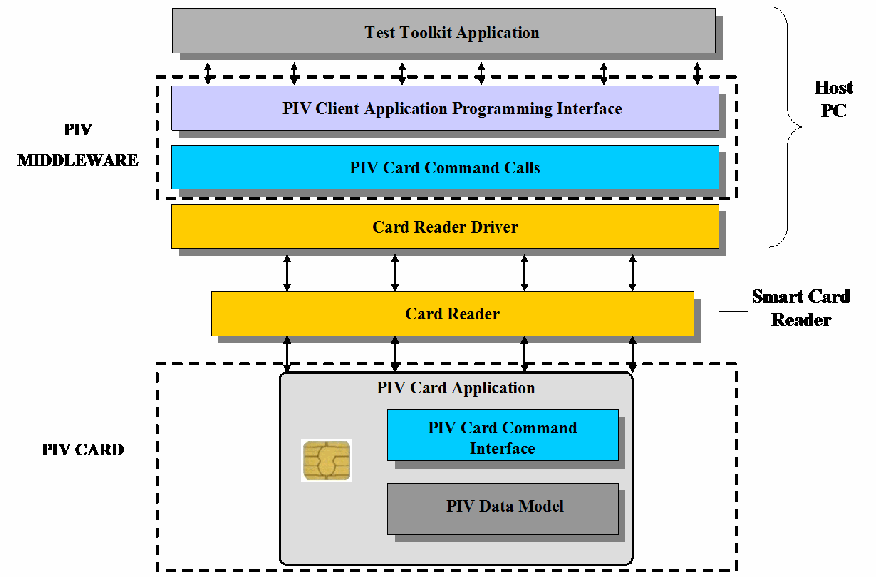
Figure 1: PIV Conformance Test Architecture
図1：PIV適合性テストアーキテクチャ
未レビュー訳+ PIV Middleware is a software application that is the interface between an agency’s PIV implementation and the PIV Card Application. It allows the agency’s applications to remain independent of the underlying operating system platform. The PIV Middleware has the following two functions:
+ PIVミドルウェアは、機関のPIV実装とPIVカードアプリケーションとの間のインターフェースとなるソフトウェアアプリケーションである。これにより、機関のアプリケーションは基盤となるオペレーティングシステムプラットフォームから独立して動作できる。PIVミドルウェアには次の2つの機能がある。
未レビュー訳1.It implements the functions for the PIV Client API (Part 3 of SP 800-73-4).
1.PIV Client APIの関数を実装する（SP 800-73-4のPart 3）。
未レビュー訳2.It generates the appropriate commands (also called application protocol data units or APDUs) for the PIV Card Command Interface (card edge interface – Part 2 of SP 800-73-4) and thus communicates with the PIV Card Application.
2.PIVカードコマンドインターフェース（カードエッジインターフェース、SP 800-73-4のPart 2）用の適切なコマンド（アプリケーションプロトコルデータユニット、APDUとも呼ばれる）を生成し、PIVカードアプリケーションと通信する。
未レビュー訳The PIV Card Application resides on the card, implements the commands in the PIV Card Command Interface (Part 2 of SP 800-73-4), and provides access to objects of the PIV data model. The PIV data model defines the logical use of the on-card application space including the SP 800-73-4 Part 1 required data objects and data elements, along with the size and structure of each object.
PIVカードアプリケーションはカード上に存在し、PIVカードコマンドインターフェース（SP 800-73-4のPart 2）のコマンドを実装し、PIVデータモデルのオブジェクトへのアクセスを提供する。PIVデータモデルは、SP 800-73-4 Part 1で必須とされるデータオブジェクトおよびデータ要素を含むカード上のアプリケーション領域の論理的な使用方法と、各オブジェクトのサイズおよび構造を定義する。
未レビュー訳2.1 Test Plan
2.1 テスト計画
未レビュー訳The test plan identifies the tasks/artifacts required for testing the PIV Middleware and PIV Card Applications. These artifacts include the following: PIV Middleware and a smart card populated with a PIV Card Application; the test toolkit (or test scripts), which implements the test assertions; and the various infrastructure devices needed to interface with the card and the card reader. The components involved in the test plan and the elements of the test configuration for the two broad categories of tests presented in this document are discussed in the next two subsections.
試験計画では、PIVミドルウェアおよびPIVカードアプリケーションの試験に必要なタスク／成果物を特定する。成果物には、PIVミドルウェアとPIVカードアプリケーションが搭載されたスマートカード、試験アサーションを実装する試験ツールキット（または試験スクリプト）、およびカードやカードリーダーとのインターフェースに必要な各種インフラ機器が含まれる。本書に示す2つの大分類の試験について、試験計画に関わる構成要素および試験構成の要素を次の2つの小節で説明する。
2.2 Test Set-up
2.2 テスト環境
未レビュー訳The test system consists of the following components:2
テストシステムは次の構成要素からなる。2
未レビュー訳 Test toolkit application software that resides on a personal computer (PC). Smart card (SC) readers:
パーソナルコンピューター（PC）上で動作するテストツールキットアプリケーションソフトウェア。 スマートカード（SC）リーダー：
未レビュー訳An ISO/IEC 7816 and PC/SC-compliant contact-based smart card reader o and An ISO/IEC 14443 and PC/SC-compliant contactless smart card reader. o
ISO/IEC 7816およびPC/SCに準拠した接触型スマートカードリーダー o および ISO/IEC 14443およびPC/SCに準拠した非接触型スマートカードリーダー。o
未レビュー訳または
未レビュー訳A dual interface reader. o
デュアルインターフェースリーダー。o
未レビュー訳▪ A personal identification number (PIN) pad or a keyboard that can transmit the PIN to the smart card reader.
▪ A set of test PIV Cards, loaded with PIV Card Application, with a contact interface that is compliant with ISO/IEC 7816 and a contactless interface that is compliant with ISO/IEC 14443, or a test PIV Card emulator.
▪ PIV Middleware application.
These components will be used in different configurations based on the type of test being conducted in the test bed.
▪ スマートカードリーダーにPINを送信できる個人識別番号（PIN）パッドまたはキーボード。
▪ PIVカードアプリケーションを搭載し、ISO/IEC 7816に準拠する接触インターフェースとISO/IEC 14443に準拠する非接触インターフェースを備えた一連のテスト用PIVカード、またはテスト用PIVカードエミュレーター。
▪ PIVミドルウェアアプリケーション。
これらの構成要素は、テストベッドで実施するテストの種類に応じて、異なる構成で用いられる。
2.3 Test System Configuration
2.3 テストシステム構成
未レビュー訳The test system shown in Figure 2 will be configured in both the PIV Middleware tests and the PIV Card Application tests to accommodate the different components to be tested, as explained in Section 3.
図2に示す試験システムは、第3節で説明するとおり、試験対象となる構成要素に応じてPIVミドルウェア試験およびPIVカードアプリケーション試験の両方で構成される。
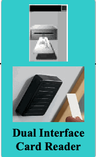
Test
テスト
未レビュー訳PIV Card
PIVカード
未レビュー訳Dual Interface Card Reader
デュアルインターフェースカードリーダー
未レビュー訳Figure 2: Test System Configuration
図2：テストシステム構成
未レビュー訳2.3.1 PIV Middleware Test Configuration
2.3.1 PIVミドルウェアテスト構成
未レビュー訳The middleware test configuration is used to test a vendor’s middleware software application that implements the PIV client API and generates the appropriate commands in the PIV card command interface (refer to Table A-1 for mapping between the client API and card command interface). The middleware test configuration is depicted in Figure 3.
ミドルウェアテスト構成は、PIVクライアントAPIを実装し、PIVカードコマンドインターフェースで適切なコマンドを生成するベンダーのミドルウェアソフトウェアアプリケーションをテストするために用いる（クライアントAPIとカードコマンドインターフェースの対応については表A-1を参照）。ミドルウェアテスト構成を図3に示す。
未レビュー訳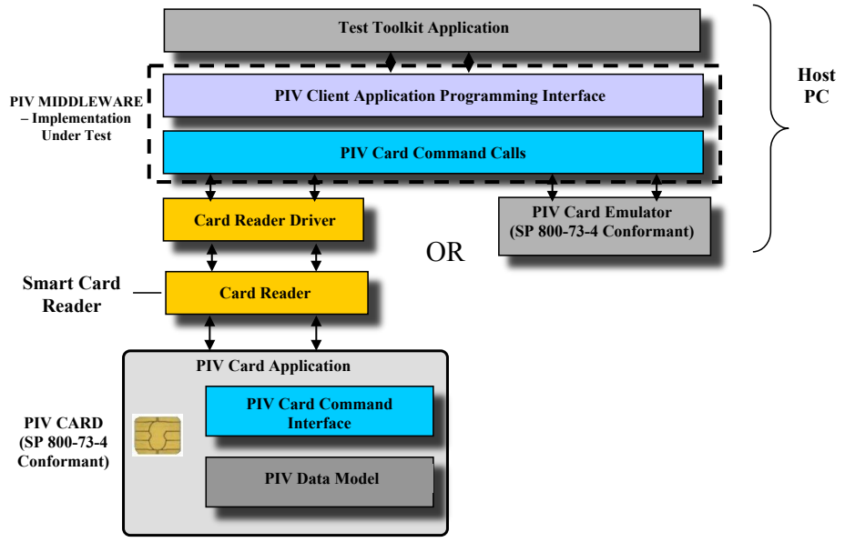
Test Toolkit Application
テストツールキットアプリケーション
未レビュー訳Host
ホスト
未レビュー訳PIV Client Application Programming Interface
PIVクライアントアプリケーションプログラミングインターフェース
未レビュー訳PC
未レビュー訳PIV MIDDLEWARE – Implementation Under Test
PIVミドルウェア – テスト対象実装
未レビュー訳PIV Card Command Calls
PIVカードコマンド呼び出し
未レビュー訳PIV Card Emulator
PIVカードエミュレーター
未レビュー訳Card Reader Driver
カードリーダードライバー
未レビュー訳(SP 800-73-4 Conformant)
（SP 800-73-4準拠）
未レビュー訳OR
または
未レビュー訳Smart Card
スマートカード
未レビュー訳Card Reader
カードリーダー
未レビュー訳Reader
リーダー
未レビュー訳PIV Card Application
PIVカードアプリケーション
未レビュー訳PIV Card Command Interface
PIVカードコマンドインターフェース
未レビュー訳PIV CARD (SP 800-73-4 Conformant)
PIVカード（SP 800-73-4準拠）
未レビュー訳原本PDFの抜粋画像
Figure 3: Middleware Test Configuration
図3：ミドルウェアテスト構成
未レビュー訳The following list shows the test system components included in this configuration:
+ Test toolkit application software.
+ Vendor provided PIV Middleware, which is the subject of this test (also called the implementation under test or IUT) and
One of the following combinations:
+ Contact and contactless smart card readers or a dual interface reader together with
+ A PIN input mechanism together with
+ A dual interface FIPS 201 conformant PIV Card loaded with “SP 800-73-4 Part 2 conformant PIV Card Application” (Refer to Section 7.2 for definition).
or
+ A PIV card emulator that emulates the behavior of a PIV Card Application.
The test toolkit application software resides on the test computer and facilitates the execution and management of both test suites explained in Section 3. For the PIV Middleware Test, the test system (Figure 2) will be configured so that the vendor provided PIV Middleware under test is also installed on the test computer and interacts with the SP 800-73-4 conformant test cards via the card reader(s).
この構成に含まれるテストシステムの構成要素を以下に示す。
+ テストツールキットアプリケーションソフトウェア。
+ このテストの対象であるベンダー提供のPIVミドルウェア（テスト対象実装またはIUTとも呼ぶ）、および
次の組み合わせのいずれか：
+ 接触型および非接触型スマートカードリーダー、またはデュアルインターフェースリーダーと、
+ PIN入力機構と、
+ 「SP 800-73-4 Part 2準拠PIVカードアプリケーション」を搭載した、FIPS 201準拠のデュアルインターフェースPIVカード（定義はセクション7.2を参照）。
または
+ PIVカードアプリケーションの動作をエミュレートするPIVカードエミュレーター。
テストツールキットアプリケーションソフトウェアはテスト用コンピューター上に置かれ、セクション3で説明する両方のテストスイートの実行と管理を支援する。PIVミドルウェアテストでは、テスト対象であるベンダー提供のPIVミドルウェアもテスト用コンピューターにインストールされ、カードリーダーを介してSP 800-73-4準拠のテストカードとやり取りするように、テストシステム（図2）を構成する。
2.3.2 PIV Card Application Test Configuration
2.3.2 PIVカードアプリケーション試験構成
The card application test configuration is used to test any PIV Card Application through commands of the PIV card command interface defined in SP 800-73-4 Part 2. The following list shows the test system components included in this configuration: + Test toolkit application software. + Contact and contactless smart card readers or a dual interface reader. + A PIN input mechanism. + A PIV Card loaded with a PIV Card Application that supports contact and contactless interfaces and is the subject of this test (also called implementation under test or
カードアプリケーションテスト構成は、SP 800-73-4 Part 2で定義されたPIVカードコマンドインターフェースのコマンドを通じて、任意のPIVカードアプリケーションをテストするために用いる。この構成に含まれるテストシステムの構成要素を以下に示す。+ テストツールキットアプリケーションソフトウェア。+ 接触型および非接触型スマートカードリーダー、またはデュアルインターフェースリーダー。+ PIN入力機構。+ 接触型および非接触型インターフェースをサポートし、本テストの対象となるPIVカードアプリケーションを搭載したPIVカード（テスト対象実装または
未レビュー訳IUT).
IUT）。
未レビュー訳For the PIV Card Application Test, the test system shown in Figure 2 will be configured such that the test toolkit application software directly interacts with the PIV Card under test via the card reader(s). The PIV Card Application Test configuration is depicted in Figure 4.
PIVカードアプリケーションテストでは、図2に示すテストシステムを、テストツールキットアプリケーションソフトウェアがカードリーダーを介してテスト対象PIVカードと直接やり取りするように構成する。PIVカードアプリケーションテスト構成を図4に示す。
未レビュー訳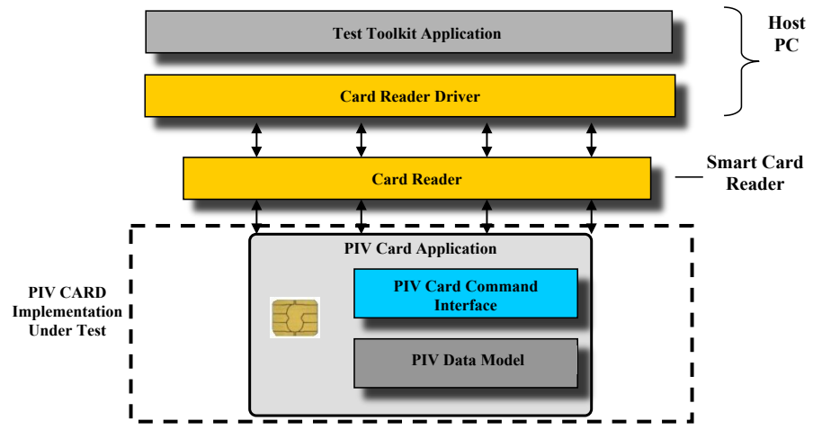
Host
ホスト
未レビュー訳Test Toolkit Application
テストツールキットアプリケーション
未レビュー訳PC
未レビュー訳Card Reader Driver
カードリーダードライバー
未レビュー訳Smart Card
スマートカード
未レビュー訳Card Reader
カードリーダー
未レビュー訳Reader
リーダー
未レビュー訳PIV Card Application
PIVカードアプリケーション
未レビュー訳PIV Card Command
PIVカードコマンド
未レビュー訳PIV CARD
PIVカード
未レビュー訳Interface
インターフェース
未レビュー訳Implementation Under Test
テスト対象実装
未レビュー訳原本PDFの抜粋画像
Figure 4: PIV Card Application Test Configuration
図4：PIVカードアプリケーションテスト構成
未レビュー訳3. Test Suite Elements
3. 試験一式の要素
未レビュー訳Based on the conceptual software architecture shown in Figure 1, the PIV software components that are subject to testing are as follows: + PIV Middleware that implements the functions for the PIV Client API and interfaces with the PIV Card Application (resident on the card) by generating commands
図1に示す概念的なソフトウェアアーキテクチャに基づき、試験対象となるPIVソフトウェアコンポーネントは次のとおりである：+ PIVクライアントAPIの関数を実装し、コマンドを生成してPIVカードアプリケーション（カード上に常駐）とインターフェースするPIVミドルウェア
未レビュー訳(APDUs) to the PIV card command interface. + PIV Card Application that implements the PIV Card Application card command interface, accesses and modifies the content of PIV data objects, and facilitates realization of PIV authentication use cases.
（APDU）をPIVカードコマンドインターフェースに送信する。+ PIVカードアプリケーションのカードコマンドインターフェースを実装し、PIVデータオブジェクトの内容にアクセスして変更し、PIV認証ユースケースの実現を可能にするPIVカードアプリケーション。
未レビュー訳3.1 PIV Middleware Tests
3.1 PIVミドルウェア試験
未レビュー訳These tests will validate that the PIV Middleware conforms to the specification in Part 3 of SP 800-73-4. Conformance criteria include correct implementation of the functions for the PIV client API, generation of appropriate commands for the PIV card command interface to communicate with the PIV Card Application, and return of the prescribed response codes to the calling agency application. This test, however, does not validate the functional requirements or the testing of the FIPS 201-mandated card application parameters, which are covered under the PIV data model tests as specified in SP 800-85B. The following PIV Middleware functions are tested for conformance of the PIV Middleware without support for secure messaging (SM) and the virtual contact interface (VCI):
これらの試験は、PIVミドルウェアがSP 800-73-4第3部の仕様に適合することを検証する（will）。適合基準には、PIVクライアントAPI関数の正しい実装、PIVカードアプリケーションと通信するためのPIVカードコマンドインターフェース向け適切なコマンドの生成、および呼び出し元の機関アプリケーションへの規定応答コードの返却が含まれる。ただし、本試験は、SP 800-85Bで規定されるPIVデータモデル試験の対象である、FIPS 201で義務付けられたカードアプリケーションパラメーターの機能要件または試験を検証しない。次のPIVミドルウェア関数は、セキュアメッセージング（SM）および仮想接触インターフェース（VCI）をサポートしないPIVミドルウェアへの適合性について試験される：
未レビュー訳1.pivConnect
1.pivConnect
2.pivDisconnect
2.pivDisconnect
3.pivSelectCardApplication
3.pivSelectCardApplication
4.pivLogIntoCardApplication
4.pivLogIntoCardApplication
5.pivGetData
5.pivGetData
6.pivLogoutOfCardApplication
6.pivLogoutOfCardApplication
7.pivCrypt
7.pivCrypt
8.pivPutData
8.pivPutData
9.pivGenerateKeyPair
9.pivGenerateKeyPair
10.pivMiddlewareVersion
10.pivMiddlewareVersion
未レビュー訳For PIV Middleware with support for SM and VCI, the following additional PIV Middleware function is tested for conformance:
SMおよびVCIをサポートするPIVミドルウェアについては、次の追加PIVミドルウェア関数が適合性試験の対象となる：
未レビュー訳11.pivEstablishSecureMessaging
11.pivEstablishSecureMessaging
未レビュー訳These functions will be tested for their response to both the valid and the error conditions as defined by this document. To conduct these tests, a smart card with an “SP 800-73-4-conformant PIV Card Application” (refer to Section 7.2 for definition) must be accessible.
これらの関数は、本書で定義する有効条件およびエラー条件の両方に対する応答について試験される（will）。これらの試験を実施するには、「SP 800-73-4適合PIVカードアプリケーション」（定義は7.2節を参照）を備えたスマートカードが利用可能でなければならない（must）。
未レビュー訳3.2 PIV Card Application Tests
3.2 PIVカードアプリケーション試験
未レビュー訳PIV Card Application tests cover the following:
+ The PIV Card Application card command interface as per Part 2 of SP 800-73-4, including the security conditions for executing each command in the interface as well as the security conditions for accessing and storing each of the associated data objects.
+ Presence of all mandatory data objects as well as accessibility and storage of all implemented data objects using the identifiers specified in Part 1 of SP 800-73-4.
The tests are performed through test scripts communicating directly with a PIV Card through the API of the driver that comes with the card reader.
PIVカードアプリケーション試験では、次を対象とする：
+ SP 800-73-4第2部に従ったPIVカードアプリケーションのカードコマンドインターフェース。これには、インターフェース内の各コマンドを実行するためのセキュリティ条件、および関連する各データオブジェクトへのアクセスと格納のためのセキュリティ条件を含む。
+ すべての必須データオブジェクトが存在すること、ならびにSP 800-73-4第1部で指定された識別子を用いて、実装済みのすべてのデータオブジェクトにアクセスでき格納できること。
試験は、カードリーダーに付属するドライバーのAPIを介してPIVカードと直接通信する試験スクリプトによって実施される。
未レビュー訳3.2.1 PIV Card Application Card Command Interface Tests
3.2.1 PIVカードアプリケーションのカードコマンドインターフェース試験
未レビュー訳These tests will validate that the card under test can successfully execute the commands in the PIV card command interface. Successful execution constitutes the card responding with appropriate data and response status codes to the commands sent by the test system. It also involves setting state variables within the PIV Card. For example, the criteria for successful execution of the SELECT command involve the following:
+ The response status code returned is '90 00'.
+ The application property template is returned with the correct format and content.
+ The “PIV Card Application” is the value of “currently selected application” (state variable) on the card.
これらの試験は、試験対象カードがPIVカードコマンドインターフェース内のコマンドを正常に実行できることを検証する。正常な実行とは、試験システムから送信されたコマンドに対して、カードが適切なデータおよび応答ステータスコードを返すことをいう。これには、PIVカード内の状態変数の設定も含まれる。例えば、SELECTコマンドの正常な実行の基準は次のとおりである：
+ 返される応答ステータスコードが'90 00'である。
+ アプリケーションプロパティテンプレートが正しい形式および内容で返される。
+ カード上の「現在選択されているアプリケーション」（状態変数）の値が「PIVカードアプリケーション」である。
The card command interface test suite includes conformance tests for the following PIV Card Application commands: + Data access commands.
カードコマンドインターフェース試験一式には、次のPIVカードアプリケーションコマンドに関する適合性試験が含まれる：+ データアクセスコマンド。
未レビュー訳 SELECT
SELECT
未レビュー訳 GET DATA
GET DATA
未レビュー訳+ Card authentication commands.
+ カード認証コマンド。
未レビュー訳 VERIFY
VERIFY
未レビュー訳 CHANGE REFERENCE DATA
CHANGE REFERENCE DATA
未レビュー訳 RESET RETRY COUNTER
RESET RETRY COUNTER
未レビュー訳 GENERAL AUTHENTICATE
GENERAL AUTHENTICATE
未レビュー訳+ Credential initialization and administration commands.
+ 資格情報の初期化および管理コマンド。
未レビュー訳 PUT DATA
PUT DATA
未レビュー訳 GENERATE ASYMMETRIC KEY PAIR
GENERATE ASYMMETRIC KEY PAIR
未レビュー訳The card edge commands will be validated against the following conditions: + Card interface type (contact vs. contactless, including virtual contact interface).
カードエッジコマンドは、次の条件に照らして検証される（will）：+ カードインターフェースの種類（接触／非接触。仮想接触インターフェースを含む）。
未レビュー訳+ Precondition for use (PIN, OCC verified, cryptographic authentication). + Expected response status codes. + Appropriate state variables set in the card.
+ 使用の前提条件（PIN、OCCの検証、暗号認証）。+ 期待される応答ステータスコード。+ カード内に適切な状態変数が設定されていること。
未レビュー訳3.2.2 PIV Data Objects Accessibility and Storage Tests
3.2.2 PIVデータオブジェクトのアクセス可能性および格納試験
The testing covers the following data objects: + The seven mandatory data objects as defined in Part 1 of SP 800-73-4:
試験対象には次のデータオブジェクトが含まれる：+ SP 800-73-4第1部で定義された7つの必須データオブジェクト：
未レビュー訳 Card Capability Container. Card Holder Unique Identifier (CHUID). X.509 Certificate for PIV authentication. X.509 Certificate for Card Authentication. Cardholder Fingerprints for off card comparison. Cardholder Facial Image. Security Object.
カード機能コンテナ。 カード保有者一意識別子（CHUID）。 PIV認証用X.509証明書。 カード認証用X.509証明書。 カード外照合用カード保有者指紋。 カード保有者顔画像。 セキュリティオブジェクト。
未レビュー訳+ The two data objects that are mandatory if the cardholder has a government-issued email account at the time of credential issuance:
+ 資格情報の発行時点でカード保有者が政府発行の電子メールアカウントを持つ場合に必須となる2つのデータオブジェクト：
未レビュー訳 X.509 Certificate for Digital Signature. X.509 Certificate for Key Management.
デジタル署名用X.509証明書。 鍵管理用X.509証明書。
未レビュー訳+ The twenty-seven optional data objects, also defined in Part 1 of SP 800-73-4:
+ SP 800-73-4 Part 1にも規定されている27個の任意データオブジェクト：
未レビュー訳 Printed Information. Discovery Object. Key History Object. 20 retired X.509 Certificates for Key Management. Cardholder Iris Images. Pairing Code Reference Data Container. Secure Messaging Certificate Signer. Biometric Information Templates Group Template.
印字情報。 ディスカバリーオブジェクト。 鍵履歴オブジェクト。 20個の失効済み鍵管理用X.509証明書。 カード保有者虹彩画像。 ペアリングコード参照データコンテナ。 セキュアメッセージング証明書署名者。 生体情報テンプレートグループテンプレート。
未レビュー訳The data objects will be validated for the following conditions:
+ Presence of all mandatory data objects and those optional objects in the vendor documentation.
+ Accessibility and storage of data objects using the appropriate BER-TLV tags (specified identifiers – Section 4, Part 1 of SP 800-73-4).
+ Appropriate container size allocations for each of the data objects.
+ Data objects access rule (e.g., PIN vs. no PIN).
データオブジェクトは、次の条件について検証される：
+ すべての必須データオブジェクト、およびベンダーの文書に記載された任意オブジェクトが存在すること。
+ 適切なBER-TLVタグを使用してデータオブジェクトにアクセスでき、格納できること（指定された識別子 – SP 800-73-4 Part 1の4節）。
+ 各データオブジェクトに適切なコンテナサイズが割り当てられていること。
+ データオブジェクトのアクセス規則（例：PINありとPINなし）。
+ Security condition for data objects storage (cryptographic authentication). + Appropriate card interface type for accessing each of the data objects (contact vs. contactless vs. secure messaging vs. virtual contact interface).
+ データオブジェクトの格納に関するセキュリティ条件（暗号認証）。 + 各データオブジェクトへのアクセスに適切なカードインターフェース種別（接触／非接触／セキュアメッセージング／仮想接触インターフェース）。
未レビュー訳4. Derived Test Requirements
4. 導出試験要件
未レビュー訳DTRs show the type of tests required based on the specifications in SP 800-73-4. These specifications cover expected command behavior (in the case of interface specification), data object representation (in the case of PIV data model) and data contents (in the case of PIV authentication use cases).
Each DTR consists of the following:
+ Actual condition statements taken/derived from the SP 800-73-4 specification – these include conditions for successful command execution for each command as well as exception behaviors explicitly called out through ‘shall’ statements in SP 800-73-4. Those exception behaviors that are implicit in SP 800-73-4 through listing of error codes associated with each command are tested only through Test Assertions (Appendices B, C and D) and are not part of the DTR condition statements. The condition statements are identified by codes starting with ‘AS’ followed by a running sequence that denotes the section in this document where they occur. All DTRs that are new to Revision 4 of this document are identified by the suffix ‘-R4’. Updated DTRs that existed previously are requirements updated in SP 800-73-4 and these retain their original identifiers.
+ Required Vendor Information – these include information that the vendors are mandated to provide in their documentation. The required vendor information is identified by codes starting with ‘VE’ followed by a running sequence that denotes the section in this document where they occur. All vendor information requirements that are new to Revision 4 of this document are identified by the suffix ‘-R4’. Updated required vendor information that existed previously are requirements updated in SP 800-73-4 and these retain their original identifiers.
+ Required Test Procedures – these are actions that the tester has to perform in order to satisfy the requirements stated in actual condition statements. These include verifying the information mandated in the “Required Vendor Information” for the condition as well as performing software-based tests. It must be mentioned, however, that some of the required test procedures will not be called out explicitly for verification of information in the associated “Required Vendor Information.” In these instances, it is implicitly assumed that the information is provided by the vendor and verified by the tester. The Required Test Procedures have identifiers starting with ‘TE’ followed by a running sequence that denotes the section in this document where they occur. All test procedure requirements that are new to Revision 4 of this document are identified by the suffix ‘-R4’. Updated required test procedures that existed previously are requirements updated in SP 800-73-4 and these retain their original identifiers.
Validations of some DTRs are not covered by the test assertions provided in this document. These DTRs require compliance of the component with an external specification or standard such as ISO/IEC 7816 or ISO/IEC 14443. No required test procedures are provided for these DTRs, and a note is added to indicate that the assertion is externally tested. The tester checks the vendor documentation for claimed compliance with such requirement or the presence of an external test/compliance certificate obtained from the related standards testing body, when applicable.
DTRは、SP 800-73-4の仕様に基づき必要な試験の種類を示す。これらの仕様は、期待されるコマンドの動作（インターフェース仕様の場合）、データオブジェクトの表現（PIVデータモデルの場合）、およびデータ内容（PIV認証ユースケースの場合）を扱う。
各DTRは次の要素から成る：
+ SP 800-73-4の仕様から引用または導出した実際の条件文 – これには、各コマンドが正常に実行されるための条件、およびSP 800-73-4で「shall」文により明示された例外動作が含まれる。各コマンドに関連付けられたエラーコードの列挙によってSP 800-73-4で暗黙に示されている例外動作は、試験アサーション（付録B、CおよびD）によってのみ試験され、DTRの条件文には含まれない。条件文は、「AS」で始まり、本書内でその条件文が現れる節を示す連番が続くコードで識別される。本書の改訂4で新設されたDTRはすべて、接尾辞「-R4」で識別される。以前から存在し更新されたDTRは、SP 800-73-4で更新された要件であり、元の識別子を保持する。
+ 必須ベンダー情報 – これには、ベンダーが文書で提示することを義務付けられている情報が含まれる。必須ベンダー情報は、「VE」で始まり、本書内でそれが現れる節を示す連番が続くコードで識別される。本書の改訂4で新設されたベンダー情報要件はすべて、接尾辞「-R4」で識別される。以前から存在し更新された必須ベンダー情報は、SP 800-73-4で更新された要件であり、元の識別子を保持する。
+ 必須試験手順 – 実際の条件文に述べられた要件を満たすために試験者が実施しなければならない操作である。これには、その条件について「必須ベンダー情報」で義務付けられた情報の検証、およびソフトウェアによる試験の実施が含まれる。ただし、必須試験手順の中には、関連する「必須ベンダー情報」の情報を検証する手順として明示されないものがあることに注意しなければならない。その場合、当該情報はベンダーが提供し、試験者が検証するものと暗黙に想定する。必須試験手順は、「TE」で始まり、本書内でそれが現れる節を示す連番が続く識別子を持つ。本書の改訂4で新設された試験手順要件はすべて、接尾辞「-R4」で識別される。以前から存在し更新された必須試験手順は、SP 800-73-4で更新された要件であり、元の識別子を保持する。
一部のDTRの検証は、本書に示す試験アサーションの対象外である。これらのDTRは、ISO/IEC 7816やISO/IEC 14443などの外部の仕様または規格にコンポーネントが適合することを要求する。これらのDTRには必須試験手順を示さず、そのアサーションが外部で試験されることを示す注記を付す。試験者は、ベンダー文書に当該要件への適合の主張があること、または該当する場合には関連する規格試験機関から取得した外部の試験／適合証明書があることを確認する。
Some DTRs cannot be validated through the test tools provided in this document. For example, the test tool cannot access the asymmetric private keys generated and stored on the card. Therefore, a note is added to indicate the assertion is not separately tested for these DTRs. The same note is added for DTRs that make general statements on the nature of the PIV Card and are validated as a result of the validation of many other DTRs. For example, the statement “[e]ach command that appears on the card command interface shall be implemented by a card application that is resident on the ICC [integrated circuit card]” is validated through the entire card command interface test and does not require an individual test assertion.
一部のDTRは、本書で提供される試験ツールでは検証できない。たとえば、試験ツールはカード上で生成・格納された非対称秘密鍵にアクセスできない。そのため、これらのDTRには、アサーションが個別に試験されないことを示す注記が付される。また、PIVカードの性質に関する一般的な記述で、多数の他のDTRの検証結果によって検証されるDTRにも同じ注記が付される。たとえば、「カードコマンドインターフェースに現れる各コマンドは、ICC［集積回路カード］上に常駐するカードアプリケーションによって実装されなければならない」という記述は、カードコマンドインターフェース試験全体を通じて検証され、個別の試験アサーションを必要としない。
5. Test Assertions
5. 試験アサーション
未レビュー訳Test assertions are statements of behavior, action, or condition that can be measured or tested. They provide the procedures to guide the tester in executing and managing the test. They include the purpose of the test, starting conditions and prerequisites, success criteria, and post-test conditions, when applicable. A list of test assertions can be seen in Appendices B and C. The following three sets of test assertions are included in this document: + PIV client API test assertions (see Section 3.1 for overview). + PIV card command interface test assertions (per Section 3.2.1). + PIV data objects accessibility and storage test assertions (per Section 3.2.2). An overview of each of the above classes of test assertions is given in Sections 5.2 through 5.4.
試験アサーションとは、測定または試験できる動作、操作、または条件を記述したものである。試験の実行と管理において試験者を導く手順を示す。該当する場合、試験の目的、開始条件と前提条件、合格基準、および試験後の条件を含む。試験アサーションの一覧は付録BおよびCに示す。本書には、次の3種類の試験アサーションが含まれる： + PIVクライアントAPI試験アサーション（概要は3.1節を参照）。 + PIVカードコマンドインターフェース試験アサーション（3.2.1節に従う）。 + PIVデータオブジェクトのアクセス可能性および格納に関する試験アサーション（3.2.2節に従う）。上記各クラスの試験アサーションの概要を5.2節から5.4節に示す。
未レビュー訳5.1 Mapping from Test Categories to Test Assertions
5.1 試験カテゴリから試験アサーションへの対応付け
未レビュー訳All the DTRs in Appendix A conceptually come under one of the two broad categories of tests stated in Section 3, i.e., PIV Middleware tests and PIV Card Application tests. Similarly, each test assertion makes specific references to the related sections in SP 800-73-4 or the related DTRs. However, overall there is a many-to-many mapping from the test suite elements (individual tests) under each of these two broad categories of tests to the DTRs (i.e., one test can map to many DTRs and one DTR can map to many tests). A similar type of relationship exists between DTRs and test assertions. To narrow the search space for cross references, Table 5-1 presents a cross-referencing guide showing the relevant DTR sections (with the section in SP 800-73-4 from which they were derived) and test assertion sections with respect to test classes in the two broad categories of tests.
付録AのすべてのDTRは、概念上、3節に記載された2つの広い試験カテゴリ、すなわちPIVミドルウェア試験とPIVカードアプリケーション試験のいずれかに属する。同様に、各試験アサーションは、SP 800-73-4の関連節または関連DTRを具体的に参照する。ただし全体として、これら2つの広い試験カテゴリのそれぞれに属する試験スイート要素（個々の試験）とDTRの間には、多対多の対応関係がある（すなわち、1つの試験が複数のDTRに対応し、1つのDTRが複数の試験に対応する）。DTRと試験アサーションの間にも同様の関係がある。相互参照の検索範囲を絞るため、表5-1に相互参照ガイドを示す。このガイドは、2つの広い試験カテゴリ内の試験クラスに関して、関連するDTR節（導出元のSP 800-73-4の節を併記）および試験アサーション節を示す。
未レビュー訳Table 5-1: Cross-referencing Guide
表5-1：相互参照ガイド
未レビュー訳| Category/Classes of Test | DTR Section(s) | Test Assertion Section(s) |
| (1a) PIV Card Application Tests—PIV Card Application Card Command Interface Tests (Section 3.2.1) | Appendix A.1: Concepts and Constructs (Section 2, SP 800-73- 4 Part 2) Appendix A.5: PIV Card Application Card Command Interface (Section 3 and 4, SP 800-73-4 Part 2) | Appendix C—PIV Card Command Interface Test Assertions |
| (1b) PIV Card Application Tests—PIV Data Object s Accessibility and Storage Tests (Section 3.2.2) | Appendix A.2: PIV Data Objects Representation (Section 4, SP 800-73-4 Part 1) Appendix A.3: Data Types and Their Representation (Section 5, SP 800-73-4 Part 1, SP 800-73-4 Part 2) | Appendix C—PIV Data Objects Accessibility and Storage Test Assertions |
| (2) PIV Middleware Tests (Section 3.1) | Appendix A.1: Concepts and Constructs (Section 2, SP 800-73- 4 Part 2) Appendix A.2: PIV Data Objects Representation (Section 4, SP 800-73-4 Part 1) | Appendix B—PIV Client API Test Assertions |
原本PDFの抜粋画像
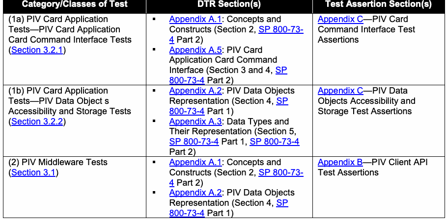
| 試験のカテゴリ／クラス | DTRの節 | 試験アサーションの節 |
| (1a) PIVカードアプリケーション試験 — PIVカードアプリケーションのカードコマンドインターフェース試験（3.2.1節） | 付録A.1：概念および構成要素（SP 800-73-4 Part 2の2節） 付録A.5：PIVカードアプリケーションのカードコマンドインターフェース（SP 800-73-4 Part 2の3節および4節） | 付録C — PIVカードコマンドインターフェース試験アサーション |
| (1b) PIVカードアプリケーション試験 — PIVデータオブジェクトのアクセス可能性および格納試験（3.2.2節） | 付録A.2：PIVデータオブジェクトの表現（SP 800-73-4 Part 1の4節） 付録A.3：データ型とその表現（SP 800-73-4 Part 1およびPart 2の5節） | 付録C — PIVデータオブジェクトのアクセス可能性および格納に関する試験アサーション |
| (2) PIVミドルウェア試験（3.1節） | 付録A.1：概念および構成要素（SP 800-73-4 Part 2の2節） 付録A.2：PIVデータオブジェクトの表現（SP 800-73-4 Part 1の4節） | 付録B — PIVクライアントAPI試験アサーション |
原本PDFの抜粋画像
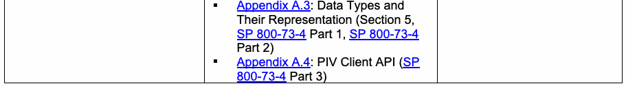
5.2 PIV Client API Test Assertions
5.2 PIVクライアントAPI試験アサーション
未レビュー訳This section provides conformance tests in the form of test assertions for the functions specified in Section 3, SP 800-73-4 Part 3 (referred to as the client API) that the PIV Middleware is expected to support. The test assertions are described through a test assertions template. The template provides placeholders for describing the purpose of the test, the preconditions required to exercise the test, the parameter values used in test invocation, and the expected results as well as the state of the PIV system (value of state variables), if any, that will be affected by the test run (post-condition).
The conformance tests are run against the PIV Middleware, which in turn interacts with the PIV Card Application resident on the PIV Card. Hence, there are two pieces of software (PIV Middleware and PIV Card Application) that determine the outcome of each test run. Because the focus of the tests is the behavior of the PIV Middleware, the test configuration assumes the presence of a validated PIV Card Application.
The test assertions derived from SP 800-73-4 and SP 800-78-4 are demonstrated by test cases in Appendix B.
The PIV client API test cases are based on the following assumptions:
+ There is a PIV Card with a validated PIV Card Application.
+ A valid connection description is provided for the PIV Card Application.
+ A valid physical connection exists between an instance of the PIV card reader and the host where the PIV Middleware resides.
+ No other application is currently connected to the PIV Card Application.
本節では、PIVミドルウェアがサポートすることを期待される、SP 800-73-4 Part 3の3節で規定された関数（以下、クライアントAPI）について、試験アサーション形式の適合性試験を示す。試験アサーションは、試験アサーションのテンプレートを用いて記述する。このテンプレートには、試験の目的、試験の実行に必要な前提条件、試験の呼び出しに用いるパラメータ値、期待される結果、および試験実行の影響を受けるPIVシステムの状態（状態変数の値）があればその状態（事後条件）を記述する欄がある。
適合性試験はPIVミドルウェアに対して実行され、PIVミドルウェアはPIVカード上に常駐するPIVカードアプリケーションとやり取りする。したがって、各試験実行の結果は2つのソフトウェア（PIVミドルウェアおよびPIVカードアプリケーション）によって決まる。試験の対象はPIVミドルウェアの動作であるため、試験構成では検証済みのPIVカードアプリケーションが存在することを前提とする。
SP 800-73-4およびSP 800-78-4から導出した試験アサーションは、付録Bのテストケースによって示す。
PIVクライアントAPIのテストケースは、次の前提に基づく：
+ 検証済みのPIVカードアプリケーションを搭載したPIVカードが存在する。
+ PIVカードアプリケーションに対する有効な接続記述が与えられている。
+ PIVカードリーダーのインスタンスと、PIVミドルウェアが置かれたホストとの間に、有効な物理接続が存在する。
+ 現在、他のアプリケーションはPIVカードアプリケーションに接続されていない。
5.3 PIV Card Command Interface Test Assertions
5.3 PIVカードコマンドインターフェース試験アサーション
未レビュー訳This section provides conformance tests in the form of test assertions for the command set that is specified in Section 3, Part 2 of SP 800-73-4 (PIV Card Application Card Command Interface) that the PIV Card Application is required to support. The test assertions are described through a test assertions template. The template provides placeholders for describing the purpose of the test, the preconditions required to exercise the test, the parameter values used in test invocation, and the expected results as well as the state of the PIV system (value of state variables), if any, that will be affected by the test run (post-condition). The conformance tests are run to validate the PIV Card Application. Interaction with the PIV Card Application takes place through the API of the driver that comes with the card reader. The test assertions derived from SP 800-73-4 Part 2 are demonstrated in test cases in Appendix C.
本節では、PIVカードアプリケーションがサポートすることを要求される、SP 800-73-4 Part 2の3節で規定されたコマンドセット（PIVカードアプリケーションのカードコマンドインターフェース）について、試験アサーション形式の適合性試験を示す。試験アサーションは、試験アサーションのテンプレートを用いて記述する。このテンプレートには、試験の目的、試験実施に必要な前提条件、試験呼び出しで使用するパラメーター値、期待される結果、および試験実行によって影響を受けるPIVシステムの状態（状態変数の値）がある場合にはその状態（事後条件）を記述するためのプレースホルダーがある。適合性試験は、PIVカードアプリケーションを検証するために実施する。PIVカードアプリケーションとのやり取りは、カードリーダーに付属するドライバーのAPIを介して行う。SP 800-73-4 Part 2から導出された試験アサーションは、付録Cのテストケースで実証される。
未レビュー訳The following assumptions have been made with regard to the PIV Card command interface test cases:
+ The PIV Card being tested (IUT) is inserted into the contact reader or placed near a contactless reader.
+ A valid PC/SC connection exists between the test system and an instance of the reader.
+ No application is currently connected to the PIV Card Application.
+ No other contactless card is within the proximity of the contactless reader.
PIVカードコマンドインターフェースのテストケースについて、次の前提を置く：
+ 試験対象のPIVカード（IUT）は、接触型リーダーに挿入されるか、非接触型リーダーの近くに置かれる。
+ 試験システムとリーダーのインスタンスとの間に有効なPC/SC接続が存在する。
+ 現在、PIVカードアプリケーションに接続されているアプリケーションはない。
+ 非接触型リーダーの近くに他の非接触カードはない。
5.4 PIV Data Objects Accessibility and Storage Test Assertions
5.4 PIVデータオブジェクトのアクセス可能性および格納に関する試験アサーション
未レビュー訳The following assumptions have been made with respect to the PIV data object representation test assertions:
+ A PIV Card Application with a valid Application Identifier (AID) is resident on the card.
+ The PIV Card Application is expected to have implemented all seven mandatory PIV data objects of the PIV data model on the card.
+ The PIV Card Application is expected to have implemented both conditionally mandatory PIV data objects3 of the PIV data model on the card.
+ The presence of any one or more of the twenty-seven optional PIV data objects on the PIV Card is known from the vendor documentation.
PIVデータオブジェクト表現の試験アサーションについて、次の前提を置く：
+ 有効なアプリケーション識別子（AID）を持つPIVカードアプリケーションがカード上に常駐している。
+ PIVカードアプリケーションは、PIVデータモデルの7つの必須PIVデータオブジェクトすべてをカード上に実装していることが期待される。
+ PIVカードアプリケーションは、PIVデータモデルの条件付き必須PIVデータオブジェクト3の両方をカード上に実装していることが期待される。
+ 27個の任意PIVデータオブジェクトのうちいずれか1つ以上がPIVカード上に存在するかどうかは、ベンダー文書から分かる。
3 The two data objects that are conditionally mandatory, that is mandatory only if the cardholder has a government-issued email account at the time of credential issuance, are the X.509 Certificate for Digital Signature and the X.509 Certificate for Key Management.
3 条件付き必須データオブジェクト、すなわち資格情報の発行時点でカード保有者が政府発行の電子メールアカウントを持つ場合にのみ必須となる2つのデータオブジェクトは、デジタル署名用X.509証明書と鍵管理用X.509証明書である。
未レビュー訳6. Test and Compliance Documentation
6. 試験および適合性文書
未レビュー訳There are two sets of compliance documentation: vendor required and test facility generated.
The vendor-required documents consist of the following:
+ Installation and Execution instructions (for PIV Middleware): The vendor provides technical instructions and other documentation to aid the testing personnel in installing and using the PIV Middleware implementation under test. The PIV Middleware implementation could be in any high-level programming language. Since all the implementations have to be tested from a common test program, the PIV Middleware vendor submitting the product for testing may have to provide Java wrapper programs in some cases to the test facility. The purpose of the wrapper program is to translate the test execution calls made using the test program to the PIV Middleware implementation’s native program calls.
+ Technical documentation (for both PIV Card Application and PIV Middleware): The vendor-supplied technical documentation must include the detailed technical description and the design of the implementation to be tested. This document includes, at a minimum, all the required vendor information specified in DTRs in Appendix A of this document.
+ Security-related information: The following security related information shall be provided by the vendor: (a) PIV Card Application PIN, (b) PIN Unblocking Key (PUK), (c) Global PIN, (d) pairing code, (e) cryptographic algorithms supported by the card, (f) minutia data, and (g) the number of unsuccessful attempts using (1) wrong PIV Card Application PIN, (2) wrong Global PIN, (3) wrong PUK, (4) and wrong minutia data.
適合性文書には、ベンダーに提出を求めるものと試験施設が作成するものの2種類がある。
ベンダーに提出を求める文書は次のとおりである：
+ インストールおよび実行手順（PIVミドルウェア用）：ベンダーは、試験担当者が試験対象のPIVミドルウェア実装をインストールして使用する際に役立つ技術手順およびその他の文書を提供する。PIVミドルウェア実装は、任意の高水準プログラミング言語で記述されていてよい。すべての実装を共通の試験プログラムから試験する必要があるため、製品を試験に提出するPIVミドルウェアベンダーは、場合によってはJavaラッパープログラムを試験施設に提供しなければならないことがある。ラッパープログラムの目的は、試験プログラムを用いて行われる試験実行の呼び出しを、PIVミドルウェア実装固有のプログラム呼び出しに変換することである。
+ 技術文書（PIVカードアプリケーションおよびPIVミドルウェアの両方）：ベンダー提供の技術文書には、試験対象実装の詳細な技術説明および設計を含めなければならない。この文書には、少なくとも、本書の付録AのDTRで指定された必須ベンダー情報のすべてを含める。
+ セキュリティ関連情報：ベンダーは次のセキュリティ関連情報を提供しなければならない：(a) PIVカードアプリケーションPIN、(b) PINブロック解除キー（PUK）、(c) グローバルPIN、(d) ペアリングコード、(e) カードがサポートする暗号アルゴリズム、(f) マニューシャデータ、および (g) (1) 誤ったPIVカードアプリケーションPIN、(2) 誤ったグローバルPIN、(3) 誤ったPUK、(4) 誤ったマニューシャデータを用いた試行の失敗回数。
The test facility-generated documents are required for performing and reporting the test process. The following are some of the examples:
+ Checklists: Checklists provide the tester with a list of actions and requirements to complete before the test starts. Information required in the preconditions section of the assertions is included in the checklists.
+ Test logs: A test log is kept for each test run on any component and is used to summarize the results of all the tests run.
+ Test reports: These provide the background (environmental information) for each of the test cases as well as summary of outcomes from test runs (from test logs) associated with each test case.
A test case is a sequence of command/function invocations that pertain to a given execution condition for the ‘command/function under test’. For example, if the GET DATA command is the command/function under test, then the execution condition ‘Invocation of this function after PIN verification’ will consist of the following sequence of command/function invocations – SELECT, VERIFY, GET DATA, and collectively constitutes a test case. There may be many test runs for this test case. The function invocations returning the expected return codes for a test case in all test runs indicate that the command/function has been implemented correctly.
試験施設が作成する文書は、試験プロセスの実施と報告に必要である。例として次のものがある：
+ チェックリスト：チェックリストは、試験開始前に完了すべき操作および要件の一覧を試験者に提供する。アサーションの前提条件節で求められる情報は、チェックリストに含まれる。
+ 試験ログ：試験ログは、いずれのコンポーネントについても試験実行ごとに記録し、実行したすべての試験の結果を要約するために使用する。
+ 試験報告書：各テストケースの背景（環境情報）と、各テストケースに関連付けられた試験実行の結果の要約（試験ログに基づく）を示す。
テストケースとは、「試験対象のコマンド／関数」のある実行条件に関する一連のコマンド／関数呼び出しである。例えば、GET DATAコマンドが試験対象のコマンド／関数である場合、「PIN検証後のこの関数の呼び出し」という実行条件は、SELECT、VERIFY、GET DATAという一連のコマンド／関数呼び出しから成り、これらがまとまって1つのテストケースを構成する。このテストケースに対して多数の試験実行を行うことがある。すべての試験実行において、テストケースの関数呼び出しが期待される戻りコードを返すことは、そのコマンド／関数が正しく実装されていることを示す。
7. Acceptance Criteria
7. 受入基準
未レビュー訳Acceptance criteria are based on the compliance of the item under the test with the requirements defined in FIPS 201 and the accompanying special publication documents. The criteria are further specified in the following sections, based on the type of test being conducted.
受入基準は、試験対象項目がFIPS 201および関連する特別刊行物文書で定められた要件に適合しているかに基づく。基準は、実施する試験の種類に応じて以下の節でさらに規定する。
7.1 Acceptance Criteria for the PIV Middleware Test
7.1 PIVミドルウェア試験の受入基準
未レビュー訳The PIV Middleware test acceptance criteria will be based on the middleware application under the test passing the SP 800-73-4 client API test assertions. The middleware should return appropriate return codes in response to executing the client API functions as defined in Section 3, Part 3 of SP 800-73-4. The middleware should also be able to send the correct card commands to and interpret the responses received from the “SP 800-73-4 conformant PIV Card Application” (refer to Section 7.2 for definition). The test assertions detail the pass/fail criteria defined for each test case that is designed to test a certain condition being tested. PIV Middleware that supports the SP 800-73-4 client API with SM will be required to test against both the SP 800-73-4 client API test assertions and the SP 800-73-4 client API with SM test assertions. All SP 800-73-4 client API with SM test assertions are to be conducted over a contactless interface.
PIVミドルウェア試験の受入基準は、試験対象のミドルウェアアプリケーションがSP 800-73-4クライアントAPI試験アサーションに合格することに基づくものとなる（will）。ミドルウェアは、SP 800-73-4の第3部第3節で定義されたクライアントAPI関数の実行に対して、適切な戻りコードを返すべきである（should）。また、ミドルウェアは「SP 800-73-4適合PIVカードアプリケーション」（定義は7.2節を参照）に正しいカードコマンドを送信し、受信した応答を解釈できるべきである（should）。試験アサーションは、試験対象の特定の条件を試験する各テストケースについて定義された合格／不合格基準を詳述する。SM付きSP 800-73-4クライアントAPIをサポートするPIVミドルウェアは、SP 800-73-4クライアントAPI試験アサーションとSM付きSP 800-73-4クライアントAPI試験アサーションの両方に対して試験する必要がある（will）。SM付きSP 800-73-4クライアントAPI試験アサーションはすべて、非接触インターフェース上で実施するものとする（are to）
未レビュー訳7.2 Acceptance Criteria for the PIV Card Application Tests
7.2 PIVカードアプリケーション試験の受入基準
未レビュー訳Acceptance criteria for the PIV Card Application tests are based on the PIV Card Application passing the following two classes of tests: PIV Card Application card command interface tests and PIV data objects accessibility and storage tests. The PIV Card Application that has passed these classes of tests is called an “SP 800-73-4 conformant PIV Card Application.” For PIV Card Application card command tests, the PIV Card Application should send the appropriate response status codes and application data in response to commands. It should also set or reset certain card state variables and thus fulfill the test postconditions. For the PIV data objects accessibility and storage tests, the PIV Card Application should show the presence of all mandatory PIV data objects and published optional PIV data objects. It should also demonstrate the ability to access and store all the above data objects using the correct BER-TLV tag under the appropriate security conditions and interfaces (contact, contactless, secure messaging, or VCI) and that the containers for storing them satisfy the specified minimum size requirements. The acceptance criteria for the testing of PIV Card functionalities, for which FIPS 201 makes reference to external documents (such as digital signature formats), is based on visual verification of vendor-provided documents and test/compliance certificates.
PIVカードアプリケーション試験の受入基準は、PIVカードアプリケーションが次の2種類の試験に合格することに基づく：PIVカードアプリケーションのカードコマンドインターフェース試験、およびPIVデータオブジェクトのアクセス可能性と格納試験。これらの試験に合格したPIVカードアプリケーションを「SP 800-73-4適合PIVカードアプリケーション」と呼ぶ。PIVカードアプリケーションのカードコマンド試験では、PIVカードアプリケーションはコマンドに対して適切な応答ステータスコードおよびアプリケーションデータを返すべきである（should）。また、特定のカード状態変数を設定またはリセットし、試験の事後条件を満たすべきである（should）。PIVデータオブジェクトのアクセス可能性と格納試験では、PIVカードアプリケーションはすべての必須PIVデータオブジェクトおよび公開済みのオプションPIVデータオブジェクトの存在を示すべきである（should）。また、適切なセキュリティ条件およびインターフェース（接触、非接触、セキュアメッセージング、またはVCI）の下で、正しいBER-TLVタグを使用して上記すべてのデータオブジェクトにアクセスし格納できること、ならびにそれらの格納用コンテナが指定された最小サイズ要件を満たすことを示すべきである（should）。デジタル署名形式など、FIPS 201が外部文書を参照するPIVカード機能の試験に関する受入基準は、ベンダー提供文書および試験／適合証明書の目視確認に基づく。
未レビュー訳8. Test and Compliance Process
8. 試験および適合プロセス
未レビュー訳The PIV software component that passes all applicable tests, as explained in this document, will be considered conformant. This document provides the technical details for the testing of the two PIV software components. In this context, compliance means: + Passing the related test assertions explained in this document, and + Passing the inspection/verification of the required vendor documentation. The certified and/or accredited test laboratory that will conduct the testing has the following responsibilities: + Prepare and provide the test application forms and the documentation, + Receive and configure the PIV software component to be tested, + Conduct the test with the testing toolkit, + Review the test results and report failures, + Inspect the vendor documentation, and + Communicate the results. Upon vendor’s submission of the request for PIV component certification, the required documentation, and the PIV software components to be tested, the test laboratory configures the test system, records all preconditions, and runs the applicable suite of tests for the submitted PIV component. After conducting the tests, the test laboratory evaluates the test results and communicates the Test Results Summary (TRS) and Test Run Details (TRD) to the vendor. The Test Results Summary provides the overall environmental information (date and time the tests were conducted, the tester name, vendor product identifier, etc.) as well as the summary conclusion for tests associated with that particular class. The format of the summary report will vary depending upon the test classes. The TRS associated with each of the three classes are: + PIV Client API Test Summary. + Card Command Interface Test Summary. + PIV Data Objects Accessibility and Storage Test Summary. The TRDs are used to log the details of each test run associated with each of the three classes in the test suite. They provide the details of the outcome of each test run for various execution conditions. This detailed report will enable the product vendor to make the necessary logic changes to the implementation of the various commands/interfaces and data object representations in order to become fully conformant.
本書で説明する該当するすべての試験に合格したPIVソフトウェアコンポーネントは、適合とみなされる。本書は2種類のPIVソフトウェアコンポーネントの試験に関する技術的詳細を示す。この文脈で、適合とは次を意味する：+ 本書で説明する関連試験アサーションに合格すること、および + 必要なベンダー文書の検査／検証に合格すること。試験を実施する認証済みおよび／または認定済み試験機関には、次の責任がある：+ 試験アプリケーション用フォームおよび文書を準備して提供する、+ 試験対象のPIVソフトウェアコンポーネントを受領して構成する、+ 試験ツールキットを用いて試験を実施する、+ 試験結果をレビューし不合格を報告する、+ ベンダー文書を検査する、および + 結果を通知する。ベンダーがPIVコンポーネント認証の申請、必要文書、および試験対象のPIVソフトウェアコンポーネントを提出すると、試験機関は試験システムを構成し、すべての事前条件を記録し、提出されたPIVコンポーネントに該当する試験一式を実行する。試験実施後、試験機関は試験結果を評価し、試験結果概要（TRS）および試験実行詳細（TRD）をベンダーに通知する。試験結果概要には、全般的な環境情報（試験日時、試験担当者名、ベンダー製品識別子など）と、その試験クラスに関連する試験の総括的結論が含まれる。概要報告書の形式は試験クラスによって異なる。3つのクラスに対応するTRSは次のとおりである：+ PIVクライアントAPI試験概要。+ カードコマンドインターフェース試験概要。+ PIVデータオブジェクトのアクセス可能性および格納試験概要。TRDは、試験一式の3つのクラスそれぞれに関連する各試験実行の詳細を記録するために使用される。さまざまな実行条件下での各試験実行の結果詳細を示す。この詳細報告書によって、製品ベンダーは、完全な適合を達成するため、各種コマンド／インターフェースの実装およびデータオブジェクト表現に必要なロジック変更を行える。（will）（will）（will）（will）
未レビュー訳8.1 Failure Review
8.1 不合格のレビュー
未レビュー訳The test will be repeated once for components that do not pass the tests. After the retest, the tester prepares, for each failure, a discrepancy report that summarizes the purpose of the test, the progression of steps, and the responses received from the tested components. The discrepancy report will be internally reviewed and discussed by the test lab before an official response is sent to the vendor. Vendors who object to the results presented in the discrepancy report must explain their reason for the objection. If the reason necessitates another retest, the test laboratory may consider repeating the test. Otherwise, the test lab will seek the guidance of the NIST personnel on the failure before the component is returned to the vendor to be corrected.
試験に合格しなかったコンポーネントについては、試験を1回再実施する。再試験後、試験担当者は各不合格について、試験の目的、手順の進行、および試験対象コンポーネントから受信した応答を要約した不一致報告書を作成する。不一致報告書は、正式な回答をベンダーに送る前に試験機関内でレビューし、協議する。不一致報告書に示された結果に異議を唱えるベンダーは、その異議の理由を説明しなければならない（must）。その理由から再試験が必要となる場合、試験機関は試験の再実施を検討してもよい（may）。それ以外の場合、試験機関はコンポーネントを修正のためベンダーに返却する前に、不合格についてNIST職員の助言を求める。（will）（will）（will）
未レビュー訳Derived Test Requirements
導出試験要件
未レビュー訳All DTRs that are new to Revision 4 of this document are new requirements introduced in SP 800-73-4. These are referenced with the suffix -R4 (e.g., AS0X-R4). Updated DTRs that existed previously are requirements updated in SP 800-73-4 and these retain their original identifiers.
本書の改訂4で新たに追加されたすべてのDTRは、SP 800-73-4で導入された新規要件である。これらは接尾辞-R4（例：AS0X-R4）を付して参照される。以前から存在する更新済みDTRは、SP 800-73-4で更新された要件であり、元の識別子を保持する。
未レビュー訳A.1 Concepts and Constructs
A.1 概念および構成要素
未レビュー訳A.1.1 Platform Requirements
A.1.1 プラットフォーム要件
未レビュー訳AS01.01: The PIV Card Application shall place the following requirements on the ICC platform on which it is implemented or installed:
AS01.01: PIVカードアプリケーションは、実装またはインストールされるICCプラットフォームに次の要件を課さなければならない：
+ global security status that includes the security status of a global cardholder PIN. + application selection using a truncated Application Identifier (AID). + ability to reset the security status of an individual application. + indication to applications as to which physical communication interface – contact versus contactless – is in use. + support for the default selection of an application upon warm or cold reset.
+ グローバルカード保有者PINのセキュリティ状態を含むグローバルセキュリティ状態。+ 切り詰めたアプリケーション識別子（AID）を用いたアプリケーション選択。+ 個々のアプリケーションのセキュリティ状態をリセットする機能。+ 接触と非接触のどちらの物理通信インターフェースが使用中かをアプリケーションに示すこと。+ ウォームリセットまたはコールドリセット時にアプリケーションをデフォルト選択する機能のサポート。
未レビュー訳Note: This assertion is not separately tested.
注：このアサーションは個別には試験されない。
A.1.2 Card Applications
A.1.2 カードアプリケーション
未レビュー訳AS01.02: Each command that appears on the card command interface shall be implemented by a card application that is resident on the ICC.
AS01.02: カードコマンドインターフェースに現れる各コマンドは、ICC上に常駐するカードアプリケーションによって実装されなければならない。
Note: This assertion is not separately tested – collection of DTRs for all commands implicitly tests this assertion.
注：このアサーションは個別には試験されない。すべてのコマンドに対するDTR一式の収集により、このアサーションは暗黙的に試験される。
AS01.03: Each card application shall have a globally unique name called its Application Identifier (AID) [ISO/IEC 7816, Part 4].
AS01.03: 各カードアプリケーションは、アプリケーション識別子（AID）と呼ばれるグローバルに一意な名前を持たなければならない [ISO/IEC 7816, Part 4]。
Note: This assertion is tested as part of AS05.05 through AS05.10.
注：このアサーションはAS05.05からAS05.10の一部として試験される。
未レビュー訳AS01.04: Except for the default applications, access to the card commands and data objects of a card application shall be gained by selecting the card application using its application identifier.
AS01.04: デフォルトアプリケーションを除き、カードアプリケーションのカードコマンドおよびデータオブジェクトへのアクセスは、そのアプリケーション識別子を使用してカードアプリケーションを選択することによって行わなければならない。
Note: This assertion is tested as part of AS05.11.
注：このアサーションはAS05.11の一部として試験される。
AS01.05: The Proprietary Identifier eXtension (PIX) of the AID shall contain an encoding of the version of the card application.
AS01.05: AIDの専有識別子拡張（PIX）は、カードアプリケーションのバージョンを符号化したものを含まなければならない。
Note: This assertion is tested as part of the AS05.05 through AS05.10.
注：このアサーションはAS05.05からAS05.10の一部として試験される。
A.1.2.1 Personal Identity Verification Card Application
A.1.2.1 個人識別検証カードアプリケーション
未レビュー訳AS01.06: The AID of the PIV Card Application shall be: 'A0 00 00 03 08 00 00 10 00 01 00'.
AS01.06: PIVカードアプリケーションのAIDは次のとおりでなければならない： 'A0 00 00 03 08 00 00 10 00 01 00'。
Note: This assertion is tested as part of the AS05.05 through AS05.10.
注：このアサーションはAS05.05からAS05.10の一部として試験される。
AS01.07: The AID of the PIV Card Application shall consist of the NIST Registered application provider IDentifier (RID) 'A0 00 00 03 08' followed by the application portion of the NIST PIX indicating the PIV Card Application '00 00 10 00' and then the version portion of the NIST PIX '01 00' for the first version of the PIV Card Application.
AS01.07: PIVカードアプリケーションのAIDは、NIST登録アプリケーションプロバイダー識別子（RID）'A0 00 00 03 08'の後に、PIVカードアプリケーションを示すNIST PIXのアプリケーション部分'00 00 10 00'、続いてPIVカードアプリケーションの最初のバージョンを示すNIST PIXのバージョン部分'01 00'で構成されなければならない（shall）。
未レビュー訳Note: This assertion is tested as part of the AS05.05 through AS05.10.
注：このアサーションはAS05.05からAS05.10の一部として試験される。
未レビュー訳A.1.2.2 Default Selected Card Application
A.1.2.2 デフォルト選択カードアプリケーション
未レビュー訳AS01.08: The card platform shall support a default selected card application. In other words, there shall be a currently selected application immediately after a cold or warm reset.
AS01.08: カードプラットフォームは、デフォルトで選択されるカードアプリケーションをサポートしなければならない（shall）。つまり、コールドリセットまたはウォームリセットの直後に、アプリケーションが選択済みの状態でなければならない（shall）。
Required Vendor Information
必須ベンダー情報
未レビュー訳VE01.08.01: The vendor shall specify in its documentation the default selected card application.
VE01.08.01: ベンダーは、デフォルト選択カードアプリケーションを文書に明記しなければならない（shall）。
Required Test Procedures
必須試験手順
未レビュー訳TE01.08.01: The tester shall review the vendor’s documentation and validate that there is a default selected card application, which matches with the one specified by the vendor in VE01.08.01.
TE01.08.01: テスターはベンダー文書をレビューし、デフォルト選択カードアプリケーションが存在し、それがVE01.08.01でベンダーが指定したものと一致することを検証しなければならない。
A.1.3 Security Architecture
A.1.3 セキュリティアーキテクチャ
未レビュー訳A.1.3.1 Access Control Rule
A.1.3.1 アクセス制御規則
未レビュー訳AS01.09: An access control rule shall consist of an access mode and a security condition.
AS01.09: アクセス制御規則は、アクセスモードおよびセキュリティ条件で構成されなければならない（shall）。
未レビュー訳Note: This assertion is not separately tested.
注：このアサーションは個別には試験しない。
AS01.10: The action described by the access mode can be performed on the data object if and only if the security condition evaluates to TRUE for the current values of the security statuses.
AS01.10: アクセスモードで記述された動作は、現在のセキュリティ状態値についてセキュリティ条件がTRUEと評価される場合に限り、データオブジェクトに対して実行できる（can）。
Note: This assertion is not separately tested.
注：このアサーションは個別には試験されない。
未レビュー訳AS01.11: If there is no access control rule with an access mode describing a particular action, then that action shall never be performed on the data object.
AS01.11: 特定の操作を記述するアクセスモードを持つアクセス制御規則がない場合、その操作はデータオブジェクトに対して決して実行してはならない。
未レビュー訳Note: This assertion is not separately tested.
注：このアサーションは個別には試験しない。
A.1.3.2 Security Status
A.1.3.2 セキュリティ状態
未レビュー訳AS01.12: Associated with each authenticable entity shall be a set of one or more Boolean variables, each called a security status indicator of the authenticable entity.
AS01.12: 各認証可能なエンティティには、1つ以上のブール変数からなる集合を関連付けなければならない。各変数を、その認証可能なエンティティのセキュリティ状態インジケーターと呼ぶ。
Note: The security status indicators are tested indirectly through the functional testing.
注：セキュリティ状態インジケーターは、機能試験を通じて間接的に試験される。
AS01.13: The security status indicator of an authenticable entity shall be TRUE if the credentials associated with the security status indicator of the authenticable entity have been authenticated and FALSE otherwise.
AS01.13: 認証可能なエンティティのセキュリティ状態インジケーターは、そのインジケーターに関連付けられた認証情報が認証済みである場合はTRUE、それ以外の場合はFALSEでなければならない。
Note: The security status indicators are tested indirectly through the functional testing.
注：セキュリティ状態インジケーターは、機能試験を通じて間接的に試験される。
AS01.14: A successful execution of an authentication protocol shall set the security status indicator associated with the credential used in the protocol to TRUE.
AS01.14: 認証プロトコルの実行が成功した場合、そのプロトコルで使用した認証情報に関連付けられたセキュリティ状態インジケーターをTRUEに設定しなければならない。
Note: The security status indicators are tested indirectly through the functional testing.
注：セキュリティ状態インジケーターは、機能試験を通じて間接的に試験される。
AS01.14A-R4: An aborted or failed execution of an authentication protocol shall set the security status indicator associated with the credential used in the protocol to FALSE.
AS01.14A-R4: 認証プロトコルの実行が中断または失敗した場合、そのプロトコルで使用した認証情報に関連付けられたセキュリティ状態インジケーターをFALSEに設定しなければならない。
未レビュー訳Note: The security status indicators are tested indirectly through the functional testing.
注：セキュリティ状態インジケーターは、機能試験を通じて間接的に試験される。
AS01.15: A security status indicator shall be said to be a global security status indicator if it is not changed when the currently selected application changes from one application to another. In essence, when changing from one application to another, the global security status indicators shall remain unchanged.
AS01.15: 現在選択されているアプリケーションが別のアプリケーションに切り替わっても変更されないセキュリティ状態インジケーターを、グローバルセキュリティ状態インジケーターと呼ぶ。すなわち、アプリケーションを切り替える際、グローバルセキュリティ状態インジケーターは変更されないものとする。
Note: This assertion is not separately tested.
注：このアサーションは個別には試験しない。
AS01.16: A security status indicator is said to be an application security status indicator if it is set to FALSE when the currently selected application changes from one application to another.
AS01.16: 現在選択されているアプリケーションが別のアプリケーションに切り替わるとFALSEに設定されるセキュリティ状態インジケーターを、アプリケーションセキュリティ状態インジケーターと呼ぶ。
Required Vendor Information
必須ベンダー情報
未レビュー訳VE01.16.01: The vendor shall specify in its documentation that the application security status indicators are set to FALSE when the currently selected application changes from one application to another.
VE01.16.01: ベンダーは、現在選択されているアプリケーションが別のアプリケーションに切り替わるとアプリケーションセキュリティ状態インジケーターがFALSEに設定されることを、文書で明記しなければならない。
未レビュー訳Required Test Procedures
必須試験手順
未レビュー訳TE01.16.01: The tester shall review the vendor’s documentation and validate that it contains the requirement stated in VE01.16.01.
TE01.16.01: テスターはベンダーの文書を確認し、VE01.16.01に記載された要件が含まれていることを検証しなければならない。
AS01.16A-R4: The security status indicators associated with the PIV Card Application PIN, the PIN Unblocking Key (PUK), OCC, pairing code, and the PIV Card Application
AS01.16A-R4: PIVカードアプリケーションPIN、PINブロック解除キー（PUK）、OCC、ペアリングコード、およびPIVカードアプリケーション
未レビュー訳Administration Key are application security status indicators for the PIV Card Application, whereas the security status indicator associated with the Global PIN is a global security status indicator.
管理キーに関連付けられたセキュリティ状態インジケーターはPIVカードアプリケーションのアプリケーションセキュリティ状態インジケーターである。一方、グローバルPINに関連付けられたセキュリティ状態インジケーターはグローバルセキュリティ状態インジケーターである。
未レビュー訳Required Vendor Information
必須ベンダー情報
未レビュー訳VE01.16A-R4.01: The vendor shall specify in its documentation that the security status indicators associated with the PIV Card Application PIN, the PIN Unblocking Key (PUK), OCC, pairing code, and the PIV Card Application Administration Key are application security status indicators for the PIV Card Application, whereas the security status indicator associated with the Global PIN is a global security status indicator.
VE01.16A-R4.01: ベンダーは、PIVカードアプリケーションPIN、PINブロック解除キー（PUK）、OCC、ペアリングコード、およびPIVカードアプリケーション管理キーに関連付けられたセキュリティ状態インジケーターがPIVカードアプリケーションのアプリケーションセキュリティ状態インジケーターであり、一方、グローバルPINに関連付けられたセキュリティ状態インジケーターがグローバルセキュリティ状態インジケーターであることを、文書で明記しなければならない。
Required Test Procedures
必須試験手順
未レビュー訳TE01.16A-R4.01: The tester shall review the vendor’s documentation and validate that it contains the requirement stated in VE01.16A-R4.01.
TE01.16A-R4.01: テスターはベンダーの文書を確認し、VE01.16A-R4.01に記載された要件が含まれていることを検証しなければならない。
A.1.3.3 Authentication of an Individual
A.1.3.3 個人の認証
未レビュー訳AS01.17: The pairing code shall be exactly 8 bytes in length and the PIV Card Application PIN shall be between 6 and 8 bytes in length.
AS01.17: ペアリングコードの長さは正確に8バイトでなければならず、PIVカードアプリケーションPINの長さは6〜8バイトでなければならない。
Note: This assertion is tested as part of AS05.22A.
注：このアサーションはAS05.22Aの一部として試験される。
AS01.18: If the actual length of PIV Card Application PIN is less than 8 bytes it shall be padded to 8 bytes with 'FF' when presented to the card command interface. The 'FF' padding bytes shall be appended to the actual value of the PIN.
AS01.18: PIVカードアプリケーションPINの実際の長さが8バイト未満の場合、カードコマンドインターフェースに提示するときに'FF'で8バイトにパディングしなければならない。'FF'のパディングバイトはPINの実際の値の後に追加しなければならない。
Note: This assertion is tested as part of AS05.22A.
注：このアサーションはAS05.22Aの一部として試験される。
AS01.18A-R4: The bytes comprising the PIV Card Application PIN and pairing code shall be limited to values 0x30 – 0x39, the ASCII values for the decimal digits '0' – '9'.
AS01.18A-R4: PIVカードアプリケーションPINおよびペアリングコードを構成するバイト値は、10進数字'0'〜'9'のASCII値である0x30〜0x39に制限されなければならない。
未レビュー訳Note: This assertion is tested as part of AS05.22A.
注：このアサーションはAS05.22Aの一部として試験される。
未レビュー訳AS01.18B-R4: The PIV Card Application shall enforce the minimum length requirement of six bytes for the PIV Card Application PIN (i.e., shall verify that at least the first six bytes of the value presented to the card command interface are in the range 0x30 – 0x39) as well as the other formatting requirements specified in Section 2.4.3 of Part 2 of SP 800-73-4.
AS01.18B-R4: PIVカードアプリケーションは、PIVカードアプリケーションPINの最小長要件である6バイトを適用しなければならない（すなわち、カードコマンドインターフェースに提示される値の少なくとも先頭6バイトが0x30〜0x39の範囲内であることを検証しなければならない）。また、SP 800-73-4のPart 2の2.4.3節に規定されたその他の形式要件も適用しなければならない。
未レビュー訳Note: This assertion is tested as part of AS05.22A.
注：このアサーションはAS05.22Aの一部として試験される。
AS01.18C-R4: The PUK shall be 8 bytes in length, and may be any 8-byte binary value. That is, the bytes comprising the PUK may have any value 0x00 – 0xFF.
AS01.18C-R4: PUKは長さが8バイトでなければならず、任意の8バイトのバイナリ値を取ってもよい。すなわち、PUKを構成するバイトは0x00〜0xFFの任意の値を取ってもよい。
Note: This assertion is tested as part of AS05.22A.
注：このアサーションはAS05.22Aの一部として試験される。
AS01.18D-R4: If the Global PIN is used by the PIV Card Application, then the above encoding, length, padding, and enforcement of minimum PIN length requirements for the PIV Card Application PIN shall apply to the Global PIN.
AS01.18D-R4: PIVカードアプリケーションがグローバルPINを使用する場合、上記のPIVカードアプリケーションPINに関する符号化、長さ、パディング、および最小PIN長要件の適用を、グローバルPINにも適用しなければならない。
未レビュー訳Note: This assertion is tested as part of AS05.22A.
注：このアサーションはAS05.22Aの一部として試験される。
未レビュー訳A.1.4 Status of PIV Card Application
A.1.4 PIVカードアプリケーションの状態
未レビュー訳AS01.19: The state of the PIV Card Application shall be as follows, when the PIV Card Application is the currently selected application:
AS01.19: PIVカードアプリケーションが現在選択されているアプリケーションである場合、その状態は次のとおりでなければならない：
未レビュー訳1. The “global security status” indicator shall always be defined. It can be used by
1. 「グローバルセキュリティ状態」インジケーターは常に定義されていなければならない。これは次によって使用できる
未レビュー訳all applications on the card platform and is maintained by PIV Platform.
カードプラットフォーム上のすべてのアプリケーションに関するものであり、PIVプラットフォームによって維持される。
未レビュー訳2. The “currently selected application” shall always be defined. The platform shall
2. 「現在選択されているアプリケーション」は常に定義されなければならない。プラットフォームは、
未レビュー訳support the selection of a card application using the full application identifier or by providing the right truncated version and there shall always be a currently selected application. The “currently selected application” is maintained by the PIV Platform.
完全なアプリケーション識別子を使うか、適切に短縮した識別子を提示することでカードアプリケーションを選択できるようにし、常に現在選択されているアプリケーションが存在しなければならない。「現在選択されているアプリケーション」はPIVプラットフォームによって維持される。
未レビュー訳3. The “application security status” indicator shall always be defined. These
3. 「アプリケーションセキュリティ状態」インジケーターは常に定義されなければならない。これらの
未レビュー訳indicators are local to the PIV Card Application and are maintained by the PIV Card Application.
インジケーターはPIVカードアプリケーションに固有であり、PIVカードアプリケーションによって維持される。
未レビュー訳Note: This assertion is not separately tested.
注：このアサーションは個別には試験しない。
A.1.5 Card Platform Configuration
A.1.5 カードプラットフォーム構成
未レビュー訳AS01.20: Both single-chip/dual-interface and dual-chip implementations are acceptable.
AS01.20：シングルチップ／デュアルインターフェース構成とデュアルチップ構成のどちらも許容される。
Note: This assertion is not separately tested.
注：このアサーションは個別には試験しない。
AS01.21: In the single-chip/dual-interface configuration, the PIV Card Application shall be provided the information regarding which interface is in use.
AS01.21：シングルチップ／デュアルインターフェース構成では、PIVカードアプリケーションに使用中のインターフェースに関する情報を提供しなければならない。
Required Vendor Information
必須ベンダー情報
未レビュー訳VE01.21.01: The card operating system should inform the PIV Card Application the communication interface in use.
VE01.21.01：カードのオペレーティングシステムは、使用中の通信インターフェースをPIVカードアプリケーションに通知すべきである。
未レビュー訳Required Test Procedures
必須試験手順
未レビュー訳TE01.21.01: The tester shall validate that the card platform informs the PIV Card Application of the interface being used.
TE01.21.01：テスターは、カードプラットフォームが使用中のインターフェースをPIVカードアプリケーションに通知することを検証しなければならない。
Note: This assertion is not separately tested. This assertion is indirectly tested by verifying whether the card application returns an appropriate error response code for those commands that cannot be exercised through contactless interface. The tester shall verify an appropriate response code is returned.
注：このアサーションは個別には試験しない。非接触インターフェースでは実行できないコマンドに対し、カードアプリケーションが適切なエラー応答コードを返すかを確認することで間接的に試験する。テスターは適切な応答コードが返されることを検証しなければならない。
未レビュー訳TE01.21.02: The tester shall validate that the PIV Card Application checks that a contact interface is being used for contact-only APDUs.
TE01.21.02：テスターは、接触専用APDUに対して接触インターフェースが使用されていることをPIVカードアプリケーションが確認することを検証しなければならない。
未レビュー訳Note: This assertion is not separately tested. This assertion is indirectly tested by verifying whether the card application returns an appropriate error response code for those commands that cannot be exercised through contactless interface when VCI is not in use and the commands are not contact only commands.
注：このアサーションは個別には試験しない。VCIを使用しておらず、かつコマンドが接触専用コマンドではない場合に、非接触インターフェースでは実行できないコマンドに対してカードアプリケーションが適切なエラー応答コードを返すかを確認することで間接的に試験する。
AS01.22: In the dual-chip configuration, a separate PIV Card Application shall be loaded on each chip.
AS01.22：デュアルチップ構成では、各チップに個別のPIVカードアプリケーションをロードしなければならない。
Note: This assertion is not separately tested.
注：このアサーションは個別には試験しない。
未レビュー訳A.2 PIV Data Model
A.2 PIVデータモデル
未レビュー訳A.2.1 PIV Card Data Objects
A.2.1 PIVカードデータオブジェクト
未レビュー訳AS02.01: A PIV Card Application shall contain seven mandatory interoperable data objects, two conditionally mandatory data objects (if the cardholder has a government-issued email account at time of credential issuance) and twenty-seven optional data objects for interoperable use.
AS02.01：PIVカードアプリケーションは、相互運用可能な必須データオブジェクトを7個、条件付き必須データオブジェクトを2個（資格情報の発行時点でカード保有者が政府発行の電子メールアカウントを持つ場合）、および相互運用に使用できる任意データオブジェクトを27個含まなければならない。
未レビュー訳•The seven mandatory data objects are the following: 1. Card Capability Container; 2. Card Holder Unique Identifier; 3. X.509 Certificate for PIV Authentication; 4. X.509 Certificate for Card Authentication; 5. Cardholder Fingerprints; 6. Cardholder Facial Image; and 7. Security Object
•必須データオブジェクトは次の7個である：1. カード機能コンテナ、2. カード保有者一意識別子、3. PIV認証用X.509証明書、4. カード認証用X.509証明書、5. カード保有者指紋、6. カード保有者顔画像、7. セキュリティオブジェクト。
未レビュー訳•The two conditionally mandatory data objects are the following: 1. X.509 Certificate for Digital Signature; and 2. X.509 Certificate for Key Management.
•条件付き必須データオブジェクトは次の2個である：1. デジタル署名用X.509証明書、2. 鍵管理用X.509証明書。
未レビュー訳•The twenty-seven optional data objects for interoperable use are the following: 1. Printed Information; 2. Discovery Object; 3. Key History Object; 4. 20 retired X.509 Certificates for Key Management; 5. Cardholder Iris Images; 6. Biometric Information Templates Group Template; 7. Secure Messaging Certificate Signer; and 8. Pairing Code Reference Data Container.
•相互運用に使用できる任意データオブジェクトは次の27個である：1. 印字情報、2. 検出オブジェクト、3. 鍵履歴オブジェクト、4. 鍵管理用の廃止済みX.509証明書20個、5. カード保有者の虹彩画像、6. 生体情報テンプレートグループテンプレート、7. セキュアメッセージング証明書署名者、8. ペアリングコード参照データコンテナ。
未レビュー訳Note: This assertion is not separately tested.
注：このアサーションは個別には試験しない。
A.2.2 OIDs and Tags of PIV Card Application Data Objects
A.2.2 PIVカードアプリケーションのデータオブジェクトに対するOIDとタグ
未レビュー訳AS02.02: For the purpose of constructing PIV Card Application data object names in the CardApplicationURL in the Card Capability Container of the PIV Card Application, the NIST RID ('A0 00 00 03 08') shall be used and the card application type shall be set to '00'.
AS02.02：PIVカードアプリケーションのカード機能コンテナ内にあるCardApplicationURLでPIVカードアプリケーションのデータオブジェクト名を構成する目的では、NIST RID（'A0 00 00 03 08'）を使用し、カードアプリケーション種別を'00'に設定しなければならない。
未レビュー訳Note: This assertion is not separately tested as it is being deprecated.
注：このアサーションは廃止予定のため、個別には試験しない。
未レビュー訳AS02.03: For all data objects present on the card, the object identifiers (OIDs) used by PIV Middleware to refer to them, and associated BER-TLV tags used by PIV Card Application command interface shall conform to the entries in Table 3, Part 1 of SP 800-73-4.
AS02.03：カード上に存在するすべてのデータオブジェクトについて、PIVミドルウェアが参照に使用するオブジェクト識別子（OID）と、PIVカードアプリケーションのコマンドインターフェースが使用する対応するBER-TLVタグは、SP 800-73-4の表3第1部の記載に適合しなければならない。
Required Vendor Information
必須ベンダー情報
未レビュー訳VE02.03.01: The vendor shall state in its documentation the list of all the data objects present on the card along with the BER-TLV tags associated with them.
VE02.03.01：ベンダーは、カード上に存在するすべてのデータオブジェクトの一覧と、それぞれに対応するBER-TLVタグを文書に記載しなければならない。
VE02.03.01A: The vendor shall state in its documentation the list of all OIDs used by the PIV Middleware to refer to PIV data objects and the associated BER-TLV tags to which they refer.
VE02.03.01A：ベンダーは、PIVミドルウェアがPIVデータオブジェクトを参照するために使用するすべてのOIDの一覧と、各OIDに対応するBER-TLVタグを文書に記載しなければならない。
Required Test Procedures
必須試験手順
未レビュー訳TE02.03.01: The tester shall validate that the BER-TLV tags of all the data objects present on the card conform to the Table 3, Part 1 of SP 800-73-4, and accurately represent the actual data objects observed by the tester as being implemented on the card.
TE02.03.01：テスターは、カード上に存在するすべてのデータオブジェクトのBER-TLVタグがSP 800-73-4の表3第1部に適合し、カード上に実装されているものとしてテスターが確認した実際のデータオブジェクトを正確に表していることを検証しなければならない。
TE02.03.01A: The tester shall validate that all of the OIDs in Table 3, Part 1 of SP 800-73-4 can be used to read PIV data objects from a PIV Card using the pivGetData function.
TE02.03.01A：テスターは、SP 800-73-4の表3第1部にあるすべてのOIDを使用し、pivGetData関数でPIVカードからPIVデータオブジェクトを読み取れることを検証しなければならない。
A.3 Data Types and Their Representations
A.3 データ型とその表現
未レビュー訳A.3.1 PIV Algorithm Identifier
A.3.1 PIVアルゴリズム識別子
未レビュー訳AS03.01: The algorithm identifiers for the cryptographic algorithms implemented on the card shall conform to entries in Table 6-2 of SP 800-78-4.
AS03.01：カード上に実装されている暗号アルゴリズムのアルゴリズム識別子は、SP 800-78-4の表6-2の記載に適合しなければならない。
Required Vendor Information
必須ベンダー情報
未レビュー訳VE03.01.01: The vendor shall state in its documentation the identifiers associated with all the algorithms supported by the card.
VE03.01.01: ベンダーは、カードがサポートするすべてのアルゴリズムに関連付けられた識別子を文書に記載しなければならない。
Required Test Procedures
必須テスト手順
未レビュー訳TE03.01.01: The tester shall review the vendor’s documentation and validate the algorithm identifiers implemented on the card as being compliant with Tables 6-2 and 6-3 of SP 800-78-4.
TE03.01.01: テスターはベンダー文書を確認し、カードに実装されたアルゴリズム識別子がSP 800-78-4の表6-2および表6-3に適合することを検証しなければならない。
A.3.2 Application Property Template
A.3.2 アプリケーションプロパティテンプレート
未レビュー訳AS03.02: Upon selection, the PIV Card Application shall return the application property template described in Table 3, Part 2 of SP 800-73-4.
AS03.02: 選択時に、PIVカードアプリケーションはSP 800-73-4のPart 2、表3に記載されたアプリケーションプロパティテンプレートを返さなければならない。
未レビュー訳Required Test Procedures
必須テスト手順
未レビュー訳TE03.02.01: The tester shall validate that the information returned upon selection of the PIV application is in conformance with Table 3, Part 2 of SP 800-73-4.
TE03.02.01: テスターは、PIVアプリケーションの選択時に返される情報がSP 800-73-4のPart 2、表3に適合することを検証しなければならない。
A.3.3 Authenticator
A.3.3 オーセンティケーター
未レビュー訳AS03.03: The authenticator BER-TLV used on the PIV client application programming interface shall have the structure described in Table 3, Part 3 of SP 800-73-4.
AS03.03: PIVクライアントアプリケーションプログラミングインターフェースで使用するオーセンティケーターBER-TLVは、SP 800-73-4のPart 3、表3に記載された構造を持たなければならない。
Required Vendor Information
必須ベンダー情報
未レビュー訳VE03.03.01: The vendor shall provide in its documentation a list of all the authenticators along with their tags and possible values, when applicable.
VE03.03.01: ベンダーは、該当する場合、すべてのオーセンティケーターをタグおよび取り得る値とともに一覧にして文書で提示しなければならない。
Required Test Procedures
必須テスト手順
未レビュー訳TE03.03.01: The tester shall review and validate the vendor’s documentation to ensure that it states the correct tags for the “Reference Data” and “Key Reference” as specified in Table 3, Part 3 of SP 800-73-4.
TE03.03.01: テスターはベンダー文書を確認および検証し、SP 800-73-4のPart 3、表3に規定された「Reference Data」および「Key Reference」の正しいタグが記載されていることを確認しなければならない。
未レビュー訳A.3.4 Connection Description
A.3.4 接続の説明
未レビュー訳AS03.04: Moved to Appendix A.4.1.1 (AS04.02A-R4).
AS03.04: 付録A.4.1.1（AS04.02A-R4）に移動。
未レビュー訳AS03.05: Withdrawn
AS03.05: 取り下げ
未レビュー訳A.3.5 Key References
A.3.5 鍵参照
未レビュー訳AS03.06: The key reference, when represented as a byte, occupies bits b8 and b5-b1, while b7 and b6 shall be set to 0.
AS03.06: バイトとして表現する場合、鍵参照はビットb8およびb5-b1を占め、b7およびb6は0に設定しなければならない。
Note: This assertion is not separately tested.
注：このアサーションは個別にはテストされない。
未レビュー訳AS03.07: The key references used on all PIV interfaces shall be from the list found in Tables 4a and 4b, Part 1 of SP 800-73-4 and SP 800-78-4, Table 6-1.
AS03.07: すべてのPIVインターフェースで使用する鍵参照は、SP 800-73-4のPart 1の表4aおよび表4b、ならびにSP 800-78-4の表6-1に記載された一覧に含まれなければならない。
Note: This assertion is not separately tested.
注：このアサーションは個別にはテストされない。
AS03.08: Withdrawn
AS03.08: 取り下げ
未レビュー訳A.3.6 WITHDRAWN - Status Words
A.3.6 取り下げ - ステータスワード
未レビュー訳A.3.7 OCC Data
A.3.7 OCCデータ
未レビュー訳AS03.09-R4: If OCC is implemented, the export of the biometric reference data shall not be allowed.
AS03.09-R4: OCCが実装されている場合、生体参照データのエクスポートを許可してはならない。
未レビュー訳Required Vendor Information
必須ベンダー情報
未レビュー訳VE03.09-R4.01: The vendor shall state in its documentation that the exportation of the biometric reference data is not allowed by the card.
VE03.09-R4.01: ベンダーは、カードによって生体参照データのエクスポートが許可されないことを文書に記載しなければならない。
Required Test Procedures
必須テスト手順
未レビュー訳TE03.09-R4.01: The tester shall review the vendor’s documentation and validate that the exportation of the biometric reference data is not allowed by the card.
TE03.09-R4.01: テスターはベンダー文書を確認し、カードによって生体参照データのエクスポートが許可されないことを検証しなければならない。
未レビュー訳A.4 Client Application Programming Interface
A.4 クライアントアプリケーションプログラミングインターフェース
未レビュー訳A.4.1 Entry Points for Communication
A.4.1 通信のエントリーポイント
未レビュー訳AS04.01: Entry points on the PIV client API shall include all functions listed in Table 1, Part
AS04.01: PIVクライアントAPIのエントリーポイントには、表1、Part
未レビュー訳3 of SP 800-73-4 for middleware that supports secure messaging. For middleware that does not
SP 800-73-4の3で規定される、セキュアメッセージングをサポートするミドルウェア向けのすべての関数を含めなければならない。セキュアメッセージングをサポートしないミドルウェアでは、
未レビュー訳support secure messaging entry points on the PIV client API shall include all functions listed in Table 1, Part 3 of SP 800-73-4 with the exception of pivEstablishSecureMessaging.
セキュアメッセージングをサポートしないミドルウェアでは、PIVクライアントAPIのエントリーポイントには、pivEstablishSecureMessagingを除き、SP 800-73-4のPart 3、表1に記載されたすべての関数を含めなければならない。
未レビュー訳Note: This assertion is tested as part of AS04.02 through AS04.10A-R4.
注：このアサーションはAS04.02からAS04.10A-R4の一環としてテストされる。
Required Vendor Information & Required Test Procedures
必須ベンダー情報 & 必須テスト手順
未レビュー訳To test the entry points or commands that are supported by the PIV Middleware the only information that the vendor has to provide is the PIV Middleware version. All parameter values for exercising the commands have to be obtained from the vendor documentation, using the mapping of PIV Middleware functions to the PIV Card Application card commands that are listed in Table A-1 below. Hence this section contains only tester requirements in terms of Required Test Procedures.
PIVミドルウェアがサポートするエントリーポイントまたはコマンドをテストするために、ベンダーが提示する必要がある情報はPIVミドルウェアのバージョンのみである。コマンドを実行するためのすべてのパラメータ値は、以下の表A-1に記載するPIVミドルウェア関数とPIVカードアプリケーションのカードコマンドとの対応付けを用いて、ベンダー文書から取得しなければならない。したがって、このセクションには必須テスト手順としてテスター要件のみを含む。
未レビュー訳Table A-1: PIV Command Mapping
表A-1：PIVコマンド対応表
未レビュー訳| PIV MiddlewarePIV Middleware | Section | PIV Card Application | Mapping Description |
| Functions | Card Command4 | ||
| pivConnect | A.4.1.1 | No equivalent command | For establishing a connection session with the card reader. |
| pivDisconnect | A.4.1.2 | No equivalent command | For disconnecting a connection session with the card reader. |
原本PDFの抜粋画像
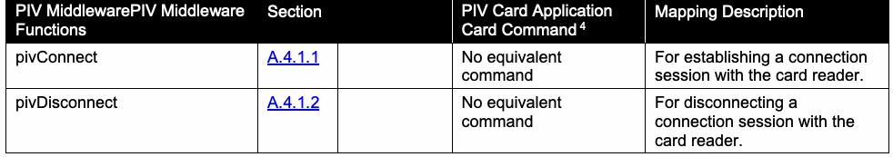
| PIVミドルウェアPIVミドルウェア | セクション | PIVカードアプリケーション | 対応の説明 |
| 関数 | カードコマンド4 | ||
| pivConnect | A.4.1.1 | 同等のコマンドなし | カードリーダーとの接続セッションを確立するため。 |
| pivDisconnect | A.4.1.2 | 同等のコマンドなし | カードリーダーとの接続セッションを切断するため。 |
| PIV MiddlewarePIV Middleware | Section | PIV Card Application | Mapping Description |
| Functions | Card Command4 | ||
| pivSelectCardApplication | A.4.2.1 | SELECT | Passes the AID value. Sets the value for ‘Currently Selected Application’ on the PIV Card. Establishes the PIV Card Application security status. |
| pivLogIntoCardApplication | A.4.2.2 | VERIFY | Provides the key reference for PIV Card Application PIN, Global PIN, pairng code, or OCC as well as its corresponding value. Sets/updates the PIV Card Application security status on the card; optionally (according to discovery object) establishes VCI with pairing code after pivEstablishSecureMessaging is invoked. |
| pivLogOutOfCardApplication | A.4.2.4 | VERIFY | Resets the security status on all local key references. |
| pivGetData | A.4.2.3 | GET DATA | Maps the OID to BER-TLV tag for the selected object. |
| pivPutData | A.4.4.1 | PUT DATA | Maps the OID to BER-TLV tag for the selected object. |
| pivGenerateKeyPair | A.4.4.2 | GENERATE ASYMMETRIC KEY PAIR | Passes the key reference and cryptographic mechanism identifier value. |
| pivCrypt | A.4.3.1 | GENERAL AUTHENTICATE | Passes the key reference, cryptographic algorithm reference and the string to be acted upon. Sets/updates the PIV Card Application security status on the card, if applicable. |
| pivMiddlewareVersion | A4.1.3 | No equivalent command | Returns the PIV Middleware version supported by the PIV Middleware IUT. |
| pivEstablishSecureMessaging | A.4.2.5 | GENERAL AUTHENTICATE5 | Passes the key reference and cryptographic algorithm reference to the PIV Card Application in order to establish secure messaging. Establishes, controls, and maintains the session key. |
原本PDFの抜粋画像
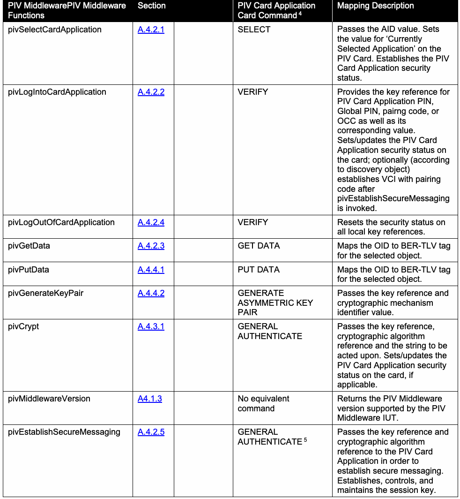
| PIVミドルウェアPIVミドルウェア | 節 | PIVカードアプリケーション | 対応付けの説明 |
| 関数 | カードコマンド4 | ||
| pivSelectCardApplication | A.4.2.1 | SELECT | AID値を渡す。PIVカード上の「現在選択されているアプリケーション」の値を設定する。PIVカードアプリケーションのセキュリティ状態を確立する。 |
| pivLogIntoCardApplication | A.4.2.2 | VERIFY | PIVカードアプリケーションPIN、グローバルPIN、pairng code、またはOCCの鍵参照と対応する値を渡す。カード上のPIVカードアプリケーションのセキュリティ状態を設定／更新する。オプションで（Discovery Objectに従って）、pivEstablishSecureMessagingの呼び出し後、pairng codeを用いてVCIを確立する。 |
| pivLogOutOfCardApplication | A.4.2.4 | VERIFY | すべてのローカル鍵参照のセキュリティ状態をリセットする。 |
| pivGetData | A.4.2.3 | GET DATA | 選択されたオブジェクトについてOIDをBER-TLVタグに対応付ける。 |
| pivPutData | A.4.4.1 | PUT DATA | 選択されたオブジェクトについてOIDをBER-TLVタグに対応付ける。 |
| pivGenerateKeyPair | A.4.4.2 | 非対称鍵ペアを生成 | 鍵参照および暗号メカニズム識別子の値を渡す。 |
| pivCrypt | A.4.3.1 | 一般認証 | 鍵参照、暗号アルゴリズム参照、および処理対象の文字列を渡す。該当する場合、カード上のPIVカードアプリケーションのセキュリティ状態を設定／更新する。 |
| pivMiddlewareVersion | A4.1.3 | 同等のコマンドなし | PIVミドルウェアIUTがサポートするPIVミドルウェアのバージョンを返す。 |
| pivEstablishSecureMessaging | A.4.2.5 | 一般認証5 | セキュアメッセージングを確立するため、鍵参照および暗号アルゴリズム参照をPIVカードアプリケーションに渡す。セッション鍵を確立、制御、および維持する。 |
A.4.1.1 pivConnect
A.4.1.1 pivConnect
未レビュー訳AS04.02: The purpose of pivConnect is to connect the PIV API to the PIV Card Application on a specific ICC.
AS04.02: pivConnectの目的は、特定のICC上のPIVカードアプリケーションにPIV APIを接続することである。
TE04.02.01: The tester shall validate that the PIV Middleware implements pivConnect as per SP 800-73-4, Part 3.
TE04.02.01: テスターは、PIVミドルウェアがSP 800-73-4 Part 3に従ってpivConnectを実装していることを検証しなければならない。
AS04.02A-R4: The connection description BER-TLV used on the PIV client API shall have the structure described in Table 2, Part 3 of SP 800-73-4.
AS04.02A-R4: PIVクライアントAPIで使用される接続記述BER-TLVは、SP 800-73-4第3部の表2に記載された構造でなければならない（shall）。
未レビュー訳Required Vendor Information
必須ベンダー情報
未レビュー訳VE04.02A-R4.01: The vendor shall provide in its documentation the format and content of the connection description templates implemented.
VE04.02A-R4.01: ベンダーは、実装した接続記述テンプレートの形式と内容を文書で提示しなければならない。
Required Test Procedures
必須試験手順
未レビュー訳TE04.02A-R4.01: The tester shall review the vendor’s documentation to confirm the presence of the information provided in VE04.02A-R4.01 and that the connection description template conforms to Table 2, Part 3 of SP 800-73-4.
TE04.02A-R4.01: テスターはベンダー文書をレビューし、VE04.02A-R4.01で示された情報が含まれること、および接続記述テンプレートがSP 800-73-4のPart 3、表2に適合することを確認しなければならない。
A.4.1.2 pivDisconnect
A.4.1.2 pivDisconnect
未レビュー訳AS04.03: The purpose of pivDisconnect is to disconnect the PIV API from the PIV Card Application and the ICC containing the PIV Card Application.
AS04.03: pivDisconnectの目的は、PIV APIをPIVカードアプリケーションおよびPIVカードアプリケーションを含むICCから切断することである。
未レビュー訳Required Test Procedures
必須試験手順
未レビュー訳TE04.03.01: The tester shall validate that the PIV Middleware implements pivDisconnect as per SP 800-73-4 Part 3.
TE04.03.01: テスターは、PIVミドルウェアがSP 800-73-4 Part 3に従ってpivDisconnectを実装していることを検証しなければならない。
AS04.03A-R4: If secure messaging has been established then the PIV Middleware shall zeroize the secure messaging session keys when the pivDisconnect command is sent.
AS04.03A-R4: セキュアメッセージングが確立されている場合、pivDisconnectコマンドの送信時にPIVミドルウェアはセキュアメッセージングのセッション鍵をゼロ化しなければならない。
Required Vendor Information
必須ベンダー情報
未レビュー訳VE04.03A-R4.01: The vendor shall specify in its documentation that the PIV Middleware zeroizes the secure messaging session keys as a part of the implementation of pivDisconnect.
VE04.03A-R4.01: ベンダーは、pivDisconnectの実装の一部としてPIVミドルウェアがセキュアメッセージングのセッション鍵をゼロ化することを文書に明記しなければならない。
Required Test Procedures
必須試験手順
未レビュー訳TE04.03A-R4.01: The tester shall review the vendor’s documentation and validate that it asserts that the PIV Middleware zeroizes the secure messaging session keys as part of the implementation of pivDisconnect.
TE04.03A-R4.01: テスターはベンダー文書をレビューし、pivDisconnectの実装の一部としてPIVミドルウェアがセキュアメッセージングのセッション鍵をゼロ化する旨が記載されていることを検証しなければならない。
A.4.1.3 pivMiddlewareVersion
A.4.1.3 pivMiddlewareVersion
未レビュー訳AS04.03B-R4: PIV Middleware that returns a versionString of “800-73-4 Client API with SM” shall implement all PIV Middleware functions listed in Table 1 of SP 800-73-4 Part 3 and be able to recognize and process all mandatory and optional PIV data objects. PIV Middleware that returns a versionString of “800-73-4 Client API” shall implement all PIV Middleware functions listed in Table 1 except pivEstablishSecureMessaging and shall be able to recognize and process all mandatory and optional PIV data objects. The pivMiddlewareVersion’s purpose is to return the PIV Middleware version string. For SP 800-73-4 Part 3 conformant PIV Middleware, the parameter returns “800-73-4 Client API” or “800-73-4 Client API with SM” if optional secure messaging is supported.
AS04.03B-R4: versionStringとして「800-73-4 Client API with SM」を返すPIVミドルウェアは、SP 800-73-4第3部の表1に記載されたすべてのPIVミドルウェア関数を実装し（shall）、すべての必須およびオプションPIVデータオブジェクトを認識して処理できなければならない（shall）。versionStringとして「800-73-4 Client API」を返すPIVミドルウェアは、pivEstablishSecureMessagingを除き、表1に記載されたすべてのPIVミドルウェア関数を実装し、すべての必須およびオプションPIVデータオブジェクトを認識して処理できなければならない（shall）。pivMiddlewareVersionの目的はPIVミドルウェアのバージョン文字列を返すことである。SP 800-73-4第3部に適合するPIVミドルウェアの場合、オプションのセキュアメッセージングをサポートしていれば、パラメーターは「800-73-4 Client API」または「800-73-4 Client API with SM」を返す。
未レビュー訳Required Test Procedures
必須試験手順
未レビュー訳TE04.03B-R4.01: The tester shall validate that the PIV Middleware supports all functions listed in Table 1 of SP 800-73-4 Part 3 and implements the pivMiddlewareVersion as per SP 800-73-4 Part 3 by returning the appropriate parameter string “800-73-4 Client API” parameter string or “800-73-4 Client API with SM” if optional secure messaging is supported.
TE04.03B-R4.01: テスターは、PIVミドルウェアがSP 800-73-4 Part 3の表1に記載されたすべての関数をサポートし、適切なパラメーター文字列「800-73-4 Client API」、またはオプションのセキュアメッセージングがサポートされる場合は「800-73-4 Client API with SM」を返すことで、SP 800-73-4 Part 3に従ってpivMiddlewareVersionを実装していることを検証しなければならない。
A.4.2 Entry Points for Data Access
A.4.2 データアクセス用エントリポイント
未レビュー訳A.4.2.1 pivSelectCardApplication
A.4.2.1 pivSelectCardApplication
未レビュー訳AS04.04: The purpose of pivSelectCardApplication is to set the PIV Card Application as the currently selected card application and establish the PIV Card Application’s security state.
AS04.04: pivSelectCardApplicationの目的は、PIVカードアプリケーションを現在選択されているカードアプリケーションとして設定し、PIVカードアプリケーションのセキュリティ状態を確立することである。
Required Test Procedures
必須試験手順
未レビュー訳TE04.04.01: The tester shall validate that the PIV Middleware implements pivSelectCardApplication as per SP 800-73-4, Part 3.
TE04.04.01: テスターは、PIVミドルウェアがSP 800-73-4 Part 3に従ってpivSelectCardApplicationを実装していることを検証しなければならない。
AS04.04A-R4: If the length of application properties is longer than the buffer allocated by the PIV client application, then the PIV Middleware shall return PIV_INSUFFICIENT_BUFFER, but shall still set APLength to the length of the application properties.
AS04.04A-R4: アプリケーションプロパティの長さがPIVクライアントアプリケーションによって割り当てられたバッファより長い場合、PIVミドルウェアはPIV_INSUFFICIENT_BUFFERを返さなければならない。ただし、その場合でもAPLengthにアプリケーションプロパティの長さを設定しなければならない。
Required Test Procedures
必須試験手順
未レビュー訳TE04.04A-R4.01: The tester shall ensure that the PIV Middleware returns PIV_INSUFFICIENT_BUFFER if the length of application properties is longer than the buffer allocated by the client application.
TE04.04A-R4.01: テスターは、アプリケーションプロパティの長さがクライアントアプリケーションによって割り当てられたバッファより長い場合、PIVミドルウェアがPIV_INSUFFICIENT_BUFFERを返すことを確認しなければならない。
A.4.2.2 pivLogIntoCardApplication
A.4.2.2 pivLogIntoCardApplication
未レビュー訳AS04.05: The purpose of pivLogIntoCardApplication is to set the security state within the PIV Card Application.
AS04.05: pivLogIntoCardApplicationの目的は、PIVカードアプリケーション内のセキュリティ状態を設定することである。
Required Test Procedures
必須試験手順
未レビュー訳TE04.05.01: The tester shall validate that the PIV Middleware implements the pivLogIntoCardApplication as per SP 800-73-4 Part 3.
TE04.05.01: 試験担当者は、PIVミドルウェアがSP 800-73-4第3部に従ってpivLogIntoCardApplicationを実装していることを検証しなければならない（shall）。
未レビュー訳AS04.05A-R4: The PIV Middleware shall not submit authenticators to the PIV Card over a contactless interface without secure messaging. If secure messaging has not been established, then the pivLogIntoCardApplication function shall return
AS04.05A-R4: PIVミドルウェアは、セキュアメッセージングなしに非接触インターフェース経由でPIVカードに認証子を送信してはならない（shall not）。セキュアメッセージングが確立されていない場合、pivLogIntoCardApplication関数は次を返さなければならない（shall）：
未レビュー訳PIV_SECURITY_CONDITIONS_NOT_SATISFIED.
PIV_SECURITY_CONDITIONS_NOT_SATISFIED.
未レビュー訳Required Vendor Information
必須ベンダー情報
未レビュー訳VE04.05A-R4: The vendor shall state in its documentation that the card supports the assertions made in AS04.05A-R4.
VE04.05A-R4: ベンダーは、カードがAS04.05A-R4のアサーションをサポートすることを文書に明記しなければならない。
Required Test Procedures
必須試験手順
未レビュー訳TE04.05A-R4.01: The tester shall validate that that the vendor documentation contains the information required in VE04.05A-R4.
TE04.05A-R4.01: テスターは、VE04.05A-R4で要求される情報がベンダー文書に含まれていることを検証しなければならない。
未レビュー訳A.4.2.3 pivGetData
A.4.2.3 pivGetData
未レビュー訳AS04.06: The purpose of pivGetData is to return the entire data content of the named data object.
AS04.06: pivGetDataの目的は、指定されたデータオブジェクトのデータ内容全体を返すことである。
Required Test Procedures
必須テスト手順
未レビュー訳TE04.06.01: The tester shall validate that the PIV Middleware implements the pivGetData as per SP 800-73-4 Part 3.
TE04.06.01: テスターは、PIVミドルウェアがSP 800-73-4 Part 3に従ってpivGetDataを実装していることを検証しなければならない。
AS04.06A-R4: If the length of the retrieved data is longer than the buffer allocated by the client application, then the PIV Middleware shall return PIV_INSUFFICIENT_BUFFER, but shall still set DataLength to the length of the retrieved data.
AS04.06A-R4: 取得データの長さがクライアントアプリケーションによって割り当てられたバッファより長い場合、PIVミドルウェアはPIV_INSUFFICIENT_BUFFERを返さなければならない。ただし、取得データの長さをDataLengthに設定しなければならない。
未レビュー訳Required Test Procedures
必須テスト手順
未レビュー訳TE04.06A-R4.01: The tester shall ensure that the PIV Middleware returns PIV_INSUFFICIENT_BUFFER if the length of the retrieved data is longer than the buffer allocated by the client application
TE04.06A-R4.01: 取得データの長さがクライアントアプリケーションによって割り当てられたバッファより長い場合、PIVミドルウェアがPIV_INSUFFICIENT_BUFFERを返すことをテスターは確認しなければならない
未レビュー訳A.4.2.4 pivLogoutOfCardApplication
A.4.2.4 pivLogoutOfCardApplication
未レビュー訳AS04.07: The purpose of pivLogoutOfCardApplication is to reset the application security state/status of the PIV Card Application.
AS04.07: pivLogoutOfCardApplicationの目的は、PIVカードアプリケーションのアプリケーションセキュリティ状態／ステータスをリセットすることである。
未レビュー訳Required Test Procedures
必須テスト手順
未レビュー訳TE04.07.01: The tester shall validate that the PIV Middleware implements the pivLogoutOfCardApplication as per SP 800-73-4 Part 3.
TE04.07.01: テスターは、PIVミドルウェアがSP 800-73-4 Part 3に従ってpivLogoutOfCardApplicationを実装していることを検証しなければならない。
A.4.2.5 pivEstablishSecureMessaging
A.4.2.5 pivEstablishSecureMessaging
未レビュー訳AS04.07A-R4: The purpose of pivEstablishSecureMessaging is to establish secure messaging with the PIV Card Application.6
AS04.07A-R4: pivEstablishSecureMessagingの目的は、PIVカードアプリケーションとのセキュアメッセージングを確立することである。6
未レビュー訳Required Test Procedures
必須テスト手順
未レビュー訳TE04.07A-R4.01: The tester shall validate that the PIV Middleware implements the pivEstablishSecureMessaging as per SP 800-73-4 Part 3.
TE04.07A-R4.01: テスターは、PIVミドルウェアがSP 800-73-4 Part 3に従ってpivEstablishSecureMessagingを実装していることを検証しなければならない。
AS04.07B-R4: After successful execution of the key establishment protocol, the PIV Middleware shall perform all subsequent GET DATA, VERIFY, and GENERAL AUTHENTICATE commands over secure messaging, with the exception of any subsequent uses of the GENERAL AUTHENTICATE command to perform the key establishment protocol.
AS04.07B-R4: 鍵確立プロトコルの実行が成功した後、PIVミドルウェアは、その後のすべてのGET DATA、VERIFY、およびGENERAL AUTHENTICATEコマンドをセキュアメッセージングで実行しなければならない。ただし、鍵確立プロトコルを実行するためのGENERAL AUTHENTICATEコマンドの以後の使用は除く。
Required Test Procedures
必須テスト手順
未レビュー訳TE04.07B-R4.01: The tester shall validate that upon successful execution of the key establishment protocol the GET DATA, VERIFY, and GENERAL AUTHENTICATE commands are only sent to the card using secure messaging when the pivGetData, pivLogIntoCardApplication, and pivCrypt middleware functions are called.
TE04.07B-R4.01: 鍵確立プロトコルの実行が成功した後、pivGetData、pivLogIntoCardApplication、およびpivCryptミドルウェア関数が呼び出されたとき、GET DATA、VERIFY、およびGENERAL AUTHENTICATEコマンドがセキュアメッセージングを使用してのみカードに送信されることをテスターは検証しなければならない。
未レビュー訳AS04.07C-R4: The session keys established after successful execution of the key establishment protocol in Section 4.1 of SP 800-73-4 Part 2 shall be zeroized in the following circumstances: (i) the card is reset; (ii) an error occurs in secure messaging; or (iii) new session keys are requested by the client application by sending a GENERAL AUTHENTICATE command to the card to perform the key establishment protocol using the PIV Secure Messaging key.
AS04.07C-R4: SP 800-73-4 Part 2のセクション4.1における鍵確立プロトコルの実行が成功した後に確立されたセッション鍵は、次の場合にゼロ化しなければならない。(i) カードがリセットされたとき。(ii) セキュアメッセージングでエラーが発生したとき。または(iii) クライアントアプリケーションが、PIV Secure Messaging鍵を使用して鍵確立プロトコルを実行するためGENERAL AUTHENTICATEコマンドをカードに送信し、新たなセッション鍵を要求したとき。
Required Vendor Information VE04.07C-R4.01: The vendor shall state in its documentation that the card supports the assertions made in AS04.07C-R4.
必須ベンダー情報 VE04.07C-R4.01: ベンダーは、カードがAS04.07C-R4のアサーションをサポートすることを文書に記載しなければならない。
Required Test Procedures
必須テスト手順
未レビュー訳TE04.07C-R4.01: The tester shall validate that the vendor documentation contains the information required in VE04.07C-R4.01.
TE04.07C-R4.01: VE04.07C-R4.01で要求される情報がベンダー文書に含まれていることをテスターは検証しなければならない。
未レビュー訳A.4.3 Entry Points for Cryptographic Operations
A.4.3 暗号操作のエントリーポイント
未レビュー訳A.4.3.1 pivCrypt
A.4.3.1 pivCrypt
未レビュー訳AS04.08: The purpose of pivCrypt is to perform a cryptographic operation such as encryption or signing on a sequence of bytes.7
AS04.08: pivCryptの目的は、バイト列に対する暗号化や署名などの暗号操作を実行することである。7
未レビュー訳Required Test Procedures
必須テスト手順
未レビュー訳TE04.08.01: The tester shall validate that the PIV Middleware implements the pivCrypt as per SP 800-73-4 Part 3.
TE04.08.01: テスターは、PIVミドルウェアがSP 800-73-4 Part 3に従ってpivCryptを実装していることを検証しなければならない。
AS04.08A-R4: If the value of keyReference is '04' (PIV Secure Messaging key) then the PIV Middleware shall return PIV_INVALID_KEYREF_OR_ALGORITHM.
AS04.08A-R4: keyReferenceの値が'04'（PIV Secure Messaging鍵）の場合、PIVミドルウェアはPIV_INVALID_KEYREF_OR_ALGORITHMを返さなければならない。
Note: This assertion is tested as part of AS04.08.
注：このアサーションはAS04.08の一環としてテストされる。
未レビュー訳AS04.08B-R4: If the length of the algorithm output is longer than the buffer allocated by the client application, then the PIV Middleware shall return PIV_INSUFFICIENT_BUFFER, but shall still set outputLength to the length of the algorithm output.
AS04.08B-R4: アルゴリズム出力の長さがクライアントアプリケーションによって割り当てられたバッファより長い場合、PIVミドルウェアはPIV_INSUFFICIENT_BUFFERを返さなければならない。ただし、その場合でもoutputLengthにアルゴリズム出力の長さを設定しなければならない。
Required Test Procedures
必須テスト手順
未レビュー訳TE04.08B-R4.01: The tester shall ensure that the PIV Middleware returns PIV_INSUFFICIENT_BUFFER if the length of the algorithm output is longer than the buffer allocated by the client application.
TE04.08B-R4.01: アルゴリズム出力の長さがクライアントアプリケーションによって割り当てられたバッファより長い場合、PIVミドルウェアがPIV_INSUFFICIENT_BUFFERを返すことをテスターは確認しなければならない。
A.4.4 Entry Points for Credential Initialization and Administration
A.4.4 資格情報の初期化および管理のエントリーポイント
未レビュー訳A.4.4.1 pivPutData
A.4.4.1 pivPutData
未レビュー訳AS04.09: The purpose of pivPutData is to replace the entire data content of the named data object with the provided data.
AS04.09: pivPutDataの目的は、指定されたデータオブジェクトのデータ内容全体を、提供されたデータで置き換えることである。
未レビュー訳Required Test Procedures
必須テスト手順
未レビュー訳TE04.09.01: The tester shall validate that the PIV Middleware implements the pivPutData as per SP 800-73-4 Part 3.
TE04.09.01: テスターは、PIVミドルウェアがSP 800-73-4 Part 3に従ってpivPutDataを実装していることを検証しなければならない。
AS04.09A-R4: The PIV Middleware shall not submit data provided to the pivPutData function over the contactless interface. If the PIV Middleware is not communicating with the PIV Card via the card’s contact interface then the pivPutData function shall return
AS04.09A-R4: PIVミドルウェアは、pivPutData関数に渡されたデータを非接触インターフェース経由で送信してはならない。PIVミドルウェアがカードの接触インターフェース経由でPIVカードと通信していない場合、pivPutData関数は次を返さなければならない
未レビュー訳PIV_FUNCTION_NOT_SUPPORTED.
PIV_FUNCTION_NOT_SUPPORTED。
未レビュー訳Required Vendor Information
必須ベンダー情報
未レビュー訳VE04.09A-R4: The vendor shall state in its documentation that the card supports the assertions made in AS04.09A-R4.
VE04.09A-R4: ベンダーは、カードがAS04.09A-R4で述べられたアサーションをサポートすることを文書に記載しなければならない。
未レビュー訳Required Test Procedures
必須試験手順
未レビュー訳TE04.09A-R4.01: The tester shall validate that that the vendor documentation contains the information required in VE04.09A-R4.
TE04.09A-R4.01: テスターは、ベンダー文書にVE04.09A-R4で要求される情報が含まれていることを検証しなければならない。
A.4.4.2 pivGenerateKeyPair
A.4.4.2 pivGenerateKeyPair
未レビュー訳AS04.10: The purpose of pivGenerateKeyPair is to generate an asymmetric key pair in the currently selected card application.
AS04.10: pivGenerateKeyPairの目的は、現在選択されているカードアプリケーション内で非対称鍵ペアを生成することである。
未レビュー訳Required Test Procedures
必須試験手順
未レビュー訳TE04.10.01: The tester shall validate that the PIV Middleware implements the pivGenerateKeyPair as per SP 800-73-4 Part 3.
TE04.10.01: テスターは、PIVミドルウェアがSP 800-73-4 Part 3に従ってpivGenerateKeyPairを実装していることを検証しなければならない。
AS04.10A-R4: If the length of public key related data retrieved from the PIV Card is longer than the buffer allocated by the client application, then the PIV Middleware shall return PIV_INSUFFICIENT_BUFFER, but shall still set KeyLength to the length of the public key related data retrieved from the PIV Card.
AS04.10A-R4: PIVカードから取得した公開鍵関連データの長さがクライアントアプリケーションによって割り当てられたバッファより長い場合、PIVミドルウェアはPIV_INSUFFICIENT_BUFFERを返さなければならない。ただし、KeyLengthにはPIVカードから取得した公開鍵関連データの長さを設定しなければならない。
未レビュー訳Required Test Procedures
必須試験手順
未レビュー訳TE04.10A-R4.01: The tester shall ensure that the PIV Middleware returns PIV_INSUFFICIENT_BUFFER if the length of public key related data retrieved from the PIV Card is longer than the buffer allocated by the client application.
TE04.10A-R4.01: テスターは、PIVカードから取得した公開鍵関連データの長さがクライアントアプリケーションによって割り当てられたバッファより長い場合に、PIVミドルウェアがPIV_INSUFFICIENT_BUFFERを返すことを確認しなければならない。
AS04.11-R4: The PIV Middleware shall not submit data provided to the pivGenerateKeyPair function over the contactless interface. If the PIV Middleware is not communicating with the PIV Card via the card’s contact interface then the pivGenerateKeyPair function shall return
AS04.11-R4: PIVミドルウェアは、pivGenerateKeyPair関数に渡されたデータを非接触インターフェース経由で送信してはならない。PIVミドルウェアがカードの接触インターフェースを介してPIVカードと通信していない場合、pivGenerateKeyPair関数は次を返さなければならない：
未レビュー訳PIV_FUNCTION_NOT_SUPPORTED.
PIV_FUNCTION_NOT_SUPPORTED。
未レビュー訳Required Vendor Information
必須ベンダー情報
未レビュー訳VE04.11-R4.01: The vendor shall state in its documentation that the card supports the assertions made in AS04.11-R4.01.
VE04.11-R4.01: ベンダーは、カードがAS04.11-R4.01で述べられたアサーションをサポートすることを文書に記載しなければならない。
Required Test Procedures
必須試験手順
未レビュー訳TE04.11-R4.01: The tester shall validate that that the vendor documentation contains the information required in VE04.11-R4.01.
TE04.11-R4.01: 試験者は、ベンダー文書にVE04.11-R4.01で要求される情報が含まれていることを検証しなければならない。
A.4.4.3 pivMiddlewareVersion
A.4.4.3 pivMiddlewareVersion
未レビュー訳The Derived Test Requirements, and their associated required test procedures, for the pivMiddlewareVersion client application command have been moved to Appendix A.4.1.3.
pivMiddlewareVersionクライアントアプリケーションコマンドに関する導出試験要件および関連する必須試験手順は、付録A.4.1.3に移動された。
未レビュー訳PIV Card Application Card Command Interface
PIVカードアプリケーションのカードコマンドインターフェース
未レビュー訳A.5
A.5
未レビュー訳AS05.01: All PIV Card Application card commands listed in Table 2, Part 2 of SP 800-73-4 shall be supported by a PIV Card Application.
AS05.01: SP 800-73-4 Part 2の表2に記載されたすべてのPIVカードアプリケーションのカードコマンドは、PIVカードアプリケーションでサポートされなければならない。
Required Vendor Information
必須ベンダー情報
未レビュー訳VE05.01.01: The vendor shall provide the list of all PIV Card Application card commands, along with the interface(s) (contact or contactless, SM, VCI) they support, the security condition(s) they are subject to and their support for command chaining as implemented by the card.
VE05.01.01: ベンダーは、すべてのPIVカードアプリケーションのカードコマンドの一覧とともに、各コマンドがサポートするインターフェース（接触、非接触、SM、VCI）、適用されるセキュリティ条件、およびカードに実装されているコマンドチェイニングのサポート状況を提示しなければならない。
Required Test Procedures
必須試験手順
未レビュー訳TE05.01.01: The tester shall review the vendor’s documentation and validate that the information presented in response to VE05.01.01 by the vendor complies with Table 2, Part 2 of SP 800-73-4.
TE05.01.01: 試験者はベンダー文書を確認し、VE05.01.01への回答としてベンダーが提示した情報がSP 800-73-4 Part 2の表2に適合することを検証しなければならない。
未レビュー訳TE05.01.02: The tester shall validate that the card implements all the commands as required in Table 2, Part 2 of SP 800-73-4.
TE05.01.02: 試験者は、カードがSP 800-73-4 Part 2の表2で要求されるすべてのコマンドを実装していることを検証しなければならない。
TE05.01.03: The tester shall validate that the commands are implemented only through the interfaces allowed as shown in Table 2, Part 2 of SP 800-73-4.
TE05.01.03: 試験者は、コマンドがSP 800-73-4 Part 2の表2に示された許可インターフェースを通じてのみ実装されていることを検証しなければならない。
TE05.01.04: The tester shall validate that the commands are performed only if the security conditions associated with them are satisfied, as shown in the table, via the specified interface.
TE05.01.04: 試験者は、表に示されたとおり、指定インターフェースを介して、関連するセキュリティ条件が満たされている場合にのみコマンドが実行されることを検証しなければならない。
TE05.01.05: The tester shall validate that the commands as indicated in the table are allowed for chaining via the interface supported after the security condition is satisfied.
TE05.01.05: 試験者は、表に示されたコマンドが、セキュリティ条件を満たした後、サポートされるインターフェースを介したチェイニングを許可することを検証しなければならない。
AS05.02: Card commands indicated with a 'Yes' in the Command Chaining column of Table 2, Part 2 of SP 800-73-4 shall support command chaining for transmitting a data string too long for a single command as defined in ISO/IEC 7816-4 [6].
AS05.02: SP 800-73-4 Part 2の表2のCommand Chaining列で'Yes'と示されたカードコマンドは、ISO/IEC 7816-4 [6]で定義される、単一のコマンドでは長すぎるデータ文字列を送信するためのコマンドチェイニングをサポートしなければならない。
Note: This assertion is tested as part of AS05.01.
注：このアサーションはAS05.01の一部として試験される。
AS05.03: The PIV Card Application shall return the status word of '6A 81' (Function not supported) when it receives a card command on the contactless interface marked “No” in the Contactless Interface column in Table 2, Part 2 of SP 800-73-4. The PIV Card Application may return a different status word (e.g., '69 82') if the card command can be performed over the contactless interface in support of card management. The PIV Card Application will only perform the command in support of card management if the requirements specified in Section
AS05.03: PIVカードアプリケーションは、SP 800-73-4 Part 2の表2のContactless Interface列で「No」と示されたカードコマンドを非接触インターフェースで受信した場合、ステータスワード'6A 81'（機能未サポート）を返さなければならない。カード管理をサポートするためにカードコマンドを非接触インターフェースで実行できる場合、PIVカードアプリケーションは別のステータスワード（例：'69 82'）を返してもよい。PIVカードアプリケーションは、FIPS 201-2の第
未レビュー訳2.9.2 of FIPS 201-2 are satisfied.
2.9.2節で規定された要件が満たされている場合に限り、カード管理をサポートする目的でそのコマンドを実行する。
未レビュー訳Note: This assertion is tested as part of AS05.01.
注：このアサーションはAS05.01の一部として試験される。
AS05.04: Cryptographic protocols using private/secret keys that require the “PIN” or “OCC” security condition shall only be used on the contactless interface after a Virtual Contact Interface (VCI) has been established.
AS05.04: 「PIN」または「OCC」セキュリティ条件を必要とする、秘密鍵／共通鍵を使用する暗号プロトコルは、Virtual Contact Interface（VCI）が確立された後にのみ非接触インターフェースで使用されなければならない。
Note: This assertion is tested as part of AS05.01.
注：このアサーションはAS05.01の一部として試験される。
A.5.1 PIV Card Application Card Commands for Data Access
A.5.1 データアクセス用PIVカードアプリケーションカードコマンド
未レビュー訳A.5.1.1 SELECT Card Command
A.5.1.1 SELECTカードコマンド
未レビュー訳AS05.05: The PIV Card Application shall be selected by providing its application identifier, 'A0 00 00 03 08 00 00 10 00 10 00', in the data field of the SELECT command.
AS05.05：PIVカードアプリケーションは、SELECTコマンドのデータフィールドにアプリケーション識別子'A0 00 00 03 08 00 00 10 00 10 00'を指定することで選択しなければならない。
未レビュー訳Required Vendor Information
必須ベンダー情報
未レビュー訳VE05.05.01: The vendor shall specify in its documentation the PIV Card Application Identifier.
VE05.05.01：ベンダーは、PIVカードアプリケーション識別子を文書で指定しなければならない。
Required Test Procedures
必須試験手順
未レビュー訳TE05.05.01: The tester shall validate that the PIV Card Application is selected by providing its application identifier as specified in AS05.05.
TE05.05.01：テスターは、AS05.05に指定されたアプリケーション識別子を指定してPIVカードアプリケーションが選択されることを検証しなければならない。
未レビュー訳AS05.06: There shall be at most one PIV Card Application on any ICC.
AS05.06：どのICC上にもPIVカードアプリケーションは最大1つしか存在してはならない。
Required Vendor Information
必須ベンダー情報
未レビュー訳VE05.06.01: The vendor shall state in its documentation that there is only one PIV Card Application on the ICC.
VE05.06.01：ベンダーは、ICC上にPIVカードアプリケーションが1つだけ存在することを文書に記載しなければならない。
Required Test Procedures
必須試験手順
未レビュー訳TE05.06.01: The tester shall review and validate the vendor’s documentation as stated in
TE05.06.01：テスターは、ベンダーの文書に記載された内容を確認し、次に示す
未レビュー訳VE05.06.01.
VE05.06.01を検証しなければならない。
未レビュー訳AS05.07: The PIV Card Application can also be made the currently selected application by providing a right-truncated version – that is, without the two-byte version number, '10 00' – in the data field of the SELECT command 'A0 00 00 03 08 00 00 10 00'
AS05.07：SELECTコマンドのデータフィールドに、右側を切り詰めたバージョン、すなわち2バイトのバージョン番号'10 00'を除いた、次のアプリケーション識別子を指定することでも、PIVカードアプリケーションを現在選択されているアプリケーションにできる：SELECTコマンドのデータフィールドの'A0 00 00 03 08 00 00 10 00'。
未レビュー訳Required Vendor Information
必須ベンダー情報
未レビュー訳VE05.07.01: The vendor shall provide the list of valid AIDs that the card supports and the mechanism(s) implemented to select the PIV Card Application.
VE05.07.01：ベンダーは、カードがサポートする有効なAIDの一覧と、PIVカードアプリケーションを選択するために実装した仕組みを提示しなければならない。
未レビュー訳Required Test Procedures
必須試験手順
未レビュー訳TE05.07.01: The tester shall review and validate that the information provided in VE05.07.01.
TE05.07.01：テスターは、VE05.07.01で提示された情報を確認し、検証しなければならない。
TE05.07.02: The tester shall validate that the PIV application is selectable by the right-truncated AID in the SELECT command.
TE05.07.02：テスターは、SELECTコマンドで右側を切り詰めたAIDを指定してPIVアプリケーションを選択できることを検証しなければならない。
未レビュー訳AS05.08: The complete AID, including the two-byte version, of the PIV Card Application that became the currently selected application upon successful execution of the SELECT command (using the full or right-truncated PIV AID) shall be returned in the application property template.
AS05.08：SELECTコマンド（完全なPIV AIDまたは右側を切り詰めたPIV AIDを使用）が正常に実行され、現在選択されているアプリケーションとなったPIVカードアプリケーションの完全なAID（2バイトのバージョンを含む）は、application property templateで返されなければならない。
未レビュー訳Note: This assertion is tested as part of AS03.02.
注：このアサーションはAS03.02の一部として試験する。
AS05.09: If the currently selected application is the PIV Card Application when the SELECT command is sent and the AID in the data field of the SELECT command is either the AID of the PIV Card Application or its right-truncated version thereof, then the PIV Card Application shall continue to be the currently selected card application and the setting of all security status indicators in the PIV Card Application shall be unchanged.
AS05.09：SELECTコマンドの送信時にPIVカードアプリケーションが現在選択されており、SELECTコマンドのデータフィールドのAIDがPIVカードアプリケーションのAIDまたはその右側を切り詰めたバージョンである場合、PIVカードアプリケーションは現在選択されているカードアプリケーションであり続け、PIVカードアプリケーションのすべてのセキュリティ状態インジケーターの設定は変更されてはならない。
未レビュー訳Required Vendor Information
必須ベンダー情報
未レビュー訳VE05.09.01: The vendor shall provide information in its documentation stating compliance as required by AS05.09.
VE05.09.01：ベンダーは、AS05.09で要求される適合性を満たすことを文書に記載しなければならない。
Required Test Procedures
必須試験手順
未レビュー訳TE05.09.01: The tester shall validate that when the currently selected application is the PIV Card Application and the SELECT command is sent with an AID that is either the AID of the PIV Card Application or its right-truncated version, then the PIV Card Application continues to be the currently selected application and the setting of all security status indicators in the PIV Card Application remains unchanged.
TE05.09.01：SELECTコマンドの送信時にPIVカードアプリケーションが現在選択されており、SELECTコマンドのAIDがPIVカードアプリケーションのAIDまたはその右側を切り詰めたバージョンである場合、PIVカードアプリケーションが現在選択されたアプリケーションであり続け、すべてのセキュリティ状態インジケーターの設定が変わらないことをテスターは検証しなければならない。
AS05.10: If the currently selected application is the PIV Card Application when the SELECT command is sent and the AID in the data field of the SELECT command is an invalid AID not supported by the ICC then the PIV Card Application shall remain the currently selected application and all PIV Card Application security status indicators shall remain unchanged.
AS05.10：SELECTコマンドの送信時にPIVカードアプリケーションが現在選択されており、SELECTコマンドのデータフィールドのAIDがICCでサポートされていない無効なAIDである場合、PIVカードアプリケーションは現在選択されたアプリケーションであり続け、すべてのPIVカードアプリケーションのセキュリティ状態インジケーターは変更されてはならない。
未レビュー訳Required Vendor Information
必須ベンダー情報
未レビュー訳VE05.10.01: The vendor shall provide information in its documentation validating the compliance with the statement in AS05.10.
VE05.10.01：ベンダーは、AS05.10の記述への適合性を文書で示さなければならない。
Required Test Procedures
必須試験手順
未レビュー訳TE05.10.01: The tester shall validate that when the currently selected application is the PIV Card Application and the SELECT command is sent with an AID that is not a valid AID supported by the card, then the PIV Card Application continues to be the currently selected application and the setting of all security status indicators in the PIV Card Application remains unchanged.
TE05.10.01：SELECTコマンドの送信時にPIVカードアプリケーションが現在選択されており、カードがサポートする有効なAIDではないAIDを指定した場合、PIVカードアプリケーションが現在選択されたアプリケーションであり続け、すべてのセキュリティ状態インジケーターの設定が変わらないことをテスターは検証しなければならない。
AS05.11: If the currently selected application is the PIV Card Application when the SELECT command is given and the AID in the data field of the SELECT command is not the PIV Card Application (nor the right-truncated version thereof), but a valid AID supported by the ICC, then the PIV Card Application shall be deselected and all the PIV Card Application security status indicators in the PIV Card Application shall be set to FALSE.
AS05.11：SELECTコマンドの送信時にPIVカードアプリケーションが現在選択されており、SELECTコマンドのデータフィールドのAIDがPIVカードアプリケーションのAID（またはその右側を切り詰めたバージョン）ではなく、ICCがサポートする有効なAIDである場合、PIVカードアプリケーションの選択を解除し、そのPIVカードアプリケーションのすべてのセキュリティ状態インジケーターをFALSEに設定しなければならない。
未レビュー訳Required Vendor Information
必須ベンダー情報
未レビュー訳VE05.11.01: The vendor shall provide information in its documentation validating the compliance with the statement in AS05.11.
VE05.11.01：ベンダーは、AS05.11の記述への適合性を文書で示さなければならない。
Required Test Procedures
必須試験手順
未レビュー訳TE05.11.01: The tester shall validate that when the currently selected application is the PIV Card Application and the SELECT command is sent with a valid AID supported by the ICC that is different from the PIV Card Application AID (or its right-truncated version), then PIV Card Application is deselected and its security status indicators are set to FALSE.
TE05.11.01：SELECTコマンドの送信時にPIVカードアプリケーションが現在選択されており、ICCがサポートする有効なAIDのうちPIVカードアプリケーションのAID（またはその右側を切り詰めたバージョン）とは異なるものを指定した場合、PIVカードアプリケーションの選択が解除され、そのセキュリティ状態インジケーターがFALSEに設定されることをテスターは検証しなければならない。
AS05.11A-R4: A PIV Card Application may use a subset of the cryptographic algorithms defined in SP 800-78-4. Tag 0xAC encodes the cryptographic algorithms supported by the PIV Card Application. The encoding of tag 0xAC shall be as specified in Table 5, Part 2 of SP 800-73-4. Each instance of tag 0x80 shall encapsulate one algorithm. The presence of algorithm identifier '27' or '2E' indicates that the corresponding cipher suite is supported by the PIV Card Application for secure messaging and that the PIV Card Application possesses a PIV Secure Messaging key of the appropriate size for the specified cipher suite. Tag 0xAC shall be present and indicate algorithm identifier 0x27 or 0x2E (but not both) when the PIV Card Application supports secure Messaging.
AS05.11A-R4：PIVカードアプリケーションは、SP 800-78-4で定義される暗号アルゴリズムの一部を使用してもよい。タグ0xACは、PIVカードアプリケーションがサポートする暗号アルゴリズムを符号化する。タグ0xACの符号化は、SP 800-73-4の表5第2部に指定されたとおりでなければならない。タグ0x80の各インスタンスは、アルゴリズムを1つ格納しなければならない。アルゴリズム識別子'27'または'2E'が存在する場合、対応する暗号スイートがセキュアメッセージング用にPIVカードアプリケーションでサポートされていること、および指定された暗号スイートに適切なサイズのPIVセキュアメッセージング鍵を同アプリケーションが保有することを示す。PIVカードアプリケーションがセキュアメッセージングをサポートする場合、タグ0xACが存在し、アルゴリズム識別子0x27または0x2Eのいずれか一方（両方ではない）を示さなければならない。
未レビュー訳Note: This assertion is tested as part of AS05.34.
注：このアサーションはAS05.34の一部として試験する。
未レビュー訳A.5.1.2 GET DATA Card Command
A.5.1.2 GET DATAカードコマンド
未レビュー訳AS05.12: The GET DATA card command retrieves the data content of the single data object whose tag is given in the data field.
AS05.12：GET DATAカードコマンドは、データフィールドでタグが指定された単一のデータオブジェクトのデータ内容を取得する。
Note: This assertion is tested as part of AS05.01.
注：このアサーションはAS05.01の一部として試験する。
AS05.12A: The GET DATA card command retrieves the data content of the data object only after the access rule associated with the data object (Appendix A, Table 7, Part 1 of SP 800-73-4) evaluates to TRUE.
AS05.12A: GET DATAカードコマンドは、データオブジェクトに関連付けられたアクセス規則（SP 800-73-4 Part 1の付録A、表7）がTRUEと評価された後に限り、データオブジェクトのデータ内容を取得する。
未レビュー訳Required Vendor Information
必須ベンダー情報
未レビュー訳VE05.12A.01: The vendor shall specify in its documentation the access rule for each of the data objects or make a reference to Table 7 in Appendix A, Part 1 of SP 800-73-4.
VE05.12A.01: ベンダーは、各データオブジェクトのアクセス規則を文書で指定するか、SP 800-73-4 Part 1の付録A、表7を参照しなければならない。
Required Test Procedures
必須テスト手順
未レビュー訳TE05.12A.01: For implementations without the Discovery Object or implementations with the Discovery Object implemented and Bit 6 of the first byte of the PIN Usage Policy set to zero, the tester shall validate that all data objects that require a PIN are only accessible after a successful validation of the PIV Card Application PIN through the VERIFY command.
TE05.12A.01: Discovery Objectが実装されていない実装、またはDiscovery Objectが実装されていてPIN Usage Policyの第1バイトのBit 6が0に設定されている実装について、テスターは、PINを必要とするすべてのデータオブジェクトがVERIFYコマンドによるPIVカードアプリケーションPINの検証成功後に限りアクセス可能であることを検証しなければならない（shall）。
未レビュー訳TE05.12A.02: For implementations with the Discovery Object implemented and Bit 6 of the first byte of the PIN Usage Policy set to one: 1) the tester shall validate that all data objects are accessible after a successful VERIFY with the PIV Card Application PIN; and 2) the tester shall validate that all data objects that require a PIN are accessible after a successful VERIFY with the Global PIN.
TE05.12A.02: Discovery Objectが実装されていてPIN Usage Policyの第1バイトのBit 6が1に設定されている実装について、1) テスターは、PIVカードアプリケーションPINによるVERIFY成功後にすべてのデータオブジェクトにアクセスできることを検証しなければならない。2) テスターは、Global PINによるVERIFY成功後にPINを必要とするすべてのデータオブジェクトにアクセスできることを検証しなければならない。
TE05.12A.02A-R4: For implementations with the Discovery Object implemented and Bit 5 of the first byte of the PIN Usage Policy set to one, the tester shall validate that the appropriate data objects are accessible after a successful VERIFY with OCC.
TE05.12A.02A-R4: Discovery Objectが実装されていてPIN Usage Policyの第1バイトのBit 5が1に設定されている実装について、テスターは、OCCによるVERIFY成功後に適切なデータオブジェクトにアクセスできることを検証しなければならない。
TE05.12A.03: The tester shall validate that all data objects whose access rule is “Always” are accessible with or without PIV Card Application PIN validation, Global PIN validation (if implemented as indicated in the Discovery Object), or OCC validation (if implemented as indicated in the Discovery Object) using the permitted interface.
TE05.12A.03: テスターは、アクセス規則が「Always」であるすべてのデータオブジェクトが、許可されたインターフェースを使用し、PIVカードアプリケーションPINの検証、Global PINの検証（Discovery Objectに示される実装の場合）、またはOCCの検証（Discovery Objectに示される実装の場合）の有無にかかわらずアクセス可能であることを検証しなければならない。
A.5.2 PIV Card Application Card Commands for Authentication
A.5.2 認証用PIVカードアプリケーションのカードコマンド
未レビュー訳A.5.2.1 VERIFY Card Command
A.5.2.1 VERIFYカードコマンド
未レビュー訳AS05.13: PIV Card Applications for which both the PIV Card Application PIN and the Global PIN satisfy the PIV ACRs for PIV data object access and command execution shall implement the Discovery Object with the PIN Usage Policy set to 0x60 zz, 0x6C zz, 0x70 zz, or 0x7C zz, where zz is either 0x10 or 0x20, and may optionally implement the Discovery Object with the PIN Usage Policy set to 0x68 zz or 0x78 zz, where zz is either 0x10 or 0x20.
AS05.13: PIVデータオブジェクトへのアクセスおよびコマンド実行について、PIVカードアプリケーションPINとGlobal PINの両方がPIV ACRを満たすPIVカードアプリケーションは、PIN Usage Policyを0x60 zz、0x6C zz、0x70 zz、または0x7C zzに設定したDiscovery Objectを実装しなければならない。ここでzzは0x10または0x20のいずれかである。また、PIN Usage Policyを0x68 zzまたは0x78 zzに設定したDiscovery Objectを任意で実装してもよい。この場合もzzは0x10または0x20のいずれかである。
Required Vendor Information
必須ベンダー情報
未レビュー訳VE05.13.01: The vendor shall confirm that the PIV Card Application PIN can be used for PIV data object access and command execution. If the Global PIN (in addition to the PIV Card Application PIN) is used for data access and command execution while the PIV Card Application is the currently selected application, the vendor shall state in its documentation that the card supports the assertion made in AS05.13.
VE05.13.01: ベンダーは、PIVデータオブジェクトへのアクセスおよびコマンド実行にPIVカードアプリケーションPINを使用できることを確認しなければならない。PIVカードアプリケーションが現在選択されている間に、データアクセスおよびコマンド実行にGlobal PINを（PIVカードアプリケーションPINに加えて）使用する場合、カードがAS05.13のアサーションをサポートすることをベンダーは文書に記載しなければならない。
Required Test Procedures
必須テスト手順
未レビュー訳TE05.13.01: The tester shall validate that the PIV Card Application PIN can be used for PIV data object access and command execution. The tester shall validate that when the Global PIN satisfies the PIV ACRs for PIV data object access and command execution then: 1) the Discovery Object is implemented with the PIN Usage Policy set to 0x60 zz, 0x68 zz, 0x6C zz, 0x70 zz, 0x78 zz, or 0x7C zz, where zz is set to either 0x10 or 0x20; and 2) the Global PIN can be used for PIV data object access and command execution.
TE05.13.01: テスターは、PIVデータオブジェクトへのアクセスおよびコマンド実行にPIVカードアプリケーションPINを使用できる（can）ことを検証しなければならない（shall）。テスターは、Global PINがPIVデータオブジェクトへのアクセスおよびコマンド実行についてPIV ACRを満たす場合、次を検証しなければならない（shall）：1) PIN Usage Policyを0x60 zz、0x68 zz、0x6C zz、0x70 zz、0x78 zz、または0x7C zzに設定したDiscovery Objectが実装されていること。ここでzzは0x10または0x20のいずれかに設定される。2) Global PINをPIVデータオブジェクトへのアクセスおよびコマンド実行に使用できる（can）こと。
未レビュー訳AS05.13A-R4: PIV Card Applications for which OCC satisfies the PIV ACRs for PIV data object access and command execution shall implement the Discovery Object with the first byte of the PIN Usage Policy set to 0x50, 0x58, 0x5C, 0x70, 0x78, or 0x7C.
AS05.13A-R4: OCCがPIVデータオブジェクトへのアクセスおよびコマンド実行についてPIV ACRを満たすPIVカードアプリケーションは、PIN Usage Policyの第1バイトを0x50、0x58、0x5C、0x70、0x78、または0x7Cに設定したDiscovery Objectを実装しなければならない（shall）。
未レビュー訳Required Vendor Information
必須ベンダー情報
未レビュー訳VE05.13A-R4.01: If OCC (in addition to the PIV Card Application PIN, and possibly the Global PIN) is used for data access and command execution while the PIV Card Application is the currently selected application, the vendor shall state in its documentation that the card supports the assertion made in AS05.13A-R4.
VE05.13A-R4.01: PIVカードアプリケーションが現在選択されている間に、データアクセスおよびコマンド実行にOCC（PIVカードアプリケーションPINに加え、場合によってはGlobal PINも）を使用する場合、カードがAS05.13A-R4のアサーションをサポートすることをベンダーは文書に記載しなければならない（shall）。
未レビュー訳Required Test Procedures
必須テスト手順
未レビュー訳TE05.13A-R4.01: The tester shall validate that when OCC satisfies the PIV ACRs for PIV data object access and command execution then: 1) the Discovery Object is implemented with the first byte of the PIN Usage Policy set to 0x50, 0x58, 0x5C, 0x70, 0x78, or 0x7C; and 2) OCC can be used for PIV data object access and command execution.
TE05.13A-R4.01: テスターは、OCCがPIVデータオブジェクトへのアクセスおよびコマンド実行についてPIV ACRを満たす場合に、次のことが成り立つことを検証しなければならない（shall）：1) PIN Usage Policyの第1バイトを0x50、0x58、0x5C、0x70、0x78、または0x7Cに設定したDiscovery Objectが実装されていること。2) OCCをPIVデータオブジェクトへのアクセスおよびコマンド実行に使用できること。
AS05.13B-R4: PIV Card Applications that implement the VCI shall implement the Discovery Object with the first byte of the PIN Usage Policy set to 0x4C, 0x5C, 0x6C, or 0x7C, and may optionally also implement the Discovery Object with the first byte of the PIN Usage Policy set to 0x48, 0x58, 0x68, or 0x78.
AS05.13B-R4: VCIを実装するPIVカードアプリケーションは、PIN Usage Policyの第1バイトを0x4C、0x5C、0x6C、または0x7Cに設定したDiscovery Objectを実装しなければならず（shall）、PIN Usage Policyの第1バイトを0x48、0x58、0x68、または0x78に設定したDiscovery Objectも任意に実装してもよい（may）。
未レビュー訳Required Vendor Information
必須ベンダー情報
未レビュー訳VE05.13B-R4.01: If the PIV Card Application implements the VCI, the vendor shall state in its documentation that the card supports the assertion made in AS05.13B-R4.
VE05.13B-R4.01: PIVカードアプリケーションがVCIを実装する場合、カードがAS05.13B-R4のアサーションをサポートすることをベンダーは文書に記載しなければならない。
Required Test Procedures
必須テスト手順
未レビュー訳TE05.13B-R4.01: The tester shall validate that PIV Card Applications that implement the VCI implement the Discovery Object with the first byte of the PIN Usage Policy set to 0x4C, 0x5C, 0x6C, or 0x7C (see Table 1 of SP 800-73-4 Part 1).
TE05.13B-R4.01: VCIを実装するPIVカードアプリケーションが、PIN Usage Policyの第1バイトを0x4C、0x5C、0x6C、または0x7Cに設定したDiscovery Objectを実装していることをテスターは検証しなければならない（SP 800-73-4 Part 1の表1を参照）。
AS05.14: Key reference '80' specific to the PIV Card Application (i.e., local key references) and, optionally, the Global PIN with key reference '00', the OCC data (key references '96' and '97'), and pairing code (key reference '98') are the only key references that may be verified by the PIV Card Application’s VERIFY command. The PIV Card Application may allow other key references to be verified by the PIV Card Application’s VERIFY command, if they are used for card management operations.
AS05.14: PIVカードアプリケーション固有の鍵参照'80'（すなわちローカル鍵参照）と、任意で使用されるGlobal PINの鍵参照'00'、OCCデータ（鍵参照'96'および'97'）、ならびにペアリングコード（鍵参照'98'）のみが、PIVカードアプリケーションのVERIFYコマンドで検証してもよい鍵参照である。カード管理操作に使用する場合、PIVカードアプリケーションはその他の鍵参照もVERIFYコマンドで検証できるようにしてもよい。
Required Vendor Information
必須ベンダー情報
未レビュー訳VE05.14.01: The vendor shall state in its documentation that the card supports the assertion made in
VE05.14.01: ベンダーは、カードが次に記載されたアサーションをサポートすることを文書に記載しなければならない（shall）：
未レビュー訳AS05.14.
AS05.14.
未レビュー訳Required Test Procedures
必須テスト手順
未レビュー訳TE05.14.01: The tester shall review the vendor’s documentation and validate that it contains the information required in VE05.14.01.
TE05.14.01: テスターはベンダー文書を確認し、VE05.14.01で要求される情報が含まれることを検証しなければならない。
AS05.15: Key reference '80' shall be able to be verified by the PIV Card Application VERIFY command.
AS05.15: 鍵参照'80'は、PIVカードアプリケーションのVERIFYコマンドで検証可能でなければならない。
Note: This assertion is tested as part of AS05.13.
注：このアサーションはAS05.13の一部として試験される。
AS05.16: If the PIV Card Application contains the Discovery Object as described in Part 1 of SP 800-73-4 and Bit 6 of the first byte of the PIN Usage Policy value is one, then key reference '00' shall be able to be verified by the PIV Card Application VERIFY command.
AS05.16: SP 800-73-4 Part 1に記載されたDiscovery ObjectをPIVカードアプリケーションが含み、PIN Usage Policy値の第1バイトのBit 6が1である場合、鍵参照'00'はPIVカードアプリケーションのVERIFYコマンドで検証可能でなければならない。
Required Vendor Information
必須ベンダー情報
未レビュー訳VE05.16.01: The vendor shall specify in its documentation if the Global PIN is implemented with the VERIFY command to satisfy access control rules to read PIN protected PIV data objects. If implemented, the vendor shall also specify the Discovery Object to be present on card with Bit 6 of the first byte of the PIN Usage Policy value set to one.
VE05.16.01: ベンダーは、PINで保護されたPIVデータオブジェクトを読み取るアクセス制御規則を満たすために、Global PINをVERIFYコマンドで実装している場合はその旨を文書に明記しなければならない（shall）。実装している場合、ベンダーはPIN Usage Policy値の第1バイトのBit 6を1に設定したDiscovery Objectがカード上に存在することも明記しなければならない（shall）。
Required Test Procedures
必須テスト手順
未レビュー訳TE05.16.01: The tester shall validate that if the PIV Card Application contains the Discovery Object and Bit 6 of the first byte of the PIN Usage Policy value is one, then key reference '00' is able to be verified by the PIV Card Application VERIFY command.
TE05.16.01: PIVカードアプリケーションがDiscovery Objectを含み、PIN Usage Policy値の第1バイトのBit 6が1である場合、鍵参照'00'がPIVカードアプリケーションのVERIFYコマンドで検証可能であることをテスターは検証しなければならない（shall）。
AS05.16A-R4: If the key reference is '98' and the authentication data in the command data field does not match the reference data associated with the key reference, the command shall fail and the PIV Card Application shall return the status word '63 00'. If the authentication data in the command data field does not satisfy the criteria in Section 2.4.3 of Part 2 of SP 800-73-4, then the PIV Card Application may return the status word '6A 80' instead of '63 00'. If status word '6A 80' is returned, the security status of the key reference shall remain unchanged. If status word '63 00' is returned, the security status of the key reference shall be set to FALSE.
AS05.16A-R4: 鍵参照が'98'であり、コマンドデータフィールドの認証データがその鍵参照に関連付けられた参照データと一致しない場合、コマンドは失敗しなければならず（shall）、PIVカードアプリケーションはステータスワード'63 00'を返さなければならない（shall）。コマンドデータフィールドの認証データがSP 800-73-4 Part 2のセクション2.4.3の基準を満たさない場合、PIVカードアプリケーションは'63 00'の代わりにステータスワード'6A 80'を返してもよい（may）。ステータスワード'6A 80'が返された場合、鍵参照のセキュリティ状態は変更されないままでなければならない（shall）。ステータスワード'63 00'が返された場合、鍵参照のセキュリティ状態はFALSEに設定されなければならない（shall）。
未レビュー訳Required Test Procedures
必須テスト手順
未レビュー訳TE05.16A-R4.01: The tester shall validate that the card implements AS05.16A-R4 as specified.
TE05.16A-R4.01: 試験担当者は、カードがAS05.16A-R4を規定どおり実装していることを検証しなければならない（shall）。
AS05.17: If the key reference is '00', '80', '96', or '97' and the current value of the retry counter associated with the key reference is zero, then the comparison shall not be made and the PIV Card Application shall return the status word '69 83'. In order to protect against blocking over the contactless interface, PIV Card Applications that implement secure messaging shall define an issuer-specified intermediate retry value for each of these key references and return '69 83' if the command is submitted over the contactless interface (over secure messaging or the VCI, as required for the key reference) and the current value of the retry counter associated with the key reference is at or below the issuer-specified intermediate retry value. If status word '69 83' is returned, then the comparison shall not be made, and the security status and the retry counter of the key reference shall remain unchanged.
AS05.17: 鍵参照が'00'、'80'、'96'、または'97'であり、かつ当該鍵参照に関連付けられた現在の再試行カウンター値がゼロの場合、照合を行ってはならず（shall not）、PIVカードアプリケーションはステータスワード'69 83'を返さなければならない（shall）。非接触インターフェース経由でのブロックを防ぐため、セキュアメッセージングを実装するPIVカードアプリケーションは、これらの各鍵参照について発行者指定の中間再試行値を定義し、またコマンドが非接触インターフェース経由で（鍵参照に応じて必要となるセキュアメッセージングまたはVCI経由で）送信され、当該鍵参照に関連付けられた現在の再試行カウンター値が発行者指定の中間再試行値以下である場合、'69 83'を返さなければならない（shall）。ステータスワード'69 83'が返される場合、照合を行ってはならず（shall not）、鍵参照のセキュリティ状態および再試行カウンターは変更されないままでなければならない（shall）。
Required Vendor Information
必須ベンダー情報
未レビュー訳VE05.17.01: The vendor shall specify in its documentation the reset value of the retry counters associated with all the key references implemented on the card.
VE05.17.01: ベンダーは、カードに実装されているすべての鍵参照に関連付けられた再試行カウンターのリセット値を文書に明記しなければならない（shall）。
未レビュー訳Required Test Procedures
必須試験手順
未レビュー訳TE05.17.01: The tester shall validate that the PIV Card Application returns '69 83' in response to the VERIFY command when the retry counter associated with the key reference is zero.
TE05.17.01: 試験担当者は、鍵参照に関連付けられた再試行カウンターがゼロの場合、VERIFYコマンドに対してPIVカードアプリケーションが'69 83'を返すことを検証しなければならない（shall）。
AS05.18: The card command shall fail if the key reference is '00' or '80' and the VERIFY command is not submitted over either the contact interface or the VCI or if the key reference is '96', '97', or '98' and the VERIFY command is submitted over the contactless interface without secure messaging. In either case, the security status and the retry counter of the key reference shall remain unchanged.
AS05.18: 鍵参照が'00'または'80'であり、VERIFYコマンドが接触インターフェースまたはVCIのいずれか経由で送信されない場合、あるいは鍵参照が'96'、'97'、または'98'であり、VERIFYコマンドがセキュアメッセージングなしで非接触インターフェース経由で送信される場合、カードコマンドは失敗しなければならない（shall）。いずれの場合も、鍵参照のセキュリティ状態および再試行カウンターは変更されないままでなければならない（shall）。
未レビュー訳Required Vendor Information
必須ベンダー情報
未レビュー訳VE05.18.01: The vendor shall specify in its documentation the conditions (and associated status word) when the command will fail.
VE05.18.01: ベンダーは、コマンドが失敗する条件（および対応するステータスワード）を文書に明記しなければならない（shall）。
Required Test Procedures
必須試験手順
未レビュー訳TE05.18.01: The tester shall validate that if the key reference is '00' or '80' and the VERIFY command is not submitted over either the contact interface or the VCI, or if the key reference is '96', '97', or '98' and the VERIFY command is submitted over the contactless interface without secure messaging, then the card command fails and the security status and the retry counter of the key reference remain unchanged.
TE05.18.01: 鍵参照が'00'または'80'であり、VERIFYコマンドが接触インターフェースまたはVCIのいずれか経由で送信されない場合、あるいは鍵参照が'96'、'97'、または'98'であり、VERIFYコマンドがセキュアメッセージングなしで非接触インターフェース経由で送信される場合、カードコマンドが失敗し、鍵参照のセキュリティ状態および再試行カウンターが変更されないことを試験担当者は検証しなければならない（shall）。
AS05.18A-R4: If the key reference is '96' or '97' and the authentication data in the command data field is not of length 3N, where N satisfies the requirements for minimum and maximum number of minutiae specified in the BIT, then the card command shall fail, and the PIV Card Application shall return the status word '6A 80'. The security status and the retry counter of the key reference shall remain unchanged.
AS05.18A-R4: 鍵参照が'96'または'97'であり、コマンドデータフィールドの認証データの長さが3Nでない場合（NはBITで指定される特徴点の最小数および最大数の要件を満たす）、カードコマンドは失敗しなければならず（shall）、PIVカードアプリケーションはステータスワード'6A 80'を返さなければならない（shall）。鍵参照のセキュリティ状態および再試行カウンターは変更されないままでなければならない（shall）。
Required Vendor Information
必須ベンダー情報
未レビュー訳VE05.18A-R4.01: The vendor shall specify in its documentation that if the key reference is '96' or '97' and the authentication data in the command data field is not of length 3N, where N satisfies the requirements for minimum and maximum number of minutiae specified in the BIT, then the card command fails, the PIV Card Application returns the status word '6A 80', and the security status and the retry counter of the key reference remain unchanged.
VE05.18A-R4.01: ベンダーは、鍵参照が'96'または'97'であり、コマンドデータフィールドの認証データの長さが3Nでない場合（NはBITで指定される特徴点の最小数および最大数の要件を満たす）、カードコマンドが失敗し、PIVカードアプリケーションがステータスワード'6A 80'を返し、鍵参照のセキュリティ状態および再試行カウンターが変更されないことを文書に明記しなければならない（shall）。
Required Test Procedures
必須試験手順
未レビュー訳TE05.18A-R4.01: The tester shall validate that the card implements AS05.18A-R4 as specified.
TE05.18A-R4.01: 試験担当者は、カードがAS05.18A-R4を規定どおり実装していることを検証しなければならない（shall）。
AS05.19: If the key reference is '00', '80', '96', or '97' and the authentication data in the command data field is properly formatted and does not match reference data associated with the key reference, then the card command shall fail, the PIV Card Application shall return the status word '63 CX', the security status of the key reference shall be set to FALSE, and the retry counter associated with the key reference shall be decremented by one.
AS05.19: 鍵参照が'00'、'80'、'96'、または'97'であり、コマンドデータフィールドの認証データが正しくフォーマットされているものの、鍵参照に関連付けられた参照データと一致しない場合、カードコマンドは失敗しなければならない（shall）。PIVカードアプリケーションはステータスワード'63 CX'を返さなければならない（shall）。鍵参照のセキュリティ状態はFALSEに設定されなければならない（shall）。鍵参照に関連付けられた再試行カウンターは1減らされなければならない（shall）。
未レビュー訳Required Vendor Information
必須ベンダー情報
未レビュー訳VE05.19.01: The vendor shall state in its documentation that the card supports the assertion made in
VE05.19.01: ベンダーは、カードがアサーションをサポートすることを文書に明記しなければならない（shall）
未レビュー訳AS05.19.
AS05.19。
未レビュー訳Required Test Procedures
必須試験手順
未レビュー訳TE05.19.01: The tester shall validate that when the VERIFY command fails the retry counter associated with the key reference is decremented by one.
TE05.19.01: VERIFYコマンドが失敗した場合、鍵参照に関連付けられた再試行カウンターが1減らされることを試験担当者は検証しなければならない（shall）。
AS05.20: If the card command succeeds then the security status of the key reference shall be set to TRUE. If the key reference is '00', '80', '96', or '97' then the retry counter associated with the key reference shall be set to the reset retry value associated with the key reference.
AS05.20: カードコマンドが成功した場合、鍵参照のセキュリティ状態はTRUEに設定されなければならない（shall）。鍵参照が'00'、'80'、'96'、または'97'の場合、鍵参照に関連付けられた再試行カウンターは、当該鍵参照に対応するリセット再試行値に設定されなければならない（shall）。
Required Vendor Information
必須ベンダー情報
未レビュー訳Note: This vendor information is reviewed as part of VE05.17.01.
注：このベンダー情報はVE05.17.01の一部としてレビューされる。
未レビュー訳Required Test Procedures
必須試験手順
未レビュー訳Note: This assertion is tested as part of AS05.17.
注：このアサーションはAS05.17の一部として試験される。
AS05.21: Moved requirement into AS05.19.
AS05.21: 要件をAS05.19に移動。
AS05.22A: If the PIN value in the reference data field of the command field is not padded to 8 bytes, the PIV Card Application shall return the status word '6A 80'.
AS05.22A: コマンドフィールドの参照データフィールドにあるPIN値が8バイトにパディングされていない場合、PIVカードアプリケーションはステータスワード'6A 80'を返さなければならない（shall）。
Required Vendor Information
必須ベンダー情報
未レビュー訳VE05.22A.01: The vendor shall state in its documentation that the card supports the assertion made in AS05.22A.
VE05.22A.01: ベンダーは、カードがAS05.22Aのアサーションをサポートすることを文書に明記しなければならない（shall）。
未レビュー訳Required Test Procedures
必須試験手順
未レビュー訳TE05.22A.01: The tester shall review the vendor’s documentation and validate that it contains the information required in VE05.22A.01 and the card returns status word '6A 80' when the PIN information in the reference data field of the command is not padded to 8 bytes.
TE05.22A.01: 試験担当者は、ベンダー文書をレビューし、VE05.22A.01で要求される情報が含まれていること、およびコマンドの参照データフィールド内のPIN情報が8バイトにパディングされていない場合にカードがステータスワード'6A 80'を返すことを検証しなければならない（shall）。
AS05.22B: If the key reference is set to a value other than what is supported by the card, the PIV Card Application shall return the status word '6A 88' (key reference not found).
AS05.22B: 鍵参照がカードでサポートされている値以外に設定されている場合、PIVカードアプリケーションはステータスワード'6A 88'（鍵参照が見つからない）を返さなければならない（shall）。
Required Vendor Information
必須ベンダー情報
未レビュー訳VE05.22B.01: The vendor shall state in its documentation that the card supports the assertion made in AS05.22B.
VE05.22B.01: ベンダーは、カードがAS05.22Bのアサーションをサポートすることを文書に明記しなければならない（shall）。
Required Test Procedures
必須試験手順
未レビュー訳TE05.22B.01: The tester shall review the vendor’s documentation and validate that it contains the information required in VE05.22B.01.
TE05.22B.01: 試験担当者は、ベンダー文書をレビューし、VE05.22B.01で要求される情報が含まれていることを検証しなければならない（shall）。
AS05.22C-R4: The VERIFY command shall reset the security status of the key reference in P2 when the P1 parameter is 'FF' and both L and the data field are absent. The security status of c the key reference specified in P2 shall be set to FALSE and the retry counter associated with the key reference shall remain unchanged.
AS05.22C-R4: P1パラメーターが'FF'で、Lおよびデータフィールドの両方が存在しない場合、VERIFYコマンドはP2内の鍵参照のセキュリティ状態をリセットしなければならない（shall）。P2で指定される鍵参照のセキュリティ状態cはFALSEに設定されなければならず（shall）、鍵参照に関連付けられた再試行カウンターは変更されないままでなければならない（shall）。
未レビュー訳Required Vendor Information VE05.22C-R4.01: The vendor shall state in its documentation that the card supports the assertion made in AS05.22C-R4.
必須ベンダー情報 VE05.22C-R4.01: ベンダーは、カードがAS05.22C-R4のアサーションをサポートすることを文書に明記しなければならない（shall）。
Required Test Procedures
必須試験手順
未レビュー訳TE05.22C-R4.01: The tester shall validate that when using the VERIFY command the security status of the key reference in P2 is reset when the P1 parameter is 'FF' and both L and the data field
TE05.22C-R4.01: 試験者は、VERIFYコマンドの使用時に、P1パラメーターが'FF'であり、Lおよびデータフィールド
未レビュー訳c
未レビュー訳are absent. The tester shall also validate that in this scenario the retry counter remains unchanged.
が存在しない場合、P2のキー参照のセキュリティ状態がリセットされることを検証しなければならない。試験者は、この状況で再試行カウンターが変化しないことも検証しなければならない。
未レビュー訳AS05.22D-R4: If the key reference is '00' or '80' and the authentication data in the command data field does not satisfy the criteria in Section 2.4.3 of Part 2 of SP 800-73-4, then the card command shall fail and the PIV Card Application shall return either the status word '6A 80' or '63 CX'. If status word '6A 80' is returned, the security status and the retry counter of the key reference shall remain unchanged. If status word '63 CX' is returned, the security status of the key reference shall be set to FALSE and the retry counter associated with the key reference shall be decremented by one.
AS05.22D-R4: 鍵参照が'00'または'80'であり、コマンドデータフィールド内の認証データがSP 800-73-4 Part 2の2.4.3節の基準を満たさない場合、カードコマンドは失敗しなければならず（shall）、PIVカードアプリケーションはステータスワード'6A 80'または'63 CX'のいずれかを返さなければならない（shall）。ステータスワード'6A 80'が返された場合、当該鍵参照のセキュリティ状態および再試行カウンターは変更されないままでなければならない（shall）。ステータスワード'63 CX'が返された場合、当該鍵参照のセキュリティ状態はFALSEに設定されなければならず（shall）、当該鍵参照に関連付けられた再試行カウンターは1減らされなければならない（shall）。
Required Vendor Information
必須ベンダー情報
未レビュー訳VE05.22D-R4.01: The vendor shall state in its documentation that the card supports the assertions made in AS05.22D-R4
VE05.22D-R4.01: ベンダーは、カードがAS05.22D-R4で述べられたアサーションをサポートすることを文書に記載しなければならない。
未レビュー訳Required Test Procedures
必須試験手順
未レビュー訳TE05.22D-R4.01: The tester shall validate that: 1) the vendor documentation contains the information required in VE05.22D-R4.01; and 2) the card returns status word '6A 80' or '63 CX' based on the conditions mentioned in AS05.22D-R4.
TE05.22D-R4.01: テスターは、次のことを検証しなければならない（shall）：1) ベンダー文書にVE05.22D-R4.01で要求される情報が含まれていること。2) AS05.22D-R4に記載された条件に基づき、カードがステータスワード'6A 80'または'63 CX'を返すこと。
A.5.2.2 CHANGE REFERENCE DATA Card Command
A.5.2.2 CHANGE REFERENCE DATAカードコマンド
未レビュー訳AS05.23: Only reference data associated with key references '80' and '81' specific to the PIV Card Application (i.e., local key reference) and the Global PIN with key reference '00' may be changed by the PIV Card Application CHANGE REFERENCE DATA command. Key reference '80' reference data shall be changed by the PIV Card Application CHANGE REFERENCE DATA command. The ability to change reference data associated with key references '81' and '00' using the PIV Card Application CHANGE REFERENCE DATA command is optional. The PIV Card Application may allow the reference data associated with other key references to be changed by the PIV Card Application CHANGE REFERENCE DATA, if PIV Card Application will only perform the command with other key references if the requirements specified in Section 2.9.2 of FIPS 201-2 are satisfied.
AS05.23: PIVカードアプリケーションのCHANGE REFERENCE DATAコマンドによって変更できるのは、PIVカードアプリケーション固有（すなわちローカル鍵参照）の鍵参照'80'および'81'に関連付けられた参照データと、鍵参照'00'のグローバルPINに関連付けられた参照データのみである。鍵参照'80'の参照データは、PIVカードアプリケーションのCHANGE REFERENCE DATAコマンドによって変更されなければならない（shall）。鍵参照'81'および'00'に関連付けられた参照データをCHANGE REFERENCE DATAコマンドで変更できるかどうかは任意である。PIVカードアプリケーションは、他の鍵参照に関連付けられた参照データをCHANGE REFERENCE DATAコマンドで変更できるようにしてもよい（may）。ただし、PIVカードアプリケーションが他の鍵参照でこのコマンドを実行するのは、FIPS 201-2の2.9.2節に規定された要件が満たされる場合に限る。
Required Vendor Information
必須ベンダー情報
未レビュー訳VE05.23.01: The vendor shall state in its documentation that the card supports the assertion made in
VE05.23.01: ベンダーは、カードが次に記載するアサーションをサポートすることを文書に記載しなければならない：
未レビュー訳AS05.23.
AS05.23。
未レビュー訳Required Test Procedures
必須試験手順
未レビュー訳TE05.23.01: The tester shall validate that reference data associated with key reference '80' can be changed by the PIV Card Application’s CHANGE REFERENCE DATA command. If the Discovery Object is implemented with Bit 6 of the first byte of the PIN Usage Policy set to one and the implementation supports changing the Global PIN with the CHANGE REFERENCE DATA command, then the tester shall also validate that key reference '00' reference data can be changed by the CHANGE REFERENCE DATA command. If the PUK can be changed with CHANGE REFERENCE DATA, the tester shall validate that reference data associated with key reference '81' can be changed by the PIV Card Application CHANGE REFERENCE DATA command.
TE05.23.01: テスターは、鍵参照'80'に関連付けられた参照データを、PIVカードアプリケーションのCHANGE REFERENCE DATAコマンドで変更できることを検証しなければならない（shall）。Discovery Objectが実装されており、PIN Usage Policyの先頭バイトのBit 6が1に設定され、かつCHANGE REFERENCE DATAコマンドによるグローバルPINの変更を実装がサポートする場合、テスターは鍵参照'00'の参照データもCHANGE REFERENCE DATAコマンドで変更できることを検証しなければならない（shall）。PUKをCHANGE REFERENCE DATAで変更できる場合、テスターは鍵参照'81'に関連付けられた参照データをPIVカードアプリケーションのCHANGE REFERENCE DATAコマンドで変更できることを検証しなければならない（shall）。
AS05.24: WITHDRAWN
AS05.24: 撤回済み
AS05.24A-R4: If key reference '81' is specified and the command is submitted over the contactless interface (including SM or VCI), then the card command shall fail. If key reference '00' or '80' is specified and the command is not submitted over either the contact interface or the VCI, then the card command shall fail. In each case, the security status and the retry counter of the key reference shall remain unchanged.
AS05.24A-R4: キー参照'81'が指定され、コマンドが非接触インターフェース（SMまたはVCIを含む）経由で送信された場合、カードコマンドは失敗しなければならない。キー参照'00'または'80'が指定され、コマンドが接触インターフェースまたはVCIのいずれも経由せずに送信された場合、カードコマンドは失敗しなければならない。いずれの場合も、当該キー参照のセキュリティ状態および再試行カウンターは変化しないものとする。
未レビュー訳Required Vendor Information
必須ベンダー情報
未レビュー訳VE05.24A-R4.01: The vendor shall state in its documentation that the card supports the assertion made in AS05.24A-R4.
VE05.24A-R4.01: ベンダーは、カードがAS05.24A-R4で述べられたアサーションをサポートすることを文書に記載しなければならない。
Required Test Procedures
必須試験手順
未レビュー訳TE05.24A-R4.01: The tester shall validate that if the CHANGE REFERENCE DATA command is submitted over the contactless interface (including SM or VCI) with key reference '81', the PIV Card Application fails. The tester shall validate that if the CHANGE REFERENCE DATA command, with key reference '00' or '80', is submitted over the contactless interface, but not the VCI, then the card command fails. In both cases, the tester shall validate that the security status and the retry counter of the key reference remain unchanged.
TE05.24A-R4.01: 試験者は、キー参照'81'を指定してCHANGE REFERENCE DATAコマンドを非接触インターフェース（SMまたはVCIを含む）経由で送信した場合、PIVカードアプリケーションが失敗することを検証しなければならない。試験者は、キー参照'00'または'80'を指定したCHANGE REFERENCE DATAコマンドを非接触インターフェース経由で送信し、VCI経由では送信しない場合、カードコマンドが失敗することを検証しなければならない。いずれの場合も、試験者は当該キー参照のセキュリティ状態および再試行カウンターが変化しないことを検証しなければならない。
未レビュー訳AS05.25: If the current value of the retry counter associated with the key reference is zero, then the reference data associated with the key reference shall not be changed and the PIV Card Application shall return the status word '69 83' (Reference data change operation blocked). If the command is submitted over the contactless interface (VCI) and the current value of the retry counter associated with the key reference is at or below the issuer-specified intermediate retry value (see Section 3.2.1 of Part 2 of SP 800-73-4), then the reference data associated with the key reference shall not be changed and the PIV Card Application shall return the status word '69 83'.
AS05.25: 鍵参照に関連付けられた再試行カウンターの現在値がゼロの場合、当該鍵参照に関連付けられた参照データを変更してはならず（shall not）、PIVカードアプリケーションはステータスワード'69 83'（参照データ変更操作がブロックされた）を返さなければならない（shall）。コマンドが非接触インターフェース（VCI）経由で送信され、鍵参照に関連付けられた再試行カウンターの現在値が発行者指定の中間再試行値以下（SP 800-73-4 Part 2の3.2.1節を参照）である場合、当該鍵参照に関連付けられた参照データを変更してはならず（shall not）、PIVカードアプリケーションはステータスワード'69 83'を返さなければならない（shall）。
Required Vendor Information
必須ベンダー情報
未レビュー訳VE05.25.01: The vendor shall state in its documentation that the card supports the assertion made in
VE05.25.01: ベンダーは、カードが次に記載するアサーションをサポートすることを文書に記載しなければならない：
未レビュー訳AS05.25.
AS05.25。
未レビュー訳Required Test Procedures
必須試験手順
未レビュー訳TE05.25.01: The tester shall validate that when the current value of the retry counter associated with the key reference is zero, the reference data associated with the key reference does not change and the PIV Card Application returns '69 83' (Reference data change operation blocked). The tester shall validate that when the CHANGE REFERENCE DATA command is submitted over the VCI and the current value of the retry counter associated with the key reference is at or below the issuer-specified intermediate retry value, the reference data associated with the key reference does not change and the PIV Card Application returns '69 83'.
TE05.25.01: 試験担当者は、鍵参照に関連付けられた再試行カウンターの現在値がゼロの場合、当該鍵参照に関連付けられた参照データが変更されず、PIVカードアプリケーションが'69 83'（参照データ変更操作がブロックされた）を返すことを検証しなければならない（shall）。試験担当者は、CHANGE REFERENCE DATAコマンドがVCI経由で送信され、鍵参照に関連付けられた再試行カウンターの現在値が発行者指定の中間再試行値以下の場合、当該鍵参照に関連付けられた参照データが変更されず、PIVカードアプリケーションが'69 83'を返すことを検証しなければならない（shall）。
未レビュー訳AS05.25A-R4: If the authentication data in the command data field does not match the current value of the reference data or if either the authentication data or the new reference data in the command data field of the command does not satisfy the criteria in Section 2.4.3 of Part 2 of SP 800-73-4, the PIV Card Application shall not change the reference data associated with the key reference and shall return either status word '6A 80' or '63 CX', with the following restrictions:
AS05.25A-R4: コマンドデータフィールド内の認証データが参照データの現在値と一致しない場合、またはコマンドのコマンドデータフィールド内の認証データもしくは新しい参照データがSP 800-73-4 Part 2の2.4.3節の基準を満たさない場合、PIVカードアプリケーションは鍵参照に関連付けられた参照データを変更してはならず（shall not）、次の制約に従ってステータスワード'6A 80'または'63 CX'のいずれかを返さなければならない（shall）：
(a) If the authentication data in the command data field satisfies the criteria in Section 2.4.3 of Part 2 of SP 800-73-4 and matches the current value of the reference data, but the new reference data in the command data field of the command does not satisfy the criteria in Section 2.4.3 of Part 2 of SP 800-73-4 the PIV Card Application shall return status word
(a) コマンドデータフィールド内の認証データがSP 800-73-4 Part 2の2.4.3節の基準を満たし、参照データの現在値と一致するものの、コマンドのコマンドデータフィールド内の新しい参照データがSP 800-73-4 Part 2の2.4.3節の基準を満たさない場合、PIVカードアプリケーションは次のステータスワードを返さなければならない：
未レビュー訳'6A 80'.
'6A 80'。
未レビュー訳(b) If the authentication data in the command data field does not match the current value of the reference data, but both the authentication data and the new reference data in the command data field of the command satisfy the criteria in Section 2.4.3 of Part 2 of SP 800-73-4, the PIV Card Application shall return status word '63 CX'.
(b) コマンドデータフィールド内の認証データが参照データの現在値と一致しないものの、コマンドデータフィールド内の認証データおよび新しい参照データの両方がSP 800-73-4 Part 2の2.4.3節の基準を満たす場合、PIVカードアプリケーションはステータスワード'63 CX'を返さなければならない。
未レビュー訳(c) If status word '6A 80' is returned, the security status and retry counter associated with the key reference shall remain unchanged.
(c) ステータスワード'6A 80'が返された場合、当該キー参照に関連付けられたセキュリティ状態および再試行カウンターは変化しないものとする。
未レビュー訳Required Vendor Information
必須ベンダー情報
未レビュー訳VE05.25A-R4.01: The vendor shall state in its documentation that the card supports the assertions made in AS05.25A-R4.
VE05.25A-R4.01: ベンダーは、カードがAS05.25A-R4で述べられたアサーションをサポートすることを文書に記載しなければならない。
未レビュー訳Required Test Procedures
必須試験手順
未レビュー訳TE05.25A-R4.01: The tester shall validate that: 1) the vendor documentation contains the information required in VE05.25A-R4.01; and 2) the card returns status word '6A 80' or '63 CX' based on the conditions mentioned in AS05.25A-R4.
TE05.25A-R4.01: テスターは、次のことを検証しなければならない（shall）：1) ベンダー文書にVE05.25A-R4.01で要求される情報が含まれていること。2) AS05.25A-R4に記載された条件に基づき、カードがステータスワード'6A 80'または'63 CX'を返すこと。
AS05.26: If the card command succeeds, then the security status of the key reference shall be set to TRUE and the retry counter associated with the key reference shall be set to the reset retry value associated with the key reference.
AS05.26: カードコマンドが成功した場合、当該鍵参照のセキュリティ状態はTRUEに設定されなければならず（shall）、当該鍵参照に関連付けられた再試行カウンターはその鍵参照に関連付けられたリセット再試行値に設定されなければならない（shall）。
Required Vendor Information
必須ベンダー情報
未レビュー訳VE05.26.01: The vendor shall state in its documentation that the card supports the assertion made in AS05.26.
VE05.26.01: ベンダーは、カードがAS05.26で述べられたアサーションをサポートすることを文書に記載しなければならない。
未レビュー訳Required Test Procedures
必須テスト手順
未レビュー訳TE05.26.01: The tester shall validate that the vendor documentation states the required information in VE05.26.01 and the retry counter associated with the key reference is set to the reset retry value associated with the key reference when the command succeeds.
TE05.26.01: テスターは、VE05.26.01で要求される情報がベンダー文書に記載され、コマンドが成功した場合に鍵参照に関連付けられた再試行カウンターがその鍵参照に関連付けられたリセット再試行値に設定されることを検証しなければならない（shall）。
AS05.27: If status word '63 CX' is returned, the security status of the key reference shall be set to FALSE and the retry counter associated with the key reference shall be decremented by one.
AS05.27: ステータスワード'63 CX'が返された場合、鍵参照のセキュリティ状態はFALSEに設定されなければならず（shall）、鍵参照に関連付けられた再試行カウンターは1減らされなければならない（shall）。
Required Vendor Information
必須ベンダー情報
未レビュー訳VE05.27.01: The vendor shall state in its documentation that the card supports the assertion made in
VE05.27.01: ベンダーは、カードが次に記載するアサーションをサポートすることを文書に記載しなければならない（shall）：
未レビュー訳AS05.27.
AS05.27.
未レビュー訳Required Test Procedures
必須テスト手順
未レビュー訳TE05.27.01: The tester shall validate that the vendor’s documentation contains the information required in VE05.27.01 and the retry counter associated with the key reference is decremented by one if the card command fails.
TE05.27.01: テスターは、ベンダー文書にVE05.27.01で要求される情報が含まれていること、およびカードコマンドが失敗した場合に鍵参照に関連付けられた再試行カウンターが1減らされることを検証しなければならない（shall）。
AS05.28: Moved to AS05.25A-R4.
AS05.28: AS05.25A-R4に移動。
AS05.28A: If the key reference is set to a value other than what is supported by the card, the PIV Card Application shall return the status word '6A 88'.
AS05.28A: 鍵参照がカードでサポートされている値以外に設定された場合、PIVカードアプリケーションはステータスワード'6A 88'を返さなければならない（shall）。
未レビュー訳Required Vendor Information
必須ベンダー情報
未レビュー訳VE05.28A.01: The vendor shall state in its documentation that the card supports the assertion made in AS05.28A.
VE05.28A.01: ベンダーは、カードがAS05.28Aのアサーションをサポートすることを文書に記載しなければならない（shall）。
Required Test Procedures
必須テスト手順
未レビュー訳TE05.28A.01: The tester shall validate that the vendor’s documentation contains the information required in VE05.28A.01.
TE05.28A.01: テスターは、ベンダー文書にVE05.28A.01で要求される情報が含まれていることを検証しなければならない（shall）。
未レビュー訳A.5.2.3 RESET RETRY COUNTER Card Command
A.5.2.3 RESET RETRY COUNTERカードコマンド
未レビュー訳AS05.29: The only key reference allowed in the P2 parameter of the RESET RETRY COUNTER command is the PIV Card Application PIN. The PIV Card Application may allow the reference data associated with other key references to be changed by the PIV Card Application RESET RETRY COUNTER, if PIV Card Application will only perform the command with other key references if the requirements specified in Section 2.9.2 of FIPS 201-2 are satisfied. If a key reference is specified in P2 that is not supported by the card, the PIV Card Application shall return the status word '6A 88'.
AS05.29: RESET RETRY COUNTERコマンドのP2パラメーターで許可される唯一の鍵参照はPIVカードアプリケーションPINである。PIVカードアプリケーションは、他の鍵参照に関連付けられた参照データもRESET RETRY COUNTERコマンドで変更できるようにしてもよい（may）。ただし、他の鍵参照でこのコマンドを実行するのは、FIPS 201-2の2.9.2節に規定された要件が満たされる場合に限る。P2に指定された鍵参照がカードでサポートされていない場合、PIVカードアプリケーションはステータスワード'6A 88'を返さなければならない（shall）。
Required Vendor Information
必須ベンダー情報
未レビュー訳VE05.29.01: The vendor shall state in its documentation that the card supports the assertion made in
VE05.29.01: ベンダーは、カードが次に記載するアサーションをサポートすることを文書に記載しなければならない（shall）：
未レビュー訳AS05.29.
AS05.29.
未レビュー訳Required Test Procedures
必須テスト手順
未レビュー訳TE05.29.01: The tester shall review the vendor’s documentation and validate that includes the information required in VE05.29.01.
TE05.29.01: テスターはベンダー文書を確認し、VE05.29.01で要求される情報が含まれていることを検証しなければならない（shall）。
AS05.30: If the current value of the PUK’s retry counter is zero then the PIN’s retry counter shall not be reset and the PIV Card Application shall return the status word '69 83'.
AS05.30: PUKの現在のリトライカウンター値が0の場合、PINのリトライカウンターをリセットしてはならず（shall）、PIVカードアプリケーションはステータスワード'69 83'を返さなければならない（shall）。
未レビュー訳Required Vendor Information
必須ベンダー情報
未レビュー訳VE05.30.01: This information is requested as part of VE05.17.01.
VE05.30.01: この情報はVE05.17.01の一部として要求される。
VE05.30.02: The vendor shall specify in its documentation that the RESET RETRY COUNTER card command will not reset the PIN’s retry counter and the card will return '69 83' (Reset operation blocked) when the PUK’s retry counter is zero.
VE05.30.02: ベンダーは、PUKの再試行カウンターが0の場合、RESET RETRY COUNTERカードコマンドがPINの再試行カウンターをリセットせず、カードが'69 83'（リセット操作がブロックされた）を返すことを文書に明記しなければならない（shall）。
Required Test Procedures
必須テスト手順
未レビュー訳TE05.30.01: The tester shall review the vendor’s documentation and validate that the information requested in VE05.30.02 and VE05.30.01 are present. (NOTE: Testing this condition will leave the card unusable for further tests of the RESET RETRY COUNTER command since the reset counter is zero).
TE05.30.01: テスターはベンダー文書を確認し、VE05.30.02およびVE05.30.01で要求される情報が存在することを検証しなければならない（shall）。（注：この条件の試験後はリセットカウンターが0になるため、RESET RETRY COUNTERコマンドの以後の試験でカードを使用できなくなる。）
未レビュー訳AS05.31: If the card command succeeds, then the PIN’s retry counter shall be set to its reset retry value. Optionally, the PUK’s retry counter may be set to its initial reset retry value. The security status of the PIN’s key reference shall not be changed.
AS05.31: カードコマンドが成功した場合、PINのリトライカウンターはリセット時のリトライ値に設定されなければならない（shall）。任意で、PUKのリトライカウンターを初期リセット時のリトライ値に設定してもよい（may）。PINの鍵参照のセキュリティ状態は変更してはならない（shall not）。
Required Vendor Information
必須ベンダー情報
未レビュー訳VE05.31.01: This information is requested as part of VE05.17.01.
VE05.31.01: この情報はVE05.17.01の一部として要求される。
未レビュー訳VE05.31.02: The vendor shall specify in its documentation that the card supports the assertion made in AS05.31.
VE05.31.02: ベンダーは、カードがAS05.31のアサーションをサポートすることを文書に明記しなければならない（shall）。
Required Test Procedures
必須テスト手順
未レビュー訳TE05.31.01: The tester shall validate that when the card command succeeds, the PIN’s retry counter is set to the PIN’s reset retry value specified in VE05.31.01, and the security status of the PIN’s key reference is not changed. If the PUK’s retry counter can be reset, the tester shall validate that the PUK’s retry counter was reset to its initial reset retry value.
TE05.31.01: カードコマンドが成功した場合、PINのリトライカウンターがVE05.31.01に規定されたPINのリセット時リトライ値に設定され、PINの鍵参照のセキュリティ状態が変更されないことをテスターは検証しなければならない（shall）。PUKのリトライカウンターをリセットできる（can）場合、PUKのリトライカウンターが初期リセット時のリトライ値にリセットされたことをテスターは検証しなければならない（shall）。
未レビュー訳AS05.32: If the PIV Card Application returns status word '63 CX' then the retry counter associated with the PIN shall not be reset, the security status of the PIN’s key reference shall be set to FALSE, and the PUK’s retry counter shall be decremented by one.
AS05.32: PIVカードアプリケーションがステータスワード'63 CX'を返した場合、PINに関連付けられたリトライカウンターはリセットしてはならず（shall）、PINの鍵参照のセキュリティ状態はFALSEに設定されなければならず（shall）、PUKのリトライカウンターは1減算されなければならない（shall）。
Required Vendor Information
必須ベンダー情報
未レビュー訳VE05.32.01: The vendor shall state in its documentation that card supports the assertion made in
VE05.32.01: ベンダーは、カードが次に記載するアサーションをサポートすることを文書に記載しなければならない（shall）：
未レビュー訳AS05.32.
AS05.32.
未レビュー訳Required Test Procedures
必須テスト手順
未レビュー訳TE05.32.01: The tester shall validate that if the PIV Card Application returns '63 CX', then the retry counter associated with the PIN is not reset, the security status of the PIN’s key reference is set to FALSE, and the PUK’s retry counter is decremented by one.
TE05.32.01: PIVカードアプリケーションが'63 CX'を返す場合、PINに関連付けられたリトライカウンターがリセットされず、PINの鍵参照のセキュリティ状態がFALSEに設定され、PUKのリトライカウンターが1減算されることをテスターは検証しなければならない（shall）。
AS05.33: If the reset retry counter authentication data (PUK) in the command data field of the command does not match reference data associated with the PUK, then the PIV Card Application shall return the status word '63 CX'. If the new reference data (PIN) in the command data field of the command does not satisfy the criteria in Section 2.4.3 of Part 2 of SP 800-73-4, then the PIV Card Application shall return the status word '6A 80'. If the reset retry counter authentication data (PUK) in the command data field of the command does not match reference data associated with the PUK and the new reference data (PIN) in the command data field of the command does not satisfy the criteria in Section 2.4.3 of Part 2 of SP 800-73-4, then the PIV Card Application shall return either status word '6A 80' or '63 CX'. If the PIV Card Application returns status word '6A 80', then the retry counter associated with the PIN shall not be reset, the security status of the PIN’s key reference shall remain unchanged, and the PUK’s retry counter shall remain unchanged.
AS05.33: コマンドデータフィールド内のRESET RETRY COUNTER認証データ（PUK）がPUKに関連付けられた参照データと一致しない場合、PIVカードアプリケーションはステータスワード'63 CX'を返さなければならない（shall）。コマンドデータフィールド内の新しい参照データ（PIN）がSP 800-73-4 Part 2のセクション2.4.3に規定された基準を満たさない場合、PIVカードアプリケーションはステータスワード'6A 80'を返さなければならない（shall）。コマンドデータフィールド内のRESET RETRY COUNTER認証データ（PUK）がPUKに関連付けられた参照データと一致せず、かつコマンドデータフィールド内の新しい参照データ（PIN）がSP 800-73-4 Part 2のセクション2.4.3に規定された基準を満たさない場合、PIVカードアプリケーションはステータスワード'6A 80'または'63 CX'のいずれかを返さなければならない（shall）。PIVカードアプリケーションがステータスワード'6A 80'を返した場合、PINに関連付けられたリトライカウンターはリセットしてはならず（shall）、PINの鍵参照のセキュリティ状態は変更されないままでなければならず（shall）、PUKのリトライカウンターも変更されないままでなければならない（shall）。
Required Vendor Information
必須ベンダー情報
未レビュー訳VE05.33.01: The vendor shall state in its documentation that the card supports the assertion made in
VE05.33.01: ベンダーは、カードが次に記載するアサーションをサポートすることを文書に記載しなければならない（shall）：
未レビュー訳AS05.33.
AS05.33.
未レビュー訳Required Test Procedures
必須テスト手順
未レビュー訳TE05.33.01: The tester shall review and validate that the vendor’s documentation includes the information required in VE05.33.01 and the tester shall also validate that card inplements the RESET RETRY COUNTER card command in a manner consistent with AS05.33 by ensuring the following conditions:
TE05.33.01: テスターはベンダー文書を確認し、VE05.33.01で要求される情報が含まれることを検証しなければならない（shall）。また、カードがRESET RETRY COUNTERカードコマンドをAS05.33に整合する方法で実装していることを、次の条件を確認して検証しなければならない（shall）：
(a) If the new reference data (PIN) in the command data field of the command satisfies the criteria in Section 2.4.3 of Part 2 of SP 800-73-4, but the reset retry counter authentication data (PUK) in the command data field of the command does not match reference data associated with the PUK, then the PIV Card Application returns the status word '63 CX'. (b) If the reset retry counter authentication data (PUK) in the command data field of the command matches reference data associated with the PUK, but the new reference data (PIN) in the command data field of the command does not satisfy the criteria in Section 2.4.3 of Part 2 of SP 800-73-4, then the PIV Card Application returns the status word '6A 80'. (c) If the reset retry counter authentication data (PUK) in the command data field of the command does not match reference data associated with the PUK and the new reference data (PIN) in the command data field of the command does not satisfy the criteria in Section 2.4.3 of Part 2 of SP 800-73-4, then the PIV Card Application returns either status word '6A 80' or
(a) コマンドデータフィールド内の新しい参照データ（PIN）がSP 800-73-4 Part 2のセクション2.4.3の基準を満たすが、コマンドデータフィールド内のRESET RETRY COUNTER認証データ（PUK）がPUKに関連付けられた参照データと一致しない場合、PIVカードアプリケーションはステータスワード'63 CX'を返す。(b) コマンドデータフィールド内のRESET RETRY COUNTER認証データ（PUK）がPUKに関連付けられた参照データと一致するが、コマンドデータフィールド内の新しい参照データ（PIN）がSP 800-73-4 Part 2のセクション2.4.3の基準を満たさない場合、PIVカードアプリケーションはステータスワード'6A 80'を返す。(c) コマンドデータフィールド内のRESET RETRY COUNTER認証データ（PUK）がPUKに関連付けられた参照データと一致せず、かつコマンドデータフィールド内の新しい参照データ（PIN）がSP 800-73-4 Part 2のセクション2.4.3の基準を満たさない場合、PIVカードアプリケーションはステータスワード'6A 80'または
未レビュー訳'63 CX'.
'63 CX'。
未レビュー訳(d) If the PIV Card Application returns status word '6A 80', then the retry counter associated with the PIN is not reset, the security status of the PIN’s key reference remains unchanged, and the PUK’s retry counter remains unchanged.
(d) PIVカードアプリケーションがステータスワード'6A 80'を返す場合、PINに関連付けられたリトライカウンターはリセットされず、PINの鍵参照のセキュリティ状態およびPUKのリトライカウンターは変更されない。
未レビュー訳AS05.33A: Moved requirement into AS05.29.
AS05.33A: 要件をAS05.29に移動。
未レビュー訳A.5.2.4 GENERAL AUTHENTICATE Card Command
A.5.2.4 GENERAL AUTHENTICATEカードコマンド
未レビュー訳AS05.34: The GENERAL AUTHENTICATE card command performs a cryptographic operation, such as an authentication protocol, using the data provided in the data field of the command and returns the result of the cryptographic operation in the response data field.
1) The GENERAL AUTHENTICATE command shall be used with the PIV authentication keys ('9A', '9B', '9E') to authenticate the card or a card application to the client application (INTERNAL AUTHENTICATE), to authenticate an entity to the card (EXTERNAL AUTHENTICATE), and to perform a mutual authentication between the card and an entity external to the card (MUTUAL AUTHENTICATE).
2) The GENERAL AUTHENTICATE command shall be used with the digital signature key ('9C') to realize the signing functionality on the PIV client application programming interface. Data to be signed is expected to be hashed off card.
3) The GENERAL AUTHENTICATE command shall be used with the key management key ('9D') and the retired key management keys ('82' – '95') to realize key establishment primitives specified in SP 800-78-4 (ECDH and RSA).
4) The GENERAL AUTHENTICATE command shall be used with the PIV Secure Messaging key ('04') and cryptographic algorithm identifier '27' or '2E' to establish session keys for secure messaging as specified in Section 4 of SP 800-73-4, Part 2. If key reference '04' is specified in P2 then algorithm identifiers in P1 other than '27' and '2E' shall not be permitted and the PIV Card Application shall return the status word '6A 86'.
AS05.34: GENERAL AUTHENTICATEカードコマンドは、コマンドのデータフィールドで提供されたデータを使用して、認証プロトコルなどの暗号操作を実行し、その暗号操作の結果を応答データフィールドで返す。
1) GENERAL AUTHENTICATEコマンドは、PIV認証鍵（'9A'、'9B'、'9E'）とともに使用し、カードまたはカードアプリケーションをクライアントアプリケーションに対して認証すること（INTERNAL AUTHENTICATE）、エンティティをカードに対して認証すること（EXTERNAL AUTHENTICATE）、およびカードとカード外部のエンティティとの間で相互認証を行うこと（MUTUAL AUTHENTICATE）に用いなければならない。
2) GENERAL AUTHENTICATEコマンドは、デジタル署名鍵（'9C'）とともに使用し、PIVクライアントアプリケーションプログラミングインターフェース上の署名機能を実現しなければならない。署名対象のデータは、カード外でハッシュ化されることを想定する。
3) GENERAL AUTHENTICATEコマンドは、鍵管理鍵（'9D'）および退役鍵管理鍵（'82' – '95'）とともに使用し、SP 800-78-4で規定された鍵確立プリミティブ（ECDHおよびRSA）を実現しなければならない。
4) GENERAL AUTHENTICATEコマンドは、PIVセキュアメッセージング鍵（'04'）および暗号アルゴリズム識別子'27'または'2E'とともに使用し、SP 800-73-4 Part 2の4節の規定に従ってセキュアメッセージング用のセッション鍵を確立しなければならない。P2で鍵参照'04'が指定された場合、P1で'27'および'2E'以外のアルゴリズム識別子は許可してはならず、PIVカードアプリケーションはステータスワード'6A 86'を返さなければならない。
Required Vendor Information
必須ベンダー情報
未レビュー訳VE05.34.01: The vendor shall specify in its documentation the types of cryptographic operations (authentication, key establishment primitives, signing primitives, and secure messaging) supported by the card.
VE05.34.01: ベンダーは、カードがサポートする暗号操作の種類（認証、鍵確立プリミティブ、署名プリミティブ、セキュアメッセージング）を文書で指定しなければならない（shall）。
Required Test Procedures
必須テスト手順
未レビュー訳TE05.34.01: The tester shall validate that the GENERAL AUTHENTICATE command is implemented to authenticate the card to the client application (Pertains to AS05.34-(1)).
TE05.34.01: GENERAL AUTHENTICATEコマンドが、カードをクライアントアプリケーションに認証するよう実装されていることをテスターは検証しなければならない（shall）（AS05.34-(1)に関する）。
TE05.34.02: The tester shall validate that the GENERAL AUTHENTICATE command is implemented to authenticate the client application to the card (Pertains to AS05.34-(1)).
TE05.34.02: GENERAL AUTHENTICATEコマンドが、クライアントアプリケーションをカードに認証するよう実装されていることをテスターは検証しなければならない（shall）（AS05.34-(1)に関する）。
TE05.34.03: The tester shall validate that the GENERAL AUTHENTICATE command is implemented to mutually authenticate the card to the client application and the client application to the card (Pertains to AS05.34-(1)).
TE05.34.03: GENERAL AUTHENTICATEコマンドが、カードをクライアントアプリケーションに、かつクライアントアプリケーションをカードに相互認証するよう実装されていることをテスターは検証しなければならない（shall）（AS05.34-(1)に関する）。
未レビュー訳TE05.34.04: The tester shall validate that the GENERAL AUTHENTICATE command is implemented to realize signing functionality (Pertains to AS05.34-(2)).
TE05.34.04: GENERAL AUTHENTICATEコマンドが署名機能を実現するよう実装されていることをテスターは検証しなければならない（shall）（AS05.34-(2)に関する）。
TE05.34.05: The tester shall validate that the GENERAL AUTHENTICATE command is implemented to support the RSA key transport or Elliptic Curve Diffie-Hellman key agreement primitives specified in SP 800-78-4 (Pertains to AS05.34-(3)).
TE05.34.05: GENERAL AUTHENTICATEコマンドが、SP 800-78-4に規定されたRSA鍵転送または楕円曲線ディフィー・ヘルマン鍵共有プリミティブをサポートするよう実装されていることをテスターは検証しなければならない（shall）（AS05.34-(3)に関する）。
TE05.34.06: If the '04' key is implemented, the tester shall validate that the GENERAL AUTHENTICATE command is implemented to support only cryptographic algorithm identifiers '27' and/or '2E' to establish session keys for secure messaging. The tester shall validate that if key reference '04' is specified in P2 and an algorithm identifier other than '27' or '2E' is specified in P1 then the card returns the status word '6A 86' (Pertains to AS05.34-(4)).
TE05.34.06: 鍵'04'が実装されている場合、GENERAL AUTHENTICATEコマンドがセキュアメッセージング用セッション鍵を確立するため暗号アルゴリズム識別子'27'および／または'2E'のみをサポートするよう実装されていることをテスターは検証しなければならない（shall）。P2に鍵参照'04'が指定され、P1に'27'または'2E'以外のアルゴリズム識別子が指定された場合、カードがステータスワード'6A 86'を返すことをテスターは検証しなければならない（shall）（AS05.34-(4)に関する）。
未レビュー訳AS05.35: The GENERAL AUTHENTICATE command shall be implemented to realize the signing functionality on the PIV client application programming interface.
AS05.35: GENERAL AUTHENTICATEコマンドは、PIVクライアントアプリケーションプログラミングインターフェース上の署名機能を実現するよう実装しなければならない（shall）。
Note: This assertion is tested as part of AS05.34.
注：このアサーションはAS05.34の一部として試験される。
AS05.36: If an invalid value of algorithm reference (P1) and/or key reference (P2) is sent to the card, the PIV Card Application shall return the status word '6A 86'.
AS05.36: アルゴリズム参照（P1）および／または鍵参照（P2）に無効な値がカードに送信された場合、PIVカードアプリケーションはステータスワード'6A 86'を返さなければならない（shall）。
Required Vendor Information
必須ベンダー情報
未レビュー訳VE05.36.01: The vendor shall state in its documentation that the card supports the assertion made in
VE05.36.01: ベンダーは、カードが次に記載するアサーションをサポートすることを文書に記載しなければならない（shall）：
未レビュー訳AS05.36.
AS05.36.
未レビュー訳Required Test Procedures
必須テスト手順
未レビュー訳TE05.36.01: The tester shall review the vendor’s documentation and validate that it contains the information required in VE05.36.01 and the card returns status word '6A 86' when an invalid value of algorithm reference (P1) or key reference (P2) is sent to the card.
TE05.36.01: テスターはベンダー文書を確認し、VE05.36.01で要求される情報が含まれ、アルゴリズム参照（P1）または鍵参照（P2）に無効な値がカードに送信されたときにカードがステータスワード'6A 86'を返すことを検証しなければならない（shall）。
未レビュー訳AS05.36A: If an invalid value is sent in the data field, the PIV Card Application shall return the status word '6A 80'.
AS05.36A: データフィールドに無効な値が送信された場合、PIVカードアプリケーションはステータスワード'6A 80'を返さなければならない（shall）。
Required Vendor Information
必須ベンダー情報
未レビュー訳VE05.36A.01: The vendor shall state in its documentation that the card supports the assertion made in AS05.36A.
VE05.36A.01: ベンダーは、カードがAS05.36Aのアサーションをサポートすることを文書に記載しなければならない（shall）。
未レビュー訳Required Test Procedures
必須テスト手順
未レビュー訳TE05.36A.01: The tester shall review the vendor’s documentation and validate that it contains the information required in VE05.36A.01 and the card returns status word '6A 80' when an invalid value in data field of the command is sent to the card.
TE05.36A.01: テスターはベンダー文書を確認し、VE05.36A.01で要求される情報が含まれ、コマンドのデータフィールドに無効な値が送信されたときにカードがステータスワード'6A 80'を返すことを検証しなければならない（shall）。
AS05.36B: If the command is used to authenticate the card to the client application using a PIN-protected PIV key without prior PIN or OCC verification the PIV Card Application shall return the status word '69 82'.
AS05.36B: PIN保護されたPIV鍵を用いて、事前のPINまたはOCC検証なしにカードをクライアントアプリケーションに認証するためコマンドが使用された場合、PIVカードアプリケーションはステータスワード'69 82'を返さなければならない（shall）。
Required Vendor Information
必須ベンダー情報
未レビュー訳VE05.36B.01: The vendor shall state in its documentation that the card supports the assertion made in AS05.36B.
VE05.36B.01: ベンダーは、カードがAS05.36Bのアサーションをサポートすることを文書に記載しなければならない（shall）。
Required Test Procedures
必須テスト手順
未レビュー訳TE05.36B.01: The tester shall review the vendor’s documentation and validate that it contains the information required in VE05.36B.01 and the card returns status word '69 82' whenever the command is used to authenticate the card to the client application using a PIN-protected key without prior PIN verification.
TE05.36B.01: テスターはベンダー文書を確認し、VE05.36B.01で要求される情報が含まれていること、および、PIN保護された鍵を用いて事前のPIN検証なしにカードをクライアントアプリケーションに認証するためコマンドが使用されるたびに、カードがステータスワード'69 82'を返すことを検証しなければならない（shall）。
AS05.36C: If a card command other than the GENERAL AUTHENTICATE command is received by the PIV Card Application before the termination of a GENERAL AUTHENTICATE chain, the PIV Card Application shall rollback to the state it was in immediately prior to the reception of the first command in the interrupted chain.
AS05.36C: GENERAL AUTHENTICATEチェーンが終了する前にGENERAL AUTHENTICATEコマンド以外のカードコマンドをPIVカードアプリケーションが受信した場合、PIVカードアプリケーションは中断されたチェーンの最初のコマンドを受信する直前の状態にロールバックしなければならない（shall）。
Required Vendor Information VE05.36C.01: The vendor shall specify in its documentation that the card supports the assertion made in AS05.36C.
必須ベンダー情報 VE05.36C.01: ベンダーは、カードがAS05.36Cのアサーションをサポートすることを文書に明記しなければならない（shall）。
Required Test Procedures
必要な試験手順
未レビュー訳TE05.36C.01: The tester shall review the vendor’s documentation and validate that it states that the PIV Card Application reverts back to the state it was in if a command other than GENERAL AUTHENTICATE is received before the termination of a GENERAL AUTHENTICATE chain.
TE05.36C.01: テスターはベンダー文書を確認し、GENERAL AUTHENTICATEチェーンが終了する前にGENERAL AUTHENTICATE以外のコマンドを受信した場合、PIVカードアプリケーションがその受信前の状態に戻ることが文書に記載されていることを検証しなければならない（shall）。
A.5.3 PIV Card Application Card Commands for Credential Initialization and
A.5.3 資格情報の初期化および管理のためのPIVカードアプリケーションのカードコマンド
未レビュー訳Administration A.5.3.1 PUT DATA Card Command
A.5.3.1 PUT DATAカードコマンド
未レビュー訳AS05.37: The PUT DATA card command completely replaces the data content of a single data object in the PIV Card Application with new content.
AS05.37：PUT DATAカードコマンドは、PIVカードアプリケーション内の単一のデータオブジェクトのデータ内容全体を新しい内容に置き換える。
Required Vendor Information
ベンダーに必要な情報
未レビュー訳VE05.37.01: The vendor shall specify in its documentation the format, encoding, and the parameters of the PUT DATA command supported by the card.
VE05.37.01：カードがサポートするPUT DATAコマンドの形式、エンコーディング、およびパラメータをベンダーは文書に明記する。
未レビュー訳Required Test Procedures
必要な試験手順
未レビュー訳TE05.37.01: The tester shall validate that the card complies with the PUT DATA command as defined in SP 800-73-4, Part 2.
TE05.37.01: カードがSP 800-73-4 Part 2に定義されたPUT DATAコマンドに準拠することをテスターは検証しなければならない（shall）。
A.5.3.2 GENERATE ASYMMETRIC KEY PAIR Card Command
A.5.3.2 非対称鍵ペア生成カードコマンド
未レビュー訳AS05.38: The GENERATE ASYMMETRIC KEY PAIR card command initiates the generation and storing in the card of the reference data of an asymmetric key pair, i.e., a public key and a private key.
AS05.38：GENERATE ASYMMETRIC KEY PAIRカードコマンドは、非対称鍵ペア、すなわち公開鍵と秘密鍵の参照データを生成し、カードに格納する処理を開始する。
Required Vendor Information
ベンダーに必要な情報
未レビュー訳VE05.38.01: The vendor shall specify in its documentation the cryptographic mechanism identifiers (specified in Table 5, Part 1 of SP 800-73-4) that have been implemented on the card.
VE05.38.01: ベンダーは、カードに実装されている暗号メカニズム識別子（SP 800-73-4 Part 1の表5に規定）を文書に明記しなければならない（shall）。
Required Test Procedures
必要な試験手順
未レビュー訳TE05.38.01: The tester shall validate that the card implements the algorithms associated with identifiers specified as part of VE05.38.01 requirement and that the public key returned is formatted based on data object tags specified in Table 11, Part 2 of SP 800-73-4.
TE05.38.01：VE05.38.01の要件で指定された識別子に対応するアルゴリズムがカードに実装されていること、および返される公開鍵がSP 800-73-4第2部の表11に指定されたデータオブジェクトタグに基づく形式であることを試験者は検証する。
未レビュー訳AS05.39: The public key of the generated key pair is returned as the response to the command.
AS05.39：生成された鍵ペアの公開鍵は、コマンドへの応答として返される。
未レビュー訳Note: This assertion is tested as part of AS05.38.
注：このアサーションはAS05.38の一部として試験する。
未レビュー訳AS05.40: If there is reference data currently associated with the key reference, it is replaced in full by the generated data.
AS05.40：鍵参照に現在関連付けられている参照データがある場合、それを生成されたデータで完全に置き換える。
Required Test Procedures
必要な試験手順
未レビュー訳TE05.40.01: The tester shall validate that the initial key pair is replaced in full by the generated data, by issuing a GENERAL AUTHENTICATE command following a GENERATE ASYMMETRIC KEY PAIR command and verifying the cryptographic results using the public key returned by the GENERATE ASYMMETRIC KEY PAIR command.
TE05.40.01: テスターは、GENERATE ASYMMETRIC KEY PAIRコマンドの後にGENERAL AUTHENTICATEコマンドを発行し、GENERATE ASYMMETRIC KEY PAIRコマンドが返した公開鍵を用いて暗号処理の結果を検証することで、初期の鍵ペアが生成されたデータで完全に置き換えられていることを検証しなければならない（shall）。
A.5.4 Secure Messaging (SM)
A.5.4 セキュアメッセージング（SM）
未レビュー訳AS05.41-R4: When secure messaging is established, the PIV Card Application shall authenticate to the relying system and a set of symmetric session keys will be established.
AS05.41-R4: セキュアメッセージングが確立されるとき、PIVカードアプリケーションは依拠システムに対して認証しなければならず（shall）、一連の対称セッション鍵が確立される。
Required Vendor Information
ベンダーに必要な情報
未レビュー訳VE05.41-R4.01: The vendor shall specify in its documentation whether the card implements secure messaging.
VE05.41-R4.01: ベンダーは、カードがセキュアメッセージングを実装しているかどうかを文書に明記しなければならない（shall）。
Required Test Procedures
必要な試験手順
未レビュー訳Note: This assertion is tested as a part of establishing the VCI interface.
注：このアサーションはVCIインターフェースの確立時に試験する。
AS05.42-R4: When implemented, SM for non-card-management operations shall only be established using the PIV Secure Messaging key specified in Table 4b of SP 800-73-4, Part 1, and the SM protocol in accordance with the specifications in SP 800-73-4 Section 4 of Part 2.
AS05.42-R4: 実装する場合、カード管理以外の操作に対するSMは、SP 800-73-4 Part 1の表4bで指定されたPIVセキュアメッセージング鍵と、SP 800-73-4 Part 2のセクション4の仕様に準拠したSMプロトコルのみを用いて確立しなければならない（shall）。
Required Vendor Information
ベンダーに必要な情報
未レビュー訳VE05.42-R4.01: The vendor shall specify in its documentation that secure messaging is implemented in accordance with AS05.42-R4.
VE05.42-R4.01: ベンダーは、AS05.42-R4に従ってセキュアメッセージングが実装されていることを文書に明記しなければならない（shall）。
Required Test Procedures
必要な試験手順
未レビュー訳TE05.42-R4.01: The tester shall review the vendor’s documentation and validate that the SM for non-card-management operations shall only be established using the PIV Secure Messaging key.
TE05.42-R4.01: テスターはベンダー文書を確認し、カード管理以外の操作に対するSMがPIVセキュアメッセージング鍵のみを用いて確立されなければならない（shall）ことを検証しなければならない（shall）。
AS05.43-R4: The SW protocol is the status byte of the overall secure messaging command and response processing. It indicates if the secure messaging was performed successfully. If the processing was successful, it shall be '90 00'; otherwise, it shall be as follows: '68 82' if secure messaging is not supported; '69 82' if the security status is not satisfied; '69 87' if the expected secure messaging data objects are missing; and '69 88' if the secure messaging data objects are incorrect. If the command processing was unsuccessful, the card shall return one of the above errors without performing further secure messaging.
AS05.43-R4：SWプロトコルは、セキュアメッセージングによるコマンドおよび応答の処理全体のステータスバイトである。これはセキュアメッセージングが正常に実行されたかどうかを示す。処理が成功した場合は'90 00'とし、それ以外の場合は次のとおりとする：セキュアメッセージングがサポートされていない場合は'68 82'、セキュリティ状態が満たされていない場合は'69 82'、必要なセキュアメッセージングデータオブジェクトが欠落している場合は'69 87'、セキュアメッセージングデータオブジェクトが不正な場合は'69 88'。コマンド処理が失敗した場合、カードは追加のセキュアメッセージング処理を行わずに、上記エラーのいずれかを返す。
未レビュー訳Required Vendor Information
ベンダーに必要な情報
未レビュー訳VE05.43-R4.01: The vendor shall specify in its documentation that the card conforms to the assertion stated in AS05.43-R4.
VE05.43-R4.01: ベンダーは、カードがAS05.43-R4に記載されたアサーションに準拠することを文書に明記しなければならない（shall）。
Required Test Procedures
必要な試験手順
未レビュー訳TE05.43-R4.01: The tester shall review the vendor’s documentation and validate that the PIV Card returns the applicable SW identified in AS05.43-R4 without performing further secure messaging if the command processing was unsuccessful.
TE05.43-R4.01: テスターはベンダー文書を確認し、コマンド処理が失敗した場合に、追加のセキュアメッセージング処理を行わず、AS05.43-R4で特定された該当するSWをPIVカードが返すことを検証しなければならない（shall）。
AS05.44-R4: If the PIV Card supports secure messaging, the PIV Secure Messaging key shall be generated on the PIV Card and the PIV Card shall not permit exportation of the PIV Secure Messaging Key.
AS05.44-R4: PIVカードがセキュアメッセージングをサポートする場合、PIVセキュアメッセージング鍵はPIVカード上で生成されなければならず（shall）、PIVカードはPIVセキュアメッセージング鍵のエクスポートを許可してはならない（shall not）。
Required Vendor Information
ベンダーに必要な情報
未レビュー訳VE05.44-R4.01: The vendor shall specify in its documentation that the card conforms to the assertion stated in AS05.44-R4.
VE05.44-R4.01: ベンダーは、カードがAS05.44-R4に記載されたアサーションに準拠することを文書に明記しなければならない（shall）。
Required Test Procedures
必須試験手順
未レビュー訳TE05.44-R4.01: The tester shall review the vendor’s documentation and validate that the PIV Secure Messaging key is generated on the PIV Card and the PIV Card does not permit exportation of the PIV Secure Messaging Key.
TE05.44-R4.01: テスターはベンダー文書を確認し、PIVセキュアメッセージング鍵がPIVカード上で生成され、PIVカードがPIVセキュアメッセージング鍵のエクスポートを許可しないことを検証しなければならない（shall）。
AS05.45-R4: The cryptographic operations that use the PIV Secure Messaging key shall be available through the contact and contactless interfaces of the PIV Card.
AS05.45-R4: PIVセキュアメッセージング鍵を使用する暗号操作は、PIVカードの接触インターフェースおよび非接触インターフェースを介して利用可能でなければならない（shall）。
Note: This assertion is not separately tested since it is tested as a part of initiating the SM and VCI interfaces.
注：このアサーションは、SMおよびVCIインターフェースの開始の一部として試験されるため、個別には試験されない。
未レビュー訳PIV Client API Test Assertions
PIVクライアントAPI試験アサーション
未レビュー訳All tests in Appendices B.1 to B.10 are performed over the contact interface only except where stated otherwise. These tests apply to both PIV Middleware versions (with and without SM/VCI). Tests in Appendix B.11 are performed for PIV Middleware version “800-73-4 Client API with SM” only, using a contactless reader interface.
付録B.1からB.10のすべての試験は、別段の記載がある場合を除き、接触インターフェース上でのみ実施する。これらの試験は、SM/VCIの有無にかかわらず、両方のPIVミドルウェアバージョンに適用される。付録B.11の試験は、「800-73-4 Client API with SM」バージョンのPIVミドルウェアのみを対象とし、非接触リーダーインターフェースを使用して実施する。
Test Assertion Template
試験アサーションのテンプレート
未レビュー訳原本PDFの抜粋画像
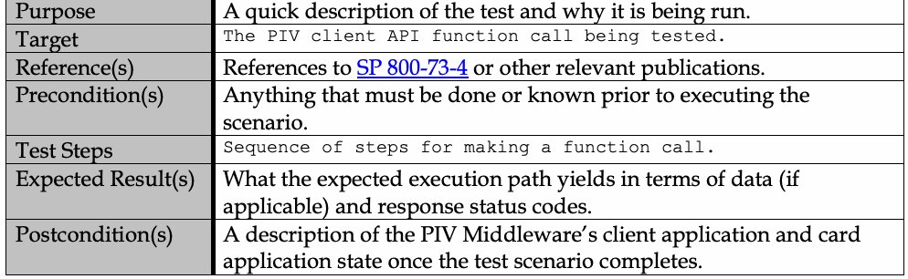
pivConnect
pivConnect
未レビュー訳B.1
B.1
未レビュー訳Valid Path Test Assertions
有効パスの試験アサーション
未レビュー訳B.1.1
B.1.1
未レビュー訳Initiate Exclusive Connection
排他的接続を開始する
未レビュー訳B.1.1.1
B.1.1.1
未レビュー訳原本PDFの抜粋画像
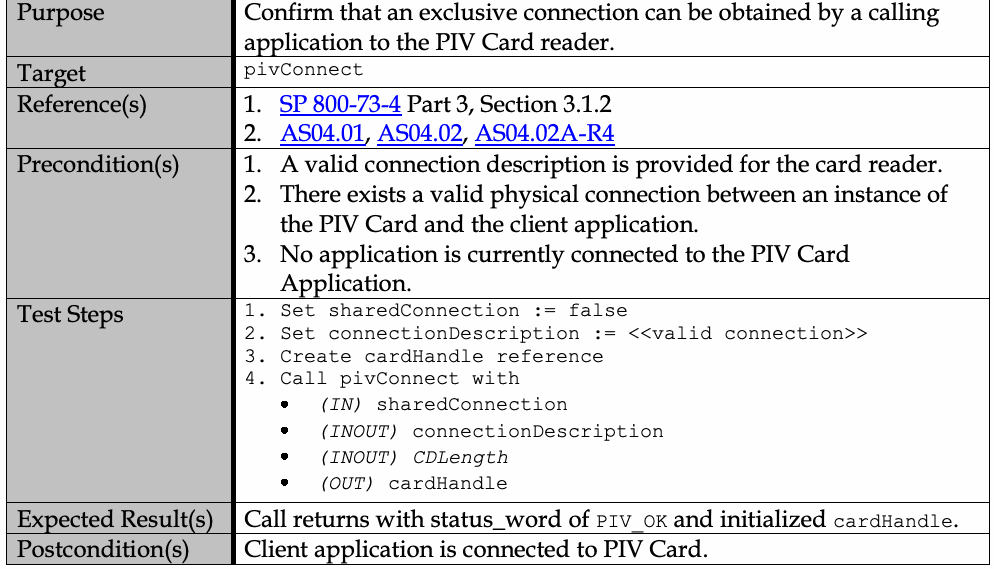
Initiate Shared Connection
共有接続を開始する
未レビュー訳B.1.1.2
B.1.1.2
未レビュー訳原本PDFの抜粋画像
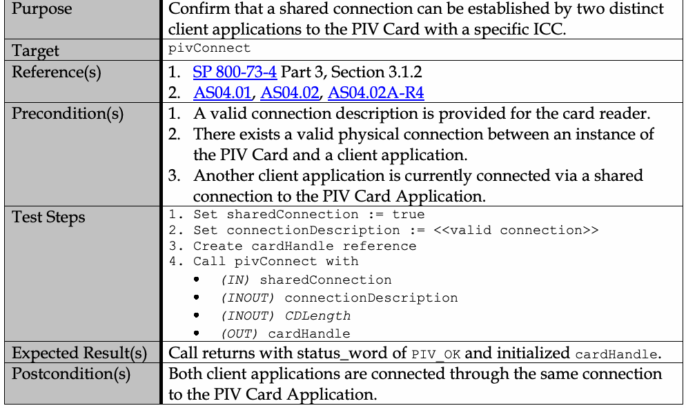
Test Assertions for Error Conditions
エラー条件の試験アサーション
未レビュー訳B.1.2
B.1.2
未レビュー訳Malformed Connection Description
不正形式の接続記述
未レビュー訳B.1.2.1
B.1.2.1
未レビュー訳原本PDFの抜粋画像
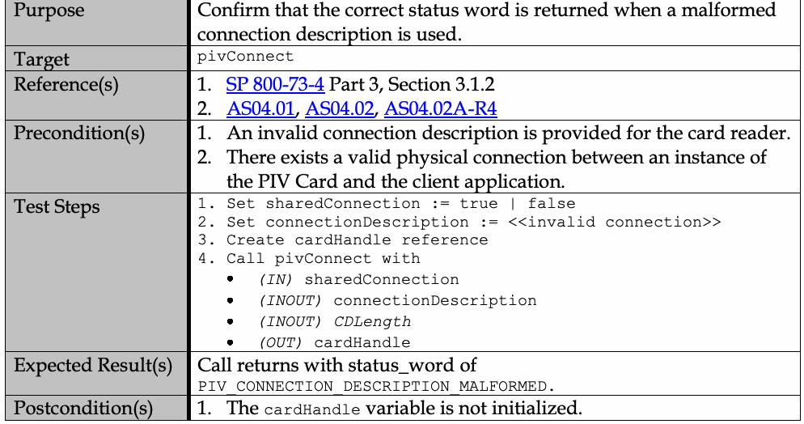
原本PDFの抜粋画像
Attempting to Share/Lock an Exclusive Connection
排他的接続を共有／ロックしようとする
未レビュー訳B.1.2.2
B.1.2.2
未レビュー訳原本PDFの抜粋画像
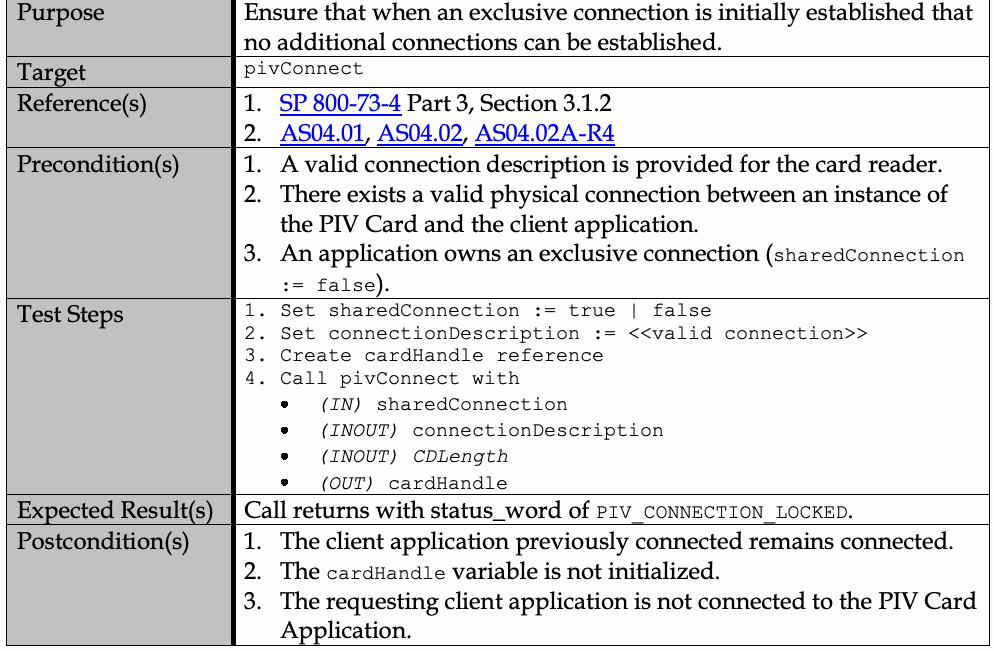
Attempting to Lock a Shared Connection
共有接続をロックしようとする
未レビュー訳B.1.2.3
B.1.2.3
未レビュー訳原本PDFの抜粋画像
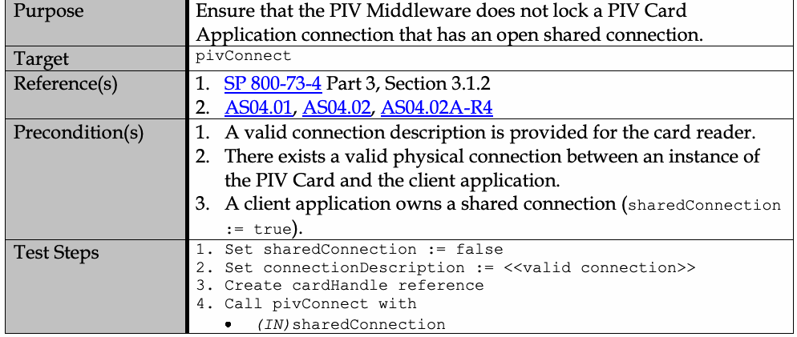
原本PDFの抜粋画像
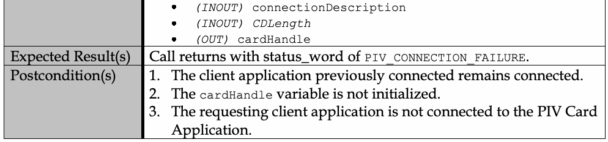
Attempting to Open an Unsupported Connection
サポートされていない接続を開こうとする
未レビュー訳B.1.2.4
B.1.2.4
未レビュー訳原本PDFの抜粋画像
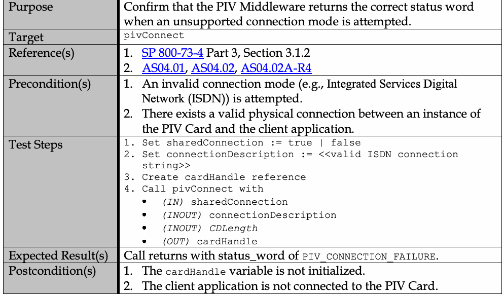
pivDisconnect
pivDisconnect
未レビュー訳B.2
B.2
未レビュー訳Valid Test Assertions
有効な試験アサーション
未レビュー訳B.2.1
B.2.1
未レビュー訳Disconnect an Exclusive Connection
排他的接続を切断する
未レビュー訳B.2.1.1
B.2.1.1
未レビュー訳原本PDFの抜粋画像
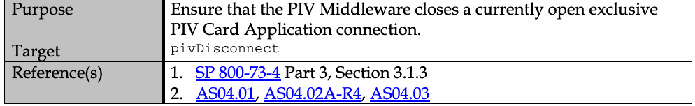
原本PDFの抜粋画像
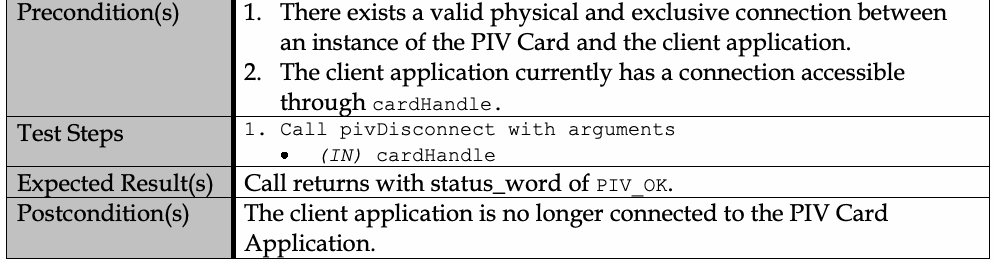
Disconnect a Shared Connection
共有接続を切断する
未レビュー訳B.2.1.2
B.2.1.2
未レビュー訳原本PDFの抜粋画像
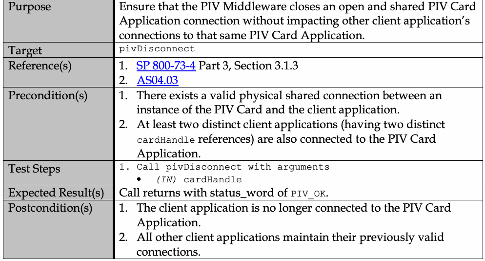
Test Assertions for Error Cases
エラーケースの試験アサーション
未レビュー訳B.2.2
B.2.2
未レビュー訳Attempt Disconnect with Invalid Card Handle
無効なカードハンドルで切断を試みる
未レビュー訳B.2.2.1
B.2.2.1
未レビュー訳原本PDFの抜粋画像
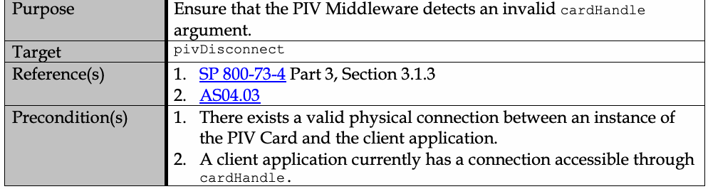
原本PDFの抜粋画像
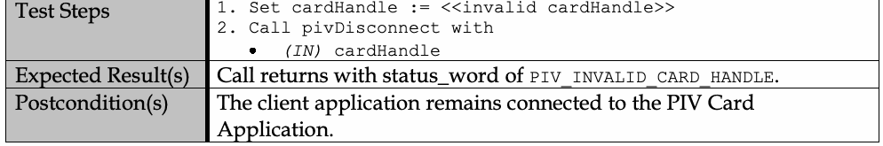
Disconnecting a Disconnected Client Application
切断済みクライアントアプリケーションの切断
未レビュー訳B.2.2.2
B.2.2.2
未レビュー訳原本PDFの抜粋画像
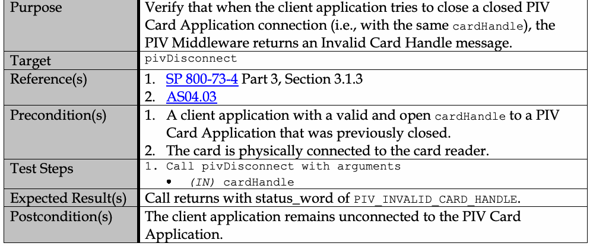
pivSelectCardApplication
pivSelectCardApplication
未レビュー訳B.3
B.3
未レビュー訳Valid Test Assertions
有効な試験アサーション
未レビュー訳B.3.1
B.3.1
未レビュー訳Select a Card Application with a Full AID
完全なAIDでカードアプリケーションを選択する
未レビュー訳B.3.1.1
B.3.1.1
未レビュー訳原本PDFの抜粋画像
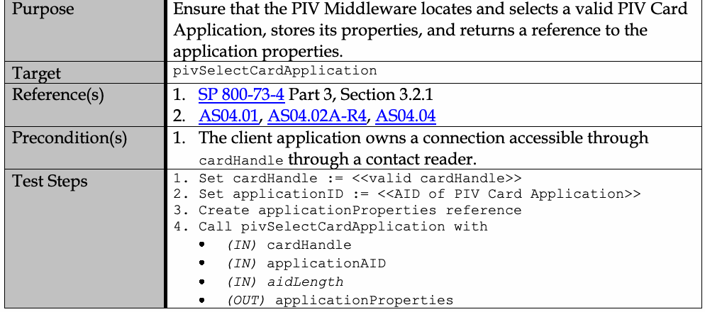
| • (INOUT) APLength | |
| Expected Result(s) | Call returns with status_word of and initialized PIV_OK reference. applicationProperties |
| Postcondition(s) | The “currently selected application” of the PIV Card is the PIV Card Application. The PIV Card Application’s security state is established. |
原本PDFの抜粋画像
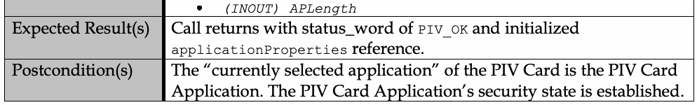
| • (INOUT) APLength | |
| 期待される結果 | 呼び出しはstatus_word PIV_OKを返し、applicationProperties参照を初期化する。 |
| 事後条件 | PIVカードの「現在選択されているアプリケーション」はPIVカードアプリケーションである。PIVカードアプリケーションのセキュリティ状態が確立される。 |
Use a Right Truncated AID to Select a Card Application
右側を切り詰めたAIDを使用してカードアプリケーションを選択する
未レビュー訳B.3.1.2
B.3.1.2
未レビュー訳原本PDFの抜粋画像
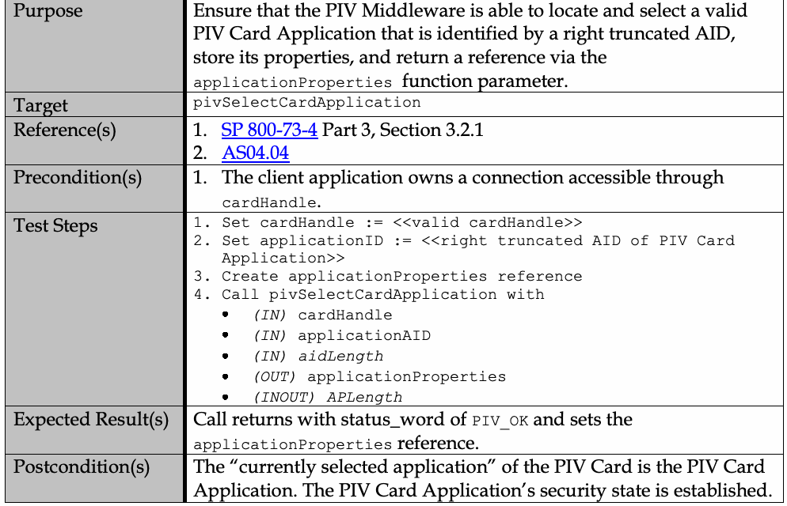
Test Assertions for Error Conditions
エラー条件の試験アサーション
未レビュー訳B.3.2
B.3.2
未レビュー訳Detect and Handle an Invalid cardHandle Reference
無効なcardHandle参照を検出して処理する
未レビュー訳B.3.2.1
B.3.2.1
未レビュー訳原本PDFの抜粋画像
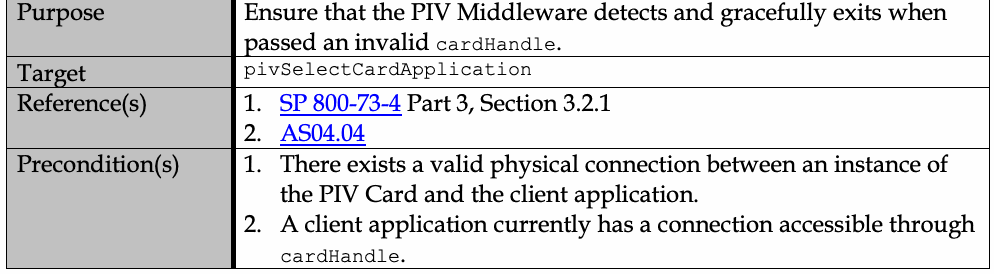
| Test Steps | 1. Set cardHandle := <<invalid cardHandle>> 2. Set applicationID := <<AID of PIV Card Application>> 3. Create applicationProperties reference 4. Call pivSelectCardApplication with • (IN) cardHandle • (IN) applicationAID • (IN) aidLength • (OUT) applicationProperties • (INOUT) APLength |
| Expected Result(s) | Call returns with status_word of and does PIV_INVALID_CARD_HANDLE not initialize reference. applicationProperties |
| Postcondition(s) | The client application remains in the state it had prior to calling . pivSelectCardApplication |
原本PDFの抜粋画像
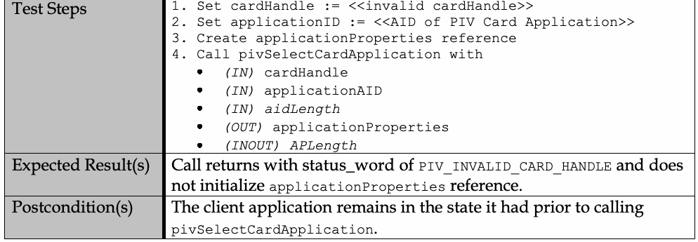
| 試験手順 | 1. cardHandle := <<invalid cardHandle>>を設定する。2. applicationID := <<PIVカードアプリケーションのAID>>を設定する。3. applicationProperties参照を作成する。4. 次の引数でpivSelectCardApplicationを呼び出す • (IN) cardHandle • (IN) applicationAID • (IN) aidLength • (OUT) applicationProperties • (INOUT) APLength |
| 期待される結果 | 呼び出しはstatus_word PIV_INVALID_CARD_HANDLEを返し、applicationProperties参照を初期化しない。 |
| 事後条件 | クライアントアプリケーションは、pivSelectCardApplicationの呼び出し前の状態を維持する。 |
Detect and Handle an Invalid applicationAID
無効なapplicationAIDを検出して処理する
未レビュー訳B.3.2.2
B.3.2.2
未レビュー訳原本PDFの抜粋画像
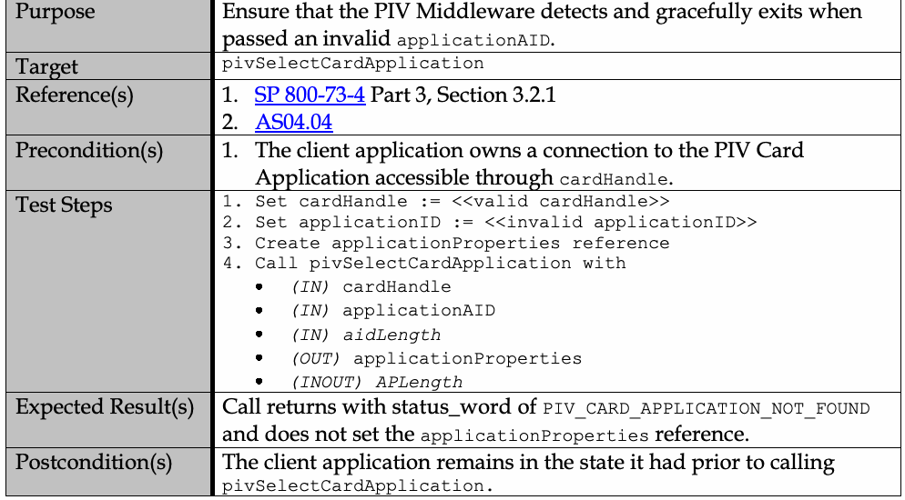
Identify and Handle an Insufficient Buffer
バッファ不足を特定して処理する
未レビュー訳B.3.2.3
B.3.2.3
未レビュー訳原本PDFの抜粋画像
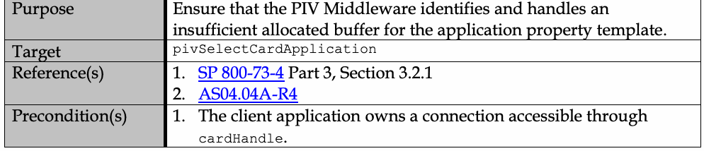
| 2. Length of the buffer allocated for data by the client application is only 1 byte. | |
| Test Steps | 1. Set cardHandle := <<valid cardHandle>> 2. Set applicationID := <<AID of PIV Card Application>> 3. Create applicationProperties reference 4. Call pivSelectCardApplication with • (IN) cardHandle • (IN) applicationAID • (IN) aidLength • (OUT) applicationProperties • (INOUT) APLength |
| Expected Result(s) | Call returns with status word of and sets PIV_INSUFFICIENT_BUFFER the value of the APLength parameter to the length of the application properties. |
| Postcondition(s) | The PIV Card Application is selected. |
原本PDFの抜粋画像
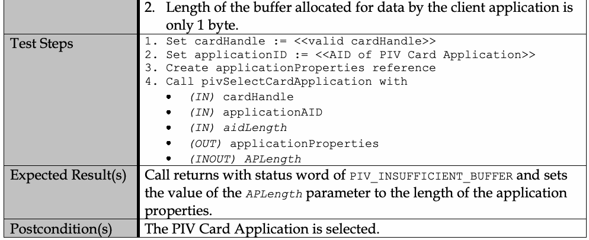
| 2. クライアントアプリケーションがデータ用に割り当てたバッファの長さは1バイトのみである。 | |
| 試験手順 | 1. cardHandle := <<valid cardHandle>>を設定する。2. applicationID := <<PIVカードアプリケーションのAID>>を設定する。3. applicationProperties参照を作成する。4. 次の引数でpivSelectCardApplicationを呼び出す • (IN) cardHandle • (IN) applicationAID • (IN) aidLength • (OUT) applicationProperties • (INOUT) APLength |
| 期待される結果 | 呼び出しはPIV_INSUFFICIENT_BUFFERを返し、APLengthパラメーターにアプリケーションプロパティの長さを設定する。 |
| 事後条件 | PIVカードアプリケーションが選択されている。 |
pivLogIntoCardApplication
pivLogIntoCardApplication
未レビュー訳B.4
B.4
未レビュー訳Valid Test Assertions
有効なテストアサーション
未レビュー訳B.4.1
B.4.1
未レビュー訳Log on to the Card Application
カードアプリケーションへのログイン
未レビュー訳B.4.1.1
B.4.1.1
未レビュー訳原本PDFの抜粋画像
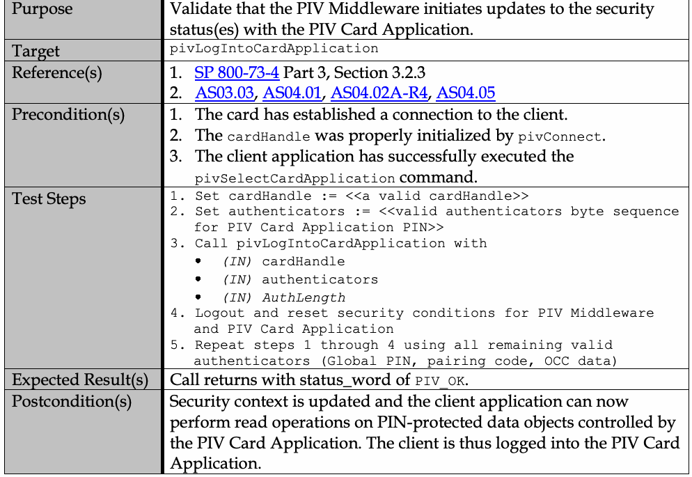
原本PDFの抜粋画像
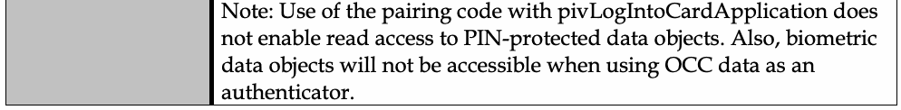
Test Assertions for Error Conditions
エラー条件のテストアサーション
未レビュー訳B.4.2
B.4.2
未レビュー訳Attempt Logon with an Invalid cardHandle
無効なcardHandleでログインを試みる
未レビュー訳B.4.2.1
B.4.2.1
未レビュー訳原本PDFの抜粋画像
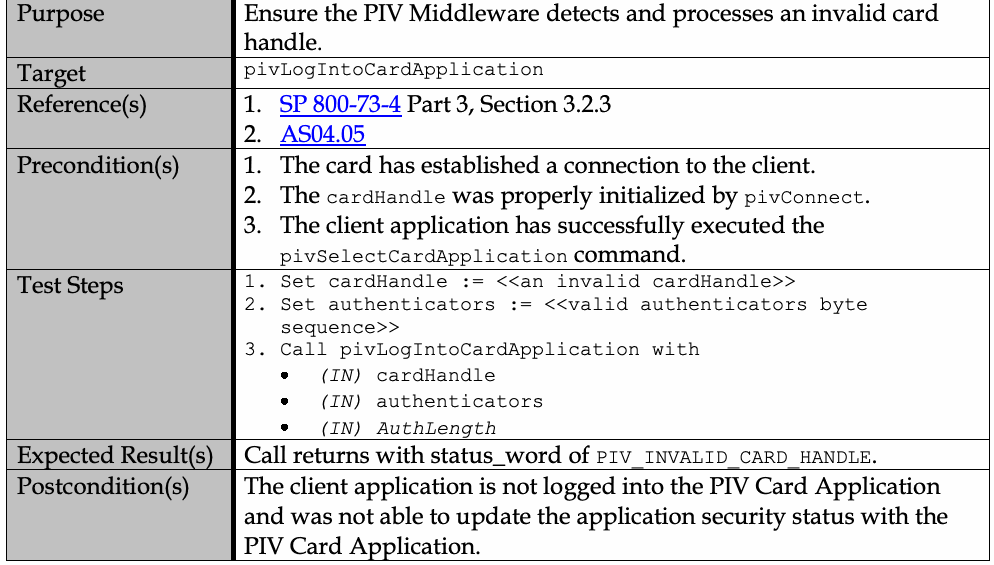
Attempt Logon with a Malformed Authenticator
不正形式の認証子でログインを試みる
未レビュー訳B.4.2.2
B.4.2.2
未レビュー訳原本PDFの抜粋画像
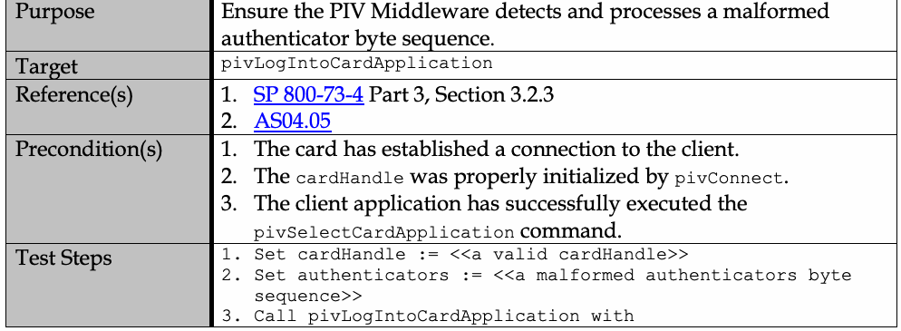
原本PDFの抜粋画像
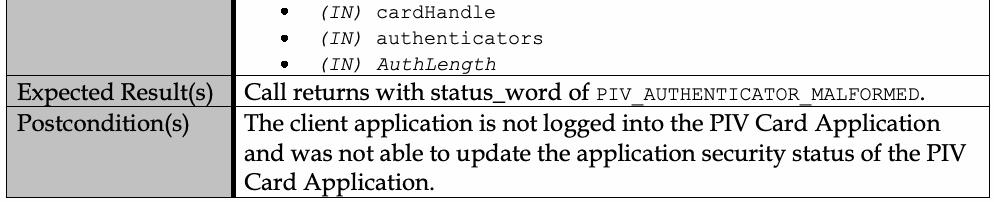
Attempt Logon with Invalid Authenticator
無効な認証子でログインを試みる
未レビュー訳B.4.2.3
B.4.2.3
未レビュー訳原本PDFの抜粋画像
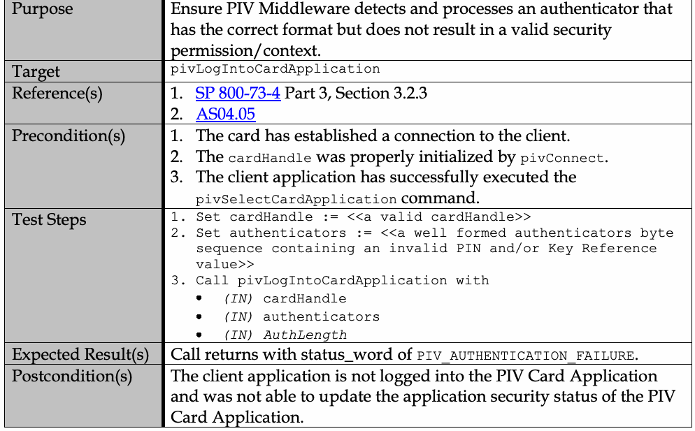
pivLogoutOfCardApplication
pivLogoutOfCardApplication
未レビュー訳B.5
B.5
未レビュー訳Valid Test Assertions
有効なテストアサーション
未レビュー訳B.5.1
B.5.1
未レビュー訳Log out of the Card Application
カードアプリケーションからログアウトする
未レビュー訳B.5.1.1
B.5.1.1
未レビュー訳原本PDFの抜粋画像
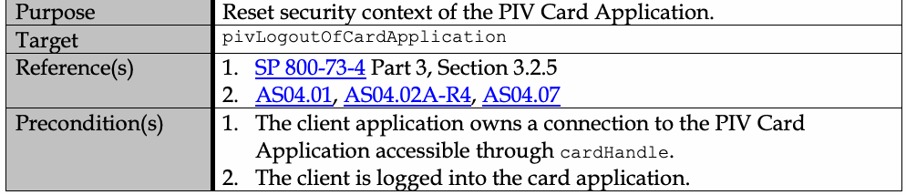
| Test Steps | 1. Set cardHandle := <<a valid cardHandle>> 2. Call pivLogoutOfCardApplication with • (IN) cardHandle 3. Set OID := <<valid OID for each of the following objects: Fingerprints, Facial Image, Printed Information, Iris Images, Pairing Code Reference Data Container>> 4. Create data reference 5. Call pivGetData with (each data object identified in step 3) • (IN) cardHandle • (IN) OID • (IN) oidLength • (OUT) data • (INOUT) DataLength |
| Expected Result(s) | Step 2: Call returns with status_word of and the client PIV_OK application is logged off of the PIV Card Application. Step 5: Call returns with status_word:= and does not set data PIV_SECURITY_CONDITION_NOT_SATISFIED reference. |
| Postcondition(s) | 1. The remains valid. cardHandle 2. The connection remains open. |
原本PDFの抜粋画像
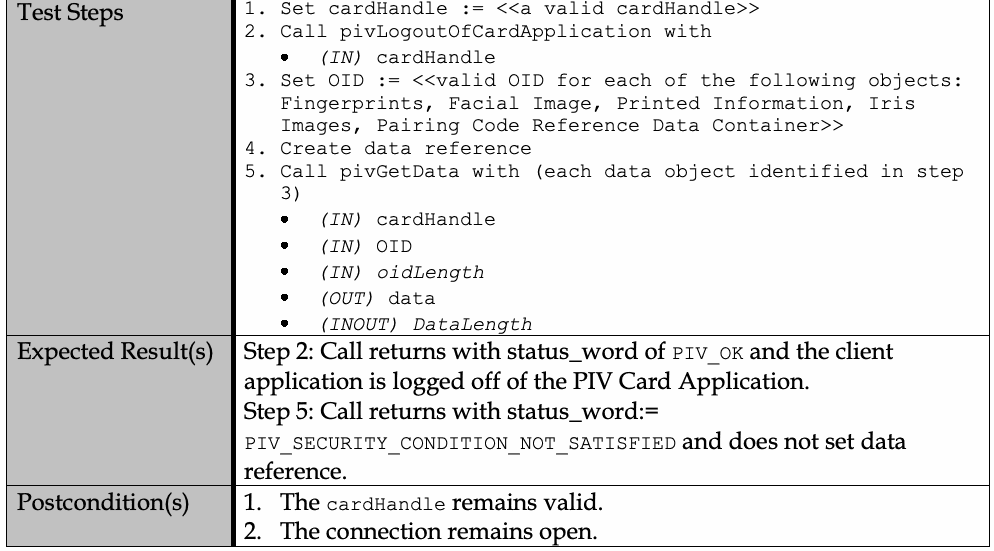
| テスト手順 | 1. cardHandle := <<有効なcardHandle>>を設定する。2. pivLogoutOfCardApplicationを次の引数で呼び出す。• (IN) cardHandle 3. OID := <<次の各オブジェクトに対する有効なOID：指紋、顔画像、印字情報、虹彩画像、ペアリングコード参照データコンテナ>>を設定する。4. データ参照を作成する。5. pivGetDataを呼び出す（手順3で特定した各データオブジェクトについて）。• (IN) cardHandle • (IN) OID • (IN) oidLength • (OUT) data • (INOUT) DataLength |
| 期待される結果 | 手順2：呼び出しはstatus_word PIV_OKを返し、クライアントアプリケーションはPIV Card Applicationからログアウトしている。手順5：呼び出しはstatus_word:= PIV_SECURITY_CONDITION_NOT_SATISFIEDを返し、data referenceを設定しない。 |
| 事後条件 | 1. cardHandleは引き続き有効である。2. 接続は開いたままである。 |
Attempt Log Out Without Logging In
ログインせずにログアウトを試みる
未レビュー訳B.5.1.2
B.5.1.2
未レビュー訳原本PDFの抜粋画像
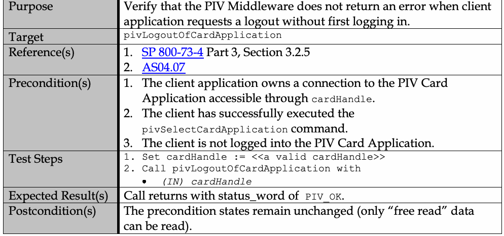
Test Assertions for Error Conditions
エラー条件のテストアサーション
未レビュー訳B.5.2
B.5.2
未レビュー訳Attempt Log Out with Invalid cardHandle
無効なcardHandleでログアウトを試みる
未レビュー訳B.5.2.1
B.5.2.1
未レビュー訳| Purpose | Ensure the PIV Middleware detects and handles an invalid . cardHandle |
原本PDFの抜粋画像
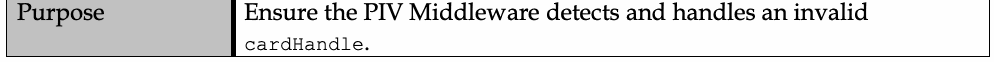
| 目的 | PIV Middlewareが無効なcardHandleを検出し、処理することを確認する。 |
原本PDFの抜粋画像
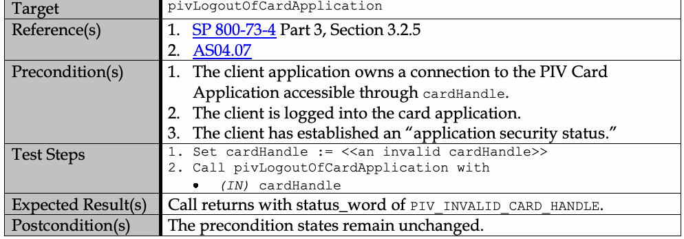
pivGetData
pivGetData
未レビュー訳B.6
B.6
未レビュー訳Valid Test Assertions
有効なテストアサーション
未レビュー訳B.6.1
B.6.1
未レビュー訳Get a Reference to Data Object that Does Not Require Login
ログインを必要としないデータオブジェクトへの参照を取得する
未レビュー訳B.6.1.1
B.6.1.1
未レビュー訳原本PDFの抜粋画像
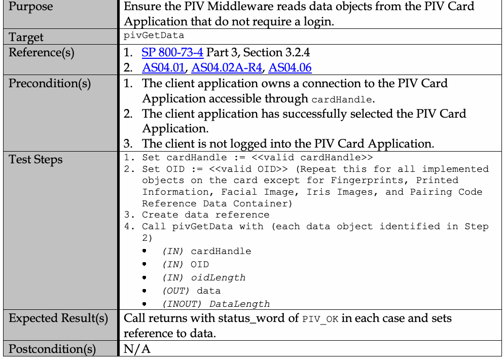
Get a Reference to Data Object that Requires Login
ログインを必要とするデータオブジェクトへの参照を取得する
未レビュー訳B.6.1.2
B.6.1.2
未レビュー訳原本PDFの抜粋画像
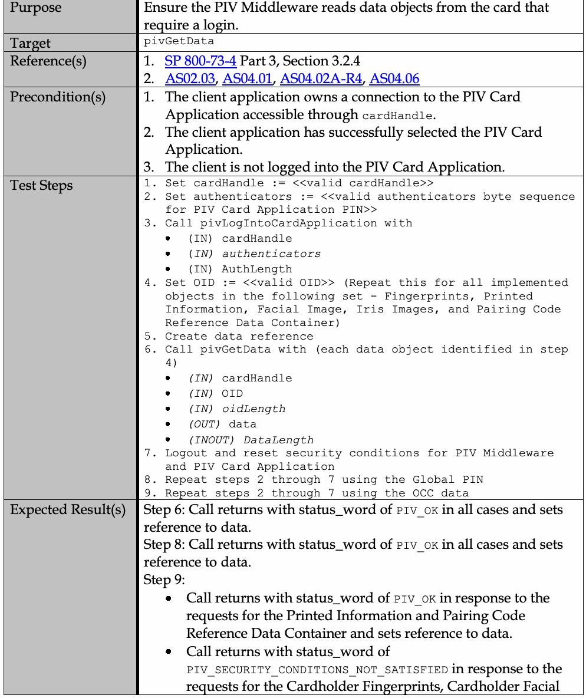
| Image, and Cardholder Iris Images and does not set the data reference. | |
| Postcondition(s) | The client application is logged off of the PIV Card Application. Only “free read” data can be read. |
原本PDFの抜粋画像
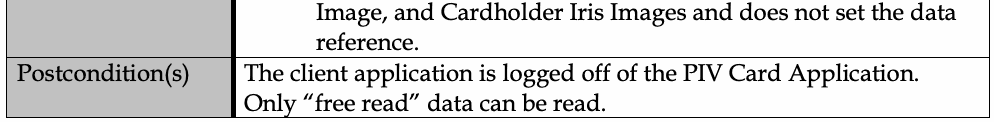
| Image、およびCardholder Iris Imagesに対するPIV_SECURITY_CONDITIONS_NOT_SATISFIED要求への応答として、呼び出しはstatus_word of の状態で戻り、data参照を設定しない。 | |
| 事後条件 | クライアントアプリケーションはPIVカードアプリケーションからログアウトしている。「フリーリード」データのみ読み取り可能である（can）。 |
Test Assertions for Error Conditions
エラー条件の試験アサーション
未レビュー訳B.6.2
B.6.2
未レビュー訳Identify and Handle an Invalid cardHandle
無効なcardHandleを識別して処理する
未レビュー訳B.6.2.1
B.6.2.1
未レビュー訳原本PDFの抜粋画像
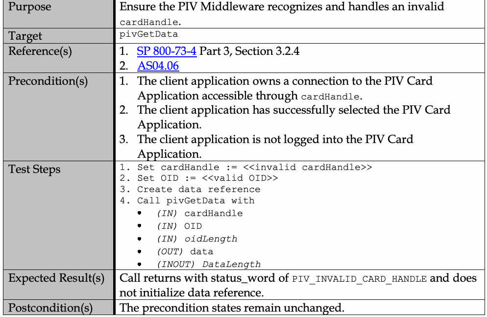
Identify and Handle an Invalid Object Identifier
無効なオブジェクト識別子を識別して処理する
未レビュー訳B.6.2.2
B.6.2.2
未レビュー訳原本PDFの抜粋画像
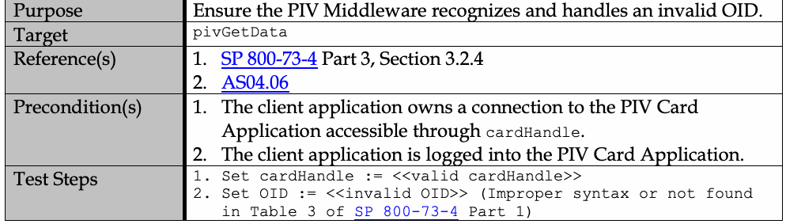
| 3. Create data reference 4. Call pivGetData with • (IN) cardHandle • (IN) OID • (IN) oidLength • (OUT) data • (INOUT) DataLength | |
| Expected Result(s) | Call returns with status_word of and does not set PIV_INVALID_OID data reference. |
| Postcondition(s) | The client application remains in the state it had before the call. |
原本PDFの抜粋画像
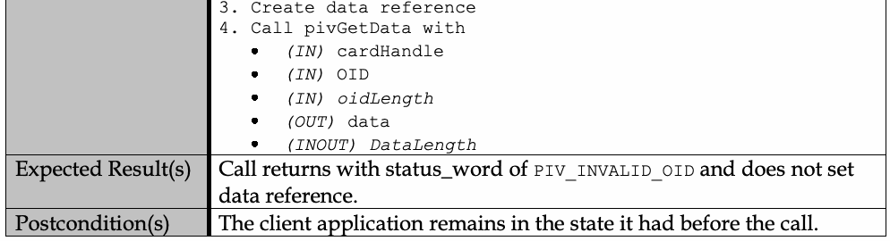
| 3. data参照を作成する。 4. pivGetDataを次の引数で呼び出す • (IN) cardHandle • (IN) OID • (IN) oidLength • (OUT) data • (INOUT) DataLength | |
| 期待結果 | 呼び出しはstatus_word PIV_INVALID_OIDの状態で戻り、data参照を設定しない。 |
| 事後条件 | クライアントアプリケーションは呼び出し前の状態を維持する。 |
The Client Application Handles Missing Data Object
クライアントアプリケーションが欠落データオブジェクトを処理する
未レビュー訳B.6.2.3
B.6.2.3
未レビュー訳原本PDFの抜粋画像
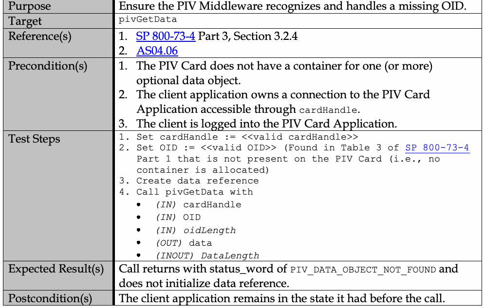
The Client Application Handles Zero-Length Data Object
クライアントアプリケーションがゼロ長データオブジェクトを処理する
未レビュー訳B.6.2.4
B.6.2.4
未レビュー訳原本PDFの抜粋画像
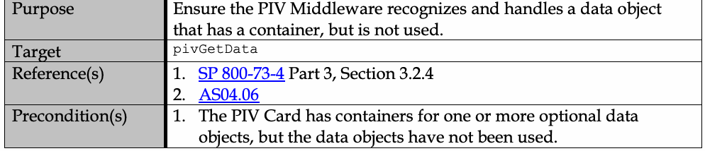
| 2. The client application owns a connection to the PIV Card Application accessible through . cardHandle 3. The client is logged into the PIV Card Application. | |
| Test Steps | 1. Set cardHandle := <<valid cardHandle>> 2. Set OID := <<valid OID>> (Found in Table 3 of SP 800-73-4 Part 1 that is present but not used on the PIV Card 3. Create data reference 4. Call pivGetData with • (IN) cardHandle • (IN) OID • (IN) oidLength • (OUT) data • (INOUT) DataLength |
| Expected Result(s) | Call returns with status_word of and PIV_DATA_OBJECT_NOT_FOUND does not initialize data reference. |
| Postcondition(s) | The client application remains in the state it had before the call. |
原本PDFの抜粋画像
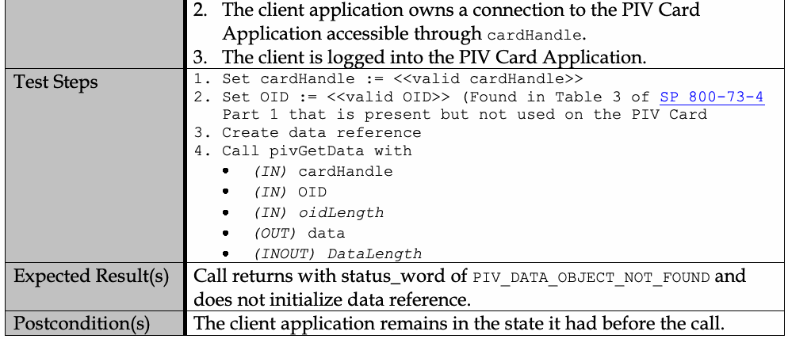
| 2. クライアントアプリケーションは、cardHandleを介してアクセス可能なPIVカードアプリケーションへの接続を所有している。 3. クライアントはPIVカードアプリケーションにログインしている。 | |
| 試験手順 | 1. cardHandle := <<有効なcardHandle>>を設定する。 2. OID := <<有効なOID>>を設定する（SP 800-73-4第1部の表3にあり、PIVカード上に存在するが未使用のもの）。 3. data参照を作成する。 4. pivGetDataを次の引数で呼び出す • (IN) cardHandle • (IN) OID • (IN) oidLength • (OUT) data • (INOUT) DataLength |
| 期待結果 | 呼び出しはstatus_word PIV_DATA_OBJECT_NOT_FOUNDの状態で戻り、data参照を初期化しない。 |
| 事後条件 | クライアントアプリケーションは呼び出し前の状態を維持する。 |
Security Conditions are Enforced for Secured Objects
保護対象オブジェクトにセキュリティ条件が適用される
未レビュー訳B.6.2.5
B.6.2.5
未レビュー訳原本PDFの抜粋画像
Identify and Handle an Insufficient Buffer
不足バッファを識別して処理する
未レビュー訳B.6.2.6
B.6.2.6
未レビュー訳原本PDFの抜粋画像
pivPutData
pivPutData
未レビュー訳B.7
B.7
未レビュー訳Valid Test Assertions
有効な試験アサーション
未レビュー訳B.7.1
B.7.1
未レビュー訳Write Data to an Object on the Card through the Client Application
クライアントアプリケーション経由でカード上のオブジェクトにデータを書き込む
未レビュー訳B.7.1.1
B.7.1.1
未レビュー訳原本PDFの抜粋画像
原本PDFの抜粋画像
Test Assertions for Error Conditions
エラー条件の試験アサーション
未レビュー訳B.7.2
B.7.2
未レビュー訳Identify and Handle an Invalid cardHandle
無効なcardHandleを識別して処理する
未レビュー訳B.7.2.1
B.7.2.1
未レビュー訳原本PDFの抜粋画像
Identify and Handle an Invalid Object Identifier (OID)
無効なオブジェクト識別子（OID）を特定して処理する
未レビュー訳B.7.2.2
B.7.2.2
未レビュー訳原本PDFの抜粋画像
原本PDFの抜粋画像
Security Conditions are Enforced for Writing Data to the On-card Data
カード上のデータコンテナへの書き込みに対するセキュリティ条件の適用
未レビュー訳B.7.2.3
B.7.2.3
未レビュー訳Containers
コンテナ
未レビュー訳原本PDFの抜粋画像
| Expected Result(s) | All calls return with status_word := and does not initialize data PIV_SECURITY_STATUS_NOT_SATISFIED reference. |
| Postcondition(s) | The client application remains in the state it had before the call. |
原本PDFの抜粋画像
| 期待される結果 | すべての呼び出しはstatus_word := PIV_SECURITY_STATUS_NOT_SATISFIEDを返し、data参照を初期化しない。 |
| 事後条件 | クライアントアプリケーションは呼び出し前の状態を維持する。 |
pivGenerateKeyPair
pivGenerateKeyPair
未レビュー訳B.8
B.8
未レビュー訳Valid Test Assertions
有効な試験アサーション
未レビュー訳B.8.1
B.8.1
未レビュー訳Generate an Asymmetric Key Pair
非対称鍵ペアを生成する
未レビュー訳B.8.1.1
B.8.1.1
未レビュー訳原本PDFの抜粋画像
Test Assertions for Error Conditions
エラー条件の試験アサーション
未レビュー訳B.8.2
B.8.2
未レビュー訳Identify and Handle an Invalid cardHandle
無効なcardHandleを特定して処理する
未レビュー訳B.8.2.1
B.8.2.1
未レビュー訳原本PDFの抜粋画像
Identify and Handle an Invalid keyReference or Algorithm Combination
無効なkeyReferenceまたはアルゴリズムの組み合わせを特定して処理する
未レビュー訳B.8.2.2
B.8.2.2
未レビュー訳原本PDFの抜粋画像
| • (IN) cryptographicMechanism • (OUT) publicKey • (INOUT) KeyLength | |
| Expected Result(s) | Call returns with status_word of . PIV_INVALID_KEY_OR_KEYALG_COMBINATION |
| Postcondition(s) | 1. The PIV Card Application remains in the state it had prior to the function call. pivGenerateKeyPair 2. The precondition states are unaffected. |
原本PDFの抜粋画像
| • (IN) cryptographicMechanism • (OUT) publicKey • (INOUT) KeyLength | |
| 期待される結果 | 呼び出しはstatus_word PIV_INVALID_KEY_OR_KEYALG_COMBINATIONを返す。 |
| 事後条件 | 1. PIVカードアプリケーションは関数呼び出し前の状態を維持する。pivGenerateKeyPair 2. 前提条件の状態に影響はない。 |
Identify and Handle an Invalid cryptographicMechanism
未対応のcryptographicMechanismを特定して処理する
未レビュー訳B.8.2.3
B.8.2.3
未レビュー訳原本PDFの抜粋画像
Security Conditions are Enforced
セキュリティ条件の適用
未レビュー訳B.8.2.4
B.8.2.4
未レビュー訳| Purpose | Ensure that the PIV Middleware enforces the necessary security conditions when called from client application. |
| Target | pivGenerateKeyPair |
| Reference(s) | 1. SP 800-73-4 Part 3, Section 3.4.2 |
原本PDFの抜粋画像
| 目的 | クライアントアプリケーションから呼び出されたとき、PIVミドルウェアが必要なセキュリティ条件を適用することを確認する。 |
| 対象 | pivGenerateKeyPair |
| 参照 | 1. SP 800-73-4 Part 3、3.4.2節 |
| 2. AS04.10 | |
| Precondition(s) | 1. The client application owns a connection to the PIV Card Application accessible through . cardHandle 2. The client application has successfully selected the PIV Card Application. 3. The PIV Card Application has not authenticated the PIV Card Application Administrator. |
| Test Steps | 1. Set cardHandle := <<valid cardHandle>> 2. Set cryptographicMechanism := <<a recognized cryptographic mechanism identifier>> 3. Set keyReference := <<a reference to a valid key that is associated with the selected cryptographicMechanism >> 4. Create publicKey reference 5. Call pivGenerateKeyPair with • (IN) cardHandle • (IN) keyReference • (IN) cryptographicMechanism • (OUT) publicKey • (INOUT) KeyLength |
| Expected Result(s) | Call returns with status_word of PIV_SECURITY_CONDITIONS_NOT_SATISFIED. |
| Postcondition(s) | 1. The Card Application remains in the state it had prior to the function call. pivGenerateKeyPair 2. The precondition states are unaffected. |
原本PDFの抜粋画像
| 2. AS04.10 | |
| 前提条件 | 1. クライアントアプリケーションは、cardHandleを通じてアクセスできるPIVカードアプリケーションへの接続を所有する。2. クライアントアプリケーションはPIVカードアプリケーションの選択に成功している。3. PIVカードアプリケーションはPIVカードアプリケーション管理者を認証していない。 |
| 試験手順 | 1. cardHandle := <<valid cardHandle>>を設定する。2. cryptographicMechanism := <<認識される暗号メカニズム識別子>>を設定する。3. keyReference := <<選択したcryptographicMechanismに関連付けられた有効なキーへの参照>>を設定する。4. publicKey参照を作成する。5. 次の引数でpivGenerateKeyPairを呼び出す • (IN) cardHandle • (IN) keyReference • (IN) cryptographicMechanism • (OUT) publicKey • (INOUT) KeyLength |
| 期待される結果 | 呼び出しはstatus_word PIV_SECURITY_CONDITIONS_NOT_SATISFIEDを返す。 |
| 事後条件 | 1. カードアプリケーションは関数呼び出し前の状態を維持する。pivGenerateKeyPair 2. 前提条件の状態に影響はない。 |
Identify and Handle an Insufficient Buffer
バッファ不足を特定して処理する
未レビュー訳B.8.2.5
B.8.2.5
未レビュー訳原本PDFの抜粋画像
| 6. Call pivGenerateKeyPair with • (IN) cardHandle • (IN) keyReference • (IN) cryptographicMechanism • (OUT) publicKey • (INOUT) KeyLength | |
| Expected Result(s) | Call returns with status_word of and sets PIV_INSUFFICIENT_BUFFER the parameter to the length of the returned public key. KeyLength |
| Postcondition(s) | 1. A new key pair is generated. 2. The precondition states are unaffected. |
原本PDFの抜粋画像
| 6. 次の引数でpivGenerateKeyPairを呼び出す • (IN) cardHandle • (IN) keyReference • (IN) cryptographicMechanism • (OUT) publicKey • (INOUT) KeyLength | |
| 期待される結果 | 呼び出しはstatus_word PIV_INSUFFICIENT_BUFFERを返し、KeyLengthパラメーターを返された公開鍵の長さに設定する。 |
| 事後条件 | 1. 新しい鍵ペアが生成される。2. 前提条件の状態に影響はない。 |
pivCrypt
pivCrypt
未レビュー訳B.9
B.9
未レビュー訳Valid Test Assertions
有効な試験アサーション
未レビュー訳B.9.1
B.9.1
未レビュー訳Authenticate the Card Application to Client Application
カードアプリケーションをクライアントアプリケーションに認証する
未レビュー訳B.9.1.1
B.9.1.1
未レビュー訳原本PDFの抜粋画像
| key (with algorithm '07') or a public key (with algorithms '11' or '14') instead of a challenge | |
| Expected Result(s) | Call returns with status_word of with the PIV_OK algorithmOutput carrying the signed challenge, transported key, shared secret Z, or a signature from the card. |
| Postcondition(s) | N/A |
原本PDFの抜粋画像
| 鍵（アルゴリズム'07'の場合）または公開鍵（アルゴリズム'11'または'14'の場合）を用いる | |
| 期待される結果 | 呼び出しはstatus_word PIV_OKを返し、algorithmOutputにはカードからの署名済みチャレンジ、転送された鍵、共有秘密Z、または署名が格納される。 |
| 事後条件 | 該当なし |
Mutual Authentication of Client Application and Card Application
クライアントアプリケーションとカードアプリケーションの相互認証
未レビュー訳B.9.1.2
B.9.1.2
未レビュー訳原本PDFの抜粋画像
Authenticate the Client Application to Card Application
クライアントアプリケーションをカードアプリケーションに認証する
未レビュー訳B.9.1.3
B.9.1.3
未レビュー訳| 目的 | PIV Card ApplicationにExternal Authenticateを実行させる。 |
原本PDFの抜粋画像
Test Assertions for Error Conditions
エラー条件のテストアサーション
未レビュー訳B.9.2
B.9.2
未レビュー訳Identify and Handle an Invalid cardHandle
無効なcardHandleを特定して処理する
未レビュー訳B.9.2.1
B.9.2.1
未レビュー訳原本PDFの抜粋画像
| 6. Call pivCrypt with • (IN) cardHandle • (IN) algorithmIdentifier • (IN) keyReference • (IN) algorithmInput • (IN) inputLength • (OUT) algorithmOutput • (INOUT) outputLength | |
| Expected Result(s) | Call returns with status_word of . PIV_INVALID_CARD_HANDLE |
| Postcondition(s) | The precondition states are unaffected. |
原本PDFの抜粋画像
| 6. pivCryptを次の引数で呼び出す。• (IN) cardHandle • (IN) algorithmIdentifier • (IN) keyReference • (IN) algorithmInput • (IN) inputLength • (OUT) algorithmOutput • (INOUT) outputLength | |
| 期待される結果 | 呼び出しはstatus_word PIV_INVALID_CARD_HANDLEを返す。 |
| 事後条件 | 前提条件の状態に影響はない。 |
Identify and Handle an Invalid keyReference or Algorithm
無効なkeyReferenceまたはアルゴリズムを特定して処理する
未レビュー訳B.9.2.2
B.9.2.2
未レビュー訳原本PDFの抜粋画像
Identify and Handle the keyReference Set to the PIV Secure Messaging Key
keyReferenceがPIV Secure Messaging鍵に設定された場合の特定と処理
未レビュー訳B.9.2.3
B.9.2.3
未レビュー訳原本PDFの抜粋画像
| Precondition(s) | 1. The client application owns a connection to the PIV Card Application accessible through . cardHandle 2. The client is logged into the PIV Card Application. |
| Test Steps | 1. Set cardHandle := <<a valid cardHandle>> 2. Set keyReference := <<'04'>> 3. Set algorithmIdentifier := <<'27' or '2E'>> 4. Set algorithmInput := <<byte sequence compatible with the type of authentication (see Section 4.1.8 of SP 800-73-4, Part 2) encoded according to the format in the Dynamic Authentication Template – Table 7 of SP 800-73-4 Part 2>> 5. Create algorithmOutput reference 6. Call pivCrypt with • (IN) cardHandle • (IN) algorithmIdentifier • (IN) keyReference • (IN) algorithmInput • (IN) inputLength • (OUT) algorithmOutput • (INOUT) outputLength |
| Expected Result(s) | Call returns with status_word of . PIV_INVALID_KEYREF_OR_ALGORITHM |
| Postcondition(s) | The precondition states are unaffected. |
原本PDFの抜粋画像
| 前提条件 | 1. クライアントアプリケーションはcardHandleを通じてアクセス可能なPIV Card Applicationへの接続を所有している。2. クライアントはPIV Card Applicationにログインしている。 |
| テスト手順 | 1. cardHandle := <<有効なcardHandle>>を設定する。2. keyReference := <<'04'>>を設定する。3. algorithmIdentifier := <<'27'または'2E'>>を設定する。4. algorithmInput := <<認証タイプと互換性のあるバイト列（SP 800-73-4, Part 2のSection 4.1.8を参照）を、Dynamic Authentication Template形式（SP 800-73-4 Part 2のTable 7）に従って符号化する>>を設定する。5. algorithmOutput参照を作成する。6. pivCryptを次の引数で呼び出す。• (IN) cardHandle • (IN) algorithmIdentifier • (IN) keyReference • (IN) algorithmInput • (IN) inputLength • (OUT) algorithmOutput • (INOUT) outputLength |
| 期待される結果 | 呼び出しはstatus_word PIV_INVALID_KEYREF_OR_ALGORITHMを返す。 |
| 事後条件 | 前提条件の状態に影響はない。 |
Identify and Handle an Invalid Input Data
無効な入力データを特定して処理する
未レビュー訳B.9.2.4
B.9.2.4
未レビュー訳原本PDFの抜粋画像
原本PDFの抜粋画像
Security Conditions are Enforced
セキュリティ条件が適用される
未レビュー訳B.9.2.5
B.9.2.5
未レビュー訳原本PDFの抜粋画像
| 2. All other calls return with status_word of . PIV_SECURITY_CONDITIONS_NOT_SATISFIED | |
| Postcondition(s) | 1. The PIV Card Application returns to the state it had prior to the function call. pivCrypt 2. The precondition states are unaffected. |
原本PDFの抜粋画像
| 2. その他のすべての呼び出しはstatus_word PIV_SECURITY_CONDITIONS_NOT_SATISFIEDを返す。 | |
| 事後条件 | 1. PIV Card ApplicationはpivCrypt関数呼び出し前の状態に戻る。2. 前提条件の状態に影響はない。 |
Identify and Handle an Insufficient Buffer
不十分なバッファを特定して処理する
未レビュー訳B.9.2.6
B.9.2.6
未レビュー訳原本PDFの抜粋画像
pivMiddlewareVersion
pivMiddlewareVersion
未レビュー訳B.10
B.10
未レビュー訳B.10.1 Valid Test Assertions
B.10.1 有効なテストアサーション
未レビュー訳B.10.1.1 Retrieve the Supported PIV MiddlwareVersion
B.10.1.1 サポートされるPIV MiddlwareVersionを取得する
未レビュー訳| Purpose | Ensure the PIV Middleware provides its version number to the client application. |
原本PDFの抜粋画像
| 目的 | PIVミドルウェアがクライアントアプリケーションにバージョン番号を提供することを確認する。 |
原本PDFの抜粋画像
pivEstablishSecureMessaging
pivEstablishSecureMessaging
未レビュー訳B.11
B.11
未レビュー訳The following tests shall be performed using a PIV Card that has implemented support for the virtual contact interface (VCI) and that has been configured to require submission of a pairing code in order to establish the VCI. These tests need to be performed using a card that has been configured to require submission of a pairing code in order to test the ability of the PIV Middleware to submit the pairing code over secure messaging when the client application calls pivLogIntoCardApplication with a pairing code. It is not necessary to also test the ability of the PIV Middleware to work with a card that is configured to not require the submission of a pairing code in order to establish the VCI since the middleware performs the same steps for each function regardless of whether the PIV Card is configured to require the pairing code.
以下の試験は、仮想接触インターフェース（VCI）をサポートする機能を実装し、VCI確立にペアリングコードの送信を要求するよう構成されたPIVカードを使用して実施しなければならない（shall）。これらの試験は、クライアントアプリケーションがペアリングコードを指定してpivLogIntoCardApplicationを呼び出したときに、PIVミドルウェアがセキュアメッセージング経由でペアリングコードを送信できることを試験するため、ペアリングコードの送信を要求するよう構成されたカードを用いて実施する必要がある（need to）。PIVカードがペアリングコードを要求する構成かどうかにかかわらず、ミドルウェアは各関数について同じ手順を実行するため、VCI確立にペアリングコードの送信を要求しない構成のカードでPIVミドルウェアの動作を試験する必要はない。
未レビュー訳B.11.1 Valid Test Assertions
B.11.1 有効な試験アサーション
未レビュー訳B.11.1.1 Establish Secure Messaging
B.11.1.1 セキュアメッセージングを確立する
未レビュー訳原本PDFの抜粋画像
| Expected Result(s) | Call returns with status_word of . PIV_OK |
| Postcondition(s) | Secure messaging session is established. |
原本PDFの抜粋画像
| 期待結果 | 呼び出しはstatus_word of の状態で戻る。PIV_OK |
| 事後条件 | セキュアメッセージングセッションが確立されている。 |
B.11.1.2 Command Execution with Established Secure Messaging
B.11.1.2 確立済みセキュアメッセージングでコマンドを実行する
未レビュー訳原本PDFの抜粋画像
原本PDFの抜粋画像
B.11.2 Test Assertions for Error Conditions
B.11.2 エラー条件の試験アサーション
未レビュー訳B.11.2.1 Identify and Handle an Invalid cardHandle
B.11.2.1 無効なcardHandleを識別して処理する
未レビュー訳原本PDFの抜粋画像
B.11.2.2 Secure Messaging Failure
B.11.2.2 セキュアメッセージングの失敗
未レビュー訳原本PDFの抜粋画像
| 4. No other contactless card is within the proximity of the reader. 5. Secure messaging has been successfully established by calling the function. pivEstablishSecureMessaging | |
| Test Steps | 1. Tester removes the PIV Card from the reading range of the contactless reader so that the card loses power. 2. Tester brings the PIV Card back into range of the contactless reader. 3. Set sharedConnection := true 4. Set connectionDescription := <<valid connection>> 5. Create cardHandle reference 6. Call pivConnect with • (IN) sharedConnection • (INOUT) connectionDescription • (INOUT) CDLength • (OUT) cardHandle 7. Call pivSelect with (AID of the PIV Card) • (IN) cardHandle • (IN) applicationAID • (IN) AIDLength • (OUT) applicationProperties • (INOUT) APLength 8. Call pivGetData with (OID of the X.509 Certificate for Card Authentication) • (IN) cardHandle • (IN) OID • (IN) oidLength • (OUT) data • (INOUT) DataLength |
| Expected Result(s) | 1. Step 6 returns with status_word of and initialized PIV_OK . cardHandle 2. Step 7 returns and the initialized application properties PIV_OK reference. 3. Step 8 returns . PIV_SM_FAILED |
| Postcondition(s) | Secure Messaging is not established |
原本PDFの抜粋画像
| 4. 他の非接触カードがリーダーの近くにない。 5. 関数pivEstablishSecureMessagingを呼び出してセキュアメッセージングが正常に確立されている。 | |
| 試験手順 | 1. 試験担当者はPIVカードを非接触リーダーの読み取り範囲外に移動し、カードの電源が失われるようにする。 2. 試験担当者はPIVカードを非接触リーダーの範囲内に戻す。 3. sharedConnection := trueを設定する。 4. connectionDescription := <<有効な接続>>を設定する。 5. cardHandle参照を作成する。 6. pivConnectを次の引数で呼び出す • (IN) sharedConnection • (INOUT) connectionDescription • (INOUT) CDLength • (OUT) cardHandle 7. pivSelectを呼び出す（PIVカードのAID） • (IN) cardHandle • (IN) applicationAID • (IN) AIDLength • (OUT) applicationProperties • (INOUT) APLength 8. pivGetDataを呼び出す（カード認証用X.509証明書のOID） • (IN) cardHandle • (IN) OID • (IN) oidLength • (OUT) data • (INOUT) DataLength |
| 期待結果 | 1. 手順6はstatus_word PIV_OKを返し、cardHandleが初期化されている。 2. 手順7はPIV_OKを返し、applicationProperties参照が初期化されている。 3. 手順8はPIV_SM_FAILEDを返す。 |
| 事後条件 | セキュアメッセージングは確立されていない。 |
Card Command Interface Test Assertions
カードコマンドインターフェース試験アサーション
未レビュー訳This appendix specifies the tests that shall be performed on PIV Card Applications. Unless otherwise specified:
本付録では、PIVカードアプリケーションに対して実施しなければならない（shall）試験を規定する。特に指定がない限り、次のとおりとする：
•Tests within a subsection titled “Contact Interface” shall be performed over the contact interface of the PIV Card without the use of secure messaging. These tests shall be performed for all PIV Card Applications being tested.
•「接触インターフェース」と題する小節内の試験は、セキュアメッセージングを使用せず、PIVカードの接触インターフェース上で実施しなければならない（shall）。これらの試験は、試験対象のすべてのPIVカードアプリケーションについて実施しなければならない（shall）。
•Tests within a subsection titled “Contactless Interface” shall be performed over the contactless interface of the PIV Card without the use of secure messaging. These tests shall be performed for all PIV Card Applications being tested.
•「非接触インターフェース」と題する小節内の試験は、セキュアメッセージングを使用せず、PIVカードの非接触インターフェース上で実施しなければならない（shall）。これらの試験は、試験対象のすべてのPIVカードアプリケーションについて実施しなければならない（shall）。
未レビュー訳•Tests within a subsection titled “Secure Messaging Interface” shall be performed over the contactless interface of the PIV Card with secure messaging. These tests shall be performed for all PIV Card Applications that support secure messaging. If the Discovery Object is present and Bit 4 of the first byte of the PIN Usage Policy is set to one (indicating that the PIV Card Application has implemented the optional VCI), then Bit 3 of the first byte of the PIN Usage Policy shall be set to zero for these tests (to indicate that the pairing code is required to establish the VCI).
•「セキュアメッセージングインターフェース」と題する小節内の試験は、セキュアメッセージングを使用し、PIVカードの非接触インターフェース上で実施しなければならない（shall）。これらの試験は、セキュアメッセージングをサポートするすべてのPIVカードアプリケーションについて実施しなければならない（shall）。Discovery Objectが存在し、PIN Usage Policyの先頭バイトのBit 4が1（PIVカードアプリケーションがオプションのVCIを実装していることを示す）に設定されている場合、これらの試験では、PIN Usage Policyの先頭バイトのBit 3を0（VCI確立にペアリングコードが必要であることを示す）に設定しなければならない（shall）。
•Tests within a subsection titled “Virtual Contact Interface” shall be performed over the contactless interface of the PIV Card with secure messaging. These tests shall be performed for all PIV Card Applications that support the VCI. For these tests, the Discovery Object shall be present and Bit 4 of the first byte of the PIN Usage Policy shall be set to one. The tests shall be run with Bit 3 of the first byte of the PIN Usage Policy set to zero and with the pairing code having been submitted to the PIV Card Application. If the PIV Card Application also supports setting Bit 3 of the first byte of the PIN Usage Policy to one, then these tests shall additionally be performed in that configuration with the security status indicator of the pairing code set to FALSE.
•「仮想接触インターフェース」と題する小節内の試験は、セキュアメッセージングを使用し、PIVカードの非接触インターフェース上で実施しなければならない（shall）。これらの試験は、VCIをサポートするすべてのPIVカードアプリケーションについて実施しなければならない（shall）。これらの試験ではDiscovery Objectが存在しなければならない（shall）。PIN Usage Policyの先頭バイトのBit 4を1に設定しなければならない（shall）。PIN Usage Policyの先頭バイトのBit 3を0に設定し、ペアリングコードをPIVカードアプリケーションに送信した状態で試験を実行しなければならない（shall）。PIVカードアプリケーションがPIN Usage Policyの先頭バイトのBit 3を1に設定することもサポートする場合、その構成でも、ペアリングコードのセキュリティ状態インジケーターをFALSEに設定して、これらの試験を追加で実施しなければならない（shall）。
Test Assertion Template
試験アサーションのテンプレート
未レビュー訳原本PDFの抜粋画像
Note: The status words returned in all SM and VCI interface tests refer to the BER-TLV status words associated with the card commands, not the secure messaging SW protocol status words.
注：すべてのSMおよびVCIインターフェース試験で返されるステータスワードは、セキュアメッセージングSWプロトコルのステータスワードではなく、カードコマンドに関連付けられたBER-TLVステータスワードを指す。
Card Commands for Data Access
データアクセス用カードコマンド
未レビュー訳C.1
C.1
未レビュー訳SELECT Card Command
SELECTカードコマンド
未レビュー訳C.1.1
C.1.1
未レビュー訳Contact Interface
接触インターフェース
未レビュー訳C.1.1.1
C.1.1.1
未レビュー訳| Purpose | Validates that the PIV Card executes the SELECT card command through the contact interface for the following conditions: 1. Long AID. 2. Right-truncated short AID. |
| Reference(s) | 1. SP 800-73-4 Part 2, Section 3.1.1 2. AS01.04, AS01.05, AS01.06, AS01.07, AS01.08, AS03.02, AS05.01, AS05.05, AS05.06, AS05.07, AS05.08, AS05.09, AS05.10, AS05.11 |
| Precondition(s) | 1. The IUT (i.e., the PIV Card that is the subject of the test) is inserted into the contact reader. 2. There exists a valid PC/SC connection between the test system and the contact reader. 3. No application is currently connected to the PIV Card Application. |
| Test Scenario | 1. Send SELECT card command with • AID == 'A0 00 00 03 08 00 00 10 00 01 00' 2. Send SELECT card command without the version number • AID == 'A0 00 00 03 08 00 00 10 00' |
| Expected Result(s) | 1. The command returns the application property template with the status word '90 00' at the end. Check that the application property template conforms to Table 3 of SP 800-73-4 Part 2. 2. The command returns the application property template with the status word '90 00' at the end. Check that the application property template conforms to Table 3 of SP 800-73-4 Part 2. |
| Postcondition(s) | PIV Card Application is now the currently selected application. The application security status of the PIV Card Application is established. |
原本PDFの抜粋画像
| 目的 | 次の条件について、PIVカードが接触インターフェース経由でSELECTカードコマンドを実行することを検証する：1. 長形式AID。 2. 右側切り詰め短形式AID。 |
| 参照 | 1. SP 800-73-4第2部、3.1.1節 2. AS01.04、AS01.05、AS01.06、AS01.07、AS01.08、AS03.02、AS05.01、AS05.05、AS05.06、AS05.07、AS05.08、AS05.09、AS05.10、AS05.11 |
| 事前条件 | 1. IUT（すなわち、試験対象のPIVカード）が接触型リーダーに挿入されている。 2. 試験システムと接触型リーダーの間に有効なPC/SC接続が存在する。 3. 現在PIVカードアプリケーションに接続されているアプリケーションはない。 |
| 試験シナリオ | 1. SELECTカードコマンドを送信する • AID == 'A0 00 00 03 08 00 00 10 00 01 00' 2. バージョン番号なしでSELECTカードコマンドを送信する • AID == 'A0 00 00 03 08 00 00 10 00' |
| 期待結果 | 1. コマンドは末尾にステータスワード'90 00'を伴ってアプリケーションプロパティテンプレートを返す。アプリケーションプロパティテンプレートがSP 800-73-4第2部の表3に適合することを確認する。 2. コマンドは末尾にステータスワード'90 00'を伴ってアプリケーションプロパティテンプレートを返す。アプリケーションプロパティテンプレートがSP 800-73-4第2部の表3に適合することを確認する。 |
| 事後条件 | PIVカードアプリケーションが現在選択されているアプリケーションとなっている。PIVカードアプリケーションのアプリケーションセキュリティ状態が確立されている。 |
Error Condition
エラー条件
未レビュー訳C.1.1.2
C.1.1.2
未レビュー訳| Purpose | Validates that the PIV Card Application is not deselected while the currently selected application is the PIV Card Application and the SELECT command is sent with an AID that is not supported by the card. |
| Reference(s) | 1. SP 800-73-4 Part 2, Section 3.1.1 2. AS05.10 |
| Precondition(s) | 1. The IUT is inserted into the contact reader. 2. There exists a valid PC/SC connection between the test system and the contact reader. 3. No application is currently connected to the PIV Card Application. |
原本PDFの抜粋画像
| 目的 | 現在選択されているアプリケーションがPIVカードアプリケーションであるとき、カードがサポートしていないAIDを指定してSELECTコマンドを送信しても、PIVカードアプリケーションが選択解除されないことを検証する。 |
| 参照 | 1. SP 800-73-4第2部、3.1.1節 2. AS05.10 |
| 事前条件 | 1. IUTが接触型リーダーに挿入されている。 2. 試験システムと接触型リーダーの間に有効なPC/SC接続が存在する。 3. 現在PIVカードアプリケーションに接続されているアプリケーションはない。 |
| Test Scenario | 1. Send SELECT card command with • AID == 'A0 00 00 03 08 00 00 10 00 01 00' 2. Send VERFY card command with • P2, key reference value is set to '80' • Data file of the command will contain the PIN value obtained from the vendor, padded with 'FF' to complete to total length of the value to 8 bytes. 3. Repeat step 1 with • AID == 'A0 00 00 03 08 00 00 00 00' (invalid AID) 4. Send GET DATA card command with • Data field of the command containing the tag of the Cardholder Fingerprints data object 5. Repeat step 1 with • AID == 'A0 00 00 03 08 00 00 10 00' 6. Repeat steps 3 and 4 |
| Expected Result(s) | 1. The command returns the application property template with the status word '90 00' at the end. 2. The command returns the status word '90 00'. 3. The command returns '6A 82' (application not found) 4. The command returns the Cardholder Fingerprints object with the status word '90 00' at the end. 5. The command returns the application property template with the status word '90 00' at the end. 6. The commands return the same results as in steps 3 and 4. |
| Postcondition(s) | The PIV Card Application continues to be the currently selected application and the application security status of the PIV Card Application remains unchanged. |
原本PDFの抜粋画像
| 試験シナリオ | 1. SELECTカードコマンドを送信する • AID == 'A0 00 00 03 08 00 00 10 00 01 00' 2. VERIFYカードコマンドを送信する • P2：鍵参照値を'80'に設定する • コマンドのデータフィールドには、ベンダーから取得したPIN値を格納し（will）、値の合計長が8バイトになるよう'FF'でパディングする。 3. 手順1を次の値で繰り返す • AID == 'A0 00 00 03 08 00 00 00 00'（無効なAID） 4. Cardholder Fingerprintsデータオブジェクトのタグを含むデータフィールドでGET DATAカードコマンドを送信する。 5. 手順1を次の値で繰り返す • AID == 'A0 00 00 03 08 00 00 10 00' 6. 手順3および4を繰り返す。 |
| 期待結果 | 1. コマンドは末尾にステータスワード'90 00'を伴ってアプリケーションプロパティテンプレートを返す。 2. コマンドはステータスワード'90 00'を返す。 3. コマンドは'6A 82'（アプリケーションが見つからない）を返す。 4. コマンドは末尾にステータスワード'90 00'を伴ってCardholder Fingerprintsオブジェクトを返す。 5. コマンドは末尾にステータスワード'90 00'を伴ってアプリケーションプロパティテンプレートを返す。 6. コマンドは手順3および4と同じ結果を返す。 |
| 事後条件 | PIVカードアプリケーションは現在選択されているアプリケーションのままであり、そのアプリケーションセキュリティ状態は変更されない。 |
Contactless Interface
非接触インターフェース
未レビュー訳C.1.1.3
C.1.1.3
未レビュー訳| Purpose | Validates conformance of the SELECT card command through the contactless interface. |
| Reference(s) | 1. SP 800-73-4 Part 2, Table 2 2. AS05.01, AS05.05, AS05.07, AS05.08, AS05.10 |
| Precondition(s) | 1. The IUT is placed within the reading range of the contactless reader. 2. There exists a valid PC/SC connection between the test system and the contactless reader. 3. No other contactless card is within the proximity of the reader. |
| Test Scenario | 1. Send SELECT card command with • AID == 'A0 00 00 03 08 00 00 10 00 01 00' 2. Send SELECT card command without the version number • AID == 'A0 00 00 03 08 00 00 10 00' 3. Repeat step 1 with • AID == 'A0 00 00 03 08 00 00 00 00' (invalid AID) |
原本PDFの抜粋画像
| 目的 | 接触レスインターフェース経由のSELECTカードコマンドの適合性を検証する。 |
| 参照 | 1. SP 800-73-4 Part 2、表2 2. AS05.01、AS05.05、AS05.07、AS05.08、AS05.10 |
| 前提条件 | 1. IUTが非接触型リーダーの読み取り範囲内に置かれている。2. 試験システムと非接触型リーダーの間に有効なPC/SC接続が存在する。3. リーダーの近くに他の非接触カードがない。 |
| 試験シナリオ | 1. 次のAIDでSELECTカードコマンドを送信する • AID == 'A0 00 00 03 08 00 00 10 00 01 00' 2. バージョン番号を含めずにSELECTカードコマンドを送信する • AID == 'A0 00 00 03 08 00 00 10 00' 3. 手順1を次の値で繰り返す • AID == 'A0 00 00 03 08 00 00 00 00'（無効なAID） |
| Expected Result(s) | 1. The command returns the application property template with the status word '90 00' at the end. The application property template conforms to Table 3 of SP 800-73-4 Part 2. 2. The command returns the application property template with the status word '90 00' at the end. The application property template conforms to Table 3 of SP 800-73-4 Part 2. 3. The command returns '6A 82' (application not found). |
| Postcondition(s) | PIV Card Application is the currently selected application. |
原本PDFの抜粋画像
| 期待される結果 | 1. コマンドは、末尾にステータスワード'90 00'を付けてアプリケーションプロパティテンプレートを返す。アプリケーションプロパティテンプレートはSP 800-73-4 Part 2の表3に適合する。2. コマンドは、末尾にステータスワード'90 00'を付けてアプリケーションプロパティテンプレートを返す。アプリケーションプロパティテンプレートはSP 800-73-4 Part 2の表3に適合する。3. コマンドは'6A 82'（アプリケーションが見つからない）を返す。 |
| 事後条件 | PIVカードアプリケーションが現在選択されているアプリケーションである。 |
GET DATA card command
GET DATAカードコマンド
未レビュー訳C.1.2
C.1.2
未レビュー訳Contact Interface
接触インターフェース
未レビュー訳C.1.2.1
C.1.2.1
未レビュー訳| Purpose | Validates that the PIV Card accepts the GET DATA command through the contact interface and with the access rule of each container as specified in Table 2 of SP 800-73-4 Part 1. This test is applicable to the mandatory data objects required by SP 800-73-4, and the optional data objects, when supported by the card. |
| Reference(s) | 1. SP 800-73-4 Part 2, Section 3.1.2 2. AS02.03, AS05.01, AS05.12, AS05.12A, AS05.02 |
| Precondition(s) | 1. The IUT is inserted into the contact reader. 2. There exists a valid PC/SC connection between the test system and the contact reader. 3. No application is currently connected to the PIV Card Application. 4. The optional containers supported by the card are recorded. |
| Test Scenario | 1. Send SELECT card command with • AID == 'A0 00 00 03 08 00 00 10 00 01 00' 2. Send GET DATA command with • Data field of the command containing the tag of the Card Capability Container data object 3. Send GET DATA command with • Data field of the command containing the tag of the CHUID data object 4. Send GET DATA command with • Data field of the command containing the tag of the X.509 Certificate for PIV Authentication data object 5. Send GET DATA command with • Data field of the command containing the tag of the Cardholder Fingerprints data object 6. Send GET DATA command with • Data field of the command containing the tag of the Security Object 7. Send GET DATA command with • Data field of the command containing the tag of the Cardholder Facial Image data object |
原本PDFの抜粋画像
| 目的 | 接触インターフェース経由で、かつSP 800-73-4 Part 1の表2に規定された各コンテナのアクセス規則に従って、PIVカードがGET DATAコマンドを受け入れることを検証する。この試験は、SP 800-73-4で必須とされるデータオブジェクト、およびカードがサポートする場合は任意データオブジェクトに適用される。 |
| 参照 | 1. SP 800-73-4 Part 2、3.1.2節 2. AS02.03、AS05.01、AS05.12、AS05.12A、AS05.02 |
| 前提条件 | 1. IUTが接触型リーダーに挿入されている。2. 試験システムと接触型リーダーの間に有効なPC/SC接続が存在する。3. 現在、PIVカードアプリケーションに接続されているアプリケーションはない。4. カードがサポートする任意コンテナが記録されている。 |
| 試験シナリオ | 1. 次のAIDでSELECTカードコマンドを送信する • AID == 'A0 00 00 03 08 00 00 10 00 01 00' 2. 次のデータフィールドを含むGET DATAコマンドを送信する • コマンドのデータフィールドにCard Capability Containerデータオブジェクトのタグを含める 3. 次のデータフィールドを含むGET DATAコマンドを送信する • コマンドのデータフィールドにCHUIDデータオブジェクトのタグを含める 4. 次のデータフィールドを含むGET DATAコマンドを送信する • コマンドのデータフィールドにPIV認証用X.509証明書データオブジェクトのタグを含める 5. 次のデータフィールドを含むGET DATAコマンドを送信する • コマンドのデータフィールドにカード保有者指紋データオブジェクトのタグを含める 6. 次のデータフィールドを含むGET DATAコマンドを送信する • コマンドのデータフィールドにセキュリティオブジェクトのタグを含める 7. 次のデータフィールドを含むGET DATAコマンドを送信する • コマンドのデータフィールドにカード保有者顔画像データオブジェクトのタグを含める |
原本PDFの抜粋画像
| NOTE: If multiple key references are being tested the security status of the card will need to be reset before a subsequent key reference can be tested 19. Send GET DATA command with • Data field of the command containing the tag of the Cardholder Fingerprints data object 20. If Printed Information data object is supported, send GET DATA command with • Data field of the command containing the tag of the Printed Information data object 21. Send GET DATA command with • Data field of the command containing the tag of the Cardholder Facial Image data object 22. If Cardholder Iris Images data object is supported, send GET DATA command with • Data field of the command containing the tag of the Cardholder Iris Images data object 23. If the virtual contact interface is supported, send GET DATA command with • Data field of the command containing the tag of the Pairing Code Reference Data Container data object 24. Send GET DATA command with • Data field of the command containing a tag that does not identify any of the data objects resident on the card | |
| Expected Result(s) | 1. The command returns the application property template with the status word '90 00' at the end. 2. For steps 2, 3, 4, 6, 8, 9, 10, 13, 14A, 14B, 15, and 16 the command returns the requested data object along with the status word '90 00' at the end. 3. For steps 5, 7, and 12 the command returns '69 82' (security status not satisfied), due to lack of PIN entry. 4. For steps 11 and 17 the command returns '69 82' (security status not satisfied), due to lack of PIN entry or successful OCC. 5. In step 18, the command returns the status word '90 00' 6. For steps 19, 21, and 22 the command returns: • The requested data object along with the status word '90 00' at the end, if step 18 was performed using key reference '00' or '80' • Status word '69 82' (security status not satisfied), if step 18 was performed using key reference '96' or '97'. 7. For steps 20 and 23 the command returns the requested data object along with the status word '90 00' at the end. 8. In step 24, the command returns '6A 82' (data object not found). |
| Postcondition(s) | N/A |
原本PDFの抜粋画像
| 注：複数のキー参照を試験する場合、次のキー参照を試験する前にカードのセキュリティ状態をリセットする必要がある。19. 次のデータフィールドを含むGET DATAコマンドを送信する • コマンドのデータフィールドにカード保有者指紋データオブジェクトのタグを含める 20. 印字情報データオブジェクトがサポートされている場合、次のデータフィールドを含むGET DATAコマンドを送信する • コマンドのデータフィールドに印字情報データオブジェクトのタグを含める 21. 次のデータフィールドを含むGET DATAコマンドを送信する • コマンドのデータフィールドにカード保有者顔画像データオブジェクトのタグを含める 22. カード保有者虹彩画像データオブジェクトがサポートされている場合、次のデータフィールドを含むGET DATAコマンドを送信する • コマンドのデータフィールドにカード保有者虹彩画像データオブジェクトのタグを含める 23. 仮想接触インターフェースがサポートされている場合、次のデータフィールドを含むGET DATAコマンドを送信する • コマンドのデータフィールドにPairing Code Reference Data Containerデータオブジェクトのタグを含める 24. カード上に常駐するいずれのデータオブジェクトも識別しないタグを含むGET DATAコマンドを送信する | |
| 期待される結果 | 1. コマンドは、末尾にステータスワード'90 00'を付けてアプリケーションプロパティテンプレートを返す。2. 手順2、3、4、6、8、9、10、13、14A、14B、15、16では、コマンドは要求されたデータオブジェクトを末尾にステータスワード'90 00'を付けて返す。3. PIN入力がないため、手順5、7、12ではコマンドは'69 82'（セキュリティ状態が満たされていない）を返す。4. PIN入力またはOCC認証の成功がないため、手順11、17ではコマンドは'69 82'（セキュリティ状態が満たされていない）を返す。5. 手順18では、コマンドはステータスワード'90 00'を返す。6. 手順19、21、22では、手順18でキー参照'00'または'80'を使用した場合、コマンドは要求されたデータオブジェクトを末尾にステータスワード'90 00'を付けて返す。手順18でキー参照'96'または'97'を使用した場合は、ステータスワード'69 82'（セキュリティ状態が満たされていない）を返す。7. 手順20、23では、コマンドは要求されたデータオブジェクトを末尾にステータスワード'90 00'を付けて返す。8. 手順24では、コマンドは'6A 82'（データオブジェクトが見つからない）を返す。 |
| 事後条件 | N/A |
Contactless Interface
非接触インターフェース
未レビュー訳C.1.2.2
C.1.2.2
未レビュー訳原本PDFの抜粋画像
Secure Messaging Interface
セキュアメッセージングインターフェース
未レビュー訳C.1.2.3
C.1.2.3
未レビュー訳| Purpose | Validates the conformance of the GET DATA command using secure messaging. This test is applicable to the mandatory data objects required by Table 2 of SP 800-73-4 Part 2, and the optional data objects when supported by the card. |
| Reference(s) | 1. Table 2 of SP 800-73-4 Part 2 2. AS05.01, AS05.02, AS05.12, AS05.12A |
| Precondition(s) | 1. The IUT is placed within the reading range of the contactless reader. 2. There exists a valid PC/SC connection between the test system and the contactless reader. 3. No other contactless card is within the proximity of the reader. 4. Secure messaging keys have been established and secure messaging is used in the test scenario. |
| Test Scenario | 1. Repeat step 1 from Test C.1.2.1 without secure messaging. 2. Repeat the steps 2-17 and 24 from the Test C.1.2.1 using the '0C' CLA byte |
| Expected Result(s) | 1. The command returns the application property template with the status word '90 00' at the end. |
原本PDFの抜粋画像
| 目的 | セキュアメッセージングを使用したGET DATAコマンドの適合性を検証する。この試験はSP 800-73-4 Part 2の表2で必須とされるデータオブジェクト、およびカードがサポートする場合は任意データオブジェクトに適用される。 |
| 参照 | 1. SP 800-73-4 Part 2の表2 2. AS05.01、AS05.02、AS05.12、AS05.12A |
| 前提条件 | 1. IUTが非接触型リーダーの読み取り範囲内に置かれている。2. 試験システムと非接触型リーダーの間に有効なPC/SC接続が存在する。3. リーダーの近くに他の非接触カードがない。4. セキュアメッセージング鍵が確立され、試験シナリオでセキュアメッセージングが使用される。 |
| 試験シナリオ | 1. 試験C.1.2.1の手順1をセキュアメッセージングなしで繰り返す。2. 試験C.1.2.1の手順2〜17および24を、CLAバイト'0C'を使用して繰り返す。 |
| 期待される結果 | 1. コマンドは、末尾にステータスワード'90 00'を付けてアプリケーションプロパティテンプレートを返す。 |
| 2. In steps 2, 4, 5, 6, 7, 9, 10, 11, 12, 14A, 14B, and 17 the command returns status word '69 82' (security status is not satisfied). 3. In steps 3, 8, 13, 15, and 16, the command returns the requested data object along with the status word '90 00' at the end. 4. In step 24, the command returns '6A 82' (data object not found). | |
| Postcondition(s) | N/A |
原本PDFの抜粋画像
| 2. 手順2、4、5、6、7、9、10、11、12、14A、14B、17では、コマンドはステータスワード'69 82'（セキュリティ状態が満たされていない）を返す。3. 手順3、8、13、15、16では、コマンドは要求されたデータオブジェクトを末尾にステータスワード'90 00'を付けて返す。4. 手順24では、コマンドは'6A 82'（データオブジェクトが見つからない）を返す。 | |
| 事後条件 | N/A |
Virtual Contact Interface
仮想接触インターフェース
未レビュー訳C.1.2.4
C.1.2.4
未レビュー訳| Purpose | Validates the conformance of the GET DATA command through the VCI. This test is applicable to the mandatory data objects required by Table 2 of SP 800-73-4 Part 2, and the optional data objects when supported by the card. |
| Reference(s) | 1. Table 2 of SP 800-73-4 Part 2 2. AS05.01, AS05.02, AS05.12, AS05.12A |
| Precondition(s) | 1. The IUT is placed within the reading range of the contactless reader. 2. There exists a valid PC/SC connection between the test system and the contactless reader. 3. No other contactless card is within the proximity of the reader. 4. There exists a valid VCI connection to the card. |
| Test Scenario | 1. Repeat step 1 from Test C.1.2.1 without secure messaging. 2. Repeat the steps 2-24 from the Test C.1.2.1 using the '0C' CLA byte |
| Expected Result(s) | The expected results are the same as those specified in Test C.1.2.1 for the contact interface. |
| Postcondition(s) | N/A |
原本PDFの抜粋画像
| 目的 | VCI経由のGET DATAコマンドの適合性を検証する。この試験はSP 800-73-4 Part 2の表2で必須とされるデータオブジェクト、およびカードがサポートする場合は任意データオブジェクトに適用される。 |
| 参照 | 1. SP 800-73-4 Part 2の表2 2. AS05.01、AS05.02、AS05.12、AS05.12A |
| 前提条件 | 1. IUTが非接触型リーダーの読み取り範囲内に置かれている。2. 試験システムと非接触型リーダーの間に有効なPC/SC接続が存在する。3. リーダーの近くに他の非接触カードがない。4. カードへの有効なVCI接続が存在する。 |
| 試験シナリオ | 1. 試験C.1.2.1の手順1をセキュアメッセージングなしで繰り返す。2. 試験C.1.2.1の手順2〜24を、CLAバイト'0C'を使用して繰り返す。 |
| 期待される結果 | 期待される結果は、接触インターフェースに関して試験C.1.2.1で指定されたものと同じである。 |
| 事後条件 | N/A |
Commands for Authentication
認証用コマンド
未レビュー訳C.2
C.2
未レビュー訳VERIFY Card Command
カードVERIFYコマンド
未レビュー訳C.2.1
C.2.1
未レビュー訳Contact Interface
接触インターフェース
未レビュー訳C.2.1.1
C.2.1.1
未レビュー訳| Purpose | Validates the following conditions associated with the VERIFY command: 1. With an invalid key reference. 2. Successful execution of the command (with PIV Card Application PIN and (if supported) Global PIN and OCC). 3. Execution of the command with a PIN not formatted per SP 800- 73-4. 4. Multiple execution of the command with an incorrect PIN (formatted correctly) until the retry counter reaches zero. 5. Reset the security status. |
原本PDFの抜粋画像
| 目的 | VERIFYコマンドに関連する次の条件を検証する。1. 無効なキー参照を指定した場合。2. コマンドが正常に実行されること（PIV Card Application PIN、および（サポートされる場合）Global PINとOCCを使用）。3. SP 800-73-4に従った形式でないPINを指定してコマンドを実行すること。4. 正しい形式の誤ったPINを用いて、再試行カウンターがゼロになるまでコマンドを複数回実行すること。5. セキュリティ状態をリセットすること。 |
| Reference(s) | 1. SP 800-73-4 Part 2, Section 3.2.1 2. AS01.16, AS05.01, AS05.12 through AS05.22A, AS05.18A-R4, AS05.22C-R4, and AS05.22D-R4. |
| Precondition(s) | 1. The PIV Card Application PIN and Global PIN (if supported) are each 6 bytes in length. 2. PIV Card Application PIN is recorded. 3. Global PIN (if supported) is recorded. 4. Cardholder fingerprint minutia for on-card comparison is recorded (if OCC is implemented). 5. Pairing code (if supported) is recorded. 6. The reset retry counter values of PIV Card Application PIN, Global PIN (if implemented), and OCC (if implemented) are recorded. 7. The card is not blocked and security status is set to FALSE for all authenticators. |
| Test Scenario | 1. Send SELECT card command with • AID == 'A0 00 00 03 08 00 00 10 00 01 00' 2. Send GET DATA command with • Data field of the command containing the tag of the Discovery Object. Parse the PIN Usage Policy to discover the PIN and OCC supported by the card. Perform the test for all cases that match the PIN Usage Policy 2a. Test case for the mandatory PIV Card Application PIN ('80') 1. Send GET DATA command with • Data field of the command containing the tag of the Cardholder Fingerprints data object 2. Send VERIFY card command with • P2, key reference value is set to '80' • Data field of the command will contain the correct PIV Card Application PIN value, padded with 'FF' to complete the total length of the value to 8 bytes 3. Send GET DATA command with • Data field of the command containing the tag of the Cardholder Fingerprints data object 4. Reset the security status of the '80' key reference by sending the VERIFY command with • P2, key reference value is set to '80' • P1 parameter is 'FF' and both Lc and the data field are absent 5. Send GET DATA command with • Data field of the command containing the tag of the Cardholder Fingerprints data object 6. Send VERIFY card command with • P2, key reference value is set to '80' • Data field of the command will contain the correct PIV Card Application PIN value, NOT padded with 'FF', so that the total length of the value is less than 8 bytes 7. Send VERIFY card command with |
原本PDFの抜粋画像
| 参照 | 1. SP 800-73-4 Part 2, Section 3.2.1 2. AS01.16、AS05.01、AS05.12からAS05.22A、AS05.18A-R4、AS05.22C-R4、およびAS05.22D-R4。 |
| 前提条件 | 1. PIV Card Application PINおよびGlobal PIN（サポートされる場合）は、それぞれ長さが6バイトである。2. PIV Card Application PINが記録されている。3. Global PIN（サポートされる場合）が記録されている。4. カード上照合用のカード保有者の指紋細部（OCCが実装されている場合）が記録されている。5. ペアリングコード（サポートされる場合）が記録されている。6. PIV Card Application PIN、Global PIN（実装されている場合）、およびOCC（実装されている場合）のリセット再試行カウンター値が記録されている。7. カードはブロックされておらず、すべての認証器のセキュリティ状態はFALSEに設定されている。 |
| テストシナリオ | 1. 次の内容でSELECTカードコマンドを送信する。• AID == 'A0 00 00 03 08 00 00 10 00 01 00' 2. 次の内容でGET DATAコマンドを送信する。• コマンドのデータフィールドにDiscovery Objectのタグを含める。PIN Usage Policyを解析して、カードがサポートするPINとOCCを特定する。PIN Usage Policyに該当するすべてのケースについてテストを実施する。2a. 必須のPIV Card Application PIN（'80'）のテストケース 1. 次の内容でGET DATAコマンドを送信する。• コマンドのデータフィールドにCardholder Fingerprintsデータオブジェクトのタグを含める。2. 次の内容でVERIFYカードコマンドを送信する。• P2のキー参照値を'80'に設定する。• コマンドのデータフィールドに正しいPIV Card Application PIN値を含め、値の合計長が8バイトになるよう'FF'でパディングする。3. 次の内容でGET DATAコマンドを送信する。• コマンドのデータフィールドにCardholder Fingerprintsデータオブジェクトのタグを含める。4. 次の内容でVERIFYコマンドを送信して'80'キー参照のセキュリティ状態をリセットする。• P2のキー参照値を'80'に設定する。• P1パラメーターは'FF'とし、Lcおよびデータフィールドはいずれも存在しない。5. 次の内容でGET DATAコマンドを送信する。• コマンドのデータフィールドにCardholder Fingerprintsデータオブジェクトのタグを含める。6. 次の内容でVERIFYカードコマンドを送信する。• P2のキー参照値を'80'に設定する。• コマンドのデータフィールドには、'FF'でパディングせず、値の合計長が8バイト未満となる正しいPIV Card Application PIN値を含める。7. 次の内容でVERIFYカードコマンドを送信する。 |
原本PDFの抜粋画像
原本PDFの抜粋画像
| 3. Reset the security status of the '96' key reference by sending the VERIFY command with • P2, key reference value is set to '96' • P1 parameter is 'FF' and both Lc and the data field are absent 4. Send VERIFY card command with • P2, key reference value is set to '97' • Data field of the command will contain a value that matches the Secondary Finger OCC value 5. Send GET DATA command with • Data field of the command containing the tag of the Printed Information data object 6. Reset the security status of the '97' key reference by sending the VERIFY command with • P2, key reference value is set to '97' • P1 parameter is 'FF' and both Lc and the data field are absent 7. Send GET DATA command with • Data field of the command containing the tag of the Printed Information data object 8. Send VERIFY card command with • P2, key reference value is set to '96' • Data field of the command will contain a random fingerprint value. The fingerprint is truncated so that the total length is less than 3 bytes times the minimum number of minutia specified in the BIT Group Template for key reference '96' 9. Send VERIFY card command with • P2, key reference value is set to '96' • Data field of the command will contain a random fingerprint value. The fingerprint is padded so that the total length is more than 3 bytes times the maximum number of minutia specified in the BIT Group Template for key reference '96' 10. Send VERIFY card command repeatedly until after the issuer specified maximum number of OCC tries is exceeded with • P2, key reference value is set to '96' • Data field of the command will contain an arbitrary, but correctly formatted, value that does not match the Primary Finger OCC value obtained from the vendor 11. Repeat steps 8-10 with key reference '97'. | |
| Expected Result(s) | 1. The command returns the application property template with the status word '90 00' at the end. 2. The command returns either 1) '6A 82' (data object not found) or 2) the Discovery Object with the status word '90 00' at the end (verify that the returned PIN Usage Policy matches to what is described in vendor documentation. 2a: |
原本PDFの抜粋画像
| 3. 次の内容でVERIFYコマンドを送信して'96'キー参照のセキュリティ状態をリセットする。• P2のキー参照値を'96'に設定する。• P1パラメーターは'FF'とし、Lcおよびデータフィールドはいずれも存在しない。4. 次の内容でVERIFYカードコマンドを送信する。• P2のキー参照値を'97'に設定する。• コマンドのデータフィールドにはSecondary Finger OCC値と一致する値を含める。5. 次の内容でGET DATAコマンドを送信する。• コマンドのデータフィールドにPrinted Informationデータオブジェクトのタグを含める。6. 次の内容でVERIFYコマンドを送信して'97'キー参照のセキュリティ状態をリセットする。• P2のキー参照値を'97'に設定する。• P1パラメーターは'FF'とし、Lcおよびデータフィールドはいずれも存在しない。7. 次の内容でGET DATAコマンドを送信する。• コマンドのデータフィールドにPrinted Informationデータオブジェクトのタグを含める。8. 次の内容でVERIFYカードコマンドを送信する。• P2のキー参照値を'96'に設定する。• コマンドのデータフィールドにはランダムな指紋値を含める。この指紋は、キー参照'96'についてBIT Group Templateで指定された細部の最小数に3バイトを乗じた長さ未満となるよう切り詰める。9. 次の内容でVERIFYカードコマンドを送信する。• P2のキー参照値を'96'に設定する。• コマンドのデータフィールドにはランダムな指紋値を含める。この指紋は、キー参照'96'についてBIT Group Templateで指定された細部の最大数に3バイトを乗じた長さを超えるようパディングする。10. 発行者が指定したOCC試行最大回数を超えるまでVERIFYカードコマンドを繰り返し送信する。• P2のキー参照値を'96'に設定する。• コマンドのデータフィールドには、ベンダーから取得したPrimary Finger OCC値と一致しない、任意だが正しい形式の値を含める。11. キー参照'97'を用いてステップ8～10を繰り返す。 | |
| 期待される結果 | 1. コマンドは、末尾にステータスワード'90 00'を伴ってアプリケーションプロパティテンプレートを返す。2. コマンドは、1) '6A 82'（データオブジェクトが見つからない）または2) 末尾にステータスワード'90 00'を伴うDiscovery Objectを返す（返されたPIN Usage Policyがベンダーの文書に記載された内容と一致することを確認する。2a: |
原本PDFの抜粋画像
| 2. The command returns the Printed Information data object along with the status word '90 00'. 3. The command returns the status word '90 00'. 4. The steps 4-6 have the same responses as steps 1-3. 5. In step 7, the command returns '69 82' (security status not satisfied). 5. In steps 8 and 9, the command returns '6A 80' (incorrect parameter command data field). 7. In step 10, the command returns: • '63 CX' until the maximum number of OCC tries is reached (X indicates the number of further allowed retries). • '69 83' (authentication method blocked) when the maximum number of OCC tries is exceeded. 8. In step 11, the repeated steps have the same responses as when performed with key reference '96'. | |
| Postcondition | The card is blocked. |
原本PDFの抜粋画像
| 2. コマンドはPrinted Informationデータオブジェクトとステータスワード'90 00'を返す。3. コマンドはステータスワード'90 00'を返す。4. ステップ4～6はステップ1～3と同じ応答となる。5. ステップ7では、コマンドは'69 82'（セキュリティ状態が満たされていない）を返す。5. ステップ8および9では、コマンドは'6A 80'（コマンドデータフィールドのパラメーターが不正）を返す。7. ステップ10では、コマンドは次を返す。• OCC試行最大回数に達するまで'63 CX'（Xは許可される残り再試行回数を示す）。• OCC試行最大回数を超えると'69 83'（認証方式がブロックされた）。8. ステップ11では、繰り返した各ステップはキー参照'96'で実施した場合と同じ応答となる。 | |
| 事後条件 | カードはブロックされている。 |
Contactless Interface
非接触インターフェース
未レビュー訳C.2.1.2
C.2.1.2
未レビュー訳| Purpose | Validates that the PIV Card does not accept the VERIFY command through the contactless interface when secure messaging is not used. |
| Reference(s) | 1. SP 800-73-4 Part 2, Table 2 2. AS05.03, AS05.04, AS05.13, AS05.15 |
| Precondition(s) | 1. The IUT is placed within the reading range of the contactless reader. 2. There exists a valid PC/SC connection between the test system and the contactless reader. 3. No other contactless card is within the proximity of the reader. 4. Cardholder fingerprint minutia is recorded (if OCC is implemented). 5. Pairing code (if supported) is recorded. 6. The reset retry counter values of PIV Card Application PIN, Global PIN (if implemented), OCC (if implemented) are recorded. |
| Test Scenario | 1. Send SELECT card command with • AID == 'A0 00 00 03 08 00 00 10 00 01 00' 2. Send GET DATA command with • Data field of the command containing the tag of the Discovery Object. Parse the PIN Usage Policy to discover the PIN, pairing code, and OCC supported by the card. Perform the test for all cases that match the PIN Usage Policy 2a. Test case for the mandatory PIV Card Application PIN ('80') 1. Send VERIFY card command with |
原本PDFの抜粋画像
| 目的 | セキュアメッセージングを使用しない場合、PIV Cardが非接触インターフェースを介したVERIFYコマンドを受け付けないことを検証する。 |
| 参照 | 1. SP 800-73-4 Part 2, Table 2 2. AS05.03、AS05.04、AS05.13、AS05.15 |
| 前提条件 | 1. IUTが非接触リーダーの読取範囲内に置かれている。2. テストシステムと非接触リーダーとの間に有効なPC/SC接続が存在する。3. リーダーの近傍に他の非接触カードがない。4. カード保有者の指紋細部が記録されている（OCCが実装されている場合）。5. ペアリングコード（サポートされる場合）が記録されている。6. PIV Card Application PIN、Global PIN（実装されている場合）、OCC（実装されている場合）のリセット再試行カウンター値が記録されている。 |
| テストシナリオ | 1. 次の内容でSELECTカードコマンドを送信する。• AID == 'A0 00 00 03 08 00 00 10 00 01 00' 2. 次の内容でGET DATAコマンドを送信する。• コマンドのデータフィールドにDiscovery Objectのタグを含める。PIN Usage Policyを解析し、カードがサポートするPIN、ペアリングコード、およびOCCを特定する。PIN Usage Policyに該当するすべてのケースについてテストを実施する。2a. 必須のPIV Card Application PIN（'80'）のテストケース 1. 次の内容でVERIFYカードコマンドを送信する。 |
| • P2, key reference value is set to '80' • Data field of the command will contain the correct cardholder PIV Card Application PIN value, and padded with 'FF' to complete the total length of the value to 8 bytes 2b. Test case for implementations that support the Global PIN ('00') for PIV data access and command execution as indicated by the Discovery Object’s PIN Usage Policy. 1. Send VERIFY card command with • P2, key reference value is set to '00' • Data field of the command will contain the correct Global PIN value, and padded with 'FF' to complete the total length of the value to 8 bytes 2c. Test case for implementations that support OCC ('96' and '97') for PIV data access and command execution as indicated by the Discovery Object’s PIN Usage Policy 1. Send VERIFY card command with • P2, key reference value is set to '96' • Data field of the command will contain a value that matches the Primary Finger OCC value 2. Send VERIFY card command with • P2, key reference value is set to '97' • Data field of the command will contain a value that matches the Secondary Finger OCC value 2d. Test case for implementations that support pairing code ('98') 1. Send VERIFY card command with • P2, key reference value is set to '98' • Data field of the command will contain the correct pairing code value | |
| Expected Result(s) | 1. The command returns the application property template with the status word '90 00' at the end. 2. The command returns either 1) the Discovery Object with the status word '90 00' at the end or 2) '6A 82' (data object not found) (verify that the return PIN Usage Policy matches that described in vendor documentation. 2a: 1. The command returns an error status word. 2b: 1. The command returns an error status word. 2c: 1. In the steps 1-2: The command returns an error status word. 2d: 1. The command returns an error status word. |
| Postcondition(s) | N/A |
原本PDFの抜粋画像
| • P2のキー参照値を'80'に設定する。• コマンドのデータフィールドに正しいカード保有者のPIV Card Application PIN値を含め、値の合計長が8バイトになるよう'FF'でパディングする。2b. Discovery ObjectのPIN Usage Policyが示すように、PIVデータアクセスおよびコマンド実行のためGlobal PIN（'00'）をサポートする実装のテストケース。1. 次の内容でVERIFYカードコマンドを送信する。• P2のキー参照値を'00'に設定する。• コマンドのデータフィールドに正しいGlobal PIN値を含め、値の合計長が8バイトになるよう'FF'でパディングする。2c. Discovery ObjectのPIN Usage Policyが示すように、PIVデータアクセスおよびコマンド実行のためOCC（'96'および'97'）をサポートする実装のテストケース。1. 次の内容でVERIFYカードコマンドを送信する。• P2のキー参照値を'96'に設定する。• コマンドのデータフィールドにPrimary Finger OCC値と一致する値を含める。2. 次の内容でVERIFYカードコマンドを送信する。• P2のキー参照値を'97'に設定する。• コマンドのデータフィールドにSecondary Finger OCC値と一致する値を含める。2d. ペアリングコード（'98'）をサポートする実装のテストケース。1. 次の内容でVERIFYカードコマンドを送信する。• P2のキー参照値を'98'に設定する。• コマンドのデータフィールドに正しいペアリングコード値を含める。 | |
| 期待される結果 | 1. コマンドは末尾にステータスワード'90 00'を伴ってアプリケーションプロパティテンプレートを返す。2. コマンドは、1) 末尾にステータスワード'90 00'を伴うDiscovery Object、または2) '6A 82'（データオブジェクトが見つからない）を返す（返されたPIN Usage Policyがベンダー文書の記載と一致することを確認する。2a: 1. コマンドはエラーステータスワードを返す。2b: 1. コマンドはエラーステータスワードを返す。2c: 1. ステップ1～2で、コマンドはエラーステータスワードを返す。2d: 1. コマンドはエラーステータスワードを返す。 |
| 事後条件 | N/A |
Secure Messaging Interface
セキュアメッセージングインターフェース
未レビュー訳C.2.1.3
C.2.1.3
未レビュー訳| Purpose | Validates that only the paring code and OCC succeed in the VERIFY command through the contactless interface using secure messaging when a VCI has not been established. |
| Reference(s) | 1. SP 800-73-4 Part 2, Table 2 2. SP 800-73-4 Part 1, Table 4 3. AS05.03, AS05.04, AS05.13A-R4, AS05.13B-R4, AS05.15, and AS05.16A-R4 |
| Precondition(s) | 1. The IUT is placed within the reading range of the contactless reader. 2. There exists a valid PC/SC connection between the test system and the contactless reader. 3. No other contactless card is within the proximity of the reader. 4. The PIV Card Application is the currently selected application. 5. Secure messaging session keys have been established and secure messaging is used in the test scenario. |
| Test Scenario | NOTE: set CLA byte to '0C' for all commands to ensure they are sent over secure messaging. 1. Send GET DATA command with • Data field of the command containing the tag of the Discovery Object. Parse the PIN Usage Policy to discover the PIN, Pairing Code and OCC supported by the card. Perform the test for all cases that match the PIN Usage Policy 2. Perform the test for all cases that match the PIN Usage Policy 2a. Test case for the mandatory PIV Card Application PIN ('80') 1. Perform step 2a in C.2.1.2 2b. Test case for implementations that support the Global PIN ('00') for PIV data access and command execution as indicated by the Discovery Object’s PIN Usage Policy 1. Perform step 2b in C.2.1.2 2c. Test case for implementations that support OCC ('96' and '97') for PIV data access and command execution as indicated by the Discovery Object’s PIN Usage Policy 1. Send VERIFY card command with • P2, key reference value is set to '96' • Data field of the command will contain a value that matches the Primary Finger OCC value 2. Send VERIFY card command with • P2, key reference value is set to '97' • Data field of the command will contain a value that matches the Secondary Finger OCC value 3. Send VERIFY card command with • P2, key reference value is set to '80' • Data field of the command will contain the correct cardholder PIV Card Application PIN |
原本PDFの抜粋画像
| 目的 | VCIが確立されていないとき、セキュアメッセージングを使用して非接触インターフェース経由でVERIFYコマンドを実行した場合に、ペアリングコードとOCCのみが成功することを検証する。 |
| 参照 | 1. SP 800-73-4 Part 2, Table 2 2. SP 800-73-4 Part 1, Table 4 3. AS05.03、AS05.04、AS05.13A-R4、AS05.13B-R4、AS05.15、およびAS05.16A-R4 |
| 前提条件 | 1. IUTが非接触リーダーの読取範囲内に置かれている。2. テストシステムと非接触リーダーとの間に有効なPC/SC接続が存在する。3. リーダーの近傍に他の非接触カードがない。4. PIV Card Applicationが現在選択されているアプリケーションである。5. セキュアメッセージングセッション鍵が確立されており、テストシナリオでセキュアメッセージングを使用する。 |
| テストシナリオ | 注：すべてのコマンドでCLAバイトを'0C'に設定し、セキュアメッセージング経由で送信されるようにする。1. 次の内容でGET DATAコマンドを送信する。• コマンドのデータフィールドにDiscovery Objectのタグを含める。PIN Usage Policyを解析して、カードがサポートするPIN、Pairing Code、およびOCCを特定する。PIN Usage Policyに該当するすべてのケースについてテストを実施する。2. PIN Usage Policyに該当するすべてのケースについてテストを実施する。2a. 必須のPIV Card Application PIN（'80'）のテストケース。1. C.2.1.2のステップ2aを実施する。2b. Discovery ObjectのPIN Usage Policyが示すように、PIVデータアクセスおよびコマンド実行のためGlobal PIN（'00'）をサポートする実装のテストケース。1. C.2.1.2のステップ2bを実施する。2c. Discovery ObjectのPIN Usage Policyが示すように、PIVデータアクセスおよびコマンド実行のためOCC（'96'および'97'）をサポートする実装のテストケース。1. 次の内容でVERIFYカードコマンドを送信する。• P2のキー参照値を'96'に設定する。• コマンドのデータフィールドにPrimary Finger OCC値と一致する値を含める。2. 次の内容でVERIFYカードコマンドを送信する。• P2のキー参照値を'97'に設定する。• コマンドのデータフィールドにSecondary Finger OCC値と一致する値を含める。3. 次の内容でVERIFYカードコマンドを送信する。• P2のキー参照値を'80'に設定する。• コマンドのデータフィールドに正しいカード保有者のPIV Card Application PIN値を含める。 |
| value, and padded with 'FF' to complete the total length of the value to 8 bytes 2d. Test case for implementations that support the pairing code ('98') as indicated by the Discovery Object’s PIN Usage Policy 1. Send VERIFY card command with • P2, key reference value is set to '98' • Data field of the command will contain an 8 byte random, but correctly formatted, pairing code value 2. Send GET DATA command with • Data field of the command containing the tag of the Card Capability Container 3. Send VERIFY card command with • P2, key reference value is set to '98' • Data field of the command will contain a short 6-byte random pairing code value 4. Send GET DATA command with • Data field of the command containing the tag of the Card Capability Container 5. Send VERIFY command with • P2, key reference value is set to '98' • Data field of the command will contain an arbitrary pairing code with length of 10 bytes 6. Send GET DATA command with • Data field of the command containing the tag of the Card Capability Container 7. Send VERIFY card command with • P2, key reference value is set to '98' • Data field of the command will contain the correct 8 byte pairing code 8. Send GET DATA command with • Data field of the command containing the tag of the Card Capability Container 9. Reset the security status of the '98' key reference by sending the VERIFY command with • P2, key reference value is set to '98' • P1 parameter is 'FF' and both Lc and the data field are absent 10. Send GET DATA command with • Data field of the command containing the tag of the Card Capability Container | |
| Expected Result(s) | 1. The command returns either 1) the Discovery Object with the status words '90 00' at the end or 2) '6A 82' (data object not found) (verify that the return PIN Usage Policy matches that described in vendor documentation. 2a: 1. The command returns an error status word. 2b: 1. The command returns an error status word. 2c: |
原本PDFの抜粋画像
| 値を含め、値の合計長が8バイトになるよう'FF'でパディングする。2d. Discovery ObjectのPIN Usage Policyが示すように、ペアリングコード（'98'）をサポートする実装のテストケース。1. 次の内容でVERIFYカードコマンドを送信する。• P2のキー参照値を'98'に設定する。• コマンドのデータフィールドに、任意だが正しい形式の8バイトのペアリングコード値を含める。2. 次の内容でGET DATAコマンドを送信する。• コマンドのデータフィールドにCard Capability Containerのタグを含める。3. 次の内容でVERIFYカードコマンドを送信する。• P2のキー参照値を'98'に設定する。• コマンドのデータフィールドに短い6バイトのランダムなペアリングコード値を含める。4. 次の内容でGET DATAコマンドを送信する。• コマンドのデータフィールドにCard Capability Containerのタグを含める。5. 次の内容でVERIFYコマンドを送信する。• P2のキー参照値を'98'に設定する。• コマンドのデータフィールドに長さ10バイトの任意のペアリングコードを含める。6. 次の内容でGET DATAコマンドを送信する。• コマンドのデータフィールドにCard Capability Containerのタグを含める。7. 次の内容でVERIFYカードコマンドを送信する。• P2のキー参照値を'98'に設定する。• コマンドのデータフィールドに正しい8バイトのペアリングコードを含める。8. 次の内容でGET DATAコマンドを送信する。• コマンドのデータフィールドにCard Capability Containerのタグを含める。9. 次の内容でVERIFYコマンドを送信して'98'キー参照のセキュリティ状態をリセットする。• P2のキー参照値を'98'に設定する。• P1パラメーターは'FF'とし、Lcおよびデータフィールドはいずれも存在しない。10. 次の内容でGET DATAコマンドを送信する。• コマンドのデータフィールドにCard Capability Containerのタグを含める。 | |
| 期待される結果 | 1. コマンドは、1) 末尾にステータスワード'90 00'を伴うDiscovery Object、または2) '6A 82'（データオブジェクトが見つからない）を返す（返されたPIN Usage Policyがベンダー文書の記載と一致することを確認する。2a: 1. コマンドはエラーステータスワードを返す。2b: 1. コマンドはエラーステータスワードを返す。2c: |
| 1. The command returns '90 00' (verify that the retry counter is set to reset retry value). 2. The command returns '90 00' (verify that the retry counter is set to reset retry value). 3. The command returns an error status word. 2d: 1. The command returns '63 00' (verification failed). 2. The command returns '69 82' (security status not satisfied). 3. The command returns either '63 00' (verification failed) or '6A 80' (incorrect parameter in command data field). 4. The command returns '69 82' (security status not satisfied). 5. The command returns either '63 00' (verification failed) or '6A 80' (incorrect parameter in command data field). 6. The command returns '69 82' (security status not satisfied). 7. The command returns '90 00'. 8. The command returns the Card Capability Container object along with the status word '90 00'. 9. The command returns '90 00'. 10. The command returns '69 82' (security status not satisfied). | |
| Postcondition(s) | N/A |
原本PDFの抜粋画像
| 1. コマンドは'90 00'を返す（再試行カウンタがリセット時の再試行値に設定されていることを確認する）。2. コマンドは'90 00'を返す（再試行カウンタがリセット時の再試行値に設定されていることを確認する）。3. コマンドはエラーのステータスワードを返す。2d: 1. コマンドは'63 00'を返す（検証失敗）。2. コマンドは'69 82'を返す（セキュリティ状態が満たされていない）。3. コマンドは'63 00'（検証失敗）または'6A 80'（コマンドデータフィールドのパラメータが不正）を返す。4. コマンドは'69 82'を返す（セキュリティ状態が満たされていない）。5. コマンドは'63 00'（検証失敗）または'6A 80'（コマンドデータフィールドのパラメータが不正）を返す。6. コマンドは'69 82'を返す（セキュリティ状態が満たされていない）。7. コマンドは'90 00'を返す。8. コマンドはCard Capability Containerオブジェクトとともにステータスワード'90 00'を返す。9. コマンドは'90 00'を返す。10. コマンドは'69 82'を返す（セキュリティ状態が満たされていない）。 | |
| 事後条件 | 該当なし |
Virtual Contact Interface
仮想コンタクトインターフェース
未レビュー訳C.2.1.4
C.2.1.4
未レビュー訳| Purpose | Verify the behavior of the VERIFY command under VCI is identical to the contact interface. |
| Reference(s) | 1. SP 800-73-4 Part 2, Section 3.2.1 2. SP 800-73-4 Part 1, Table 4 3. AS01.17, AS05.01, and AS05.12 through AS05.22A |
| Precondition(s) | 1. The IUT is placed within the reading range of the contactless reader. 2. There exists a valid PC/SC connection between the test system and the contactless reader. 3. No other contactless card is within the proximity of the reader. 4. The PIV Card Application is the currently selected application. 5. PIV Card Application PIN is recorded. 6. Global PIN (if supported) is recorded. 7. Cardholder fingerprint minutia for on-card comparison is recorded (if OCC is implemented). 8. The reset retry counter value(s) (maximum number of tries allowed) of the PIV Card Application PIN, Global PIN (if implemented), OCC (if implemented) are recorded. 9. There exists a valid VCI connection to the card. |
| Test Scenario | Repeat steps 2, 2a, 2b, 2c from the Test C.2.1.1 using the '0C' CLA byte |
原本PDFの抜粋画像
| 目的 | VCIでのVERIFYコマンドの動作がコンタクトインターフェースと同一であることを検証する。 |
| 参照 | 1. SP 800-73-4 Part 2, Section 3.2.1 2. SP 800-73-4 Part 1, Table 4 3. AS01.17, AS05.01, and AS05.12 through AS05.22A |
| 前提条件 | 1. IUTが非接触リーダーの読み取り範囲内に置かれている。2. 試験システムと非接触リーダーとの間に有効なPC/SC接続が存在する。3. リーダーの近傍に他の非接触カードがない。4. PIV Card Applicationが現在選択されているアプリケーションである。5. PIV Card Application PINが記録されている。6. Global PIN（サポートされる場合）が記録されている。7. カード所有者のカード内照合用指紋マニューシャが記録されている（OCCが実装されている場合）。8. PIV Card Application PIN、Global PIN（実装されている場合）、OCC（実装されている場合）のリセット時再試行カウンタ値（許容最大試行回数）が記録されている。9. カードへの有効なVCI接続が存在する。 |
| テストシナリオ | テストC.2.1.1の手順2、2a、2b、2cを、CLAバイト'0C'を使用して繰り返す。 |
| Expected Result(s) | The results from this test have the same command responses as in C.2.1.1 Steps 2, 2a, 2b and 2c, respectively. |
| Postcondition | The card is blocked. |
原本PDFの抜粋画像
| 期待される結果 | このテストの結果は、それぞれC.2.1.1の手順2、2a、2b、2cと同じコマンド応答となる。 |
| 事後条件 | カードはブロックされている。 |
CHANGE REFERENCE DATA card command
CHANGE REFERENCE DATAカードコマンド
未レビュー訳C.2.2
C.2.2
未レビュー訳Contact Interface
コンタクトインターフェース
未レビュー訳C.2.2.1
C.2.2.1
未レビュー訳| Purpose | Validates that the PIV Card executes the CHANGE REFERENCE DATA command for the following conditions: 1. Without the proper security condition (PIV Card Application PIN and (if supported) Global PIN). 2. After the security condition is satisfied. 3. With an incorrect PIN until the retry counter reaches zero. 4. Verify that the CHANGE REFERENCE DATA command does not change OCC reference data or the pairing code. 5. Ensure that length and format of PIN data is enforced. |
| Reference(s) | 1. SP 800-73-4 Part 2, Section 3.2.2, 2. AS05.01, AS05.23 through AS05.27 |
| Precondition(s) | 1. The reset retry counter values (maximum number of PIN tries allowed) of the PIV Card Application PIN and Global PIN (if supported) are recorded. 2. PIV Card Application PIN is recorded. 3. Pairing code (if supported) is recorded. 4. OCC (if supported) is recorded. 5. Global PIN (if supported) is recorded. 6. The IUT is inserted into the contact reader. 7. There exists a valid PC/SC connection between the test system and the contact reader. 8. No application is currently connected to the PIV Card Application. |
| Test Scenario | 1. Send SELECT card command with • AID == 'A0 00 00 03 08 00 00 10 00 01 00' 2. Perform step 2 in C.2.1.1 (This step reads the Discovery Object from the card and parses the PIN usage Policy sub- element). Perform the test for all test cases that match the PIN Usage Policy 2a. Test case for the mandatory PIV Card Application PIN ('80') 1. Send CHANGE REFERENCE DATA card command with • P2, key reference value is set to '80' • Data field of the command will contain the correct PIN value (PIN 1) obtained from the vendor, concatenated without delimitation with an arbitrary new valid PIN value (PIN 2). Both PINs should be padded with 'FF' to complete the total length of each value to 8 bytes |
原本PDFの抜粋画像
| 目的 | PIV Cardが次の条件でCHANGE REFERENCE DATAコマンドを実行することを検証する。1. 適切なセキュリティ条件（PIV Card Application PIN、およびサポートされる場合はGlobal PIN）が満たされていない。2. セキュリティ条件が満たされた後。3. 再試行カウンタがゼロになるまで誤ったPINを使用する。4. CHANGE REFERENCE DATAコマンドがOCC参照データまたはペアリングコードを変更しないことを検証する。5. PINの長さと形式が適用されることを確認する。 |
| 参照 | 1. SP 800-73-4 Part 2, Section 3.2.2, 2. AS05.01, AS05.23 through AS05.27 |
| 前提条件 | 1. PIV Card Application PINおよびGlobal PIN（サポートされる場合）のリセット時再試行カウンタ値（許容PIN試行回数の最大値）が記録されている。2. PIV Card Application PINが記録されている。3. ペアリングコード（サポートされる場合）が記録されている。4. OCC（サポートされる場合）が記録されている。5. Global PIN（サポートされる場合）が記録されている。6. IUTがコンタクトリーダーに挿入されている。7. 試験システムとコンタクトリーダーとの間に有効なPC/SC接続が存在する。8. 現在、PIV Card Applicationに接続されているアプリケーションがない。 |
| テストシナリオ | 1. SELECTカードコマンドを送信する。• AID == 'A0 00 00 03 08 00 00 10 00 01 00' 2. C.2.1.1の手順2を実行する（この手順ではカードからDiscovery Objectを読み取り、PIN usage Policyサブ要素を解析する）。PIN Usage Policyに合致するすべてのテストケースでテストを実施する。2a. 必須のPIV Card Application PIN（'80'）のテストケース 1. CHANGE REFERENCE DATAカードコマンドを送信する。• P2の鍵参照値を'80'に設定する。• コマンドのデータフィールドには、ベンダーから取得した正しいPIN値（PIN 1）と、任意の新しい有効なPIN値（PIN 2）を区切りなしで連結して格納する。各PINは、値の合計長が8バイトになるよう'FF'でパディングする。 |
原本PDFの抜粋画像
原本PDFの抜粋画像
| • P2, key reference value is set to '98' • Data field of the command will contain the correct pairing code value (pairing code 1) concatenated without delimitation with an arbitrary new pairing code value (pairing code 2) 6. Send CHANGE REFERENCE DATA card command with • P2, key reference value, is set to a value other than what is supported by the card • Data field of the command will contain the correct PIV Card Application PIN value (PIN 2) concatenated without delimitation with an arbitrary new PIN value (PIN 8). Both PINs are truncated or padded with 'FF' to complete the total length of each value to 8 bytes | |
| Expected Result(s) | 1. Command returns the application property template with the status word '90 00' at the end 2. Command returns the same result as in C.2.1.1 2a: 1. The command returns '90 00' (also verify that the retry counter is set to reset retry value). 2. The command returns '90 00'. 3. The command returns '6A 80' (incorrect parameter in command data field) and the retry counter remains unchanged. 4. The command returns '6A 80' (incorrect parameter in command data field) and the retry counter remains unchanged. 5. The command returns '6A 80' (incorrect parameter in command data field) and the retry counter remains unchanged. 6. Each time, the command returns '6A 80' (incorrect parameter in command data field) and the retry counter remains unchanged. 7. Each time, either 1) the command returns '6A 80' and the retry counter remains unchanged or 2) the command returns '63 CX' (X indicates the number of further allowed retries) and the retry counter is decremented. 8. The command returns: • '63 CX' until the maximum number of tries are reached. (X indicates the number of further allowed retries). • '69 83' (reference data change operation blocked) when the maximum number of tries is exceeded. 2b: 1. The expected results in 2b are the same as in 2a. 3. |
原本PDFの抜粋画像
| • P2の鍵参照値を'98'に設定する。• コマンドのデータフィールドには、正しいペアリングコード値（ペアリングコード1）と任意の新しいペアリングコード値（ペアリングコード2）を区切りなしで連結して格納する。6. CHANGE REFERENCE DATAカードコマンドを送信する。• P2の鍵参照値を、カードがサポートする値以外に設定する。• コマンドのデータフィールドには、正しいPIV Card Application PIN値（PIN 2）と任意の新しいPIN値（PIN 8）を区切りなしで連結して格納する。各PINは、値の合計長が8バイトになるよう切り詰めるか'FF'でパディングする。 | |
| 期待される結果 | 1. コマンドは末尾にステータスワード'90 00'を伴うapplication property templateを返す。2. コマンドはC.2.1.1と同じ結果を返す。2a: 1. コマンドは'90 00'を返す（再試行カウンタがリセット時の再試行値に設定されていることも確認する）。2. コマンドは'90 00'を返す。3. コマンドは'6A 80'（コマンドデータフィールドのパラメータが不正）を返し、再試行カウンタは変化しない。4. コマンドは'6A 80'（コマンドデータフィールドのパラメータが不正）を返し、再試行カウンタは変化しない。5. コマンドは'6A 80'（コマンドデータフィールドのパラメータが不正）を返し、再試行カウンタは変化しない。6. 毎回、コマンドは'6A 80'（コマンドデータフィールドのパラメータが不正）を返し、再試行カウンタは変化しない。7. 毎回、次のいずれかとなる。1) コマンドは'6A 80'を返し、再試行カウンタは変化しない。または、2) コマンドは'63 CX'を返す（Xは残りの許容再試行回数を示す）。この場合、再試行カウンタは減少する。8. コマンドは次を返す。• 最大試行回数に達するまで'63 CX'（Xは残りの許容再試行回数を示す）。• 最大試行回数を超えると'69 83'（参照データ変更操作がブロックされた）。2b: 1. 2bの期待される結果は2aと同じ。3. |
| 1. The command returns '90 00'. 2. The command returns '90 00'. 3. The command returns '6A 80' (incorrect parameter in command data field). 4. The command returns: • '63 CX' until the maximum number of tries are reached. (X indicates the number of further allowed retries) (Verify that first response the value of ‘X’ is one less than the reset retry value.) • '69 83' (Reference data change operation blocked) when the maximum number of tries is exceeded. 4. The command returns an error status word. 5. The command returns an error status word. 6. The command returns an error status word. | |
| Postcondition(s) | The card is blocked. |
原本PDFの抜粋画像
| 1. コマンドは'90 00'を返す。2. コマンドは'90 00'を返す。3. コマンドは'6A 80'（コマンドデータフィールドのパラメータが不正）を返す。4. コマンドは次を返す。• 最大試行回数に達するまで'63 CX'（Xは残りの許容再試行回数を示す）（最初の応答の値Xがリセット時再試行値より1少ないことを確認する）。• 最大試行回数を超えると'69 83'（参照データ変更操作がブロックされた）。4. コマンドはエラーのステータスワードを返す。5. コマンドはエラーのステータスワードを返す。6. コマンドはエラーのステータスワードを返す。 | |
| 事後条件 | カードはブロックされている。 |
Contactless Interface
非接触インターフェース
未レビュー訳C.2.2.2
C.2.2.2
未レビュー訳| Purpose | Validates that the PIV Card does not accept the CHANGE REFERENCE DATA command through the contactless interface when a VCI has not been established. |
| Reference(s) | 1. SP 800-73-4 Part 2, Table 2 2. AS05.03, AS05.24A-R4 |
| Precondition(s) | 1. The IUT is placed within the reading range of the contactless reader. 2. There exists a valid PC/SC connection between the test system and the contactless reader. 3. No other contactless card is within the proximity of the reader. 4. PIV Card Application PIN is recorded. 5. Global PIN (if supported) is recorded. 6. The reset retry counter value(s) of the PIV Card Application PIN, Global PIN (if implemented) are recorded. 7. The PIN Unblocking Key value is recorded. |
| Test Scenario | 1. Send SELECT card command with • AID == 'A0 00 00 03 08 00 00 10 00 01 00' 2. Send CHANGE REFERENCE DATA card command with • P2, key reference value is set to '80' • Data field of the command will contain the correct PIN value (PIN 1) obtained from the vendor, concatenated without delimitation with an arbitrary new PIN value (PIN 2). Both PINs should be padded with 'FF' to complete the total length of each value to 8 bytes 3. Send CHANGE REFERENCE DATA card command with • P2, key reference value is set to '00' • Data field of the command will contain the correct PIN value (PIN 1—if Global PIN is unsupported use an |
原本PDFの抜粋画像
| 目的 | VCIが確立されていない場合、PIV Cardが非接触インターフェース経由のCHANGE REFERENCE DATAコマンドを受け付けないことを検証する。 |
| 参照 | 1. SP 800-73-4 Part 2, Table 2 2. AS05.03, AS05.24A-R4 |
| 前提条件 | 1. IUTが非接触リーダーの読み取り範囲内に置かれている。2. 試験システムと非接触リーダーとの間に有効なPC/SC接続が存在する。3. リーダーの近傍に他の非接触カードがない。4. PIV Card Application PINが記録されている。5. Global PIN（サポートされる場合）が記録されている。6. PIV Card Application PINおよびGlobal PIN（実装されている場合）のリセット時再試行カウンタ値が記録されている。7. PIN Unblocking Key値が記録されている。 |
| テストシナリオ | 1. SELECTカードコマンドを送信する。• AID == 'A0 00 00 03 08 00 00 10 00 01 00' 2. CHANGE REFERENCE DATAカードコマンドを送信する。• P2の鍵参照値を'80'に設定する。• コマンドのデータフィールドには、ベンダーから取得した正しいPIN値（PIN 1）と任意の新しいPIN値（PIN 2）を区切りなしで連結して格納する。各PINは、値の合計長が8バイトになるよう'FF'でパディングする。3. CHANGE REFERENCE DATAカードコマンドを送信する。• P2の鍵参照値を'00'に設定する。• コマンドのデータフィールドには、正しいPIN値（PIN 1。Global PINがサポートされない場合は任意の |
| arbitrary PIN value) concatenated without delimitation with an arbitrary new PIN value (PIN 2). Both PINs are padded with 'FF' to complete the total length of each value to 8 bytes 4. Send CHANGE REFERENCE DATA card command with • P2, key reference value is set to '81' • Data field of the command will contain the correct PUK value (PUK 1) concatenated without delimitation with an arbitrary new PUK value (PUK 2). Each PUK is 8 bytes in length 5. Send CHANGE REFERENCE DATA card command with • P2, key reference value is set to '98' • Data field of the command will contain the correct pairing code value (if pairing code is unsupported use an arbitrary 8-byte pairing code value) obtained from the vendor, concatenated without delimitation with an arbitrary new 8-byte pairing code value. 6. Send CHANGE REFERENCE DATA card command with • P2, key reference value is set to '96' • Data field of the command will contain an arbitrary value of 16 bytes 7. Send CHANGE REFERENCE DATA card command with • P2, key reference value is set to '97' • Data field of the command will contain an arbitrary value of 16 bytes | |
| Expected Result(s) | 1. Command returns the application property template with the status word '90 00' at the end. 2. The command returns an error status word. 3. The command returns an error status word. 4. The command returns an error status word. 5. The command returns an error status word. 6. The command returns an error status word. 7. The command returns an error status word. |
| Postcondition(s) | PIN remains unchanged. |
原本PDFの抜粋画像
| 任意のPIN値）を、任意の新しいPIN値（PIN 2）と区切りなしで連結して格納する。各PINは、値の合計長が8バイトになるよう'FF'でパディングする。4. CHANGE REFERENCE DATAカードコマンドを送信する。• P2の鍵参照値を'81'に設定する。• コマンドのデータフィールドには、正しいPUK値（PUK 1）と任意の新しいPUK値（PUK 2）を区切りなしで連結して格納する。各PUKの長さは8バイトとする。5. CHANGE REFERENCE DATAカードコマンドを送信する。• P2の鍵参照値を'98'に設定する。• コマンドのデータフィールドには、ベンダーから取得した正しいペアリングコード値（ペアリングコードがサポートされない場合は任意の8バイトペアリングコード値）と、任意の新しい8バイトペアリングコード値を区切りなしで連結して格納する。6. CHANGE REFERENCE DATAカードコマンドを送信する。• P2の鍵参照値を'96'に設定する。• コマンドのデータフィールドには任意の16バイト値を格納する。7. CHANGE REFERENCE DATAカードコマンドを送信する。• P2の鍵参照値を'97'に設定する。• コマンドのデータフィールドには任意の16バイト値を格納する。 | |
| 期待される結果 | 1. コマンドは末尾にステータスワード'90 00'を伴うapplication property templateを返す。2. コマンドはエラーのステータスワードを返す。3. コマンドはエラーのステータスワードを返す。4. コマンドはエラーのステータスワードを返す。5. コマンドはエラーのステータスワードを返す。6. コマンドはエラーのステータスワードを返す。7. コマンドはエラーのステータスワードを返す。 |
| 事後条件 | PINは変更されない。 |
Secure Messaging Interface
セキュアメッセージングインターフェース
未レビュー訳C.2.2.3
C.2.2.3
未レビュー訳| Purpose | Validates that the PIV Card does not accept the CHANGE REFERENCE DATA command through the secure messaging interface when a VCI has not been estalished. |
| Reference(s) | 1. SP 800-73-4 Part 2, Table 2 2. AS05.03, AS05.24A-R4 |
| Precondition(s) | 1. The IUT is placed within the reading range of the contactless reader. 2. There exists a valid PC/SC connection between the test system and the contactless reader. 3. No other contactless card is within the proximity of the reader. 4. PIV Card Application PIN is recorded. |
原本PDFの抜粋画像
| 目的 | VCIが確立されていない場合、PIV Cardがセキュアメッセージングインターフェース経由のCHANGE REFERENCE DATAコマンドを受け付けないことを検証する。 |
| 参照 | 1. SP 800-73-4 Part 2, Table 2 2. AS05.03, AS05.24A-R4 |
| 前提条件 | 1. IUTが非接触リーダーの読み取り範囲内に置かれている。2. 試験システムと非接触リーダーとの間に有効なPC/SC接続が存在する。3. リーダーの近傍に他の非接触カードがない。4. PIV Card Application PINが記録されている。 |
| 5. Global PIN (if supported) is recorded. 6. The PIV Card Application is the currently selected application on the card. 7. Secure messaging session keys have been established and secure messaging is used in the test scenario. | |
| Test Scenario | Repeat steps 2-7 of test C.2.2.2 using the '0C' CLA byte |
| Expected Result(s) | Commands return the same results as in C.2.2.2. |
| Postcondition(s) | PIN remains unchanged. |
原本PDFの抜粋画像
| 5. Global PIN（サポートされる場合）が記録されている。6. PIV Card Applicationがカード上で現在選択されているアプリケーションである。7. セキュアメッセージングセッション鍵が確立され、テストシナリオではセキュアメッセージングが使用される。 | |
| テストシナリオ | テストC.2.2.2の手順2～7を、CLAバイト'0C'を使用して繰り返す。 |
| 期待される結果 | コマンドはC.2.2.2と同じ結果を返す。 |
| 事後条件 | PINは変更されない。 |
Virtual Contact Interface
仮想コンタクトインターフェース
未レビュー訳C.2.2.4
C.2.2.4
未レビュー訳| Purpose | Validates that the PIV Card executes the CHANGE REFERENCE DATA command for the following conditions: 1. Without the proper security condition (PIV Card Application PIN and (if supported) Global PIN). 2. After the security condition is satisfied. 3. With an incorrect PIN until the retry counter reaches zero. 4. Ensure that length and format of PIN data is enforced. |
| Reference(s) | 1. SP 800-73-4 Part 2, Section 3.2.2 2. AS05.01, AS05.23 through AS05.27, and AS05.24A-R4 |
| Precondition(s) | 1. PIV Application PIN and Global PIN (if supported) reset retry counter values (maximum number of PIN tries allowed) are recorded. 2. PIV Card Application PIN is recorded. 3. Global PIN (if supported) is recorded. 4. The IUT is placed within the reading range of the contactless reader. 5. There exists a valid PC/SC connection between the test system and the contactless reader. 6. No other contactless card is within the proximity of the reader. 7. The PIV Card Application is the currently selected application on the card. 8. There exists a valid VCI connection to the card. 9. No application is currently connected to the PIV Card Application. |
| Test Scenario | 1. Repeat test steps from C.2.2.1, with the exception of steps 1 (selecting PIV Card Application) and 3 (PUK tests), using the '0C' CLA byte 2. Repeat test 4 from C.2.2.2 using the '0C' CLA byte |
| Expected Result(s) | 1. The results for steps are the same as the results in C.2.2.1. 2. The command returns an error status word. |
| Postcondition(s) | The card is blocked. |
原本PDFの抜粋画像
| 目的 | PIV Cardが次の条件でCHANGE REFERENCE DATAコマンドを実行することを検証する。1. 適切なセキュリティ条件（PIV Card Application PIN、およびサポートされる場合はGlobal PIN）が満たされていない。2. セキュリティ条件が満たされた後。3. 再試行カウンタがゼロになるまで誤ったPINを使用する。4. PINデータの長さと形式が適用されることを確認する。 |
| 参照 | 1. SP 800-73-4 Part 2, Section 3.2.2 2. AS05.01, AS05.23 through AS05.27, and AS05.24A-R4 |
| 前提条件 | 1. PIV Application PINおよびGlobal PIN（サポートされる場合）のリセット時再試行カウンタ値（許容PIN試行回数の最大値）が記録されている。2. PIV Card Application PINが記録されている。3. Global PIN（サポートされる場合）が記録されている。4. IUTが非接触リーダーの読み取り範囲内に置かれている。5. 試験システムと非接触リーダーとの間に有効なPC/SC接続が存在する。6. リーダーの近傍に他の非接触カードがない。7. PIV Card Applicationがカード上で現在選択されているアプリケーションである。8. カードへの有効なVCI接続が存在する。9. 現在、PIV Card Applicationに接続されているアプリケーションがない。 |
| テストシナリオ | 1. 手順1（PIV Card Applicationの選択）および3（PUKテスト）を除き、C.2.2.1のテスト手順を、CLAバイト'0C'を使用して繰り返す。2. C.2.2.2のテスト4を、CLAバイト'0C'を使用して繰り返す。 |
| 期待される結果 | 1. 手順の結果はC.2.2.1の結果と同じ。2. コマンドはエラーのステータスワードを返す。 |
| 事後条件 | カードはブロックされている。 |
RESET RETRY COUNTER command
RESET RETRY COUNTERコマンド
未レビュー訳C.2.3
C.2.3
未レビュー訳Contact Interface
コンタクトインターフェース
未レビュー訳C.2.3.1
C.2.3.1
未レビュー訳| Purpose | Validates that the PIV Card executes the RESET RETRY COUNTER command for the following conditions: 1. With the security condition unsatisfied. 2. After the security condition (authenticated with the PUK) is satisfied. 3. With a valid new PIN value not formatted per SP 800-73-4. 4. With a valid new PIN value (formatted correctly). 5. With a valid new PIN value causing the PUK retry counter to be optionally reset. 6. With an unsupported key reference. 7. With the security condition unsatisfied (incorrect PUK) until RESET RETRY COUNTER command is blocked. |
| Reference(s) | 1. SP 800-73-4 Part 2, Section 3.2.3 2. AS05.01, AS03.07, AS05.30 through AS05.33 |
| Precondition(s) | 1. The IUT is inserted into the contact reader. 2. There exists a valid PC/SC connection between the test system and the contact reader. 3. No application is currently connected to the PIV Card Application. 4. PIV Card Application PIN reset retry counter value (maximum number of PIN tries allowed) is recorded. 5. The value of the counter reference data (PUK) is recorded. |
| Test Scenario | 1. Send SELECT card command with • AID == 'A0 00 00 03 08 00 00 10 00 01 00' 2. Send RESET RETRY COUNTER with • P2, key reference value, is set to '80' • Data field of the command contains the PUK value for key reference '80' concatenated with a PIN value that is not padded to complete 8 bytes 3. Send RESET RETRY COUNTER with • P2, key reference value is set to '80' • Data field of the command contains the PUK value for key reference '80' concatenated with a new PIN value that is 6 bytes but padded to 8 bytes with 'FF' in byte 7 and 'AA' in byte 8 4. Send VERIFY card command with • P2, key reference value is set to '80' • Data field of the command contains an arbitrary, but correctly formatted, PIN value other than what is obtained from the vendor, padded with 'FF' to complete the total length of the value to 8 bytes 5. Send RESET RETRY COUNTER with • P2, key reference value, is set to '80' |
原本PDFの抜粋画像
| 目的 | PIV Cardが次の条件でRESET RETRY COUNTERコマンドを実行することを検証する。1. セキュリティ条件が満たされていない。2. セキュリティ条件（PUKで認証済み）が満たされた後。3. SP 800-73-4の形式に従っていない有効な新しいPIN値を使用する。4. 正しく形式化された有効な新しいPIN値を使用する。5. 有効な新しいPIN値を使用し、PUK再試行カウンタが任意でリセットされる。6. サポートされていない鍵参照を使用する。7. RESET RETRY COUNTERコマンドがブロックされるまで、セキュリティ条件が満たされない（PUKが誤っている）状態で実行する。 |
| 参照 | 1. SP 800-73-4 Part 2, Section 3.2.3 2. AS05.01, AS03.07, AS05.30 through AS05.33 |
| 前提条件 | 1. IUTがコンタクトリーダーに挿入されている。2. 試験システムとコンタクトリーダーとの間に有効なPC/SC接続が存在する。3. 現在、PIV Card Applicationに接続されているアプリケーションがない。4. PIV Card Application PINのリセット時再試行カウンタ値（許容PIN試行回数の最大値）が記録されている。5. カウンタ参照データ（PUK）の値が記録されている。 |
| テストシナリオ | 1. SELECTカードコマンドを送信する。• AID == 'A0 00 00 03 08 00 00 10 00 01 00' 2. RESET RETRY COUNTERを送信する。• P2の鍵参照値を'80'に設定する。• コマンドのデータフィールドには、鍵参照'80'に対するPUK値と、8バイトになるようパディングされていないPIN値を連結して格納する。3. RESET RETRY COUNTERを送信する。• P2の鍵参照値を'80'に設定する。• コマンドのデータフィールドには、鍵参照'80'に対するPUK値と、6バイトで、バイト7を'FF'、バイト8を'AA'として8バイトにパディングした新しいPIN値を連結して格納する。4. VERIFYカードコマンドを送信する。• P2の鍵参照値を'80'に設定する。• コマンドのデータフィールドには、ベンダーから取得した値以外の任意の、ただし正しい形式のPIN値を格納し、値の合計長が8バイトになるよう'FF'でパディングする。5. RESET RETRY COUNTERを送信する。• P2の鍵参照値を'80'に設定する。 |
原本PDFの抜粋画像
| padded with 'FF' to complete the total length of the value to 8 bytes. This operation is repeated until the number of resets allowed is exceeded | |
| Expected Result(s) | 1. Command returns the application property template with the status word '90 00' at the end. 2. The command returns '6A 80' (incorrect parameter in command data field). 3. The command returns '6A 80' (incorrect parameter in command data field). 4. The command returns '63 CX' (X == number of retries left) and the retry counter will be decremented by 1. 5. The command returns '90 00'. 6. The command returns '63 CX' (X == number of reties left). Verify that X from this step is > X from step 4. 7. The command returns '90 00'. 8. The command returns '63 CX' (X == number of reset left). 9. The command returns '90 00'. 10. The command returns '63 CX'. Verify that X from this step = X from step 8. 11. The command returns '6A 80' (incorrect parameter in command data field) and the retry counter remains unchanged. 12. The command returns '6A 80' (incorrect parameter in command data field). The retry counter remains unchanged. 13. The command returns: • '63 CX' (X==number of resets left). • '69 83' (reset operation blocked) – when the command is invoked after the value of X becomes zero. NOTE: Testing this condition may leave the card unusable in some implementations for all operations related to the key reference associated with this reset counter. |
| Postcondition(s) | No further resets of reference data associated with key reference possible. |
原本PDFの抜粋画像
| 値の合計長が8バイトになるよう'FF'でパディングする。この操作は、許容されるリセット回数を超えるまで繰り返す。 | |
| 期待される結果 | 1. コマンドは末尾にステータスワード'90 00'を伴うapplication property templateを返す。2. コマンドは'6A 80'（コマンドデータフィールドのパラメータが不正）を返す。3. コマンドは'6A 80'（コマンドデータフィールドのパラメータが不正）を返す。4. コマンドは'63 CX'（X == 残り再試行回数）を返し、再試行カウンタは1減少する。5. コマンドは'90 00'を返す。6. コマンドは'63 CX'（X == 残り再試行回数）を返す。この手順のXが手順4のXより大きい（X > X）ことを確認する。7. コマンドは'90 00'を返す。8. コマンドは'63 CX'（X == 残りリセット回数）を返す。9. コマンドは'90 00'を返す。10. コマンドは'63 CX'を返す。この手順のXが手順8のXと等しいことを確認する。11. コマンドは'6A 80'（コマンドデータフィールドのパラメータが不正）を返し、再試行カウンタは変化しない。12. コマンドは'6A 80'（コマンドデータフィールドのパラメータが不正）を返す。再試行カウンタは変化しない。13. コマンドは次を返す。• '63 CX'（X == 残りリセット回数）。• Xがゼロになった後にコマンドを呼び出すと'69 83'（リセット操作がブロックされた）。注：この条件のテストにより、一部の実装では、このリセットカウンタに関連付けられた鍵参照に関係するすべての操作でカードが使用不能になることがある。 |
| 事後条件 | 鍵参照に関連付けられた参照データをこれ以上リセットできない。 |
Contactless Interface
非接触インターフェース
未レビュー訳C.2.3.2
C.2.3.2
未レビュー訳| Purpose | Validates that the RESET RETRY COUNTER command cannot be issued through the contactless interface without secure messaging. |
| Reference(s) | 1. SP 800-73-4 Part 2, Table 2 2. AS05.03 |
| Precondition(s) | 1. The IUT is placed within the reading range of the contactless reader. 2. There exists a valid PC/SC connection between the test system and the contactless reader. 3. No other contactless card is within the proximity of the reader. |
原本PDFの抜粋画像
| 目的 | RESET RETRY COUNTERコマンドが、セキュアメッセージングなしでは非接触インターフェース経由で発行できないことを検証する。 |
| 参照 | 1. SP 800-73-4 Part 2, Table 2 2. AS05.03 |
| 前提条件 | 1. IUTが非接触リーダーの読み取り範囲内に置かれている。2. 試験システムと非接触リーダーとの間に有効なPC/SC接続が存在する。3. リーダーの近傍に他の非接触カードがない。 |
原本PDFの抜粋画像
Secure Messaging Interface
セキュアメッセージングインターフェース
未レビュー訳C.2.3.3
C.2.3.3
未レビュー訳| Purpose | Validates that the RESET RETRY COUNTER command cannot be issued through the secure messaging interface. |
| Reference(s) | 1. SP 800-73-4 Part 2, Section 3.2.3 2. AS05.01, AS03.07, AS05.30 through AS05.33 |
| Precondition(s) | 1. The IUT is placed within the reading range of the contactless reader. 2. There exists a valid PC/SC connection between the test system and the contactless reader. 3. No other contactless card is within the proximity of the reader. 4. Secure messaging session keys have been established and secure messaging is used in the test scenario. 5. The value of the counter reference data (PUK) is recorded. |
| Test Scenario | 1. Repeat step 1 of test C.2.3.1 without secure messaging. 2. Repeat steps 2 and 5 of test C.2.3.1 using the '0C' CLA byte |
| Expected Result(s) | 1. Step 1 referenced above returns the application property template with the status word '90 00' at the end. 2. Steps 2 and 5 referenced above return an error status word. |
| Postcondition(s) | Reference data associated with key reference is not changed. Retry counter value associated with the key reference is not reset. The reset counter value is unchanged. |
原本PDFの抜粋画像
| 目的 | RESET RETRY COUNTERコマンドがセキュアメッセージングインターフェース経由では発行できないことを検証する。 |
| 参照 | 1. SP 800-73-4 Part 2, Section 3.2.3 2. AS05.01, AS03.07, AS05.30 through AS05.33 |
| 前提条件 | 1. IUTが非接触リーダーの読み取り範囲内に置かれている。2. 試験システムと非接触リーダーとの間に有効なPC/SC接続が存在する。3. リーダーの近傍に他の非接触カードがない。4. セキュアメッセージングセッション鍵が確立され、テストシナリオではセキュアメッセージングが使用される。5. カウンタ参照データ（PUK）の値が記録されている。 |
| テストシナリオ | 1. セキュアメッセージングなしで、テストC.2.3.1の手順1を繰り返す。2. CLAバイト'0C'を使用して、テストC.2.3.1の手順2および5を繰り返す。 |
| 期待される結果 | 1. 上記の手順1は、末尾にステータスワード'90 00'を伴うapplication property templateを返す。2. 上記の手順2および5はエラーのステータスワードを返す。 |
| 事後条件 | 鍵参照に関連付けられた参照データは変更されない。鍵参照に関連付けられた再試行カウンタ値はリセットされない。リセットカウンタ値は変化しない。 |
Virtual Contact Interface
仮想コンタクトインターフェース
未レビュー訳C.2.3.4
C.2.3.4
未レビュー訳| Purpose | Validates that the RESET RETRY COUNTER command cannot be issued through the VCI. |
| Reference(s) | 1. SP 800-73-4 Part 2, Section 3.2.3 2. AS05.01, AS03.07, AS05.30 through AS05.33 |
| Precondition(s) | 1. The IUT is placed within the reading range of the contactless reader. 2. There exists a valid PC/SC connection between the test system and the contactless reader. 3. No other contactless card is within the proximity of the reader. |
原本PDFの抜粋画像
| 目的 | RESET RETRY COUNTERコマンドをVCI経由で発行できないことを検証する。 |
| 参照 | 1. SP 800-73-4第2部第3.2.3節 2. AS05.01、AS03.07、AS05.30～AS05.33 |
| 前提条件 | 1. IUTが非接触リーダーの読取範囲内に置かれている。2. 試験システムと非接触リーダーの間に有効なPC/SC接続がある。3. リーダーの近くに他の非接触カードがない。 |
| 4. There exists a valid VCI connection to the card. 5. The value of the counter reference data (PUK) is recorded. | |
| Test Scenario | 1. Repeat step 1 of test C.2.3.1 without secure messaging. 2. Repeat steps 2 and 5 of test C.2.3.1 using the '0C' CLA byte |
| Expected Result(s) | 1. Step 1 referenced above returns the application property template with the status word '90 00' at the end. 2. Steps 2 and 5 referenced above return an error status word. |
| Postcondition(s) | Reference data associated with key reference is not changed. Retry counter value associated with the key reference is not reset. The reset counter value is unchanged. |
原本PDFの抜粋画像
| 4. カードへの有効なVCI接続がある。5. カウンタ参照データ（PUK）の値が記録されている。 | |
| 試験シナリオ | 1. セキュアメッセージングを使用せずに、試験C.2.3.1のステップ1を繰り返す。2. CLAバイトに'0C'を使用して、試験C.2.3.1のステップ2および5を繰り返す。 |
| 期待される結果 | 1. 上記ステップ1は、末尾にステータスワード'90 00'を伴うアプリケーションプロパティテンプレートを返す。2. 上記ステップ2および5は、エラーステータスワードを返す。 |
| 事後条件 | 鍵参照に関連付けられた参照データは変更されない。鍵参照に関連付けられたリトライカウンタ値はリセットされない。リセットカウンタ値は変更されない。 |
GENERAL AUTHENTICATE card command
GENERAL AUTHENTICATEカードコマンド
未レビュー訳C.2.4
C.2.4
未レビュー訳Contact Interface
接触インターフェース
未レビュー訳C.2.4.1
C.2.4.1
未レビュー訳| Purpose | Validates the GENERAL AUTHENTICATE command to: 1. Authenticate the PIV Card Application to the Test Toolkit Application (INTERNAL AUTHENTICATE). 2. Authenticate the client application (EXTERNAL AUTHENTICATE). 3. Two-way authentication of PIV Card Application and Test Toolkit Application (MUTUAL AUTHENTICATE). 4. Sign with the '9C' digital signature private key. 5. Enable key-establishment functionality with the '9D' key management private key. 6. Enable key history mechanism functionality with retired key management private keys. 7. Ensure neither the PIV Secure Messaging key nor the associated key-establishment protocol is used inappropriately. |
| Reference(s) | 1. SP 800-73-4 Part 2, Section 3.2.4 2. AS05.01, AS03.06, AS05.25, AS05.34 through AS05.36B |
| Precondition(s) | 1. The IUT is inserted into the contact reader. 2. There exists a valid PC/SC connection between the test system and the contact reader. 3. The security status indicator is set to FALSE for all authenticators. |
| Test Scenario | 1. Send SELECT card command with • AID == 'A0 00 00 03 08 00 00 10 00 01 00' 2. Perform step 2) of 2a in C.2.1.1 to verify cardholder’s PIV Card Application PIN. 3. (Internal Authenticate using an asymmetric key) Send GENERAL AUTHENTICATE card command • CLA is set to: • '00' if command chaining is not needed or |
原本PDFの抜粋画像
| 目的 | GENERAL AUTHENTICATEコマンドについて、次の機能を検証する：1. PIVカードアプリケーションをTest Toolkitアプリケーションに対して認証する（INTERNAL AUTHENTICATE）。2. クライアントアプリケーションを認証する（EXTERNAL AUTHENTICATE）。3. PIVカードアプリケーションとTest Toolkitアプリケーションの双方向認証（MUTUAL AUTHENTICATE）。4. '9C'のデジタル署名秘密鍵で署名する。5. '9D'の鍵管理秘密鍵による鍵確立機能を有効にする。6. 廃止された鍵管理秘密鍵を用いた鍵履歴機能を有効にする。7. PIVセキュアメッセージング鍵または関連する鍵確立プロトコルが不適切に使用されないことを確認する。 |
| 参照 | 1. SP 800-73-4第2部第3.2.4節 2. AS05.01、AS03.06、AS05.25、AS05.34～AS05.36B |
| 前提条件 | 1. IUTが接触リーダーに挿入されている。2. 試験システムと接触リーダーの間に有効なPC/SC接続がある。3. すべての認証器についてセキュリティ状態インジケータがFALSEに設定されている。 |
| 試験シナリオ | 1. 次のAIDを指定してSELECTカードコマンドを送信する：• AID == 'A0 00 00 03 08 00 00 10 00 01 00' 2. C.2.1.1の2aのステップ2)を実施し、カード保持者のPIVカードアプリケーションPINを検証する。3. （非対称鍵を用いたInternal Authenticate）GENERAL AUTHENTICATEカードコマンドを送信する。• CLAは次のように設定する：• コマンドチェイニングが不要な場合は'00'、または |
原本PDFの抜粋画像
原本PDFの抜粋画像
原本PDFの抜粋画像
| • P1, algorithm reference, is set to '27' or '2E', as indicated by the 0xAC tag obtained from the application property template in step 1 • P2, key reference, is set to '04' indicating the PIV Secure Messaging key | |
| Expected Result(s) | 1. Command returns the application property template with the status word '90 00' at the end. 2. The command returns '90 00' 3. The command returns the signed challenge with '90 00' at the end. Verify the signed challenge. 4. The command returns the encrypted challenge with '90 00' at the end. Decrypt the encrypted challenge and compare it to the one sent to the card. 5a. The PIV Card Application returns with the encryption of a challenge followed by '90 00'. 5b. The PIV Card Application verifies the witness and then responds with encryption of the challenge sent by Test Toolkit Application followed by '90 00'. Decrypt the encrypted challenge and compare it to the one sent to the card. 6a. The PIV Card Application returns a challenge followed by '90 00'. 6b. The Test Toolkit Application responds with encryption of the challenge sent by PIV Card Application and the card returns '90 00'. 7a. The command returns the signed data with '90 00' at the end. Verify the signature using the public key from the digital signature certificate and the hash sent to the card. 7b. The command returns '69 82' (security status not satisfied). 8. For algorithm reference '07' as P1 value, the command returns the transported key with '90 00' at the end. Compare the plaintext key to the one received in the response from the card. For algorithm reference '11' or '14' as P1 value, the command returns the shared secret Z 10 with '90 00' at the end. Compare the shared secret computed by the card with the shared secret computed off card. 9. The command returns the signed challenge with '90 00' at the end. Verify the signed challenge. 10. The GET DATA commands return the requested data along with '90 00'. Each GENERAL AUTHENTICATE command returns either 1) the transported key with '90 00' at the end or 2) the shared secret Z with '90 00' at the end. • For key transport (as indicated by algorithm reference '06' or '07' as P1 value), the command returns the transported key |
原本PDFの抜粋画像
| • P1（アルゴリズム参照）を、ステップ1で取得したアプリケーションプロパティテンプレートの0xACタグが示す'27'または'2E'に設定する。• P2（鍵参照）を'04'に設定し、PIVセキュアメッセージング鍵を指定する。 | |
| 期待される結果 | 1. コマンドは末尾にステータスワード'90 00'を伴うアプリケーションプロパティテンプレートを返す。2. コマンドは'90 00'を返す。3. コマンドは末尾に'90 00'を伴う署名済みチャレンジを返す。署名済みチャレンジを検証する。4. コマンドは末尾に'90 00'を伴う暗号化チャレンジを返す。暗号化チャレンジを復号し、カードに送信した値と比較する。5a. PIVカードアプリケーションはチャレンジの暗号化値に'90 00'を続けて返す。5b. PIVカードアプリケーションは証明値を検証し、Test Toolkitアプリケーションから送信されたチャレンジの暗号化値に'90 00'を続けて応答する。暗号化チャレンジを復号し、カードに送信した値と比較する。6a. PIVカードアプリケーションはチャレンジに'90 00'を続けて返す。6b. Test ToolkitアプリケーションはPIVカードアプリケーションから送信されたチャレンジの暗号化値で応答し、カードは'90 00'を返す。7a. コマンドは末尾に'90 00'を伴う署名データを返す。デジタル署名証明書の公開鍵とカードに送信したハッシュを用いて署名を検証する。7b. コマンドは'69 82'（セキュリティ状態が満たされていない）を返す。8. P1の値がアルゴリズム参照'07'の場合、コマンドは末尾に'90 00'を伴う転送鍵を返す。平文鍵をカード応答の鍵と比較する。P1の値がアルゴリズム参照'11'または'14'の場合、コマンドは末尾に'90 00'を伴う共有秘密Z 10を返す。カードが計算した共有秘密をカード外で計算した共有秘密と比較する。9. コマンドは末尾に'90 00'を伴う署名済みチャレンジを返す。署名済みチャレンジを検証する。10. GET DATAコマンドは要求されたデータと'90 00'を返す。各GENERAL AUTHENTICATEコマンドは、1) 末尾に'90 00'を伴う転送鍵、または2) 末尾に'90 00'を伴う共有秘密Zを返す。• 鍵転送の場合（P1の値がアルゴリズム参照'06'または'07'）、コマンドは転送鍵を返す。 |
原本PDFの抜粋画像
11 \(Z\) is the \(X\) coordinate of point \(P\) as defined in SP 800-56A, Section 5.7.1.2
11 \(Z\)は、SP 800-56Aの5.7.1.2節で定義されるとおり、\(X\)座標（点\(P\)のもの）である
12 \(Z\) is the \(X\) coordinate of point \(P\) as defined in SP 800-56A, Section 5.7.1.2
12 \(Z\)は、SP 800-56Aの5.7.1.2節で定義されるとおり、\(X\)座標（点\(P\)のもの）である
原本PDFの抜粋画像
13 \(\mathrm{Z}\) is the \(\mathrm{X}\) coordinate of point \(\mathrm{P}\) as defined in SP 800-56A, Section 5.7.1.2
13 \(\mathrm{Z}\) は、SP 800-56A の 5.7.1.2 節の定義による \(\mathrm{X}\) 座標（点 \(\mathrm{P}\) のもの）である
14 \(\mathrm{Z}\) is the \(\mathrm{X}\) coordinate of point \(\mathrm{P}\) as defined in SP 800-56A, Section 5.7.1.2
14 \(\mathrm{Z}\) は、SP 800-56A の 5.7.1.2 節の定義による \(\mathrm{X}\) 座標（点 \(\mathrm{P}\) のもの）である
15 \(\mathrm{Z}\) is the \(\mathrm{X}\) coordinate of point \(\mathrm{P}\) as defined in SP 800-56A, Section 5.7.1.2
15 \(\mathrm{Z}\) は、SP 800-56A の 5.7.1.2 節の定義による \(\mathrm{X}\) 座標（点 \(\mathrm{P}\) のもの）である
| returns the signed challenge with '90 00' at the end. Verify the signed challenge. 17. The command returns: • For referenced step 4, the command returns the encrypted challenge with '90 00' at the end. Decrypt the encrypted challenge and compare it to the one sent to the card. • Referenced step 6a: The PIV Card Application returns a challenge followed by '90 00'. • Referenced step 6b. The Test Toolkit Application responds with encryption of the challenge sent by PIV Card application and the card returns '90 00' • For referenced step 10, the GET DATA commands return '90 00' and the requested data objects. The GENERAL AUTHENTICATE commands return '69 82' (security status not satisfied) NOTE: On Steps 3, 7a, 9, 14, 15, and 16: If ECDSA with algorithm '11' (in case of '9A', '9C', or '9E') or '14' (in case of '9C') is used, the response data field contains r and s.16 18. The command returns '6A 86' (incorrect parameter in P1 or P2). 19. The commands return '6A 86' (incorrect parameter in P1 or P2). 20. The command returns '6A 86' (incorrect parameter in P1 or P2). 21. The command returns '90 00' – secure messaging session keys are established. Use the information returned by the PIV Card Application to derive the session keys and verify the key confirmation AuthCryptogram . ICC | |
| Postcondition(s) | N/A |
原本PDFの抜粋画像
| 末尾に'90 00'を付して署名済みチャレンジを返す。署名済みチャレンジを検証する。17. コマンドは次を返す。• 参照先のステップ4の場合、コマンドは末尾に'90 00'を付した暗号化チャレンジを返す。暗号化チャレンジを復号し、カードに送信したものと比較する。• 参照先のステップ6a：PIV Card Applicationは、チャレンジに続けて'90 00'を返す。• 参照先のステップ6b：Test Toolkit Applicationは、PIV Card Applicationから送信されたチャレンジを暗号化したものを応答し、カードは'90 00'を返す。• 参照先のステップ10の場合、GET DATAコマンドは'90 00'および要求されたデータオブジェクトを返す。GENERAL AUTHENTICATEコマンドは'69 82'（セキュリティ状態が満たされていない）を返す。注：ステップ3、7a、9、14、15および16では、ECDSAアルゴリズム'11'（'9A'、'9C'または'9E'の場合）または'14'（'9C'の場合）によるECDSAを使用すると、応答データフィールドにはrおよびsが含まれる。16 18. コマンドは'6A 86'（P1またはP2のパラメーターが正しくない）を返す。19. コマンドは'6A 86'（P1またはP2のパラメーターが正しくない）を返す。20. コマンドは'6A 86'（P1またはP2のパラメーターが正しくない）を返す。21. コマンドは'90 00'を返す。セキュアメッセージングのセッション鍵が確立される。PIV Card Applicationから返された情報を使用してセッション鍵を導出し、鍵確認AuthCryptogram . ICCを検証する。 | |
| 事後条件 | N/A |
Contactless Interface
非接触インターフェース
未レビュー訳C.2.4.2
C.2.4.2
未レビュー訳| Purpose | Validates internal authentication and mutual authentication of the PIV Card and the Test Toolkit to ensure that the private keys in use are accessible only through the appropriate interface. |
| Reference(s) | 1. SP 800-73-4 Part 2, Table 2 2. AS05.03 |
| Precondition(s) | 1. The IUT is placed within the reading range of the contactless reader. 2. There exists a valid PC/SC connection between the test system and the contactless reader. 3. No other contactless card is within the proximity of the reader. |
原本PDFの抜粋画像
| 目的 | 適切なインターフェースを介してのみ使用中の秘密鍵にアクセスできることを確認するため、PIV CardとTest Toolkit間の内部認証および相互認証を検証する。 |
| 参照 | 1. SP 800-73-4 Part 2、表2 2. AS05.03 |
| 前提条件 | 1. IUTが非接触リーダーの読み取り範囲内に置かれている。2. テストシステムと非接触リーダーの間に有効なPC/SC接続が存在する。3. リーダーの近くに他の非接触カードが存在しない。 |
16 r and s are DER encoded with the following ASN.1 structure: Ecdsa-Sig-Value ::= SEQUENCE {
16 rおよびsは、次のASN.1構造でDER符号化される。Ecdsa-Sig-Value ::= SEQUENCE {
未レビュー訳r INTEGER, s INTEGER }
r INTEGER, s INTEGER }
未レビュー訳| Test Scenario | 1. Send SELECT card command with • AID == 'A0 00 00 03 08 00 00 10 00 01 00' 2. Repeat steps 3, 7b, 8, and 9 of C.2.4.1 3. Repeat steps 4 and 6 of C.2.4.1, if the key types specified in the tests are supported |
| Expected Result(s) | 1. The command returns the application property template with the status word '90 00' at the end. 2. Referenced Steps: • Steps 3, 7b, and 8 referenced in C.2.4.1 the command returns '69 82' (security status not satisfied). • Step 9 referenced in C.2.4.1 returns the signed challenge with '90 00' at the end. Verify the signed challenge. 3. Referenced Steps: • Step 4 referenced in C.2.4.1 the command returns the encrypted challenge with '90 00' at the end. Decrypt the encrypted challenge and compare it to the one sent to the card. • Step 6 referenced in C.2.4.1 returns '69 82' (security status not satisfied). NOTE: For step 9: If ECDSA with algorithm '11' is used, the response data field contains r and s. |
| Postcondition(s) | N/A |
原本PDFの抜粋画像
| テストシナリオ | 1. 次の内容でSELECTカードコマンドを送信する。• AID == 'A0 00 00 03 08 00 00 10 00 01 00' 2. C.2.4.1のステップ3、7b、8および9を繰り返す。3. テストで指定した鍵タイプがサポートされている場合、C.2.4.1のステップ4および6を繰り返す。 |
| 期待される結果 | 1. コマンドは、末尾にステータスワード'90 00'を付したアプリケーションプロパティテンプレートを返す。2. 参照先のステップ：• C.2.4.1で参照されるステップ3、7bおよび8では、コマンドは'69 82'（セキュリティ状態が満たされていない）を返す。• C.2.4.1で参照されるステップ9では、コマンドは末尾に'90 00'を付した署名済みチャレンジを返す。署名済みチャレンジを検証する。3. 参照先のステップ：• C.2.4.1で参照されるステップ4では、コマンドは末尾に'90 00'を付した暗号化チャレンジを返す。暗号化チャレンジを復号し、カードに送信したものと比較する。• C.2.4.1で参照されるステップ6では、'69 82'（セキュリティ状態が満たされていない）を返す。注：ステップ9では、アルゴリズム'11'によるECDSAを使用する場合、応答データフィールドにはrおよびsが含まれる。 |
| 事後条件 | N/A |
Secure Messaging Interface
セキュアメッセージングインターフェース
未レビュー訳C.2.4.3
C.2.4.3
未レビュー訳| Purpose | Validates internal authentication and mutual authentication of the PIV Card and the Test Toolkit to ensure that the private keys in use are accessible only through the appropriate interface. |
| Reference(s) | 3. SP 800-73-4 Part 2, Table 2 4. AS05.03, AS05.34, AS05.36A, AS05.36B |
| Precondition(s) | 1. The IUT is placed within the reading range of the contactless reader. 2. There exists a valid PC/SC connection between the test system and the contactless reader. 3. No other contactless card is within the proximity of the reader. 4. Secure messaging session keys have been established and secure messaging is used in the test scenario. |
| Test Scenario | 1. Send SELECT card command with • AID == 'A0 00 00 03 08 00 00 10 00 01 00' 2. Repeat steps 2 and 3 from C.2.4.2 using the '0C' CLA byte |
| Expected Result(s) | 1. The command returns the application property template with the status word '90 00' at the end. 2. The referenced commands return the same expected results as in C.2.4.2. |
原本PDFの抜粋画像
| 目的 | 適切なインターフェースを介してのみ使用中の秘密鍵にアクセスできることを確認するため、PIV CardとTest Toolkit間の内部認証および相互認証を検証する。 |
| 参照 | 3. SP 800-73-4 Part 2、表2 4. AS05.03、AS05.34、AS05.36A、AS05.36B |
| 前提条件 | 1. IUTが非接触リーダーの読み取り範囲内に置かれている。2. テストシステムと非接触リーダーの間に有効なPC/SC接続が存在する。3. リーダーの近くに他の非接触カードが存在しない。4. セキュアメッセージングのセッション鍵が確立され、テストシナリオでセキュアメッセージングが使用される。 |
| テストシナリオ | 1. 次の内容でSELECTカードコマンドを送信する。• AID == 'A0 00 00 03 08 00 00 10 00 01 00' 2. CLAバイトに'0C'を使用して、C.2.4.2のステップ2および3を繰り返す。 |
| 期待される結果 | 1. コマンドは、末尾にステータスワード'90 00'を付したアプリケーションプロパティテンプレートを返す。2. 参照先のコマンドは、C.2.4.2と同じ期待される結果を返す。 |
| 事後条件 | N/A |
Virtual Contact Interface
仮想接触インターフェース
未レビュー訳C.2.4.4
C.2.4.4
未レビュー訳| Purpose | 1. Validates the GENERAL AUTHENTICATE command to: 2. Authenticate the PIV Card Application to the Test Toolkit Application (INTERNAL AUTHENTICATE). 3. Authenticate the client application (EXTERNAL AUTHENTICATE). 4. Two-way authentication of PIV Card Application and Test Toolkit Application (MUTUAL AUTHENTICATE). 5. Sign with the '9C' digital signature private key. 6. Enable key-establishment functionality with the '9D' key management private key. 7. Enable key history mechanism functionality with retired key management private keys. |
| Reference(s) | 1. SP 800-73-4 Part 2, Section 3.2.4 2. AS05.01, AS03.06, AS05.25, AS05.34 through AS05.36B |
| Precondition(s) | 1. The IUT is placed within the reading range of the contactless reader. 2. There exists a valid PC/SC connection between the test system and the contactless reader. 3. No other contactless card is within the proximity of the reader. 4. The PIV Card Application is the currently selected application on the card. 5. The security status indicator is set to FALSE for all authenticators except the pairing code. 6. There exists a valid VCI connection to the card. |
| Test Scenario | 1. Send SELECT card command without secure messaging with • AID == 'A0 00 00 03 08 00 00 10 00 01 00' 2. Perform steps 2 – 17 in C.2.4.1 using the '0C' CLA byte |
| Expected Result(s) | 1. Command returns the application property template with the status word '90 00' at the end. 2. See expected results for C.2.4.1 except for steps 5 and 6, which will result in '69 82' (security status not satisfied). |
| Postcondition(s) | N/A |
原本PDFの抜粋画像
| 目的 | 1. GENERAL AUTHENTICATEコマンドを検証する。2. PIV Card ApplicationをTest Toolkit Applicationに対して認証する（INTERNAL AUTHENTICATE）。3. クライアントアプリケーションを認証する（EXTERNAL AUTHENTICATE）。4. PIV Card ApplicationとTest Toolkit Applicationの双方向認証（MUTUAL AUTHENTICATE）。5. '9C'デジタル署名秘密鍵で署名する。6. '9D'鍵管理秘密鍵による鍵確立機能を有効にする。7. 廃止された鍵管理秘密鍵による鍵履歴メカニズム機能を有効にする。 |
| 参照 | 1. SP 800-73-4 Part 2、第3.2.4節 2. AS05.01、AS03.06、AS05.25、AS05.34～AS05.36B |
| 前提条件 | 1. IUTが非接触リーダーの読み取り範囲内に置かれている。2. テストシステムと非接触リーダーの間に有効なPC/SC接続が存在する。3. リーダーの近くに他の非接触カードが存在しない。4. カード上でPIV Card Applicationが現在選択されているアプリケーションである。5. ペアリングコードを除くすべての認証子について、セキュリティ状態インジケーターがFALSEに設定されている。6. カードへの有効なVCI接続が存在する。 |
| テストシナリオ | 1. セキュアメッセージングを使用せずに、次の内容でSELECTカードコマンドを送信する。• AID == 'A0 00 00 03 08 00 00 10 00 01 00' 2. CLAバイトに'0C'を使用して、C.2.4.1のステップ2～17を実行する。 |
| 期待される結果 | 1. コマンドは、末尾にステータスワード'90 00'を付したアプリケーションプロパティテンプレートを返す。2. ステップ5および6を除き、C.2.4.1の期待される結果を参照する。ステップ5および6は'69 82'（セキュリティ状態が満たされていない）となる。 |
| 事後条件 | N/A |
Card Commands for Credential Initialization and Administration
資格情報の初期化および管理のためのカードコマンド
未レビュー訳C.3
C.3
未レビュー訳PUT DATA Command
PUT DATAコマンド
未レビュー訳C.3.1
C.3.1
未レビュー訳Contact Interface
接触インターフェース
未レビュー訳C.3.1.1
C.3.1.1
未レビュー訳| Purpose | Validates that the PUT DATA command exhibits the appropriate behavior under the following conditions: 1. Without the security condition is satisfied. 2. After the security condition is satisfied. |
| Reference(s) | 1. SP 800-73-4, Part 2, Section 3.3.1 2. AS05.01, AS05.02, AS05.37 |
| Precondition(s) | 1. The IUT is inserted into the contact reader. 2. There exists a valid PC/SC connection between the test system and the contact reader. 3. The PIV Card Application is the currently selected application on the card. 4. The mutual authentication of PIV Card Application and the Test Toolkit Application has not been performed. |
| Test Scenario | 1. Send PUT DATA card command with • CLA is set to: • '00' if command chaining is not needed or • '10' if command chaining is used. (The last chain of the command sets CLA to '00') • Data field in the command is to include the tag of the Card Capability Container data object • Data field in the command is to include the data that will replace the Card Capability Container 2. Repeat step 1 with • Data field in the command is to include the tag of the CHUID data object • Data field in the command is to include the data content that will replace the CHUID 3. Repeat step 1 with • Data field in the command is to include the tag of the X.509 Certificate for PIV Authentication data object • Data field in the command is to include data content that will replace the X.509 Certificate for PIV Authentication 4. Repeat step 1 with • Data field in the command is to include the tag of the Cardholder Fingerprints data object • Data field in the command is to include data content that will replace the Cardholder Fingerprints 5. If the card supports the Printed Information data object, repeat step 1 with • CLA='00' • Data field in the command is to include the tag of the Printed Information data object |
原本PDFの抜粋画像
| 目的 | 次の条件下でPUT DATAコマンドが適切な動作を示すことを検証する。1. セキュリティ条件が満たされていない場合。2. セキュリティ条件が満たされた後。 |
| 参照 | 1. SP 800-73-4, Part 2, Section 3.3.1 2. AS05.01、AS05.02、AS05.37 |
| 前提条件 | 1. IUTが接触リーダーに挿入されている。2. テストシステムと接触リーダーとの間に有効なPC/SC接続が存在する。3. カード上でPIV Card Applicationが現在選択されているアプリケーションである。4. PIV Card ApplicationとTest Toolkit Applicationの相互認証は実施されていない。 |
| テストシナリオ | 1. 次の内容でPUT DATAカードコマンドを送信する。• CLAを次の値に設定する。• コマンド連鎖が不要な場合は'00'、または• コマンド連鎖を使用する場合は'10'。（コマンド連鎖の最後ではCLAを'00'に設定する。）• コマンドのデータフィールドにCard Capability Containerデータオブジェクトのタグを含める。• コマンドのデータフィールドにCard Capability Containerを置き換えるデータを含める。2. 次の内容でステップ1を繰り返す。• コマンドのデータフィールドにCHUIDデータオブジェクトのタグを含める。• コマンドのデータフィールドにCHUIDを置き換えるデータ内容を含める。3. 次の内容でステップ1を繰り返す。• コマンドのデータフィールドにPIV Authentication用X.509 Certificateデータオブジェクトのタグを含める。• コマンドのデータフィールドにPIV Authentication用X.509 Certificateを置き換えるデータ内容を含める。4. 次の内容でステップ1を繰り返す。• コマンドのデータフィールドにCardholder Fingerprintsデータオブジェクトのタグを含める。• コマンドのデータフィールドにCardholder Fingerprintsを置き換えるデータ内容を含める。5. カードがPrinted Informationデータオブジェクトをサポートする場合、次の内容でステップ1を繰り返す。• CLA='00' • コマンドのデータフィールドにPrinted Informationデータオブジェクトのタグを含める。 |
原本PDFの抜粋画像
| 14. If the card supports the Cardholder Iris Images data object, repeat step 1 with • Data field in the command is to include the tag of the Cardholder Iris Images data object • Data field in the command is to include the data content that will replace the Cardholder Iris Images data object 15. If the card supports secure messaging for non-card- management operations, repeat step 1 with • Data field in the command is to include the tag of the Secure Messaging Certificate Signer data object • Data field in the command is to include the data content that will replace the Secure Messaging Certificate Signer object 16. If the card supports the virtual contact interface, repeat step 1 with • CLA = '00' • Data field in the command is to include the tag of the Pairing Code Reference Data Container data object • Data field in the command is to include the data content that will replace the Code Reference Data Container data object 17. If the card supports OCC, repeat step 1 with • CLA = '00' • Data field in the command is to include the tag of the Biometric Information Templates Group Template object • Data field in the command is to include the data content that will replace the Biometric Information Templates Group Template data object NOTE: The following tests are to be performed only if the PIV Card Application supports the use of the '9B' key 18. Perform mutual authentication of PIV Card Application and the Test Toolkit Application using steps 5a and 5b of C.2.4.1 (GENERAL AUTHENTICATE) 19. Repeat steps 1-16 with GET DATA command immediately following each PUT DATA and verifying whether the same data that is input with PUT DATA command is returned by GET DATA command | |
| Expected Result(s) | 1. In steps 1 through 16, commands return '69 82' (security status not satisfied). 2. The two test invocations referred to in step 18 should return the same responses as 5a and 5b of Expected Results under test C.2.4.1. 3. In step 19, all commands return '90 00', and input and output data strings match. |
| Postcondition(s) | The contents of each object have been overwritten with the new values provided in step 19. |
原本PDFの抜粋画像
| 14. カードがCardholder Iris Imagesデータオブジェクトをサポートする場合、次の内容でステップ1を繰り返す。• コマンドのデータフィールドにCardholder Iris Imagesデータオブジェクトのタグを含める。• コマンドのデータフィールドにCardholder Iris Imagesデータオブジェクトを置き換えるデータ内容を含める。15. カードがカード管理以外の操作でセキュアメッセージングをサポートする場合、次の内容でステップ1を繰り返す。• コマンドのデータフィールドにSecure Messaging Certificate Signerデータオブジェクトのタグを含める。• コマンドのデータフィールドにSecure Messaging Certificate Signerオブジェクトを置き換えるデータ内容を含める。16. カードが仮想接触インターフェースをサポートする場合、次の内容でステップ1を繰り返す。• CLA = '00' • コマンドのデータフィールドにPairing Code Reference Data Containerデータオブジェクトのタグを含める。• コマンドのデータフィールドにCode Reference Data Containerデータオブジェクトを置き換えるデータ内容を含める。17. カードがOCCをサポートする場合、次の内容でステップ1を繰り返す。• CLA = '00' • コマンドのデータフィールドにBiometric Information Templates Group Templateオブジェクトのタグを含める。• コマンドのデータフィールドにBiometric Information Templates Group Templateデータオブジェクトを置き換えるデータ内容を含める。注：以下のテストは、PIV Card Applicationがキー'9B'の使用をサポートする場合にのみ実施する。18. C.2.4.1（GENERAL AUTHENTICATE）のステップ5aおよび5bを使用して、PIV Card ApplicationとTest Toolkit Applicationの相互認証を実施する。19. 各PUT DATAの直後にGET DATAコマンドを実行し、PUT DATAコマンドで入力したデータと同じデータがGET DATAコマンドから返されるか確認しながら、ステップ1～16を繰り返す。 | |
| 期待される結果 | 1. ステップ1～16では、コマンドは'69 82'（セキュリティ状態が満たされていない）を返す。2. ステップ18で参照される2回のテスト実行は、テストC.2.4.1の「期待される結果」にある5aおよび5bと同じ応答を返す。3. ステップ19では、すべてのコマンドが'90 00'を返し、入力データ文字列と出力データ文字列が一致する。 |
| 事後条件 | 各オブジェクトの内容は、ステップ19で指定した新しい値で上書きされている。 |
Contactless Interface
非接触インターフェース
未レビュー訳C.3.1.2
C.3.1.2
未レビュー訳| Purpose | Validates that the PUT DATA command cannot be issued through the contactless interface. |
| Reference(s) | 1. SP 800-73-4 Part 2, Table 2 2. AS05.03 |
| Precondition(s) | 1. The existing values of all data objects have been recorded. 2. The IUT is placed within the reading range of the contactless reader. 3. There exists a valid PC/SC connection between the test system and the contactless reader. 4. No other contactless card is within the proximity of the reader. |
| Test Scenario | 1. Send SELECT card command with • AID == 'A0 00 00 03 08 00 00 10 00 01 00' 2. Repeat steps 1-17 of C.3.1.1 |
| Expected Result(s) | 1. The command returns the application property template with the status word '90 00' at the end. 2. The commands return an error status word for referenced steps 1-17. |
| Postcondition(s) | The data container values remain unchanged. |
原本PDFの抜粋画像
| 目的 | 非接触インターフェース経由ではPUT DATAコマンドを発行できないことを検証する。 |
| 参照 | 1. SP 800-73-4 Part 2, Table 2 2. AS05.03 |
| 前提条件 | 1. すべてのデータオブジェクトの既存値が記録されている。2. IUTが非接触リーダーの読取範囲内に置かれている。3. テストシステムと非接触リーダーとの間に有効なPC/SC接続が存在する。4. リーダーの近傍に他の非接触カードがない。 |
| テストシナリオ | 1. 次の内容でSELECTカードコマンドを送信する。• AID == 'A0 00 00 03 08 00 00 10 00 01 00' 2. C.3.1.1のステップ1～17を繰り返す。 |
| 期待される結果 | 1. コマンドは末尾にステータスワード'90 00'を伴ってアプリケーションプロパティテンプレートを返す。2. 参照されるステップ1～17のコマンドはエラーステータスワードを返す。 |
| 事後条件 | データコンテナの値は変更されない。 |
Secure Messaging Interface
セキュアメッセージングインターフェース
未レビュー訳C.3.1.3
C.3.1.3
未レビュー訳| Purpose | Validates that the PUT DATA command cannot be issued through the secure messaging interface. |
| Reference(s) | 1. SP 800-73-4 Part 2, Table 2 2. AS05.03 |
| Precondition(s) | 1. The existing values of all data objects have been recorded. 2. The IUT is placed within the reading range of the contactless reader. 3. There exists a valid PC/SC connection between the test system and the contactless reader. 4. No other contactless card is within the proximity of the reader. 5. Secure messaging session keys have been established and secure messaging is used in the test scenario. |
| Test Scenario | 1. Send SELECT card command without secure messaging with • AID == 'A0 00 00 03 08 00 00 10 00 01 00' 2. Repeat steps 1-17 of C.3.1.1 using the '0C' CLA byte |
| Expected Result(s) | 1. The command returns the application property template with the status word '90 00' at the end. 2. The commands return an error status word for referenced steps 1-17. |
| Postcondition(s) | The data container values remain unchanged. |
原本PDFの抜粋画像
| 目的 | セキュアメッセージングインターフェース経由ではPUT DATAコマンドを発行できないことを検証する。 |
| 参照 | 1. SP 800-73-4 Part 2, Table 2 2. AS05.03 |
| 前提条件 | 1. すべてのデータオブジェクトの既存値が記録されている。2. IUTが非接触リーダーの読取範囲内に置かれている。3. テストシステムと非接触リーダーとの間に有効なPC/SC接続が存在する。4. リーダーの近傍に他の非接触カードがない。5. セキュアメッセージングセッション鍵が確立されており、テストシナリオでセキュアメッセージングを使用する。 |
| テストシナリオ | 1. セキュアメッセージングを使用せず、次の内容でSELECTカードコマンドを送信する。• AID == 'A0 00 00 03 08 00 00 10 00 01 00' 2. CLAバイトに'0C'を使用して、C.3.1.1のステップ1～17を繰り返す。 |
| 期待される結果 | 1. コマンドは末尾にステータスワード'90 00'を伴ってアプリケーションプロパティテンプレートを返す。2. 参照されるステップ1～17のコマンドはエラーステータスワードを返す。 |
| 事後条件 | データコンテナの値は変更されない。 |
Virtual Contact Interface
仮想接触インターフェース
未レビュー訳C.3.1.4
C.3.1.4
未レビュー訳| Purpose | Validates that the PUT DATA command cannot be issued through the VCI. |
| Reference(s) | 1. SP 800-73-4 Part 2, Table 2 2. AS05.03 |
| Precondition(s) | 1. The existing values of all data objects have been recorded. 2. The IUT is placed within the reading range of the contactless reader. 3. There exists a valid PC/SC connection between the test system and the contactless reader. 4. No other contactless card is within the proximity of the reader. 5. The PIV Card Application is the currently selected application on the card. 6. There exists a valid VCI connection to the card. |
| Test Scenario | Repeat steps 1-17 of C.3.1.1 using the '0C' CLA byte |
| Expected Result(s) | The commands return an error status word for referenced steps 1-17. |
| Postcondition(s) | The data container values remain unchanged. |
原本PDFの抜粋画像
| 目的 | VCI経由ではPUT DATAコマンドを発行できないことを検証する。 |
| 参照 | 1. SP 800-73-4 Part 2, Table 2 2. AS05.03 |
| 前提条件 | 1. すべてのデータオブジェクトの既存値が記録されている。2. IUTが非接触リーダーの読取範囲内に置かれている。3. テストシステムと非接触リーダーとの間に有効なPC/SC接続が存在する。4. リーダーの近傍に他の非接触カードがない。5. カード上でPIV Card Applicationが現在選択されているアプリケーションである。6. カードへの有効なVCI接続が存在する。 |
| テストシナリオ | CLAバイトに'0C'を使用して、C.3.1.1のステップ1～17を繰り返す。 |
| 期待される結果 | 参照されるステップ1～17のコマンドはエラーステータスワードを返す。 |
| 事後条件 | データコンテナの値は変更されない。 |
GENERATE ASYMMETRIC KEY PAIR command
GENERATE ASYMMETRIC KEY PAIRコマンド
未レビュー訳C.3.2
C.3.2
未レビュー訳Contact Interface
接触インターフェース
未レビュー訳C.3.2.1
C.3.2.1
未レビュー訳原本PDFの抜粋画像
原本PDFの抜粋画像
| 12. Repeat step 9 with P2 set to '9E' (Card Authentication key) and P1 (algorithm reference) set to '07' or '11' and the template '81' containing a randomly generated challenge 13. Send GENERAL AUTHENTICATE card command • P1, algorithm reference, is set to '27' or '2E' • P2, key reference, is set to '04' indicating the PIV Secure Messaging key 14. Repeat step 1 with the cryptographic mechanism identifier value in the data field set to a value that is not supported by the card. 15. Repeat step 1 with P2 set to a key reference value that is not supported by the card | |
| Expected Result(s) | 1. Command returns '69 82' (security status not satisfied). 2. Command returns '69 82' (security status not satisfied). 3. Command returns '69 82' (security status not satisfied). 4. Command returns '69 82' (security status not satisfied). 5. Command returns '69 82' (security status not satisfied). 6. The two test invocations referred to in step 2 should return the same responses as 5a and 5b of Expected Results under test C.2.4.1. 7. For referenced steps 1 through 5, command returns status word '90 00' and the data field contains the '7F49' template with the generated public key, which consists of either a modulus and public exponent (RSA) or a point (elliptic curve cryptography). 8. The command returns '90 00' 9. The command returns the signed challenge with '90 00' at the end. Verify the signed challenge using the PIV Authentication public key that was returned in step 7. 10. The VERIFY command returns '90 00' The GENERAL AUTHENTICATE command returns the signed data with '90 00' at the end. Verify the signature using the hash sent to the card and the digital signature public key that was returned in step 7. 11. For algorithm reference '07' as P1 value, the command returns the transported key with '90 00' at the end. Compare the plaintext key to the one received in the response from the card. For algorithm reference '11' or '14' as P1 value, the command returns the shared secret Z 18 with '90 00' at the end. Compare the shared secret computed by the card with shared secret computed off the card (using the key management public key that was returned in step 7). 12. The command returns the signed challenge with '90 00' at the end. Verify the signed challenge using the Card Authentication public key that was returned in step 7. |
原本PDFの抜粋画像
| 12. P2を'9E'（カード認証鍵）に設定し、P1（アルゴリズム参照）を'07'または'11'に設定し、ランダムに生成したチャレンジを含むテンプレート'81'を用いてステップ9を繰り返す。13. GENERAL AUTHENTICATEカードコマンドを送信する。• P1（アルゴリズム参照）を'27'または'2E'に設定する。• P2（鍵参照）を'04'に設定する（PIV Secure Messaging鍵を示す）。14. データフィールド内の暗号メカニズム識別子の値を、カードがサポートしない値にしてステップ1を繰り返す。15. P2をカードがサポートしない鍵参照値に設定してステップ1を繰り返す。 | |
| 期待される結果 | 1. コマンドは'69 82'（セキュリティ状態が満たされていない）を返す。2. コマンドは'69 82'（セキュリティ状態が満たされていない）を返す。3. コマンドは'69 82'（セキュリティ状態が満たされていない）を返す。4. コマンドは'69 82'（セキュリティ状態が満たされていない）を返す。5. コマンドは'69 82'（セキュリティ状態が満たされていない）を返す。6. ステップ2で参照される2つのテスト実行は、テストC.2.4.1の期待される結果5aおよび5bと同じ応答を返すべきである。7. 参照先のステップ1～5について、コマンドはステータスワード'90 00'を返し、データフィールドには生成された公開鍵を含む'7F49'テンプレートが含まれる。この公開鍵は、モジュラスおよび公開指数（RSA）または点（楕円曲線暗号）のいずれかで構成される。8. コマンドは'90 00'を返す。9. コマンドは末尾に'90 00'を付した署名済みチャレンジを返す。ステップ7で返されたPIV Authentication公開鍵を使用して署名済みチャレンジを検証する。10. VERIFYコマンドは'90 00'を返す。GENERAL AUTHENTICATEコマンドは末尾に'90 00'を付した署名済みデータを返す。カードに送信したハッシュおよびステップ7で返されたデジタル署名公開鍵を使用して署名を検証する。11. P1値としてアルゴリズム参照'07'を使用した場合、コマンドは末尾に'90 00'を付した転送鍵を返す。平文鍵を、カードからの応答で受信した鍵と比較する。P1値としてアルゴリズム参照'11'または'14'を使用した場合、コマンドは末尾に'90 00'を付した共有秘密Z 18を返す。カードで計算された共有秘密を、カード外で計算された共有秘密（ステップ7で返された鍵管理公開鍵を使用）と比較する。12. コマンドは末尾に'90 00'を付した署名済みチャレンジを返す。ステップ7で返されたCard Authentication公開鍵を使用して署名済みチャレンジを検証する。 |
| 13. The command returns '90 00' – secure messaging session keys are established. Use the information returned by the PIV Card Application to derive the session keys and verify the key confirmation AuthCryptogram (but use the public key that ICC was returned in step 7 to compute the ECC_CDH primitive). 14. The command returns '6A 80' (incorrect parameter command data field). 15. The command returns '6A 86' (incorrect parameter P2). | |
| Postcondition(s) | The on card private keys have changed to the new computed value. |
原本PDFの抜粋画像
| 13. コマンドは'90 00'を返す。セキュアメッセージングのセッション鍵が確立される。PIV Card Applicationから返された情報を使用してセッション鍵を導出し、鍵確認AuthCryptogramを検証する（ただし、ECC_CDHプリミティブの計算には、ステップ7でICCから返された公開鍵を使用する）。14. コマンドは'6A 80'（コマンドデータフィールドのパラメーターが正しくない）を返す。15. コマンドは'6A 86'（P2のパラメーターが正しくない）を返す。 | |
| 事後条件 | カード上の秘密鍵は、新たに計算された値に変更されている。 |
Contactless Interface
非接触インターフェース
未レビュー訳C.3.2.2
C.3.2.2
未レビュー訳| Purpose | Validates that the GENERATE ASYMMETRIC KEY PAIR command cannot be issued through the contactless interface. |
| Reference(s) | 1. SP 800-73-4 Part 2, Table 2 2. AS05.03 |
| Precondition(s) | 1. The existing contents of the public key data object have been recorded. 2. The IUT is placed within the reading range of the contactless reader. 3. There exists a valid PC/SC connection between the test system and the contactless reader. 4. No other contactless card is within the proximity of the reader. |
| Test Scenario | 1. Send SELECT card command with • AID == 'A0 00 00 03 08 00 00 10 00 01 00' 2. Perform steps 1-5 of test C.3.2.1 |
| Expected Result(s) | 1. The command returns the application property template with the status word '90 00' at the end. 2. Referenced steps 1-5 from C.3.2.1 return an error status word for all key references. |
| Postcondition(s) | N/A |
原本PDFの抜粋画像
| 目的 | GENERATE ASYMMETRIC KEY PAIRコマンドを非接触インターフェース経由で発行できないことを検証する。 |
| 参照 | 1. SP 800-73-4 Part 2、表2 2. AS05.03 |
| 前提条件 | 1. 公開鍵データオブジェクトの既存の内容が記録されている。2. IUTが非接触リーダーの読み取り範囲内に置かれている。3. テストシステムと非接触リーダーの間に有効なPC/SC接続が存在する。4. リーダーの近くに他の非接触カードが存在しない。 |
| テストシナリオ | 1. 次の内容でSELECTカードコマンドを送信する。• AID == 'A0 00 00 03 08 00 00 10 00 01 00' 2. テストC.3.2.1のステップ1～5を実行する。 |
| 期待される結果 | 1. コマンドは、末尾にステータスワード'90 00'を付したアプリケーションプロパティテンプレートを返す。2. C.3.2.1の参照先ステップ1～5は、すべての鍵参照についてエラーステータスワードを返す。 |
| 事後条件 | N/A |
Secure Messaging Interface
セキュアメッセージングインターフェース
未レビュー訳C.3.2.3
C.3.2.3
未レビュー訳| Purpose | Validates that the GENERATE ASYMMETRIC KEY PAIR command cannot be issued through the secure messaging interface. |
| Reference(s) | 1. SP 800-73-4 Part 2, Table 2 2. AS05.03 |
| Precondition(s) | 1. The existing contents of the public key data object have been recorded. 2. The IUT is placed within the reading range of the contactless reader. 3. There exists a valid PC/SC connection between the test system and the contactless reader. |
原本PDFの抜粋画像
| 目的 | GENERATE ASYMMETRIC KEY PAIRコマンドをセキュアメッセージングインターフェース経由で発行できないことを検証する。 |
| 参照 | 1. SP 800-73-4 Part 2、表2 2. AS05.03 |
| 前提条件 | 1. 公開鍵データオブジェクトの既存の内容が記録されている。2. IUTが非接触リーダーの読み取り範囲内に置かれている。3. テストシステムと非接触リーダーの間に有効なPC/SC接続が存在する。 |
| 4. No other contactless card is within the proximity of the reader. 5. Secure messaging session keys have been established and secure messaging is used in the test scenario. | |
| Test Scenario | 1. Send SELECT card command without secure messaging with • AID == 'A0 00 00 03 08 00 00 10 00 01 00' 2. Perform steps 1-5 of test C.3.2.1 using the '0C' CLA byte |
| Expected Result(s) | 1. The command returns the application property template with the status word '90 00' at the end. 2. Referenced steps 1-5 from C.3.2.1 return an error status word for all key references. |
| Postcondition(s) | N/A |
原本PDFの抜粋画像
| 4. リーダーの近くに他の非接触カードが存在しない。5. セキュアメッセージングのセッション鍵が確立され、テストシナリオでセキュアメッセージングが使用される。 | |
| テストシナリオ | 1. セキュアメッセージングを使用せずに、次の内容でSELECTカードコマンドを送信する。• AID == 'A0 00 00 03 08 00 00 10 00 01 00' 2. CLAバイトに'0C'を使用して、テストC.3.2.1のステップ1～5を実行する。 |
| 期待される結果 | 1. コマンドは、末尾にステータスワード'90 00'を付したアプリケーションプロパティテンプレートを返す。2. C.3.2.1の参照先ステップ1～5は、すべての鍵参照についてエラーステータスワードを返す。 |
| 事後条件 | N/A |
Virtual Contact Interface
仮想接触インターフェース
未レビュー訳C.3.2.4
C.3.2.4
未レビュー訳原本PDFの抜粋画像
Secure Messaging Error Handling
セキュアメッセージングのエラー処理
未レビュー訳C.3.3 The following tests are applicable to all cards that support secure messaging as specified in NIST SP 800-73-4 Part 2 Section 4.
C.3.3 次のテストは、NIST SP 800-73-4 Part 2第4節に規定されるセキュアメッセージングをサポートするすべてのカードに適用される。
未レビュー訳Contact Interface
接触インターフェース
未レビュー訳C.3.3.1
C.3.3.1
未レビュー訳| Purpose | Validates that the card handles secure messaging error conditions properly. |
| Reference(s) | 1. SP 800-73-4, Section Part 2, 4.2.7 2. AS05.43-R4 |
原本PDFの抜粋画像
| 目的 | カードがセキュアメッセージングのエラー条件を適切に処理することを検証する。 |
| 参照 | 1. SP 800-73-4、Part 2第4.2.7節 2. AS05.43-R4 |
| Precondition(s) | 1. The IUT is inserted into the contact reader. 2. There exists a valid PC/SC connection between the test system and the contact reader. 3. Secure messaging session keys have not been established. |
| Test Scenario | 1. Send SELECT card command with • AID == 'A0 00 00 03 08 00 00 10 00 01 00' 2. Send GET DATA command with • CLA is set to a value of '0C' • The BER-TLV encoded encrypted PIV data field shall be formatted as follows: '87 11 01 (16 bytes of random data to simulate one block of encrypted data)' • The BER-TLV encoded C-MAC shall be formatted as follows: '8E 08 (8 bytes of random data to simulate MAC value)' 3. Send GENERAL AUTHENTICATE card command • P1, algorithm reference, is set to '27' or '2E', as indicated by the 0xAC tag obtained from the application property template in step 1 • P2, key reference, is set to '04' indicating the PIV Secure Messaging key 4. Send GET DATA command using the '0C' CLA byte with • The encrypted data field of the command containing the tag of the CHUID data object • The command is properly formatted with the exception of the required BER-TLV encoded C-MAC, which shall be absent 5. Send GENERAL AUTHENTICATE card command • P1, algorithm reference, is set to '27' or '2E', as indicated by the 0xAC tag obtained from the application property template in step 1 • P2, key reference, is set to '04' indicating the PIV Secure Messaging key 6. Send GET DATA command with • The encrypted data field of the command containing the tag of the CHUID data object • The command is properly formatted however the required BER-TLV encoded C-MAC is incorrect |
| Expected Result(s) | 1. The command returns the application property template with the status word '90 00' at the end. 2. Command returns '69 82' (security status not satisfied). 3. Command returns '90 00' (successful execution). 4. Command returns '69 87' (expected secure messaging data objects are missing). 5. Command returns '90 00' (successful execution). 6. Command returns '69 88' (secure messaging data objects are incorrect). |
| Postcondition(s) | N/A |
原本PDFの抜粋画像
| 前提条件 | 1. IUTが接触リーダーに挿入されている。2. テストシステムと接触リーダーの間に有効なPC/SC接続が存在する。3. セキュアメッセージングのセッション鍵が確立されていない。 |
| テストシナリオ | 1. 次の内容でSELECTカードコマンドを送信する。• AID == 'A0 00 00 03 08 00 00 10 00 01 00' 2. 次の内容でGET DATAコマンドを送信する。• CLAを'0C'に設定する。• BER-TLV符号化された暗号化PIVデータフィールドを次のように形式化する。'87 11 01 (暗号化データの1ブロックを模擬する16バイトのランダムデータ)' • BER-TLV符号化されたC-MACを次のように形式化する。'8E 08 (MAC値を模擬する8バイトのランダムデータ)' 3. GENERAL AUTHENTICATEカードコマンドを送信する。• P1（アルゴリズム参照）を'27'または'2E'に設定する。これはステップ1でアプリケーションプロパティテンプレートから取得した0xACタグで示される。• P2（鍵参照）を'04'に設定する（PIV Secure Messaging鍵を示す）。4. '0C' CLAバイトを使用してGET DATAコマンドを送信し、次のようにする。• コマンドの暗号化データフィールドにCHUIDデータオブジェクトのタグを含める。• コマンドは、必須のBER-TLV符号化C-MACが存在しないことを除き、適切な形式にする。5. GENERAL AUTHENTICATEカードコマンドを送信する。• P1（アルゴリズム参照）を'27'または'2E'に設定する。これはステップ1でアプリケーションプロパティテンプレートから取得した0xACタグで示される。• P2（鍵参照）を'04'に設定する（PIV Secure Messaging鍵を示す）。6. 次の内容でGET DATAコマンドを送信する。• コマンドの暗号化データフィールドにCHUIDデータオブジェクトのタグを含める。• コマンドは適切な形式とするが、必須のBER-TLV符号化C-MACは正しくない。 |
| 期待される結果 | 1. コマンドは、末尾にステータスワード'90 00'を付したアプリケーションプロパティテンプレートを返す。2. コマンドは'69 82'（セキュリティ状態が満たされていない）を返す。3. コマンドは'90 00'（実行成功）を返す。4. コマンドは'69 87'（期待されるセキュアメッセージングデータオブジェクトが欠落）を返す。5. コマンドは'90 00'（実行成功）を返す。6. コマンドは'69 88'（セキュアメッセージングデータオブジェクトが正しくない）を返す。 |
| 事後条件 | N/A |
Contactless Interface
非接触インターフェース
未レビュー訳C.3.3.2
C.3.3.2
未レビュー訳| Purpose | Validates that the card handles secure messaging error conditions properly when using the contactless interface. |
| Reference(s) | 1. SP 800-73-4 Part 2, Table 2 2. AS05.43-R4 |
| Precondition(s) | 1. The IUT is placed within the reading range of the contactless reader. 2. There exists a valid PC/SC connection between the test system and the contactless reader. 3. No other contactless card is within the proximity of the reader. 4. Secure messaging keys have not been established. |
| Test Scenario | Perform the same steps as in C.3.3.1 |
| Expected Result(s) | The commands will have the same expected results as C.3.3.1 |
| Postcondition(s) | N/A |
原本PDFの抜粋画像
| 目的 | 非接触インターフェースを使用する場合に、カードがセキュアメッセージングのエラー条件を適切に処理することを検証する。 |
| 参照 | 1. SP 800-73-4 Part 2, Table 2 2. AS05.43-R4 |
| 前提条件 | 1. IUTが非接触リーダーの読み取り範囲内に置かれている。2. 試験システムと非接触リーダーとの間に有効なPC/SC接続が存在する。3. リーダーの近傍に他の非接触カードがない。4. セキュアメッセージング鍵が確立されていない。 |
| テストシナリオ | C.3.3.1と同じ手順を実行する。 |
| 期待される結果 | コマンドの期待される結果はC.3.3.1と同じである。 |
| 事後条件 | 該当なし |
Acronyms
略語
未レビュー訳The following acronyms and abbreviations are used throughout this publication:
本書全体で、次の頭字語および略語を使用する。
AID
AID
未レビュー訳Application Identifier APDU Application Protocol Data Unit
アプリケーション識別子 APDU アプリケーションプロトコルデータ単位
未レビュー訳API
API
未レビュー訳Application Programming Interface BER-TLV Basic Encoding Rules Tag-Length-Value
アプリケーションプログラミングインターフェース BER-TLV 基本符号化規則のタグ・長さ・値
未レビュー訳CHUID Card Holder Unique Identifier
CHUID カード所有者一意識別子
未レビュー訳DTR
DTR
未レビュー訳Derived Test Requirement ECDSA Elliptic Curve Digital Signature Algorithm
導出テスト要件 ECDSA 楕円曲線デジタル署名アルゴリズム
未レビュー訳ECDH Elliptic Curve Diffie-Hellman
ECDH 楕円曲線ディフィー・ヘルマン
未レビュー訳FIPS
FIPS
未レビュー訳Federal Information Processing Standards FISMA Federal Information Security Management Act
連邦情報処理標準 FISMA 連邦情報セキュリティ管理法
未レビュー訳HSPD Homeland Security Presidential Directive
HSPD 国土安全保障大統領指令
未レビュー訳ICC
ICC
未レビュー訳Integrated Circuit Chip
集積回路チップ
未レビュー訳IEC
IEC
未レビュー訳International Electrotechnical Commission
国際電気標準会議
未レビュー訳ISDN
ISDN
未レビュー訳Integrated Services Digital Network
総合デジタル通信網
未レビュー訳ISO
ISO
未レビュー訳International Organization for Standardization
国際標準化機構
未レビュー訳ITL
ITL
未レビュー訳Information Technology Laboratory
情報技術研究所
未レビュー訳IUT
IUT
未レビュー訳Implementation Under Test
試験対象実装
未レビュー訳NIST
NIST
未レビュー訳National Institute of Standards and Technology
米国国立標準技術研究所
未レビュー訳OID
OID
未レビュー訳Object IDentifier
オブジェクト識別子
未レビュー訳OMB
OMB
未レビュー訳Office of Management and Budget
行政管理予算局
未レビュー訳P1
P1
未レビュー訳First parameter of a card command
カードコマンドの第1パラメータ
未レビュー訳P2
P2
未レビュー訳Second parameter of a card command
カードコマンドの第2パラメータ
未レビュー訳PC
PC
未レビュー訳Personal Computer
パーソナルコンピュータ
未レビュー訳PIN
PIN
未レビュー訳Personal Identification Number
個人識別番号
未レビュー訳PIV
PIV
未レビュー訳Personal Identity Verification
個人識別検証
未レビュー訳PIX
PIX
未レビュー訳Proprietary Identifier eXtension
独自識別子拡張
未レビュー訳PUK
PUK
未レビュー訳PIN Unblocking Key
PINロック解除鍵
未レビュー訳RID
RID
未レビュー訳Registered application provider IDentifier
登録済みアプリケーションプロバイダ識別子
未レビュー訳SM
SM
未レビュー訳Secure Messaging
セキュアメッセージング
未レビュー訳SP
SP
未レビュー訳Special Publication
特別刊行物
未レビュー訳TRD
TRD
未レビュー訳Test Run Detail
試験実施詳細
未レビュー訳TRS
TRS
未レビュー訳Test Results Summary
試験結果概要
未レビュー訳VCI
VCI
未レビュー訳Virtual Contact Interface
仮想接触インターフェース
未レビュー訳References
参考文献
未レビュー訳[FIPS 201]
[FIPS 201]
未レビュー訳Federal Information Processing Standard 201-2, Personal Identity Verification (PIV) of Federal Employees and Contractors, August 2013. http://dx.doi.org/10.6028/NIST.FIPS.201-2
連邦情報処理標準201-2『連邦職員および請負業者の個人識別検証（PIV）』、2013年8月。http://dx.doi.org/10.6028/NIST.FIPS.201-2
未レビュー訳[HSPD 12]
[HSPD 12]
未レビュー訳Homeland Security Presidential Directive-12, Policies for a Common Identification Standard for Federal Employees and Contractors, August 27, 2004. http://www.dhs.gov/homeland-security-presidential-directive-12
国土安全保障大統領指令12『連邦職員および請負業者に共通の識別標準を設けるための方針』、2004年8月27日。http://www.dhs.gov/homeland-security-presidential-directive-12
未レビュー訳[ISO/IEC 7816] ISO/IEC 7816 (Parts 4, 5, 6, 8, and 9), Information technology —
[ISO/IEC 7816] ISO/IEC 7816（第4、5、6、8および9部）、情報技術—
未レビュー訳Identification cards — Integrated circuit(s) cards with contacts.
識別カード—接触型ICカード。
未レビュー訳[ISO/IEC 14443] ISO/IEC14443 (Parts 1,2,3,4), Identification cards – Contactless integrated circuit(s) cards – Proximity cards.
[ISO/IEC 14443] ISO/IEC 14443（第1、2、3および4部）、識別カード—非接触型ICカード—近接型カード。
[SEC1]
[SEC1]
未レビュー訳Standards for Efficient Cryptography Group (SECG), “SEC 1: Elliptic Curve Cryptography,” Version 1.0, September 2000.
効率的暗号化標準グループ（SECG）『SEC 1：楕円曲線暗号』第1.0版、2000年9月。
未レビュー訳[SP 800-56A] NIST Special Publication 800-56A Revision 2, Recommendation for
[SP 800-56A] NIST特別刊行物800-56A改訂第2版『離散対数暗号を用いるペアワイズ鍵確立方式に関する勧告』、
未レビュー訳Pair-Wise Key Establishment Schemes Using Discrete Logarithm Cryptography, May 2013. http://dx.doi.org/10.6028/NIST.SP.800-56Ar2
2013年5月。http://dx.doi.org/10.6028/NIST.SP.800-56Ar2
未レビュー訳[SP 800-73] NIST Special Publication 800-73-4, Interfaces for Personal Identity Verification, May 2015 (updated February 8, 2016). http://dx.doi.org/10.6028/NIST.SP.800-73-4 [SP 800-76] NIST Special Publication 800-76-2, Biometric Specifications for Personal Identity Verification, July 2013. http://dx.doi.org/10.6028/NIST.SP.800-76-2 [SP 800-78] NIST Special Publication 800-78-4, Cryptographic Algorithms and Key Sizes for Personal Identity Verification, May 2015. http://dx.doi.org/10.6028/NIST.SP.800-78-4 [SP 800-85B] Draft NIST Special Publication 800-85B-4, PIV Data Model Test
[SP 800-73] NIST特別刊行物800-73-4『個人識別検証インターフェース』、2015年5月（2016年2月8日更新）。http://dx.doi.org/10.6028/NIST.SP.800-73-4 [SP 800-76] NIST特別刊行物800-76-2『個人識別検証のための生体情報仕様』、2013年7月。http://dx.doi.org/10.6028/NIST.SP.800-76-2 [SP 800-78] NIST特別刊行物800-78-4『個人識別検証のための暗号アルゴリズムおよび鍵長』、2015年5月。http://dx.doi.org/10.6028/NIST.SP.800-78-4 [SP 800-85B] NIST特別刊行物ドラフト800-85B-4『PIVデータモデル試験
未レビュー訳Guidelines, August 2014. http://csrc.nist.gov/publications/drafts/800-85B/sp800_85b-4_draft.pdf
ガイドライン』、2014年8月。http://csrc.nist.gov/publications/drafts/800-85B/sp800_85b-4_draft.pdf
未レビュー訳